GLADHEIM
TRANSLATIONS
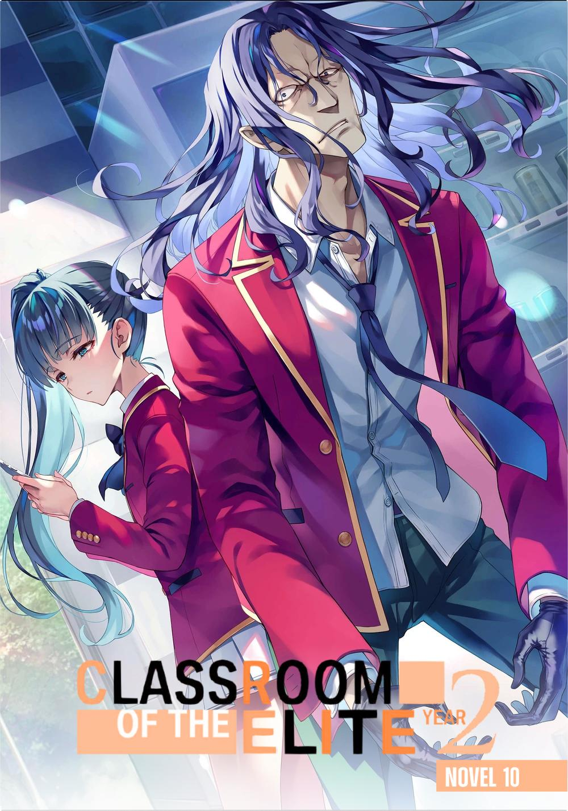
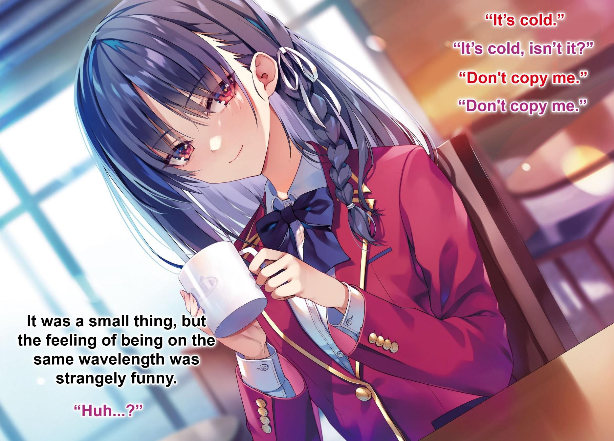
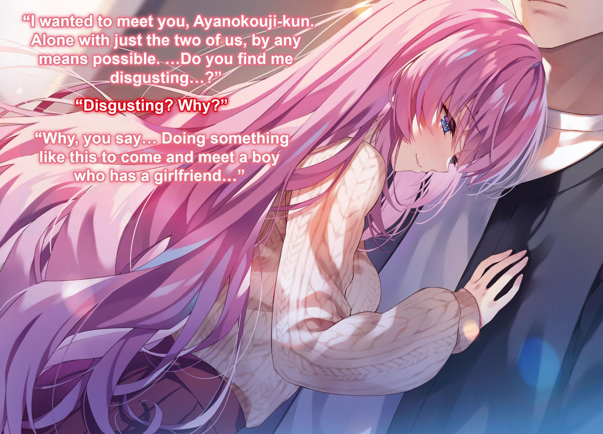
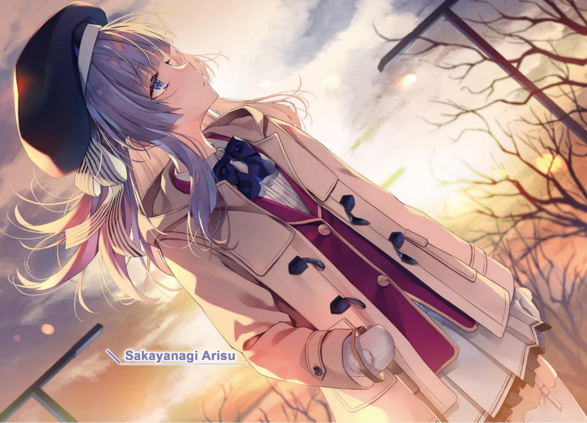
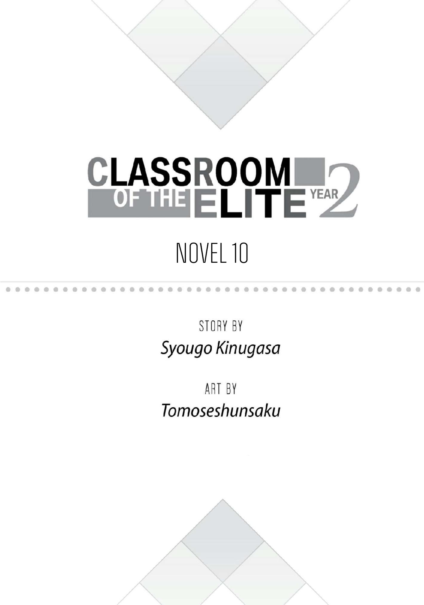
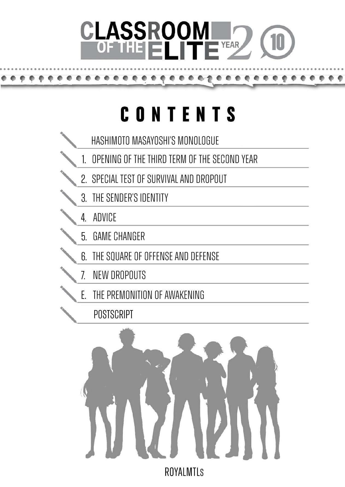
EL MONÓLOGO DE HASHIMOTO MASAYOSHI
En pocas palabras, desconfío profundamente de la gente.
Tengo una fuerte aversión a confiar de verdad en los demás.
Nunca confío plenamente en nadie.
La gente traiciona con facilidad.
¿No es así?
Nos ruegan que confiemos en ellos, asegurándonos que es seguro, y luego nos traicionan.
Cuanto más confiamos, mayor es el impacto de la traición.
¿No crees que es mejor traicionar antes de ser traicionado?
Es mejor vivir astutamente y beneficiarse, que vivir honestamente y luchar como un idiota.
Esa es mi política, la de Hashimoto Masayoshi.
Masayoshi...
Justicia[1], ¿verdad?
Cada vez que me cuestiono, me asquea mi propio nombre.
Parece que este sentimiento no es algo inusual hoy en día.
Comparado con aquellos que desprecian sus propios nombres desde el fondo de su corazón, mi asco es... algo bonito.
Sólo detesto el contraste entre mi nombre y mis pensamientos.
"Justicia" y "Masayoshi" no están relacionados.
Lo entiendo lógicamente.
Pero aún así, a primera vista cualquiera asociaría una personalidad diferente con mi nombre.
Juzgan el carácter de una persona basándose en su nombre.
Lo siento, pero ya renuncié a ser un defensor de la justicia.
Tomé una decisión desde que entré a esta escuela.
Definitivamente me graduaré en la Clase A. Me vengaré de aquellos que me traicionaron.
Para eso, haré cualquier cosa sucia.
Derribaré a cualquiera.
Haré que todos me tengan resentimiento.
Ya sea que el oponente sea Ryuuen o Sakayanagi.
O hasta Ayanokouji.
No importa quién sea el oponente, no cambiaré.
Actúo únicamente para mí mismo.
[1]: El kanji de Masayoshi puede interpretarse como "justicia"
LA APERTURA DEL TERCER TRIMESTRE DEL SEGUNDO AÑO
Habían murmullos de camino a la escuela. Un espectáculo no visto durante las vacaciones de invierno.
No me disgustaba el paisaje sereno, pero inesperadamente, puede que prefiriera observar las olas de estudiantes.
O quizás, simplemente me acostumbré a la escena que tenía delante.
Al sentir que se acercaba el final, tal vez inconscientemente empecé a apreciarlo.
—¿Qué pasa, Kiyotaka? Te detuviste.
Mi brazo derecho estaba envuelto en calor, y mirándome desde él estaba Kei, mi novia.
Sus labios húmedos me llamaron la atención. Debe de haberse puesto su lápiz labial favorito antes de salir.
—No, no es nada.
Murmuré esto y empecé a caminar con ella. Pasar tiempo con ella al menos no me aburría.
Aunque yo estuviera en silencio, Kei, a quien le encantaba charlar, me proporcionaba los temas del día en automático. Sin embargo, cada vez me encuentro más distanciado del tiempo que solía pasar solo.
Si me preguntaran si aquellos días que pasábamos juntos eran necesarios o innecesarios, diría que mitad y mitad.
Lo necesario fue que, al conversar repetidamente con alguien, mejoró mi capacidad de comunicación. Fue una valiosa oportunidad para pulir mis aptitudes en desarrollo.
Por otro lado, debido a mi inexperiencia, a menudo fallaba en mis respuestas al destinatario.
Especialmente cuando trataba con una Kei de mal humor, aún había ocasiones en las que elegía la respuesta equivocada y acababa empeorando su estado de ánimo. Todavía me costaba esa parte.
Por el contrario, el inconveniente era que se reducía el tiempo para pulir mis habilidades individuales. Aparte de los beneficios de la comunicación, las citas y la comprensión del sexo opuesto, estaba sacrificando muchas otras cosas.
—¿Qué? Me estabas mirando a la cara.
—¿Te disgusta eso?
—No es que me disguste, pero... Hmm, quiero besarte otra vez. Muchísimo.
El último día antes del final de las vacaciones de invierno, Kei y yo pasamos todo el día relajándonos en nuestra habitación.
Lo que ocurrió entre un joven y una joven compartiendo el mismo espacio no debería requerir mucha explicación.
Kei me estrechó aún más entre sus brazos.
Salvo el tiempo que estuvimos cambiándonos los zapatos tras llegar a la puerta, estuvimos pegados de principio a fin hasta que entramos en el aula.
—Buenos días a todos~
Era el comienzo del tercer trimestre. Al entrar, Kei saludó a sus amigos de la clase. Lentamente soltó sus manos de alrededor de mí y me guiñó un ojo diciendo:
—Hasta luego.
Dejando atrás ese profundo afecto, se marchó. Después, entré en el aula, me senté y dejé mi mochila ligeramente llena.
Desde que se introdujeron las tabletas en las clases, no necesitábamos llevar tantas cosas, pero la mochila seguía siendo indispensable.
—Maldita sea, no vengas así a clase. Es vergonzoso, Ayanokouji.
Sudou, que ya estaba en el aula, se mostró incómodo mientras me llamaba.
—Ir a la escuela del brazo, ¿no es la cumbre de la gente alegre?
Demonios, qué envidia.
Aunque la situación le parecía embarazosa, sentía cierta envidia.
—Quiero aclarar que no fue idea mía.
—¡Obviamente! Diablos, sería realmente espeluznante si hubieras querido eso, de verdad.
Continuó murmurando, objetando la idea, mientras acercaba su cara a la mía.
—Ser cariñoso está bien y todo eso, pero ¿viste el correo electrónico de la escuela sobre los de primer año que fueron atrapados durante las vacaciones de invierno? No estoy preocupado por ustedes, pero tengan cuidado.
—Sí, vi ese correo.
Casi al final de las vacaciones de invierno, llegó un correo electrónico de la escuela que decía que se habían impuesto sanciones a dos estudiantes de primer año.
Los nombres se mantenían en el anonimato, pero se decía que un alumno y una alumna habían sido vistos por otra persona, participando en un acto considerado como una interacción impura.
Cualquier actividad con intención de estimulación sexual estaba estrictamente prohibida, por lo que naturalmente fueron castigados.
—Deberían haberlo hecho dentro. ¿Y qué hay de ti? ¿Qué piensas como senpai?
—¿Qué quieres decir con 'qué hay de mí'?
—¿Quieres... hacer varias cosas... afuera?
No debería haber preguntado si le daba tanta vergüenza, pero no lo dije.
—Sólo puedo afirmar lo que sugiere el correo electrónico. Las instalaciones de la escuela están llenas de ojos observadores y cámaras de vigilancia. Si haces algo extraño, hay un alto riesgo de que te descubran. No elegiría ceder a mis instintos.
—Oh, bien. Eso suena como una perspectiva única que sólo tú tendrías...
Es un poco desconcertante.
Acabé desconcertando a Sudou, aunque de una forma distinta a la esperada.
—Phew.
Escuché el suspiro bastante profundo de Sudou. Al parecer se le escapó inconscientemente, pero al darse cuenta de lo que había hecho, se apresuró a disculparse.
—Eso no iba por ti. Perdona si te pareció un suspiro desagradable.
—No me molesta, pero ¿pasa algo?
Ya había levantado la voz en público muchas veces, pero no era propenso a suspirar mucho.
No había que subestimar este cambio.
—Últimamente me siento un poco cansado. Pensaba que podría compaginar los estudios con el deporte, pero cada vez es más difícil. Eh... No es para tanto.
Como si lamentara discutir la causa de su suspiro, Sudou trató de restarle importancia.
Expresar mi preocupación en este momento podría ser contraproducente.
Así que me limité a darle un consejo.
—Aunque atiborres el conocimiento, si te apresuras, es probable que se te escape. Demasiada prisa estropea el curry.
—Sí... De todos modos, estoy deseando volver a trabajar contigo a partir de hoy.
Cambiando de ritmo, sonrió y se dirigió a su asiento.
Justo entonces, Satou, que acababa de entrar en el aula, saludó a sus compañeros y pasó junto a mí.
—Parecían muy unidos esta mañana.
Susurrando así, añadió: "Gracias por la comida"[2], antes de unirse a su grupo de chicas.
Al parecer, vio cómo iba a la escuela con Kei desde atrás.
[2]: Satou diciendo ご 馳 走 様 (Gochisōsama) que se dice más comúnmente después de terminar una comida (por ejemplo いただきます (Itadakimasu) se dice antes de la comida). En este caso, ella está básicamente agradeciendo Kiyotaka por el amoroso material KiyotakaxKei que le han dado....
PARTE 1
Ni siquiera después de las vacaciones de invierno hubo cambios, ni para los alumnos ni para los profesores.
Cuando Chabashira-sensei entró en clase, ofreció brevemente un saludo de Año Nuevo y puso la mano en el atril.
—Hoy empieza el tercer trimestre. Dicen que enero va y viene, febrero pasa volando y marzo desaparece; este periodo de tiempo pasará a su lado en un abrir y cerrar de ojos. Asegúrense de no pasar los días por costumbre y manténganse concentrados.
Nadie lo señaló, pero el pelo de la nuca de Chabashira-sensei estaba un poco raro. Tenía su cabeza un poco despeinada. Probablemente se levantó tarde esta mañana y tuvo que darse prisa.
Para alguien que decía a sus alumnos que se concentraran, sus palabras resultaban poco convincentes.
Chabashira-sensei terminó la clase de la mañana y estaba a punto de salir del aula cuando se detuvo cerca de la entrada.
—Olvidé mencionar un aviso importante. El mes que viene vamos a celebrar nuestro primer "debate alumnos-profesor" en esta escuela. Se centrará en hablar de su carrera y su empleo, entrelazando charlas sobre su vida escolar hasta ahora. Por supuesto, ya hemos hecho una encuesta con sus padres.
Mientras miraba hacia atrás, transmitió el mensaje a la clase.
Aunque en algunos hogares la elección de carrera se basaba exclusivamente en las decisiones de los alumnos, la mayoría tenía en cuenta la opinión de sus padres.
Era la prueba de que la escuela trabajaba activamente incluso sin los alumnos.
—No sabía que existiera algo así en esta escuela. De hecho, pensaba que no lo teníamos.
El primero en hablar, como siempre, fue Ike. Nadie se sorprendió.
—Aunque la enseñanza en la preparatoria no es obligatoria, no podemos ignorar las palabras de los padres y permitir que los alumnos decidan su propio camino. Por supuesto, habrá reuniones de padres y profesores cuando llegue el momento.
Reuniones de padres y profesores. ¿Significa eso que existe la posibilidad de que "Ese hombre" venga otra vez?
No, me dijo claramente que no volvería. ¿Pero qué pasará después?
Aunque me preocupaba ese problema, la cuestión inmediata era la reunión individual de febrero. Dicho esto, en mi caso, mi futuro no era algo que pudiera controlar a voluntad, así que se podría argumentar que no importaba.
En ese sentido, fue muy útil que Chabashira-sensei conociera mi situación, aunque sólo fuera un poco. Como no eran necesarias discusiones profundas, probablemente sólo sería una formalidad.
Por otro lado, para mis compañeros, las discusiones uno a uno o uno a dos se convertirían sin duda en una encrucijada importante.
¿Seguirían adelante por el camino elegido o darían un rodeo para descubrir otro diferente?
Padres y profesores proporcionarían a los alumnos una visión de aspectos que no podían ver por sí solos.
—Si tienen curiosidad por algo, pueden venir a preguntarme directamente.
Tras entregar toda la información necesaria, Chabashira-sensei puso la mano en la puerta.
Y luego, con una mano cerrando la puerta, la otra mano parecía que estaba acariciando la parte posterior de su cabeza..
Al parecer, se dio cuenta de su propio pelo despeinado.
PARTE 2
Después de que Chabashira-sensei abandonara el aula, la clase se enfrascó en temas sobre la conferencia de alumnos y profesores y su futuro.
—Tenemos que empezar a pensar en lo que vamos a hacer, ¿no?
—Primero, debemos considerar el caso en que nos graduemos de la Clase A y el caso en que no lo hagamos. Qué estás pensando, Hirata-kun?
Las chicas que rodeaban a Yousuke, que estaba sentado en el centro de la clase, iniciaron la conversación.
—Pienso ir a la universidad, independientemente de los privilegios de la clase A. Mis padres me dijeron desde pequeño que eso era lo que querían.
Aunque no tenía intención de escuchar a escondidas, su conversación era audible, y no pude evitar oírla.
Yousuke no parecía tener ninguna intención de encontrar trabajo por el momento y planeaba continuar su educación basándose en su aptitud natural.
Teniendo en cuenta su actitud hacia los estudios y su capacidad académica real, éste me pareció un curso de acción natural.
Tanto si tenía las ventajas de la clase A como si no, si no tenía determinación, no podría aprovechar al máximo sus privilegios.
Bueno, esto es cierto para todos los aspectos de la vida.
—¿En serio? Pensaba que ibas a ser futbolista.
—Jaja, no precisamente. Incluso si utilizo los privilegios de la clase A para convertirme a la fuerza en profesional, si mis habilidades no están a la altura, está claro que me dejarán marchar pronto. Aunque vaya a la universidad, pienso seguir jugando al fútbol, pero sólo como hobby.
Conseguir un trabajo en el deporte era un obstáculo muy grande.
Entre los que deberían recurrir a sus privilegios para seguir adelante están los que tienen talento y, por una razón u otra, aún no han sido descubiertos o los que por otras cuestiones no pueden seguir el camino normal.
Entonces, ¿cómo deben aprovechar adecuadamente las ventajas de graduarse en la clase A?
Keisei, uno de los mejores alumnos de nuestra clase, abrió la boca.
—Si hablamos de los privilegios de la Clase A, sin duda deberíamos optar por un trabajo en una empresa destacada. Dejando a un lado el caso excepcional de que las habilidades de uno no estén obviamente a la altura, mientras podamos trabajar tanto como los demás, no nos despedirán fácilmente.
Para nosotros, saltar a un mundo en el que ganamos con tal de entrar puede ser la mejor opción.
Nuestros compañeros asintieron, convencidos por la lógica afirmación de Keisei.
Una empresa asume una gran responsabilidad cuando contrata a alguien.
A menos que se cometa un gran error, sería injusto despedir a alguien sólo porque no les gusta.
Esta no es una escuela nueva, y su existencia es ampliamente conocida porque está reconocida por el gobierno. Hasta ahora, deben haber aceptado a muchos estudiantes que se han graduado en la clase A.
En ese sentido, si elegimos una empresa de primera, podríamos relajarnos y cumplir con nuestros deberes durante mucho tiempo.
—Teniendo en cuenta la eficiencia, la elección de Yukimura-kun podría ser correcta. Pero creo que también es importante aspirar al trabajo que quieres.
Esa también era una de las respuestas correctas. Sólo tienes una vida, y está bien no elegir dedicarla por completo a un trabajo estable o al dinero.
Persigue un trabajo ideal o ve a por un trabajo realista.
Tarde o temprano, los estudiantes de este lugar se enfrentarán a estas encrucijadas.
Sinceramente, hay elecciones correctas e incorrectas para cualquier decisión.
El futuro después de mi graduación es sólo uno en este momento, pero si es correcto o incorrecto no se sabrá hasta muy lejos en la distancia.
¿Estuve viviendo la vida correcta?
La verdadera respuesta se revelará dependiendo de la conclusión a la que uno llegue cuando mire hacia su pasado.
PARTE 3
Era la primera hora del almuerzo desde que habían concluido las vacaciones de invierno y habían vuelto las clases. Kei ya había formado un grupo con las chicas, Satō incluida, y se dirigía a la cafetería. Es importante no solo centrarse en tu pareja, sino también apreciar a tus amigos. Observé la figura que se retiraba de Kei desde el pasillo. Las chicas estaban perfectamente alineadas.
—¿Por qué las chicas siempre caminan una al lado de la otra, sin importar si son cuatro o cinco?
—No sé por qué me lo preguntas. Caminar una al lado de la otra es sólo una molestia.
Le lancé una pregunta a Horikita, que estaba detrás de mí, pero no tenía ni idea.
—Además, ¿tienes ojos en la nuca? Es un misterio cómo te das cuenta de las cosas.
—¿No es mejor dejar el misterio como está?
—Entonces, ¿no tienes intención de decírmelo?
—Si me dices por qué las chicas siempre caminan juntas, puede que lo considere.
—Es una pregunta muy dura para Horikita-san. No tiene suficientes amigas para formar una fila.
Siguiendo a Horikita, apareció Kushida.
—Hay una jerarquía. Aunque bloquees el pasillo y te conviertas en una molestia, hay momentos en los que debes mantener la formación del grupo.
—Ya veo. Así que naturalmente evitan formar una configuración en la que tengan que seguir a una persona al frente.
—Probablemente. No lo dicen siempre, pero creo que es algo que pueden entender intuitivamente.
Así que podría ser un mecanismo derivado de la psicología de grupo que es común en las mujeres.
—Qué razón tan trivial. Deberíamos ser considerados con los demás cuando caminamos.
—Sí, sí. Es fácil para la gente sin amigos decir eso.
—¿Estás buscando pelea conmigo?
—¿Pensabas que no lo estaba? Eso es divertido.
Las dos se miraron fijamente y saltaron chispas.
—Por favor, no se peleen. ¿Necesitas algo de mí?
—Sí que necesito algo. Ayanokouji-kun, ¿puedo invitarte a comer hoy?
¿Horikita se ofrecía a pagar mi comida? Casi no tenía buenos recuerdos de esto.
—Cuando propones algo así, normalmente no sale nada bueno. Esto se basa en mis experiencias pasadas.
—Qué grosero. No te pediré dinero ni nada extraño, así que puedes relajarte.
—Bueno... De acuerdo.
Estaba seguro de que no podría relajarme, pero si se lo decía, probablemente se enfadaría. En lugar de eso, tras una larga pausa, asentí en silencio.
—Seguro que tardaste en decidirte. Puede que no me guste eso de ti, pero está bien. Kushida-san, ¿estás lista?
—Sí, estoy lista.
Ella cambió casualmente del modo batalla al modo ángel.
—Ya veo, así que Kushida también viene. Eso es bastante inusual.
¿Podría ser que Horikita no quisiera almorzar sola con Kushida y por eso me invitó?
Por un momento lo pensé, pero si odiara comer con un acompañante desagradable, no prepararía una situación así.
Estas dos deben tener una razón para invitarme juntas. Me pregunto qué estarán pensando.
Hoy, como Kei no está, no había problema en pasar el rato con ellas.
—Entonces, ¿vamos a la cafetería?
—No, a algún sitio... menos popular sería mejor.
Contestó Horikita, y Kushida, que caminaba a mi lado, iba con las manos vacías.
Entonces, ¿eso significa que vamos a parar en una tienda o en un puesto por el camino para comprar un bento?
No lo sabía, pero seguro que pronto lo averiguaría. Nos levantamos de nuestros asientos y empezamos a caminar hacia el pasillo. Por supuesto, los tres no caminábamos uno al lado del otro. Horikita iba por delante, mientras Kushida y yo íbamos un poco por detrás.
—Eh, Horikita-san. Quiero confirmarlo otra vez, ¿de verdad piensas comer?
—Sí, eso es lo que dije, ¿no?
—Ja... En ese caso, ¿podrías hacer primero una parada en la tienda?
Traeré medicina para el estómago.
—Por favor, para. Entiendo tu ansiedad, pero eso es innecesario.
Ya veo, ella va a comprar medicina para el estómago en una tienda de conveniencia en el camino. La medicina para el estómago era necesaria.
—Un momento. ¿Qué pasa con la medicina para el estómago? ¿Qué demonios piensas comer?
Estaba claro que había algo raro en querer procurarse algo innecesario para comer.
Cuando le pregunté severamente a Horikita, ella respondió sin mirar atrás.
—Es un almuerzo casero de Ibuki-san.
—...¿Un almuerzo casero de Ibuki?
Me vi obligado a manejar la situación con calma mientras mis pensamientos se congelaban por un momento.
—Ella está haciendo un almuerzo para mí, Kushida-san, y para ti hoy, así que vamos a dividirlo en tres partes iguales y compartirlo. ¿No te lo había dicho?
—Nunca tuviste la intención de mencionarlo, ¿verdad...?
Si hubiera escuchado esa explicación al principio, habría huido como una liebre asustada.
En primer lugar, de ninguna manera lo hizo para mí. Era demasiado inesperado.
—Si no me falla la memoria, Ibuki no es buena cocinera, ¿verdad?
No me atreví a llamarla mala e intenté reprimir mi miedo al pronunciar mis palabras.
—Ella es de las que nunca había hecho comida casera. Así que por lo general sólo preparaba comidas desequilibradas. Probablemente eso sea nuevo para tu vaga memoria, ¿no?
Había estado de vacaciones de invierno hasta hacía poco, pero me encontré con Horikita e Ibuki justo después de año nuevo.
Y recuerdo haber oído hablar del tema actual allí por casualidad.
—Como una alimentación desequilibrada no es saludable, hace poco la invité varias veces a mi habitación y la dejé comer la comida que preparaba. Ella venía sin falta, aunque a regañadientes, porque así ahorraba dinero en sus gastos de comida.
—Es un poco molesto que venga incluso quejándose, ¿no?
Normalmente, uno describiría eso como "irritantemente lindo", ¿verdad?
—Parece que sabes mucho sobre la situación de Horikita, considerando que dices que la odias.
—Me he pasado por ahí a menudo, esperando que tal vez estallara una pelea. Así es como estoy al tanto.
Esa era una expectativa muy desagradable; era propio de Kushida.
—Sin embargo, era un poco engorroso tener que cocinar para tres personas, yo incluida.
A pesar de sus quejas, a Horikita no parecía importarle mucho.
Quizá ya estaba acostumbrada.
—¿Y por qué tenemos que comernos el almuerzo casero de Ibuki?
—Fue un ojo por ojo. Cuando Horikita se burló de ella, diciéndole que al menos debería aprender a cocinar, ella se jactó en voz alta: '¡Incluso yo puedo cocinar si me lo propongo!' 'Entonces demuéstramelo.' 'Prepárate y espera, lo haré'. 'Si ni siquiera puedes hacer eso, muérete'. 'Si lo consigo, te mato'. Y así es como llegamos aquí.
Me impresionó lo fácil que era entender e imaginar el flujo de los acontecimientos.
Pero las dos últimas frases eran muy probablemente mentiras. Espero.
—Muy bien, entiendo la situación. Bueno, me voy a la cafetería, hasta la próxima.
En el cruce, intenté escapar girando en otra dirección, pero Kushida me agarró inmediatamente del brazo.
—Tienes suerte. Consigues comer comida casera de alguien biológicamente clasificada como chica.
—Me engañaste.
Expresé mi resentimiento hacia Horikita, que caminaba tranquilamente delante de mí.
—No es agradable oírte decir que te engañé. Sólo quería compartir la cocina de Ibuki-san con tanta gente como fuera posible. ¿Y no sería extraño involucrar a gente que no es cercana a ella? Y es demasiado pronto para suponer que no estará delicioso.
De la conversación no pude sacar la impresión de que le hiciera ilusión.
Comprendí que no podía escapar, así que no me quedó más remedio que seguirla a regañadientes.
—¿Pero no podías evitar que te involucraran y escapar, Kushida?
Tenía sentido meterse en la habitación de Horikita para comer su comida casera, pero por mucho que quisiera ver a Horikita contra Ibuki, el riesgo era alto. Ella no sabía qué tipo de tragedia le esperaba.
—Bueno, sí. Hasta yo tengo algo en esto, ¿sabes?
—Tú también odias perder, ¿verdad, Kushida-san? Viniste aquí en contra de tu buen juicio sólo porque fuiste provocada de forma barata por Ibuki-san, preguntando si ibas a huir como una cobarde, ¿verdad?
—...Sólo quería ver fracasar a Ibuki y pedir perdón por ello.
Parecía que había dado en el clavo, evidente por su abandono de los honoríficos, pero ¿sería Ibuki de las que se disculpan si fracasan?
Bueno, su personalidad problemática era la razón por la que podría haber pensado que merecía la pena presenciar la disculpa, aunque la probabilidad fuera baja.
—No parece que esté aquí todavía. Aunque llegamos justo a tiempo para nuestra cita...
Este parecía ser el lugar de encuentro, y se detuvo frente al pasillo que conducía al exterior.
Mintió diciendo que quería un lugar sin mucha gente, pero daba la impresión de que desde el principio planeaba involucrarme.
—Oye, nuestras aulas están cerca, ¿por qué necesitábamos encontrarnos en este lugar?
—De hecho es una reunión sin sentido, pero invité como es debido a Ibuki-san también, ¿sabes? Ella sólo rechazó la idea de caminar juntas.
Si Horikita (y probablemente Kushida) le caían tan mal, podría haber rechazado el reto.
Es un buen ejemplo del problema de ser demasiado competitivo.
—Puedo decir que va a fracasar y nos traerá un almuerzo desagradable,
¿verdad?
—No quiero suponer el resultado, pero no hay duda de que es probable que falle.
—Ya veo... Así que ahora tengo que comer el plato fallido, ¿eh?
— ¡Dejen de balbucear sobre el fracaso!
Justo cuando el aire estaba a punto de volverse pesado, Ibuki se unió a nosotros mientras gritaba.
Tiene una bomba... No, una caja de almuerzo en su mano. La tenía. Ojalá no la tuviera.
Desearía que hubiera dicho algo como, "¡Lo olvidé, así que este combate se cancela!" La habría apoyado.
—¿Por qué está Ayanokouji aquí? Yo no lo invité.
—¿No es mejor tener más jueces? Eso aumentará la credibilidad del nivel de cocina. Cambiaremos el lugar ya que todos están aquí. No quieres parecer demasiado amistosa con nosotros, ¿verdad?
—¡Por supuesto que no!
Hecho esto, salimos del pasillo. Aún era principios de enero, por lo que el frío era bastante intenso, pero debido a ello, no había nadie en el punto para comer.
Ibuki agitó lo que parecía ser una caja bento envuelta en un furoshiki sencillo (algo que vi en una tienda de 100 yenes) y la dejó sobre el banco.
— Se arrepentirán de haber hablado de mi fracaso. Dense prisa y coman.
—Pareces confiada, ¿quizás ocurrió un milagro y realmente cocinaste bien?
Está rebosante de confianza. Eso es mucho mejor que no tener confianza, pero
¿estamos seguros de tener expectativas?
—Está claro que es de las que se confían demasiado, así que no podemos tomarnos en serio su actitud.
Horikita, plenamente consciente de ello, apartó la mirada de Ibuki para mirar la caja de bento.
Mis débiles esperanzas, así como las de Kushida, se desvanecieron al instante.
—Hmm. No estaría aquí si no creyera que puedo ganar.
—Tu confianza es evidente. Pero si ese es el caso, deberías tratar tu comida con más delicadeza. Aunque te haya salido bien, fracasarías como chef.
—Cállate. Come rápido. Entonces, ¡discúlpate conmigo, Horikushi! ¡Tú también, Ayanokouji!
—No nos metas a Kushida y a mí en el mismo saco, qué manera de abreviar nuestros nombres.
No me molestaba especialmente que me nombraran como algo secundario.
Sin embargo, sentí como...
—Las tres se han hecho muy amigas, ¿verdad?
Contradecía el ambiente evidentemente tenso, pero era lo que parecía.
—No somos cercanas, ¿cómo puedes malinterpretar hasta ese punto, Ayanokouji-kun?
—Así es, no interpretes las cosas de forma extraña.
—¡Te daré un puñetazo si vuelves a decir eso!
Evidentemente, una de ellas estaba en una longitud de onda diferente, pero aun así parecían llevarse bien. De cualquier manera que se mire, yo estaba fuera de lugar aquí.
—¿Debería irme a casa?
Expresé este pensamiento genuino porque no quería ser una molestia, pero...
—¡No puedes irte!
—No puedes huir.
—Eso es injusto, Ayanokouji-kun.
Las tres gritaron al unísono una vez más.
No lo entendí del todo, pero me pareció que no podía escapar, así que me senté.
Bueno, estaba bien. Escuchar su conversación era algo interesante.
La cocina de Ibuki era claramente amateur.
Aun así, podría haber experimentado y probado varios métodos para hacer que Horikita y Kushida admitieran su derrota.
Con una pizca de expectación, evalué la estética de la comida, un elemento crítico.
Del furoshiki[3] salió una sencilla caja de bento (de nuevo, algo de una tienda de 100 yenes).
—Bien, vamos a abrirla.
Ibuki no mostraba ningún tipo de preocupación o ansiedad mientras permanecía con los brazos cruzados.
Una vez abierta lentamente la tapa del bento...
Lo primero que llamó la atención fue el arroz, pero no arroz normal, sino arroz frito.
Varias verduras y carnes le daban un aspecto colorido.
Sin embargo, los ingredientes del arroz frito eran inusualmente grandes. Además, había mini tomates, tamagoyaki[4], gratinados, platos cocinados a fuego lento, fritos y también mini hamburguesas. Aunque cada ración era pequeña, los siete tipos estaban generosamente distribuidos. La característica principal era la adición de cuatro lonchas de baran[5].
Se podría decir que conservaba la apariencia de un bento.
—¿Lo hiciste todo a mano?
—Por supuesto.
Respondió inmediatamente, por lo que daba la impresión de que la respuesta era cierta. Sin embargo, inesperadamente incluyó platos cocinados a fuego lento.
—Te daría una bonificación de 30 puntos por su aspecto, tal vez.
—En la cocina importa el sabor, no el aspecto.
—Te estoy haciendo un cumplido. Pensé que aparecería algo cercano a 0
puntos.
Siendo generosa dijo que era mejor de lo esperado, ganando una puntuación de 30 puntos.
Horikita parecía haberse preparado para esto de antemano y había traído varios pares de palillos desechables. Se guardó un par para ella y luego nos dio un par a Kushida y a mí.
—Vamos a la degustación.
—Es la primera vez que no tengo ganas de degustar algo~ Qué bonito recuerdo~.
Kushida dijo con voz monótona y separó sus palillos. No se mostró en absoluto ansiosa por dar el primer bocado, esperando a que Horikita lo hiciera.
Horikita tomó un poco de arroz frito con los palillos y se lo llevó a la boca.
Luego cogió uno de los gratinados y también se lo llevó a la boca.
Después de terminar de comer en silencio, Kushida le preguntó.
—¿Qué tal?
—No lo diré todavía. No quiero que mi reacción influya en la tuya. Te toca a ti.
—Tsk.
Qué descarado chasquido de lengua.
Si cualquier estudiante que todavía tuviera ilusiones sobre Kushida viera esto, seguramente se desmayaría. Incluso si lo oyeran, lo descartarían como accidental, no creyendo que fuera a propósito.
—¿Puedo probar los mini tomates?
—Tómatelo en serio.
—Tsk, eres muy estricta.
De nuevo, se oyó el intenso chasquido de lengua de Kushida, y pareció aún más fuerte que la primera vez.
De mala gana, eligió el plato cocinado a fuego lento y la mini hamburguesa para probar.
—Ahh... ya veo. Aquí tienes, Ayanokouji-kun.
A partir de la cara iluminada de Kushida, el testigo de la comida asquerosa pasó a mí.
Ahora, ¿qué hacer con ella?
El almuerzo de la caja consistía en siete artículos, incluyendo un pequeño tomate. Como las dos se habían comido cuatro, supuse que lo mejor sería comer los dos restantes aparte del mini tomate.
Eso significaba un tamagoyaki enrollado y un plato frito. Era una elección entre la vida y la muerte, o quizás entre la muerte y la muerte.
—Bien entonces, empezaré con el tamagoyaki.
Un alimento básico para cualquier almuerzo. Aunque requería una habilidad considerable para perfeccionarlo, era fácil hacer uno decente.
Me lo metí en la boca, instintivamente en guardia por si había trozos de cáscara de huevo.
Pero bajó por mi garganta sin ningún crujido o molestia, así que pasé al plato frito. No me di cuenta hasta que lo tomé con los palillos, pero era una croqueta redonda del tamaño de un bocado.
—...
La coloqué cautelosamente en mi lengua. Al morderla, el relleno se derramó. Era claramente una croqueta y sabía como tal.
Sin embargo, la textura blanda era más prominente. No estaba suficientemente frita, lo que dejaba los ingredientes demasiado húmedos. Además, se sentía mal en la lengua y dejaba un regusto pobre.
Al terminar, dejé los palillos en silencio y cerré los ojos.
...Sí, ya veo.
Al masticar y tragar, la respuesta me viene a la mente de forma natural.
—Ya que todos hemos terminado de comer, te daré mi sincera opinión. No está delicioso.
—¿Qué?
—No es incomible y, visualmente, era mejor que el peor escenario de 0
puntos. Puedo decir que un principiante trabajó duro para hacer esto, pero más que eso, está claro que había demasiada sal; el condimento se añadió al azar.
Claro, no era desagradable.
El atrevido condimento fue quizá el resultado de calcularlo a ojo, como señaló Horikita.
—Sí, puedes comer zanahorias sin pelarlas, pero la textura es pobre y el tamaño de los trozos es desigual. Hiciste un intento serio, pero no pudiste ocultar qué partes te parecían molestas.
Era sólo una caja de almuerzo, pero Horikita fue capaz de decir con precisión el proceso de pensamiento de Ibuki cuando lo preparó. Y a juzgar por la expresión amarga de la chica, tenía casi toda la razón.
—No quiero comer más. Así que esto es lo que significa desperdiciar una comida.
La frustración de Ibuki era evidente en su vehemente respuesta al cáustico comentario de Kushida.
—Es sorprendente que puedas presumir de no perder con Horikita en la cocina. Deberías haberle dado algo de dinero a un buen cocinero y pedirle que te lo preparara.
La criticaron duramente, y aunque era un poco lamentable, no se podía evitar dada la calidad de la comida que había hecho.
—¡No están juzgando justamente!
—Si dices eso, entonces te lo comes. Ni siquiera lo has probado bien,
¿verdad?
—¿Prueba de sabor...? No lo he hecho, pero parece normal y debe ser comestible.
—No dije que no fuera comestible. Sólo que no sabe bien. Ahora, vamos, cómetelo.
Ibuki dio a regañadientes un mordisco a la lonchera que había preparado, visiblemente molesta.
—...Uf, no está delicioso... está delicioso... ¿¡Asombroso!?
—No te obligues a mentir.
Al ser golpeada en la cabeza por Horikita, Ibuki aulló.
—¿Por qué no está delicioso? ¡Tiene un sabor tan simple y decepcionante!
¡Y está salado!
—Te lo he explicado todo. No puedes simplemente echarle a ojo a todo.
—Aunque me digas eso, pensé que no había mucha diferencia entre una cucharada o dos cucharaditas, ¡es sólo una molestia!
Ese era el principal problema. La comida del almuerzo variaba mucho de condimento y era demasiado ligera o estaba demasiado condimentada.
—Si tuviera que puntuar tu cocina esta vez, le daría 20 puntos.
—... ¿De 20?
—De 100.
—¿¡Qué!? ¿Está sobornada la juez?
—Estaba siendo generosa contigo. No quiero ni comerme este almuerzo.
—Cierto. Si fuera yo, le daría 2 puntos.
Ibuki pateó el suelo en protesta por las duras críticas de las jueces.
—¿Qué hay de ti Ayanokouji-kun? Debes tener una opinión similar,
¿verdad?
—No, no creo que sea incomible. Le daría una puntuación más alta a este almuerzo.
—¿¡Ven!? ¿¡Ven!?
Ibuki dio un ligero salto, mostrándose complacida por la primera señal de apoyo.
—¿Estás cuerdo? Esto es un mediocre almuerzo mal hecho.
—De acuerdo, sin ningún prejuicio.
Horikita igualó la zancada sin vacilar. Sin embargo, quería meter mano.
Habría que tener en cuenta varias perspectivas al hablar de este bento.
—Pero no es incomible. Eso lo has admitido, ¿no?
—Bueno... sí, pero no quiero comérmelo.
—En esta época, en la que abunda la comida, nunca querría comer esto en mi vida cotidiana, pero ¿y si nos arrojaran a una isla desierta? Si esto fuera lo único para comer allí, ¿no te lo comerías con gratitud? Así que, mi puntuación es...
—Tu puntuación es justa. Gracias por la analogía tan poco clara. Al menos, entendí claramente que no lo elogiabas.
—...¿Es así?
Mi calificación fue interrumpida justo cuando estaba a punto de anunciarla, dejándome un poco indigestionado y un poco enfermo.
O tal vez era la indigestión que comenzaba por la comida arrojada a mi estómago.
—De media, 11 puntos. Es una pena, Ibuki-san.
Al final, si mi evaluación no iba a ser incluida, tal vez no necesitaba que me llamaran...
Ya era pasado, pero lo único que me quedó fue un sentimiento de decepción que no podía quitarme de encima.
—Ugugu...
Originalmente incapaz de cocinar, Ibuki no tuvo más remedio que aceptar el resultado de su exageración.
—Si dices que lo volverás a hacer más tarde, puede que saque tiempo para ti.
—¡No lo volveré a hacer!
Siendo criticada todo el tiempo, Ibuki gritó su insatisfacción, posiblemente quebrada por una ronda de cocinar.
—Abandonar antes de tiempo no es algo malo. Cocinar simplemente no es para ti en este momento.
A pesar de ser criticada de nuevo, Ibuki, ya decidida, resopló y se cruzó de brazos.
—Al contrario, me he dado cuenta de que es estúpido molestarse siquiera en cocinar. Todos están perdiendo el tiempo.
—¿Qué quieres decir con eso?
—Puedes simplemente comprar un bento en una tienda o supermercado.
Ahorras tiempo y no tienes que preocuparte de los ingredientes sobrantes. Y
hasta sabe delicioso. ¿Verdad?
Bueno... supongo que esa es una de las ventajas de un bento preparado...
—No deberías hacer eso. Debes tener bien en cuenta tu alimentación cuando prepares las comidas. ¿Cuánto tiempo tengo que repetir lo que ya he explicado? Por eso no creces.
—Jajaja, eso es verdad. No sólo tu mentalidad, tu crecimiento físico también parece estancado.
—¡Eh, Kushida! ¡¿Qué estás mirando cuando dices eso?!
—¿Tú qué crees?
—¡Voy a patearte ahora! ¡Te voy a obligar a disculparte!
—Está bien, está bien. No muerdas por cualquier cosa. El hecho de que siempre te pongas espinosa demuestra que no te estás alimentando lo suficiente.
Ven a mi habitación esta noche a las siete.
—¡Si tanto insistes, acepto!
¿Va a ir?
Pensé que se negaría, pero a pesar de su enfado, Ibuki aceptó.
Al mismo tiempo que ahorraba dinero en las comidas, podía conseguir una comida nutritiva y deliciosa.
Tener que escuchar los regaños de Horikita era una desventaja, pero era una oportunidad demasiado valiosa como para dejarla pasar.
—¡Nos vemos entonces!
Dejando atrás las palabras de despedida, Ibuki se marchó con paso rápido.
Si hubiera sido en un apartamento, su energía habría molestado a la gente de abajo.
—Dejando el almuerzo que trajo sin limpiar, de verdad...
Mostrando una actitud contrariada como la de una madre que se queja de la incompetencia de su hija, Horikita ordenó la lonchera desparramada.
No se la iba a llevar a casa para lavarla, ¿verdad?
Kushida, que estaba sentada a su lado, apartó la mirada de todo aquello y se levantó.
—Entonces yo también te molestaré a las siete.
—¿Pero yo no te invité?
—Está bien. Quiero ahorrarme tantos puntos privados como sea posible. Y
una comida pagada con tu dinero no está mal. Disfrutaré comiéndola.
Parecía encontrar el gusto en cosas totalmente diferentes a los demás.
—¿No tienes ya suficientes puntos privados?
—Estoy lejos de tener suficientes. Se suponía que iba a recibir dinero de alguien cada mes, pero inesperadamente, los planes cambiaron.
Aunque sonrió amablemente, sus fríos ojos se dirigieron a mí.
Luego, volviendo a su habitual carácter angelical, desapareció en dirección a la cafetería.
—Bueno, con esto terminamos. Buen trabajo.
—Sí, buen trabajo... espera un momento.
Detuve enérgicamente a Horikita, que estaba a punto de agarrar despreocupadamente la caja bento y marcharse.
—¿Qué pasa?
—No recuerdo que me invitaran a comer sólo por probar un bento malo,
¿verdad?
—Podrías haberte comido todo el horrible bento sin dudarlo.
Me ofreció la caja de bento, en la que aún quedaba mucho, pero la aparté sin dudarlo.
—Era una broma. Vamos a la cafetería. Te invito lo que quieras.
Por lo visto Horikita tenía algún resto de conciencia al responder.
—Pero debe ser caro alimentar tanto a Ibuki como a Kushida. Dos personas, ¿verdad?
—Gracias a ellas, mis gastos en comida casi se han duplicado. Kushida-san vino aunque no la invité.
—¿Crees que tu presencia y la de Ibuki sirven para aliviar el estrés de Kushida?
Si realmente lo odiaran, no elegirían pasar su tiempo juntas, con comidas gratis o sin ellas.
—No lo sé. Parece que disfruta infligiéndome daño más que con cualquier otra cosa. Incluyendo a Ibuki-san, siento como si no pudieran evitar querer ver mis dificultades y mi expresión frustrada.
Ya veo. Eso también podría ser cierto.
Pasando el mismo tiempo juntas, podrían tener la oportunidad de ver el lado débil de Horikita.
—Puede ser difícil de imaginar, pero debe haber momentos divertidos cuando se reúnen las tres, ¿verdad?
—No hay nada de eso. No es la típica reunión de chicas. No hay risas y siempre hay tensión. ¿No viste nuestra conversación de antes?
Recordando, la reunión de antes no fue nada agradable.
La única vez que Kushida, quizá por costumbre, mostró una sonrisa o una mueca, fue menos de la mitad de las veces que lo hacía con los demás.
Pero, extrañamente, no había una atmósfera pesada o tensa. Se sentía más bien cómodo de una manera extraña.
—Vámonos. Es una pérdida de tiempo seguir hablando de esas dos para siempre.
—Me parece bien.
Mientras empezábamos a caminar, empecé a reflexionar sobre el mini-acontecimiento que acababa de tener lugar.
A pesar de la carga que tenía en la lengua y el estómago, la reunión de hoy había sido increíblemente significativa.
Horikita, Kushida e Ibuki, que era de otra clase.
La recién formada, aunque distorsionada, relación entre ellas tres era inesperadamente sólida y no debía subestimarse.
Seguramente todas lo negarían si yo llamara a esto amistad, pero mi interpretación era que la secuencia de sorpresas provenía del surgimiento de una amistad incipiente. Sin embargo...
—¿Qué?
Quizá a Horikita no le gustó que yo, caminando a su lado, la estuviera mirando.
Entrecerró los ojos desafiante.
—Estaba pensando en qué comida costosa me podrías invitar.
—Si ese es el caso, deberías comer lo que quieras sin preocuparte por el costo.
—Sólo quiero comer lo más caro que haya.
—Sólo... haz lo que quieras.
Pero entonces, por alguna razón, me vi obligado a decidir una comida fija para comer.
[3]: "Furoshiki" es un paño de envolver tradicional japonés, a menudo utilizado para transportar ropa, regalos u otros bienes.
[4]: "Tamagoyaki" es una tortilla enrollada japonesa.
[5]: "Baran" se refiere a los separadores decorativos de plástico o papel que se utilizan en las cajas bento.
PARTE 4
Pasadas las nueve de la noche, Kei volvió a casa después de haber venido, y yo me estaba preparando para el día siguiente.
La televisión que quedó encendida de fondo emitía un programa de variedades, en el que me detuve para prestar atención.
Un hombre de unos 40 años hacía de presentador y provocaba risas bromeando con los cómicos. La escena cambió, a una in situ, mostrando un recorrido por la ciudad.
Observando durante un rato, el mismo tipo de bromas y comentarios parecían ser repetidos sin cesar por el presentador en el estudio.
Se mostraban cinco cuadros, y el público tenía que identificar cuál era el verdadero, lo que provocaba sorpresa y risas.
—El número cuatro.
Tras murmurar con indiferencia la respuesta, apagué el televisor sin esperar a la solución real. La habitación, antes ruidosa, enmudeció al instante.
A Kei le encantaba ver la tele y a menudo la dejaba encendida cuando estábamos los dos solos.
Aunque yo no sentía especial aversión por la televisión, después de haber experimentado con varios géneros para estudiar, me di cuenta de que no me gustaban especialmente los programas de variedades. Me dirigí hacia la gaveta, sacando el cuaderno de dibujo y el juego de lápices de colores que guardaba en el segundo cajón.
Los había comprado con mis puntos privados poco después de matricularme en la escuela, pero no había vuelto a poner un dedo sobre ellos. Recordé la cara de perplejidad de Kei cuando descubrió el cuaderno intacto en mi cajón.
Extendí el cuaderno sobre el escritorio y abrí el estuche plateado que contenía los lápices de colores.
Saqué los lápices de colores nuevos...
Y entonces me detuve.
¿Qué debía dibujar?
Si no pensaba en nada, mi mano se detendría inevitablemente.
Supuse que podría crear algo por impulso, pero no fue así.
En la Habitación Blanca aprendí numerosas técnicas para mejorar mi aptitud.
Entre ellas estaba dibujar, que no se me daba mal.
Sin embargo, el proceso de pensar y crear sin ayuda no formaba parte del plan de estudios.
Me quedé mirando el cuaderno de dibujo vacío.
Al cabo de un rato, cerré el estuche plateado.
—Otro día ha llegado a su fin.
Murmurando semejantes pensamientos, devolví el cuaderno de bocetos y los lápices de colores al segundo cajón. Tal vez, como dijo Chabashira-sensei, este tercer trimestre pasaría en un abrir y cerrar de ojos.
EXAMEN ESPECIAL DE SUPERVIVENCIA Y ELIMINACIÓN
DESPUÉS DE LAS VACACIONES DE INVIERNO, la vida escolar empezó de nuevo.
Los saludos con los compañeros a los que no veía desde hacía unas dos semanas hasta el nuevo curso fueron un poco incómodos, pero aparte de eso, los días transcurrieron sin incidentes.
¿Cuándo sería el próximo examen especial?
Mientras todos en la clase tenían eso en mente, Horikita, que había recibido pistas de los senpais, estaba más preocupada.
Apareció Chabashira-sensei, la profesora que simbolizaba el comienzo de un nuevo día escolar.
Su expresión era siempre severa, dirigiéndose al podio con rostro serio y sin un ápice de jovialidad.
Sin embargo, a pesar de que todo era como de costumbre, algunos de los alumnos percibieron de forma natural que algo era diferente.
Observando todo desde el fondo del aula, llegué a la misma conclusión.
El jueves, cuando ya había transcurrido la mitad de la semana, finalmente comenzó el preludio.
—Buenos días. Hoy quiero hablar de nuestro primer examen especial de este tercer trimestre.
Al igual que los profesores habían estado observando sus clases durante dos años, los alumnos también habían estado observando a los profesores.
—No muchos de ustedes están sorprendidos. Veo que se les ha dado bien entender los tiempos.
De ser así, el anuncio será rápido. Chabashira-sensei se enderezó y miró a los alumnos.
—Me gustaría entrar de lleno en la explicación. Este examen especial tiene reglas un poco complicadas.
Chabashira-sensei encendió el monitor e inició el software.
—Este examen especial sólo se llevará a cabo entre los estudiantes de segundo año.
Inicialmente, se reveló que no iba a involucrar a otros años como los de primero y tercero.
—Este va a ser un reglamento diferente al del examen especial en el que competimos codo con codo por el primer puesto o decidimos el ganador en un mano a mano con una clase específica. Lo explicaré con la ayuda de diagramas para que sea más fácil de entender. Veamos el monitor.
Los datos creados por la escuela se cargaron rápidamente y se abrió un archivo.
[Examen Especial de Supervivencia y Eliminación]
La primera línea de texto que apareció era el nombre del próximo examen especial.
A pesar de ser un simple nombre de examen, hubo una ligera tensión entre los estudiantes.
—Supervivencia y eliminación? Eso suena muy peligroso...
Las habituales palabras cándidas de Ike. Sin embargo, era una impresión comprensible.
Al ver la palabra "eliminación", había algo que se asociaba inevitablemente a ella.
Aunque los estudiantes no lo decían explícitamente, todos lo asociaban con
'expulsión'.
Chabashira-sensei, sin comentar el nombre del examen especial, comenzó a explicar el contenido del mismo.
—En este examen especial, hay tareas diversificadas basadas en categorías preparadas por la escuela. Cada clase elegirá una categoría, seleccionará una dificultad y emitirá una tarea a la clase objetivo en un orden específico.
Se puso como ejemplo un diagrama de una figura cuadrada.
①Clase A → ②Clase B
↑
↓
④Clase D ← ③Clase C
—Si bien la disposición de estas clases es sólo un ejemplo, estando nosotros en el sentido de las agujas del reloj desde la Clase A, nos harán resolver la tarea que ellos eligieron y le dieron a la Clase B; lo que significa que la Clase A es el bando atacante en este caso. Por otro lado, la clase B es el bando defensor. La clase B gana puntos resolviendo la tarea, es decir, el ataque que vino de la clase A. Entonces, una vez realizada esta acción ofensiva y defensiva, la clase B estará en el lado ofensivo y entregará tareas a la clase C.
Repetiremos este ataque y defensa mientras nos movemos alrededor de las clases, y la guerra ofensiva y defensiva entre la clase D y la clase A al final de la rotación se considerará un turno.
A partir de esta explicación inicial, quedó claro que los puntos para tu clase no aumentaban cuando atacabas, sino que los puntos aumentaban dependiendo de cuántas de las tareas pudieras hacer correctamente cuando defendías.
—Después de 10 turnos, la primera mitad habrá terminado. En la segunda mitad se invertirán las flechas en sentido contrario a las agujas del reloj, y se
celebrarán otros 10 turnos. Vamos a repetir las batallas ofensivas y defensivas para un total de 20 turnos.
Otra figura se mostró cortésmente para la rotación en sentido contrario a las manecillas del reloj.
①Clase A←④Clase B
↓
↑
②Clase D→③Clase C
Todavía no estaba seguro de cómo se decidiría la disposición de las clases, pero no se podía pasar por alto el hecho de que no habría acciones ofensivas y defensivas contra la clase situada en diagonal.
Sería una carga mental adicional librar una guerra defensiva y ofensiva contra una clase que suponía la mayor amenaza para los propios compañeros.
—A continuación, detallaré las tareas para el bando ofensivo. Las categorías proporcionadas por la escuela, como mencioné al principio, abarcan una amplia gama. Desde habilidades académicas fundamentales, como literatura, economía, inglés, aritmética, kanji e historia, hasta materias no relacionadas con lo académico, como subcultura y entretenimiento.
—¿Los alumnos necesitan cosas como entretenimiento...? No soy bueno en eso...
Sudou expresó abiertamente su aversión hacia el término desconocido mencionado.
—En
efecto,
algunas
áreas
podrían
no
estar
relacionadas
fundamentalmente con las responsabilidades de un estudiante. Pero los ignorantes del mundo suelen ser eliminados cuando pisan la sociedad. En otras palabras, aunque no sepas estudiar, los que saben seguir la conversación suelen ser un tesoro. Esto significa que esta vez, tu conocimiento general como ser humano será puesto a prueba.
Con esa explicación, algunos entendieron mientras que otros seguían confundidos. El aire estaba tenso.
Sintiendo esto, Chabashira-sensei añadió a su explicación.
—Parece que hay algunos a los que les cuesta entenderlo, así que permítanme simplificarlo. Básicamente, tiene aspectos similares a un concurso.
La clase atacante presentará un cuestionario, y la clase defensora lo resolverá.
Así de sencillo.
Esta descripción fue extremadamente clara, y muchos estudiantes empezaron a mostrar su comprensión simultáneamente.
Al mismo tiempo, también hubo quienes mostraban expresiones de desconcierto.
Competir con un cuestionario, de hecho, si sólo se procediera con esa imagen, no sería descabellado.
Sin embargo, no todas las personas de éxito son sólo excelentes en lo académico. Independientemente de su nivel académico final, muchos poseen algo digno de mención aparte de eso.
En ese sentido, no podría decirse de forma definitiva que los conocimientos en áreas como el entretenimiento fueran completamente innecesarios.
Si se quisiera entrar en la industria del entretenimiento, habría una diferencia significativa entre no saber nada y tener abundantes conocimientos.
Los conocimientos no académicos también se pondrían a prueba a la hora de facilitar una comunicación fluida con superiores y subordinados. Si pudieras utilizar plenamente tus habilidades, sería una ventaja en muchos casos, sin duda.
Ofensiva
Selecciona la categoría y la dificultad. Nombra a un alumno y ataca.
Límite de ataque
Se puede nominar consecutivamente al mismo alumno. También es posible elegir repetidamente la misma categoría.
Nomina a cinco estudiantes de la clase defensiva objetivo al personal encargado en los tres minutos siguientes al inicio.
※ Si no se pueden hacer nominaciones dentro del tiempo límite, el número restante de estudiantes será seleccionado al azar.
Lista de posibles categorías para las preguntas Literatura, Historia, Ciencia, Sociedad, Deportes, Entretenimiento, Música, Economía, Conocimientos generales, Inglés, Aritmética, Noticias, Kanji, Estilo de vida, Gastronomía, Subcultura
Nivel de dificultad
Tres niveles, del uno al tres. (Cuanto mayor sea el número, mayor será la dificultad)
Número objetivo
Cinco personas
Efectivamente, como la escuela había mencionado, el examen especial abarcaba una gran variedad de temas.
Había 16 opciones sólo para la categoría.
—La clase atacante seleccionará primero una categoría de entre estas-
—¿No elegirán todos el nivel de dificultad más alto para sus oponentes?
Durante la explicación de Chabashira-sensei, esto pareció haberse escapado involuntariamente de la boca de Ike.
Tras murmurar eso, se tapó la boca a toda prisa, pero ya era demasiado tarde.
En el incómodo silencio que siguió, miró tímidamente a Chabashira-sensei.
Aunque había una fuerte impresión negativa en torno a interrumpir a alguien a mitad de una explicación, Chabashira-sensei, aunque suspirando, no se mostró demasiado dura con él.
—Ten cuidado con tus comentarios descuidados, Ike.
—S-sí, ¡lo siento!
—La clase atacante seleccionará el nivel de dificultad después de elegir la categoría. El básico, primer nivel es de dificultad media. Los niveles segundo y tercero, con dificultades más altas, también pueden elegirse, pero para ello hay que gastar los puntos adquiridos. Por cada punto que gastes, podrás aumentar el nivel de dificultad en uno.
Las reglas del examen especial empezaron a desglosarse poco a poco.
Aparentemente, el bando atacante no se limitaba a elegir una categoría.
—El bando atacante nombrará a cinco personas de la clase defensora y les asignará tareas. Puede seguir seleccionando al mismo estudiante, o puede cambiar a quién selecciona. Lo mismo se aplica a las categorías.
No había ninguna restricción en cuanto a la nominación de estudiantes y la selección de categorías. Ya fuera para atacar a una mayoría no especificada o para atacar continuamente a un estudiante concreto, todo quedaba a discreción del bando atacante.
—Pero, ¿y si la clase del oponente es consciente de las categorías en las que somos débiles?
No era descabellado llegar inmediatamente a esa conclusión.
Si nos atacan constantemente en áreas en las que no somos buenos, la probabilidad de equivocarnos en todas las preguntas no sería baja.
—Entiendo que te sientas inquieto, pero este no es un examen especial que requiera específicamente que superes tus materias débiles con antelación.
En este examen especial, los conocimientos individuales son importantes, pero también es crucial lo bien que se entiende la clase entre sí. No se trata sólo de asumir las tareas encomendadas con indiferencia, sino que hay un sistema en el que, a veces, un líder puede proteger a los alumnos y decidir cuándo atacar en función de la situación.
Defensa
Mediante la nominación del líder, se puede proteger hasta a cinco personas para cada tarea. Si un estudiante, que fue nominado para ser protegido, está dentro de los cinco individuos nominados por el bando atacante, será tratado como si hubiera respondido correctamente.
Dentro de los tres minutos después de que el bando atacante haya terminado su tarea, el líder deberá nominar a cinco individuos de su clase y declararlo al personal a cargo.
※ En caso de no poder realizar las nominaciones dentro del tiempo límite, el número restante de estudiantes será elegido al azar.
Categorías excluidas
Cada estudiante puede elegir excluir con anterioridad hasta tres de las dieciséis categorías.
El bando atacante no puede elegir las categorías excluidas.
Eliminación
Si un alumno responde incorrectamente tres veces en total, será eliminado y no podrá ser objeto de nominación.
Además, por cada persona eliminada se le restará un punto.
Aunque la puntuación sea cero, se acumularán puntos negativos.
Puntuación
Si una respuesta es correcta (o está protegida con éxito), se otorgará un punto por cada persona.
Las respuestas incorrectas no restarán puntos.
—Llegados a este punto, puede que algunos de ustedes estén confusos, pero como pueden excluir a cinco personas cada vez que defienden, si alguien está siendo atacado específicamente, pueden dar prioridad a proteger a esa persona. Por supuesto, si los atacantes creen que van a proteger, cambiarán de objetivo cada vez. Tendrán que hacer varias estrategias más allá de acertar las respuestas.
Como Chabashira-sensei dijo de antemano, podría llamarse un examen especial un poco complicado.
Sin embargo, una vez desgranado, tenía aspectos sorprendentemente sencillos, y consistía en repetir el mismo proceso.
—Además, durante este examen especial, tanto el bando atacante como el defensor pueden discutir y considerar entre ellos los asuntos necesarios. Sin embargo, todas las decisiones finales serán tomadas por el líder elegido por la clase. Es un cargo que conlleva mucha responsabilidad.
Dependía totalmente del líder si decidía representar o no las opiniones de sus compañeros.
Un papel así no podía dejarse en manos de alguien indeciso o que pudiera perder el sentido del juicio.
—Además... si una clase con algún alumno eliminado se hunde hasta el final de las cuatro clases, uno de esos alumnos eliminados será expulsado.
—Vaya... ¡Expulsión, en serio... creía que era posible, pero...!
En algún lugar, un pequeño grito se elevó entre los estudiantes.
—Y la recompensa para este examen especial es la siguiente: Recompensas
1er lugar: 100 puntos de clase
2do lugar: -50 puntos de clase
3er lugar: -50 puntos de clase
4to lugar: -100 puntos de clase
※ Si hay varias clases con la puntuación más alta, se celebrará una prórroga para determinar el resultado.
※ Si las cuatro clases terminan la prueba con la misma puntuación, los puntos de clase de todos serán deducidos por 100.
—¿¡Qué demonios es esto!? Aparte del primer puesto, ¡todas las recompensas de puntos de clase son negativas!
Era natural que los estudiantes se sorprendieran y consternaran.
Sólo una clase podía ser la ganadora real entre las cuatro. Sin embargo, si se analizaban en profundidad las reglas, se podía predecir por qué sólo una clase podía ser la vencedora.
Como se indica en la descripción de la recompensa, si las cuatro clases conspiraban y se confabulaban antes del examen especial, podían acabar el examen con la misma puntuación. Esta regla se estableció para evitar este tipo de situaciones.
Dado que todos los rangos por debajo del primero están en negativo, resulta prácticamente imposible que las clases colaboren entre sí. Aunque unieran sus fuerzas, sólo una clase podría ganar.
Por supuesto, no sería imposible si utilizaran métodos poco convencionales, como el contrato que Ryuuen y Katsuragi hicieron durante el examen de la isla desierta el año pasado en verano, en el que renunciaron a puntos de clase a cambio de Puntos Privados. Sin embargo, la colaboración era poco probable a menos que pudiera garantizar un primer puesto seguro.
Según esas reglas, era fácil obtener puntuaciones altas si las clases colaboraban, pero las restricciones de la escuela para evitar que esto ocurriera eran más poderosas de lo esperado.
Esta era también una rara oportunidad para expulsar a un estudiante específico haciendo que su clase perdiera.
Era difícilmente plausible que renunciaran a esta oportunidad única en la vida sin algo significativo a cambio.
La única relación de cooperación viable podía ser un acuerdo para no eliminarse mutuamente.
Este método era justo para todas las clases y también podía garantizar la seguridad.
Sin embargo, dejando de lado a Horikita e Ichinose, la posibilidad de que una propuesta así llegara a Ryuuen o Sakayanagi era baja.
Además, debido a los mecanismos de ataque y defensa, inevitablemente necesitan luchar contra dos clases, y adherirse a una política de no eliminación no sería fácil.
—En el caso de que haya múltiples eliminaciones en la clase de menor rango, el líder de la clase nominará a uno de entre los eliminados. Por supuesto, el alumno nominado no podrá negarse. Si hay clases empatadas en el rango más bajo, existe la posibilidad de que haya expulsiones en varias clases.
Esto significa que si alguno de los alumnos de la clase peor clasificada es eliminado, habrá sin duda al menos una expulsión. Las únicas excepciones serían si se pagan 20 millones de puntos o si se elimina y selecciona a un estudiante que tenga Puntos de Protección.
Sería posible evitarlo si la clase peor clasificada mantuviera a cero el número de estudiantes eliminados, pero eso era casi imposible en circunstancias normales.
—Disculpe, ¿puedo hacer una pregunta?
Horikita, que estaba sentada frente a Chabashira-sensei, levantó la mano para pedir permiso para hablar.
—Sí, ¿de qué se trata?
—¿Qué pasa si el líder es eliminado a mitad del examen especial?
Además, ¿a los eliminados se les exigirá algo como abandonar el aula?
—Para responder primero a la pregunta más fácil, incluso si eres eliminado, simplemente no serás nominado por el atacante después. Seguirás esperando en el mismo lugar que los demás estudiantes y serás libre de participar en la conversación.
En otras palabras, serían puestos en la lista de eliminados, pero no habría ninguna otra restricción.
—En cuanto a que un líder sea eliminado, para empezar el líder no participa en ninguna tarea. Esto significa que no pueden ser nominados por el atacante y por lo tanto no deben temer ser eliminados.
—El líder sólo dirige y no lucha...
—Correcto. Los que son elegidos como líderes efectivamente quedan exentos del riesgo de expulsión. Que lo consideren una ventaja o no depende de cada uno.
El líder de la clase, que dirigirá la lucha, no correrá el riesgo de expulsión.
Sin embargo, si la clase perdiera, el líder deberá nombrar a un alumno eliminado para que sea expulsado.
La responsabilidad de ser líder ya es una pesada carga si pierden, y además tienen que asumir la tarea de expulsar a un compañero sin poder asumir la responsabilidad ellos mismos.
Aunque era una posición que garantizaba la seguridad, casi ningún estudiante querría con entusiasmo asumir la responsabilidad de determinar la victoria o la derrota y tener que seleccionar a los camaradas que expulsar si pierden.
Mientras que alguien como Ryuuen o Sakayanagi podría asumir fácilmente tareas tan despiadadas, la mayoría de los demás estudiantes seguramente se negarían. El papel de pulsar el botón para sacar la tarima de un prisionero condenado era extremadamente duro.
—Además, es importante señalar que durante este examen especial, el uso de celulares estará permitido en todo momento, excepto cuando el equipo defensivo esté resolviendo un problema.
—Eh, ¿está permitido...?
—Más bien podría decirse que los teléfonos son indispensables para este examen especial. Los datos de las otras clases se darán a conocer después de que empiece el examen, así que tendrán que organizar la información en tiempo real y encontrar las soluciones óptimas para determinar quién excluye qué categoría.
Había más de 100 alumnos repartidos entre las tres clases. Había unos 80
incluso con sólo dos clases objetivo.
Sería casi imposible especificar las categorías sin que la clase reuniera todos sus recursos para recabar información.
Utilizar los teléfonos tenía otras ventajas.
Normalmente, a los alumnos que no eran buenos hablando les resultaba difícil plantear dudas sobre pequeñas conclusiones. A menudo, se tragaban sus pequeñas dudas y más tarde descubrían que eran las preguntas clave que deberían haber hecho.
A través de una app, podían enviar fácilmente mensajes sobre sus dudas percibidas, sólo a sus amigos concretos, y pedirles su opinión.
—Por supuesto, también se puede utilizar para el lado defensivo. Depende de ustedes si se meten conocimientos en la cabeza para el examen hasta el último minuto o si contactan y negocian con las clases contrarias. Siéntanse libre de hacer lo que deseen. Si los patrones de las preguntas durante el examen se hacen evidentes, debería ser posible asignar algunas contramedidas.
Esto añadía condiciones que no habíamos considerado hasta ahora.
Si se pudieran utilizar los teléfonos, las posibilidades de ataque y defensa se ampliarían considerablemente.
La rapidez y eficacia con la que podríamos compartir información debería ser uno de los puntos del examen.
—El examen especial se llevará a cabo el próximo viernes. En primer lugar, para el final de las clases el próximo lunes, encuentren tiempo, decidan el líder a través de una discusión conjunta, y háganmelo saber. Si no pueden elegir un líder, como seguramente adivinarán, seleccionaremos uno al azar.
Con eso, Chabashira-sensei exhaló un pesado suspiro, dando por terminada su explicación del examen especial.
—Lo entiendo todo, pero va a ser una dura lucha. Todo lo que puedo decir es...
Miró fijamente a los alumnos, y luego respondió:
—agan todo lo posible por no quedar últimos. Eso es todo.
En el examen especial en el que fallar supondría perder a tus amigos, evitar el último puesto era imprescindible.
Cabía la posibilidad de que el examen especial del tercer trimestre fuera brutal, y así resultó ser precisamente.
Aunque un estudiante fuera hábil desde el punto de vista académico o físico, otra clase podía aplicar una estrategia que aprovechara las lagunas de sus conocimientos y conseguir que lo expulsaran.
No obstante, me impresionó que esta vez el mecanismo no se estructurara en ganar puntos atacando.
Como el juicio de la defensa estaba relacionado con la puntuación, era más importante enfrentarse a la propia clase y tenerla en cuenta. Se trata de una prueba para ganar puntos mediante discusiones con el líder y los compañeros.
Lo bien que uno conociera a la clase y al enemigo afectaría al resultado de la batalla.
PARTE 1
Después de que Chabashira-sensei abandonara el aula, quedaba un poco de tiempo antes de que comenzara la clase matutina.
Como hoy no teníamos que movernos entre aulas, normalmente todos habrían pasado el tiempo con charlas informales, pero hoy incluso daba la impresión de que eso era una pérdida de tiempo, y los estudiantes se reunieron de forma natural en torno a Horikita.
Para calmar a los ruidosos compañeros, Yousuke tomó la iniciativa.
—Ya que tenemos poco tiempo, recapitulemos por ahora los puntos principales del contenido del examen especial.
Para evitar que se desordenaran a causa de charlas sin sentido, expresó ese pensamiento.
Era casi seguro, dados los casi dos años de experiencia, que casi no había alumnos que no escucharan.
Tomando nota del silencio circundante como un acuerdo, Yousuke asintió y continuó:
—Las áreas de preocupación para este examen especial son que es difícil imaginar quedar último sin una expulsión. Inevitablemente, habrá una expulsión de la clase en último lugar. Y aunque las probabilidades son bajas, si se produce un empate en el último puesto, varias clases podrían sufrir expulsiones.
El número de veces que una clase recibe un ataque era de 20 veces. Con 5
personas cada vez, era un total de 100.
No importaba cuanto el líder ejerciera sus habilidades, era inevitable que algunas personas fueran eliminadas.
—Debido a la naturaleza del examen, los estudiantes que se equivoquen en la segunda pregunta serán acorralados. Si tratas de proteger a un estudiante en particular de ser expulsado, por supuesto, las otras clases se centrarán en los otros estudiantes. Si sigues insistiendo en proteger, el número de alumnos que se equivoquen en dos preguntas seguirá aumentando...
Ese pensamiento se convertiría en una de las piezas para las negociaciones.
La ofensiva necesitaba analizar a la clase defensora y averiguar quién era débil en qué asignaturas para atacar con eficacia. También necesitaban predecir y evadir los objetivos de protección, para no desperdiciar puntos.
El bando defensor también tenía que predecir los planes de la ofensiva y enfrentarse a ellos en consecuencia.
—Hay que tener cuidado de que las eliminaciones no se compongan sólo de estudiantes con habilidades inferiores. Es natural que otras clases quieran obligar a los estudiantes capaces a ser eliminados, mirando hacia el futuro. Si la clase juzga mal a quién proteger, incluso los estudiantes competentes podrían estar en riesgo.
En términos extremos, se trataba de un examen en el que cada estudiante, excepto el líder, tenía el potencial de ser expulsado.
Incluso estudiantes excelentes como Yousuke y Kushida se doblegarían si se les bombardeaba continuamente con preguntas; no sería imposible conseguir que los expulsaran.
Por supuesto, esto sólo se aplicaría si no hubiera otros estudiantes a los que dar prioridad, y las posibilidades de perder la competición de clase serían altas, por lo que podría no ser una estrategia acertada.
Sin embargo, si esta estrategia tuviera éxito, la clase sufriría daños más allá de la pérdida de puntos de clase. Teniendo en cuenta estos factores, la recompensa por este examen especial podría ser modesta. En lugar de colocar al ganador en una posición más ventajosa, este examen especial hacía hincapié en poner al perdedor en una situación de mayor desventaja.
—Nada más oír esto, naturalmente, querrás evitar la eliminación a toda costa. Sin embargo, lo que realmente quiero decir es que eviten ponerse demasiado ansiosos. Aunque todavía no tenemos clara la esencia del examen especial, empecemos primero por unificar nuestra conciencia general sin causar alboroto.
Horikita transmitió el aparente temor por el examen especial, pero también aseguró que eso no lo era todo.
Sin embargo, si se dejaba sin atención, las imaginaciones salvajes se extenderían de forma natural.
Por lo tanto, Horikita decidió reunir a la clase en el aula durante el almuerzo de hoy para discutirlo.
No era obligatorio, pero se fomentaba la participación en la medida de lo posible.
PARTE 2
Los alumnos que no habían almorzado se apresuraron a ir a la cafetería o a la tienda y luego regresaron al aula.
Unos 10 minutos después de que comenzara la pausa para el almuerzo, 37
compañeros de clase, excluyendo a Koenji, se habían reunido en el salón de clases.
Por supuesto, estaban allí para discutir el examen especial que se aproximaba.
El plan era comer y discutir simultáneamente para emplear eficazmente el tiempo.
Había varios temas importantes, pero el primero era entender adecuadamente el examen especial y ser capaz de afrontarlo, como Horikita mencionó antes.
La otra era sin duda la selección del líder. Era de esperar que pocos se opusieran a que Horikita, que ha hecho la mayor parte del trabajo como líder de facto, se postulara para el cargo, pero ella misma no se manifestó ya que la discusión acababa de empezar.
Aunque no era de las que huyen de las responsabilidades importantes, es probable que primero quisiera escuchar las opiniones de los demás compañeros.
También podría haber otros que quisieran nominarse a sí mismos.
Sin embargo, aunque Horikita no hablara, los demás considerarían nominarla como líder.
—Horikita-san, tengo una pregunta antes de empezar nuestra discusión oficial. Si te pedimos que asumas el papel de líder en este examen especial,
¿aceptarías?
Yousuke tomó la iniciativa de hacer una pregunta que la clase quería saber. En lugar de que un estudiante inesperado se ofreciera voluntario de repente para convertirse en el líder, sería más seguro nominar a Horikita, que era muy posible que produjera resultados confiables, desde el principio, por el bien de la clase.
Sin embargo, puede que los pensamientos de todos no coincidieran con los de Yousuke.
En el examen especial de votación unánime, como responsable de cambiar la política y causar confusión en la clase, Horikita dio una fuerte impresión negativa.
Pero como era de esperar, Yousuke no dio señales de tales sentimientos.
—Si soy nominada por muchos, no tengo intención de negarme. Pero en este examen especial, aunque el líder conlleva una gran responsabilidad, también hay una norma que les exime del riesgo de expulsión o de dejar la escuela. Si hay otros posibles candidatos, me gustaría escuchar sus ideas.
Por otro lado, Horikita no quería precipitarse en sus decisiones. Como comprendía la naturaleza del examen, quería ser cuidadosa en su juicio.
Esta vez, el líder cargaba con la responsabilidad de elaborar la estrategia y nominar, así como con el privilegio de evitar la expulsión.
Debían suponer que ninguno de los 37 presentes deseaba ser expulsado.
Entonces, era posible que alguien mostrara más capacidad que Horikita y se beneficiara del privilegio de no ser expulsado, lo suficiente como para ejercer su liderazgo con eficacia. Pero en la mayoría de los casos, esto no ocurriría: era un escenario idealista.
Al final, la realidad era que sólo se presentaban aquellos que querían garantizar su seguridad convirtiéndose en el líder. Aunque alguien se ofreciera voluntario para el papel de líder por su propia seguridad, era natural que la clase no reconociera a ese individuo.
Al fin y al cabo, al líder se le exigía responsabilidad, preparación y confianza para ganarse a la clase.
—¿Hay alguien aquí que quiera ser el líder? Si es así, por favor, díganoslo.
Horikita, que se había colocado en una posición en el podio desde la que podía ver a toda la clase, hizo esta pregunta.
Inmediatamente después, la clase se quedó en silencio y los alumnos se limitaron a mirarse unos a otros mientras pasaba el tiempo.
Tras esperar unos 30 segundos a que apareciera un nominado, Yousuke asintió.
—Supongo que esa es la respuesta correcta. Para ser honesto, no creo que la exención del líder de la eliminación o expulsión sea un gran beneficio. Si no hay ningún otro estudiante que pueda asumir una responsabilidad tan importante para la clase, realmente me gustaría dejártelo a ti, Horikita-san. ¿Qué te parece?
Dado que no había otros candidatos para el puesto de líder, Yousuke estaba intentando persuadir a Horikita para que tomara una decisión pronto.
Aunque no había prisa, decidir el líder era un asunto importante.
Se esperaba una respuesta de Horikita, pero su reacción se retrasó un poco, ya que había estado mirando la pantalla de su teléfono.
Sin embargo, pareció prestar atención a la conversación, ya que finalmente respondió tras cerrar la pantalla.
—Sí, por supuesto, es mi intención. Mostré una actitud reservada al escuchar las opiniones de los demás, pero siempre tuve la intención de asumir el papel de líder. Si no hay objeciones...
—¡Un momento!
Está decidido. La líder será Horikita. Justo cuando empezaba a formarse esa atmósfera, Maezono levantó la mano a pesar de dudar.
—Creo que puede haber un pequeño margen de discusión...
Yousuke se puso momentáneamente rígido, pero recuperó rápidamente la compostura, manteniendo una sonrisa en el rostro.
Normalmente, no mostraría ninguna debilidad, pero hoy era diferente.
Esta cautela se debía a que el examen especial podría llevar a la expulsión de alguien.
—Ciertamente, creo que Horikita-san es de fiar. Es de agradecer que esté dispuesta a asumir un papel tan responsable como líder. Sin embargo... no podemos permitirnos perder este examen especial, ¿verdad? Si nos clasificamos últimos y tenemos una eliminación, esa persona será expulsada de la clase. Por lo tanto, ¿no deberíamos nombrar como líder a la persona que nos diera más posibilidades de ganar?
Si ella hubiera dicho que quería ser líder para garantizar la seguridad, Yousuke lo habría descartado de inmediato. Sin embargo, esto parecía ser una cuestión de la capacidad de Horikita como líder.
—Seguramente, como dijiste, lo mejor sería que la persona que nos diera más posibilidades de ganar se convirtiera en líder, pero ¿no tomaría Horikita-san las decisiones adecuadas para ganar?
Yousuke creía que Horikita era la más adecuada para el papel. Así que, sin dudarlo, respondió.
—No dudo en ningún momento de las habilidades de Horikita-san. Pero,
¿es realmente la mejor opción? Creo que se puede discutir. ¿No podemos encontrar a alguien que pueda tomar mejores decisiones en la clase?
Sin señalar a nadie en particular, Maezono apeló a sus compañeros, incluido Yousuke.
Yousuke consiguió mantener la sonrisa mientras asentía varias veces, pero titubeó en su respuesta.
La pregunta de Maezono era razonable, pero bastante incómoda. Tenía el potencial de estropear el ambiente.
En ese momento, Ike, que no parecía estar pensando profundamente, reaccionó de forma inesperada.
—Entonces, Maezono, ¿tienes a alguien mejor en mente? No lo entiendo.
—Cálmate. Es sólo mi opinión personal, pero ¿puedo mencionarlo?
Maezono, que estaba de acuerdo con Ike, parecía tener a alguien en mente.
Nadie tenía derecho a impedirle hablar, así que continuó.
—Durante el examen especial por unanimidad, Horikita-san cambió de opinión debido al desarrollo de la expulsión de Kushida-san, ¿verdad? La persona que debería haber asumido la responsabilidad en ese momento debería haber sido una alumna que siguió votando en contra. Pero tengo la sensación de que ella no se mantuvo donde debía. Esta vez, el líder lo decide todo, ¿no? Y
elegir a quién expulsar de las eliminaciones es algo que no podemos ignorar. Ah, que conste que no quiero decir que su decisión fuera equivocada. Aunque no se resolvieron todos los problemas, el hecho de que Kushida-san siga en la clase es una gran ventaja.
Enfatizó que no le disgustaba Kushida porque sí y habló con cuidado.
Naturalmente, incluso el hecho de que se mencionara su nombre molestó sin duda a Kushida.
Últimamente tenía más oportunidades de quitarse la máscara, pero por ahora seguía sonriendo.
Pero si esa sonrisa era cálida o no era otra cuestión...
Por encima de todo, Maezono estaba dudando de que Horikita fuera decidida y de que mereciera su confianza.
—Sólo estoy pendiente de la decisión de nuestro líder. Dejando a un lado quién podría ser el más adecuado por ahora, ¿es Horikita-san realmente la mejor persona a la que confiar este examen?
Propuso que reconsideraran si era buena idea dejárselo a Horikita.
Si preguntaran si la capacidad de Horikita para tomar decisiones era perfecta en estos momentos, la respuesta sería no.
Creo que era una buena pregunta que debía ser bien acogida. Esto también es importante para Horikita. Es una oportunidad para absorber las evaluaciones y los pensamientos de quienes la rodean.
Sin embargo, era sorprendente ver a Maezono lanzar tan elocuentemente dudas sobre la habilidad de Horikita.
—Ya veo... es una dura verdad. De hecho, en aquel momento, dudé. Me negué a seguir los deseos de la mayoría de la clase y tomé una decisión personal. No se puede negar que es un hecho.
Hasebe, que había estado manteniendo una expresión severa, mostró un momentáneo ensombrecimiento en su rostro, pero no llegó a fulminar con la mirada a Horikita. Ella entendía a estas alturas por qué Horikita tomó una decisión tan dura en su momento.
—Sé que tengo muchos aspectos inmaduros. No puedo afirmar que sea la mejor opción para líder. Sin embargo, ahora mismo, nadie más se presenta para asumir el papel.
—Aunque nadie se haya presentado, todavía puede haber recomendaciones. Si preguntas a otras personas, entre ellas yo, quizá puedan darte candidatos más adecuados. ¿No merece la pena preguntar?
—Ya veo: una recomendación. Por supuesto, puede que en la clase haya quien piense que otra persona sería mejor que yo. Pero ya pregunté a la clase una vez. Si hubiera algún alumno que quisiera ser líder, habría levantado la mano. ¿Está bien dejar la decisión en manos de alguien que no se nomine a sí mismo?
—Pero...
—¿O deberíamos preguntarle a Koenji-kun, que es el único que no ha participado en esta discusión? Él tiene agudeza y sin duda puede tomar decisiones.
Dijo como refutando la opinión de Maezono.
Koenji poseía sin duda una fuerte individualidad que podía responder a cualquier pregunta.
Maezono pareció un poco irritada durante un segundo, pero fue incapaz de dar con un contraargumento y tartamudeó.
—Tu pensamiento también es correcto. Estoy de acuerdo con la opinión de que deberíamos buscar a alguien más fuerte y rápido en la toma de decisiones.
Así que después de escuchar lo que acabas de decir, voy a preguntar a toda la clase. En este examen especial, los alumnos que estén seguros de que pueden dirigir y guiar a la clase hacia la victoria, que levanten la mano, por favor. Si surge alguien que crea que es más adecuado que yo, cederé gustosamente el papel de líder.
Estaba claro que se refería a mí, y algunos desviaron la mirada en mi dirección, pero, por supuesto, no me moví. No tengo intención de quitarle a Horikita la oportunidad de crecer como líder.
Y Horikita comprendía mejor que nadie que me obstinara en no querer nominarme.
Por eso se limitó a sugerir que buscara a alguien de la clase con gran capacidad de decisión.
No podías luchar sólo con la fuerza que guardabas en tu interior.
De hecho, a menos que tuvieras tanta confianza en ti mismo como para levantar la mano, no se te podía confiar este examen especial.
—Sin duda, como dijo Horikita-san, no podemos hacer líder a alguien que no se nomine a sí mismo.
Maezono retiró su opinión ante un argumento válido, y la situación se calmó.
Aunque pudiera parecer repetitivo, el comentario de Maezono no era innecesario ni censurable. Era esencial evitar el prejuicio de que los compañeros debían hacer de Horikita la líder.
Una vez más, se trataba de si Horikita era la líder más adecuada para esta clase o no. Mientras pudiéramos llegar a esa respuesta cada vez, no había necesidad de preocuparse en ese sentido.
Y cuando esa pregunta desapareció por completo, ese fue el momento en que Horikita se convirtió en una líder reconocida por todos en la clase.
—Parece que por fin podemos avanzar. Volvamos a discutir en qué consiste este examen especial. También deberíamos seguir comiendo. Todos dejaron de comer por la tensión.
Tal vez debido al ambiente tenso, muchos estudiantes no habían avanzado mucho con su almuerzo. Ante las palabras de Yousuke, algunos se apresuraron a comer de nuevo.
Luego, Horikita y Yousuke tomaron la iniciativa para explicar la visión general y las reglas del examen especial.
Mientras Horikita hablaba, Yousuke seguía comiendo, y mientras Yousuke hablaba, Horikita hacía lo mismo.
Incluyendo lo que no pudieron oír durante la explicación de Chabashira-sensei, cuando pasaron a la segunda mitad del descanso para comer, todos los alumnos habían profundizado en su comprensión.
Y cuando comenzó el flujo de intercambio de opiniones, Sudou habló con cierta fuerza, como si hubiera estado pensando en algo todo el tiempo.
—¿Qué vamos a hacer con el chico que no está aquí, Koenji? Tenemos que protegerlo? Eso es lo que prometimos, ¿no?
Koenji logró la hazaña de ser la única persona que quedó primera en el examen de la isla desierta con el pretexto de un pago adelantado hasta la graduación. A cambio, obtuvo el derecho a la libertad total. Esto significaba una protección incondicional para Koenji. Por supuesto, este examen especial también conllevaba el riesgo de abandono o expulsión para Koenji.
Esta promesa se hizo justo antes del examen de la isla desierta, y muchos compañeros se enteraron. Después del examen, Horikita lo explicó, por lo que era un hecho conocido por todos.
—Un tema oportuno. Acabo de recibir un educado correo electrónico que decía: 'No hace falta decirlo, pero me metería en un lío si no me proteges de la expulsión'.
Mientras contestaba, mostró a sus compañeros el texto real en la pantalla de su celular.
—Eso es lo peor, ¿verdad? Significa que nos veremos obligados a tener cuatro plazas protegidas!
Si los atacantes se dieran cuenta de que Koenji siempre estará protegido, por supuesto, evitarán atacarlo. Pero aunque lo evitaran, no había garantía de que no fuera atacado. Si queremos mantener nuestra promesa, debemos seguir protegiéndolo.
—No saquen conclusiones precipitadas. No podemos asegurar que tengamos que protegerlo constantemente. Pensaremos en algunas contramedidas. No lo discutiré en detalle ahora, pero no se preocupen demasiado.
Esta parte implicaba estrategia, así que no podíamos discutirlo informalmente aquí.
Si la discusión se volvía acalorada, llevaría mucho tiempo, y la pausa del almuerzo por sí sola no sería lo suficientemente larga. Teniendo en cuenta el tiempo que quedaba, Horikita sólo repasó los puntos necesarios y respondió a las preguntas relacionadas con ellos.
Además, para las discusiones relacionadas con la estrategia, Horikita indicó que debían realizarse con cuidado desde el punto de vista de la fuga de información.
Aunque las ideas eran bienvenidas a medida que se les ocurrían, no debían intercambiarse en lugares públicos, como aulas y pasillos por los que pasa la gente, ni en celulares, donde es fácil dejar constancia.
PARTE 3
Terminaron las clases y me dirigí al centro comercial Keyaki con Kei.
En un principio no pensábamos pasar por allí hoy, pero ella me pidió que nos desviáramos.
Sin embargo, Kei, que me había invitado, no sonreía como de costumbre. Tenía una expresión sombría.
—Has estado mal. ¿Qué pasó?
—Ah... bueno...
Quería decir algo; tras una breve vacilación, dirigió sus ojos hacia mí.
—Eh, eh, Kiyotaka. ¿Qué me pasará en este examen...? Si me siguen atacando, creo que es absolutamente imposible seguir contestando correctamente... ¿Puedes protegerme?
Incapaz de ocultar su expresión ansiosa, Kei preguntó con miedo.
—No eres la única a la que le falta confianza. Es probable que la mayoría de los alumnos de la clase soporten ansiedades similares, en mayor o menor medida. Por supuesto, Horikita, que ejerce de líder, lo entiende perfectamente.
—Sería mejor si tú fueras el líder... entonces seguro que estaría protegida...
Aunque evité responder a propósito a esa fe ciega, en este momento disipar sus ansiedades era prioritario.
—Horikita protegerá a sus compañeros. Pero aun así, las posibilidades de perder no pueden reducirse a cero. Sin embargo, el factor decisivo, en ese caso, es sobre a quién dejar ir. Cuando hay varias eliminaciones además de la tuya, no será fácil seleccionarte específicamente a ti, que puedes liderar a las chicas.
Horikita también entiende que eres mi novia. Incluso sin mi protección, no serás un blanco fácil para Horikita.
Este no era un punto de vista que yo guiara intencionadamente, sino más bien cómo Horikita interpretaría las cosas de forma natural.
Si quería mi cooperación en el futuro, Kei seguramente no sería la opción fácil de eliminar.
Sin embargo, si hay otras eliminaciones además de Kei, su prioridad tendrá que ser mayor que la de los demás teniendo en cuenta estas condiciones.
Si se redujera a una selección entre Kei y Yousuke, por mucho que ella ostente el título de mi novia, cambiar el juicio de Horikita sería imposible a menos que yo interviniera por la fuerza.
—Así es. Soy la novia de Kiyotaka. Horikita-san no me elegirá fácilmente.
—Ah, además, la garantía de protección sólo puede cubrir alrededor de cinco de cerca de cuarenta compañeros de clase cada vez. Teniendo eso en cuenta, no es raro que alguien sea eliminado. Si esto continúa durante 20 turnos, cada clase debería estar repleta de un buen número de eliminaciones. Si suponemos que 10 personas abandonan, es poco probable que tú, la líder de las chicas, seas elegida. ¿No es así?
—...Exactamente.
No era una excepción para la Clase A, llena de estudiantes de honor, tener muchas eliminaciones.
No tener una sola eliminación y manejar la clase sería, más bien, estrangular a la clase.
Para ponerlo extremadamente, estaría bien incluso si la mitad de la clase es eliminada, siempre y cuando podamos evitar ser la última clase.
Para darle un poco más de tranquilidad, este seguimiento no sería en vano.
Incluso el mero hecho de hacerla comprender que su valía no era en absoluto escasa reducía la carga que recaía sobre ella.
El hecho de que fuera mi novia le proporcionaba una sensación de seguridad.
Sin embargo, dependiendo de la perspectiva, también podía interpretarse como un factor de riesgo.
Si había alguien que quisiera perjudicarme, era muy probable que su objetivo directo fuera Kei.
En cualquier caso, este examen especial presenta aspectos que hacen que cada alumno reconfirme su valor.
Quién es necesario y quién innecesario para la clase: te obliga a mirarla tanto desde dentro como desde fuera.
PARTE 4
Cuando volvía del centro comercial Keyaki, encontré a Morishita tumbado en un banco.
—¿Pero qué...?
Kei, que estaba sentada a mi lado, miró a Morishita con expresión desconcertada (y algo extrañada).
Era incapaz de entender cómo acabó tumbada en un banco con los ojos cerrados a pesar de que no hacía especialmente sol.
Aunque la nieve se había descongelado, todavía estábamos a mediados de enero, en pleno invierno.
—¿Está muerta?
Pensando en ello, ¿es siquiera ligeramente posible que este pueda ser el final para Morishita...?
—No, no lo está.
Kei, que estaba a mi lado, intervino y lo negó.
—Es cierto. No estoy muerta.
Morishita, que se incorporó con cara compungida, nos miró con cara algo somnolienta.
Parecía que estaba a punto de dormirse.
Era impresionante que alguien pudiera adormecerse bajo este cielo helado.
—¿Qué haces en un sitio así?
—¿Tienes curiosidad?
—Sería una mentira si dijera que no me interesa pero...
—Entonces, te lo explicaré. Estaba, lo creas o no, esperándote, Ayanokouji Kiyotaka.
Mientras Kei intentaba seguir preguntando sólo por curiosidad, ella la interrumpió y le explicó.
Aunque hablaba con educación, la forma en que se refería a mí sin honoríficos me molestó un poco.
—Eh, ¿se conocen?
Por supuesto, Kei también se sorprendió.
—Yo no diría que somos conocidos. Sólo hablamos una vez.
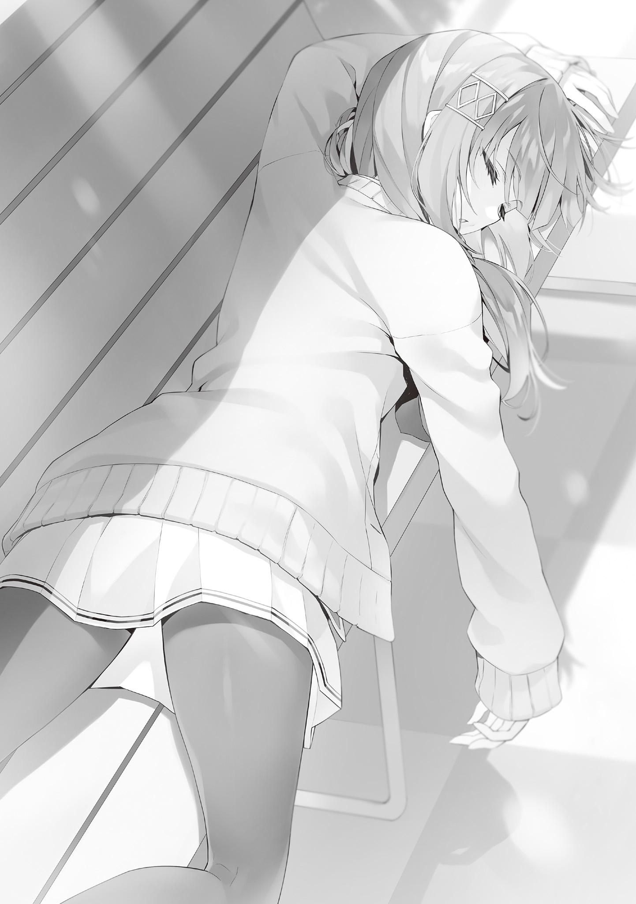
—¿Hmm? Seguro que conoces a muchas chicas de otras clases, ¿verdad, Kiyotaka-kun?
Kei me miró como una profesora, como si estuviera interrogando a un alumno, con los brazos cruzados y la mirada indiscreta.
—Yo no hablé con ella primero.
—No importa quién hable primero. El hecho de que la conversación tuviera lugar es el problema.
Tenía una opinión poco razonable.
Por supuesto, sabía que no hablaba en serio aunque lo dijera sinceramente.
—Dijiste que me estabas esperando, pero si no te hubiera hablado, ¿qué pensabas hacer?
Pensé que estaría bien ignorar la presencia de Morishita aquí y sólo hablé con ella por casualidad.
—No hay por qué preocuparse. Estaba abriendo ligeramente los ojos, así que me habría dado cuenta si hubieras pasado.
No entendía por qué estaba tumbada si no estaba durmiendo.
Sentí que perdería si pensaba demasiado en el comportamiento de Morishita.
—¿Por qué me estabas esperando?
—¿Tú qué crees?
No esperaba que me preguntara...
—No puedo adivinarlo.
—Resulta que tuve un golpe de suerte. Se trata de esa chica de allí, específicamente.
—Eh, ¿yo?
Kei se señaló a sí misma con sorpresa, sin pensar que estuviera involucrada.
—Sí. Tengo curiosidad por saber qué clase de persona eres.
—¿Curiosidad? ¿Qué quieres decir?
—Noté algo extraño mientras investigaba.
Mientras Morishita se levantaba lentamente, dirigió sus ojos soñolientos hacia Kei, acercándose poco a poco.
—¿Qué? ¿Qué pasa?
Morishita tenía un aura única, diferente a la de Hiyori.
No era calma ni armonía, sino simplemente extraña.
Kei también parecía haber percibido rápidamente la excentricidad de Morishita, por lo que se sintió algo desconcertada.
—Karuizawa Kei. Al principio salías con Hirata Yousuke, ¿verdad?
Ah, efectivamente, tanto Kei como Yousuke usaban el nombre de pila del otro.
—¿Y qué?
—¿Por qué salías con Hirata Yousuke? No, ¿por qué Hirata Yousuke saldría con una mujer como tú en primer lugar?
Como un detective acorralando a un criminal, Morishita empezó a caminar alrededor de Kei.
—Espera, espera, ¿no estás diciendo algo grosero?
—También investigué a Hirata Yousuke a mi manera. Se supone que es el chico más popular de la escuela. Pertenece al club de fútbol, lo que influye en su popularidad, tiene un excelente rendimiento académico, está bendecido en apariencia, respeta la igualdad de género y es amable, considerado e inteligente.
Había algunas cosas que me llamaban la atención en la forma en que estaba redactado, pero como evaluación de Yousuke, era válida y acertada.
En resumen, a primera vista, era justo calificarlo de alumno excepcional. Tenía tendencia a hacerse daño con facilidad y a arrinconarse, pero eso no era algo que debiera mencionarse, así que se omitió.
—¿Crees que elegiría a una mujer casual como tú?
—...¿Qué quieres decir con casual?
—No lo sé. Es la primera vez que oigo el término.
Ella mintió.
Casual' significa irresponsable y despreocupada. Conlleva la sensación de ser poco específica.
Si se lo dijera a Kei aquí, provocaría el inicio de una disputa.
Morishita acarició suavemente la desconcertada mejilla de Kei con su dedo índice.
—No me toques sin permiso.
—Parece que ahora te estás conteniendo, pero al principio, a pesar de ser de primero de preparatoria, se rumoreaba que llevabas mucho maquillaje.
—Eso es... Es sólo mi elección.
—Eres una mujer casual, no tienes nada único, y usas maquillaje pesado.
No puedo entender por qué Hirata Yousuke te eligió.
—Bueno... ¿quizás porque soy linda?
Sin mencionar nada como pedirle ayuda a Yousuke como camuflaje para ocultar su pasado de ser intimidada, ella proporcionó una conveniente autoevaluación.
—Si sustituyes el maquillaje pesado por una máscara, sería más fácil de entender; eres un alma tímida y sensible. Pero si es así, ser de carácter fuerte y firme, una líder entre las chicas, parece contradictorio.
No había duda de que era un bicho raro. Pero Morishita tenía pinta de ser una estudiante con la inteligencia suficiente para recabar información y reconocer las dudas.
—¿Qué te pasa...?
Expuesta a un razonamiento tan transparente, Kei se sintió perturbada.
Si seguíamos hablando, probablemente no iría por buen camino.
—No creo que el amor tenga sentido. Empecé a salir con Kei por nuestros sentimientos. ¿Hay algún problema con eso?
Mientras me acercaba protectoramente a Kei, ella pareció agradablemente sorprendida por mis palabras y entrecerró los ojos con alegría.
—Ya veo, es verdad. Nunca he estado enamorada, así que no puedo negar que la razón no se aplica.
Si el amor fuera algo que se pudiera calcular, no le habría dedicado tanto tiempo.
—Me disculpo por mis anteriores comentarios groseros, Karuizawa Kei.
Moviéndose justo delante de Kei, Morishita hizo una profunda reverencia...
demasiado profunda, y se quedó así.
—No tienes que disculparte tanto, lo entiendo.
—¿De verdad? Entonces, ya que la disculpa terminó, no hay problema,
¿verdad?
—¿Eh? Bueno... está bien, pero no me sienta bien...
Podía entender muy bien ese sentimiento, pero no había nada que hacer.
—No quiero molestar más, así que creo que debería marcharme.
—Por fin lo entiendes... ¿Eres mejor chica de lo que pensaba?
Llegados a este punto, lo más seguro era dejar marchar a Morishita, pero las oportunidades de contactar con ella no eran muy numerosas.
Decidí plantear una cuestión que me había estado preocupando.
—Para ser una alumna de la clase de Sakayanagi, eres bastante singular,
¿verdad? ¿No te lo dicen los demás?
Kei, que estaba a mi lado, puso una expresión como si fuera a retenerme, pero esperé la respuesta sin preocupación.
—Desde luego, oigo a menudo eso: que soy única.
Eso tenía sentido. Definitivamente parecía única.
—Pero es curioso. Siempre he sido consciente de que soy una persona única y siempre me he considerado especial. Aun así, no me gusta que me recuerden constantemente: 'Eres tan única'.
—Mis disculpas por eso. Pero el caso es que estos dos últimos años no me había dado cuenta de que había una alumna como tú en la clase de Sakayanagi.
—Ya veo. Te sorprendió que una persona que creías que no tenía una personalidad definida resultara ser única.
—Así es.
—No hago ningún movimiento a menos que me interese. En la corriente de Sakayanagi Arisu y Katsuragi Kouhei al frente de la clase como líderes, siempre han protegido a toda la Clase A, así que no había necesidad de que yo hiciera nada. No había necesidad de mostrar mi individualidad. Si vivo tranquilamente, puedo graduarme tal cual. Supongo que no se puede evitar que parezca que carezco de una personalidad definida.
Sin ocultar su situación, habló claramente de por qué la percibían así.
La explicación de Morishita era razonable.
Ahora llamaba la atención hasta el punto de ser observado por estudiantes como Morishita.
Aunque se suponía que no era más que otra estudiante discreta, destacaba tanto o más que Horikita. Además, me observaban con recelo.
Por supuesto, esto se debía únicamente a que yo había decidido pasar a la acción.
Si hubiera estado en la clase A como Morishita cuando me matriculé, y si Sakayanagi y yo no nos hubiéramos conocido, la situación sería completamente distinta.
Incluso sin hacer nada, simplemente siguiendo las instrucciones aseguraría la posición de la Clase A.
Nada habría sido más fácil.
Habría pasado mis días como un estudiante normal sin carácter distintivo, viviendo tranquilamente.
Un camino hacia la graduación sin sospechas ni precauciones por parte de nadie.
Morishita estaba simplemente a medio camino en esta tranquila ruta.
—Me alegro de haber podido encontrarme hoy con ustedes dos. Gracias por tratar con alguien como yo.
—De nada.
Por alguna razón, Kei también empezó a hablar educadamente para estar a la altura de Morishita.
—La mayoría de los estudiantes que se matriculan en esta escuela aspiran a graduarse en la clase A. Yo soy una de ellos, por supuesto. Por eso, sentí una sensación de crisis y pensé que debía hablar con varios alumnos. Después de todo, últimamente has atraído bastante la atención.
Kei rumió una vez más su razón para tender la mano en este escenario.
—Puede que necesite relacionarme con ustedes dos en el futuro.
Agradecería su amabilidad en ese sentido, Ayanokouji Kiyotaka, Karuizawa Kei.
Morishita comenzó a alejarse tras inclinar profundamente la cabeza, pero se detuvo poco después.
Entonces se dio la vuelta.
—Los dos estaban a punto de dirigirse a casa, ¿verdad?
—Bueno, sí, pero...
—Yo también tenía intención de volver a la residencia. ¿Les gustaría acompañarme a charlar por el camino?
—Eh, espera... Acabamos de terminar de hablar, ¿y quieres hablar más?
¿No puedes leer el ambiente...?
—Esta es una gran oportunidad. No duden en preguntarme cualquier cosa.
—¡No nos interesa en lo más mínimo...!
—No seas así. ¿Intercambiamos información de contacto? Ayanokouji Kiyotaka incluido, por supuesto.
—¡No, no, no, no vamos a intercambiar nada! ¿Verdad?
—No me importa intercambiar información de contacto.
—¡Espera un momento!
—Es mejor tener más amigos.
—Ese es un pensamiento maravilloso. Estoy completamente de acuerdo.
—¡Ugh~ Kiyotaka, ese lado tuyo es bastante lindo, no puedo enojarme contigo!
Y así, decidimos (a regañadientes por parte de Kei) intercambiar información de contacto.
Una aplicación de chat puede ser muy útil, y no está de más tener la información del otro.
Una cosa que me llamó la atención fue que Morishita sólo tenía unas pocas personas registradas en su aplicación de chat.
Realmente parecía haber estado viviendo una vida tranquila hasta ahora, sin hacer amigos.
Es un poco extraña en ese sentido.
LA IDENTIDAD DEL REMITENTE
ERA VIERNES después de clase, un día después de que se anunciara el examen especial.
Tras el debate que mantuvimos ayer durante el almuerzo, no se había celebrado ninguna otra reunión con toda la clase, por lo que no se había adoptado ninguna medida en relación con el examen.
Como tenía la responsabilidad de dirigir la clase, esperaba que Horikita hubiera avanzado en sus estrategias e ideas de la noche a la mañana. No conocía los detalles, pero ella no había intentado ponerse en contacto.
Aún quedaba una semana, así que no había necesidad de precipitarse. Me gustaría que lo pensara detenidamente.
—Ayanokouji-kun... umm, ¿tienes un momento?
Mii-chan me llamó cuando me disponía a salir yo solo del aula.
Kei ya había hecho planes para salir con sus amigas hasta tarde este fin de semana, así que ya se había ido.
Por lo tanto, estaba completamente libre en ese momento y podía permitirme dedicarle tiempo.
—¿Qué pasa?
—Me gustaría hablar en otro sitio si es posible... no en esta clase
.
Aunque ningún estudiante a nuestro alrededor parecía estar molesto, Mii-chan no se veía cómoda aquí.
Por su comportamiento, sabía que se trataba de algo serio.
—Ya veo. ¿Qué tal si volvemos a los dormitorios?
—¡Por supuesto!
Sin ninguna otra razón para quedarme en el aula, agarré mi mochila y salimos.
No hacía falta buscar un sitio vacío.
El pasillo y la entrada estaban repletos de estudiantes después de clase, llenos de ruido.
—¿Qué pasa?
Ante mi insistencia, Mii-chan miró a su alrededor como para asegurarse de que era seguro, y luego empezó a hablar.
—¿Recuerdas cuando estuve ausente de la escuela durante un tiempo?
Es... embarazoso decirlo, pero fue por Hirata-kun... Bueno...
Eso fue a finales de septiembre, después de que Kushida revelara en el examen de votación unánime que Mii-chan estaba enamorada de Hirata.
—¿Pasó algo en relación a eso?
—Me enteré de que alguien estuvo entregando comida mientras yo no podía salir...
—Lo recuerdo. Alguien te enviaba comida generosamente, ¿verdad?
Recordé cuando me preguntaron si era yo quien entregaba comida a Mii-chan.
—Ya te lo había mencionado antes, Ayanokouji-kun, y quería pedirte ayuda...
—Ya veo...
Había pasado un tiempo considerable, pero si ella sacaba el tema ahora, significaba-.
—¿Averiguaste quién era?
—Uh, todavía no, pero creo que podemos averiguarlo si lo intentamos...
—¿Podemos averiguarlo si lo intentamos?
Repitiendo sus palabras, Mii-chan asintió y empezó a hablar despacio.
Incluso después de reunir el valor para volver a la escuela, Mii-chan seguía preocupada por la persona que la apoyaba. Pensé que se había dado por vencida, pero lo cierto es que era persistente y deseaba expresar su gratitud.
Había dos pistas. La primera era una nota en una bolsa de comestibles, que sólo contenía el número de la habitación; esto insinuaba que era un regalo para Mii-chan.
Si la letra era distintiva, podría ser una pista crucial. Desgraciadamente, se trataba de una bola curva.
Mii-chan trajo el papel para que yo lo viera, pero estaba escrito intencionalmente de una forma que hacía imposible identificar al autor.
—La persona que te dio estos regalos es bastante astuta.
—En efecto.
Sólo quedaba un método para perseguir la prueba.
Era cierto que todos los alimentos fueron comprados en la tienda de conveniencia.
Mii-chan había anotado cada uno de los artículos que había recibido.
Esto significaba que podíamos describir estos artículos al dependiente de la tienda y averiguar si algún estudiante había comprado las mismas cosas.
Preguntar al personal de la tienda era un método clásico para encontrar a la persona que había hecho el regalo. Pero con el paso del tiempo, inevitablemente su memoria se desvanecería, lo que significaba que debíamos actuar con rapidez.
Había supuesto que Mii-chan no sabría nada de esto, pero me sorprendí al oír su respuesta.
—Intenté hablar de ello con el empleado de la tienda en cuanto volví a la escuela.
La respuesta que recibí no fue buena.
El empleado al que Mii-chan preguntó acababa de ser asignado a la tienda y no estaba trabajando en el momento en que el autor del regalo hizo sus compras.
El encargado que habría estado trabajando durante ese tiempo había sido trasladado a otra tienda.
Un detective probablemente miraría las grabaciones de vigilancia, pero, por supuesto, no podía hacerlo.
—Intenté preguntar también a las chicas de mi piso, pero no tenían ni idea.
Fue entonces cuando decidí dejarlo por un tiempo.
Cuando no hay pistas, no hay nada que un estudiante ordinario pueda hacer.
—Entonces supongo que no habrías tenido otra opción.
—Sí...
Así que el tiempo pasó con los detalles aún desconocidos.
Sin embargo, una información inesperada llegó a Mii-chan, que se enfrentaba a un callejón sin salida.
Cuando el otro día fue a comprar a una tienda, un empleado la llamó.
El jefe de turno transferido y el actual empleado que trabajaba en la escuela se encontraron por casualidad, y el empleado se acordó de lo que le preocupaba a Mii-chan y se lo explicó. No se lo esperaba, pero como el suceso ocurrió justo antes del traslado, se acordó de un alumno que podría ser relevante.
Por lo visto, el empleado intentó decirle a Mii-chan el nombre del alumno que el jefe le había dicho.
Sin embargo-
—Me sorprendió, o mejor dicho, me sacudió la inesperada noticia, y dije que volvería más tarde para oír los detalles, y salí corriendo.
—¿Te escapaste?
—Yo... huí...
Sólo Mii-chan sabría por qué huyó en esa situación.
—Por cierto, ¿cuándo te enteraste de esto?
—Um... eso...
Su evidente dificultad para responder indicaba que no era muy reciente.
—...Hoy es el sexto día.
—Llevas huyendo bastante tiempo.
—Llevo... huyendo...
Se puso roja de vergüenza, o más bien, de vergüenza por lo patética que era.
—Creo que debería ir pronto, pero... Me pongo nerviosa... Si no sé quién es, puedo ignorarlo, pero una vez que lo sé, ya no puedo fingir ignorancia. Lo más importante es que la persona que hizo los regalos no se ha presentado, así que es posible que no quiera que se sepa, ¿no?
Siempre ha querido dar las gracias a quien le ha hecho el regalo, aunque no sepa quién es.
Pero como no conocía su identidad, estaba convencida de que no podía hacer nada al respecto.
Cuanto más tiempo pasaba, más pensaba así.
—Bueno, es verdad.
Apoyaron a Mii-chan desde las sombras sin revelar su identidad.
No sería sorprendente que tuvieran razones para permanecer anónimos.
—¿Qué razones podría haber?
—Podría haber muchas razones.
Sería imposible acotar las razones con la información actual de que disponemos.
—Aunque, estoy segura de que son compañeros de clase... No tengo tantos amigos, pero no creo que me lo ocultaran. No me explico por qué...
Mii-chan parecía estar reflexionando sobre quién de sus amigos podría ser.
Por supuesto, no se podía esperar que un desconocido enviara un regalo.
—Esa es sólo una de las posibilidades... No, no importa.
—¿De qué se trata? Dímelo, por favor.
Dudé, considerando que podría ser demasiado para ella, pero Mii-chan estaba ansiosa por saberlo.
—Por favor, dímelo.
Volvió a preguntar, así que decidí continuar.
—Siento desafiar tus suposiciones, pero no tiene por qué ser necesariamente un compañero de clase. Aunque no se sabía por qué estabas ausente, no fue difícil averiguar tu ausencia.
—Pero apenas tengo contacto con gente de otras clases...
—Eso no importa mucho. Una relación cercana no es un prerrequisito. Y
no tiene por qué ser una chica.
—Eh, ¿qué?
Ella se quedó estupefacta; tenía aún menos interacción con chicos.
—Para ser descarado, podría haber, por ejemplo, un chico al que le gustas en secreto, ¿no? Podría ser una situación en la que él estaba preocupado cuando la persona que le gusta estaba ausente y envió un regalo.
—¿¡Eeh!? ¿¡Qué!?
Casi se cae de la sorpresa. Trató de permanecer discreta, pero estaba llamando la atención.
Al darse cuenta de ello, ralentizó rápidamente su respiración, pero estaba notablemente nerviosa.
—Es sólo una posibilidad, no hay necesidad de ponerse nerviosa.
Podría no ser necesariamente el caso. Sólo estaba ilustrando una razón posible, aunque inesperada.
—B-b-b-bueno, sí, ¡tienes razón!
Pero estaba lejos de estar tranquila.
Supongo que era una suposición innecesaria.
—Volvamos a lo nuestro. Sería mejor escuchar tu decisión, ¿no crees?
A pesar de que casi entendía su razonamiento, pensé que sería mejor oírlo de la propia Mii-chan.
—No estoy segura de qué hacer en este momento. ¿Debería averiguar quién es? ¿Le doy las gracias?
—Sería mejor tomar una decisión ahora.
Mii-chan asintió levemente, sin mucha confianza.
—¿Qué harías tú en esta situación, Ayanokouji-kun?
—¿Qué haría, eh...?
Aunque lo medité un poco, bien podría responder con sinceridad.
—No estoy seguro de si servirá de algo, pero si fuera yo, querría saber quiénes son. Y entonces, decidiría si acercarme a ellos o no.
—Entonces, ¿estás diciendo que existe la posibilidad de que no les des las gracias aunque supieras quiénes son?
—Eso si fuera yo. Como en el ejemplo anterior, si la persona no tuviera ninguna relación conmigo, dudaría. Y hay casos en los que es mejor no hacerles saber que has estado investigando, ¿no?
—Supongo que tiene sentido.
Habían ayudado en secreto a la persona que amaban.
Si ella viniera a dar las gracias después de conocer su identidad en la tienda, sería impactante.
Este era el caso aunque no hubiera romance de por medio.
—Cuando la otra persona quiere mantener su secreto, es aún más problemático.
—...Sí.
—Además, si se puede guardar silencio incluso después de conocer la identidad de la persona es otra cuestión. Por lo que he visto, no creo que este enfoque sea adecuado para ti, Mii-chan.
—Eso... Sí...
Si supiera la respuesta, seguramente no podría ocultar sus emociones.
—No es malo rendirse.
—Aún así...
Sin embargo, Mii-chan se siente culpable por no ser capaz de agradecer a la persona que la ayudó.
Una vez más se acordó de los sentimientos que había estado tratando de reprimir.
Aunque decidiera no conocer su identidad, sus sentimientos tardarían mucho tiempo en desvanecerse.
—Una vez que abres la Caja de Pandora, ya no puedes cerrarla.
Teniendo en cuenta la inestabilidad emocional de Mii-chan, no era de extrañar que decidiera huir.
Además, decidir no conocer su identidad tiene su propio aspecto positivo.
Conocer la identidad de Papá-Piernas-Largas[6] cambiará la percepción de la persona, independientemente de quién sea.
—Yo...
La atribulada Mii-chan se tomó su tiempo para dar una respuesta.
—Yo... quiero saber...
—¿Aunque te pueda llevar a arrepentirte?
—...Sí.
Habiéndolo decidido, no había lugar para que dijera lo contrario.
—Entonces deberías ir a la tienda.
A pesar de mi respuesta, Mii-chan aún parecía indecisa, mirando hacia mí.
—...
—...
El aire estaba lleno de una extraña tensión, pero estaba claro lo que Mii-chan intentaba transmitir.
—¿Vamos juntos a la tienda?
—¿P-Podemos?
A pesar de haberse preparado para saber la verdad, parecía incapaz de ir sola.
—Puedo acompañarte. Si te da un poco de valor, creo que vale la pena.
—¡Gra... gracias, Ayanokouji-kun!
Con el asentimiento más fuerte del día, Mii-chan y yo caminamos hacia la tienda de conveniencia.
[6]: Esta expresión típicamente significa misterioso benefactor o guardián PARTE 1
Mii-chan y yo llegamos a la tienda casi de inmediato.
Yo iba a entrar primero, pero Mii-chan me tiró de la manga.
—¿Podrías esperar un poco...? Creo que también hay otros estudiantes por aquí.
—¿Quieres esperar a que no haya nadie?
—Es poco probable, pero la persona que me ayudó podría estar aquí.
—Ya veo.
Eran palabras delicadas, típicas de Mii-chan. Lo correcto sería tenerlas en cuenta.
Aunque muchos estudiantes visitaban la tienda los fines de semana, normalmente se quedaban poco tiempo.
Después de esperar un rato, la tienda se vació en un instante.
—¿Entramos?
—¡Sí!
Si nos quedamos esperando, llegará el siguiente cliente.
Entramos rápidamente en la tienda.
—Bienvenidos-Ah.
La empleada era una mujer de unos 20 años, alguien a quien había visto a menudo últimamente.
Al ver a Mii-chan, se detuvo a mitad de la frase, pero continuó con una sonrisa.
—Bienvenidos.
—Hola. Siento haberme escapado el otro día.
Al inclinarse rápidamente, la empleada sonrió amablemente.
—No pasa nada, no me molesta en absoluto. Debió de darte miedo,
¿verdad?
Daba la impresión de que comprendía su agitación interior, y Mii-chan asintió varias veces.
—¿Te animó tu novio a venir aquí?
—¿Eh?
Mii-chan, levantando la vista, se quedó perpleja.
—Qué novio más genial, estoy celosa.
—¿Eh, eh, eh? ¿M-mi novio?
—Este es Ayanokouji-kun... ¿verdad?
—¿Por qué sabe mi nombre?
—Bueno, usamos credenciales de estudiante para las transacciones de la tienda, así que terminé recordando los nombres de algunos estudiantes.
Efectivamente, usamos una credencial de estudiante, que contiene un nombre y una foto, para pagar.
Como he comprado aquí varias veces, no sería de extrañar que se acordaran de mí.
—Además, ibas de compras del brazo con otra estudiante, ¿verdad? El otro día... ¿Ah?
—Su reacción parece indicar que se ha dado cuenta de algo, pero su suposición es errónea. Ella es mi amiga.
Cuando señalé a Mii-chan y respondí, Mii-chan también asintió afirmativamente.
—Ah, así que es eso. Pero puede que haya una opor-
—¡No lo hay!
Por primera vez, Mii-chan lo negó rotundamente.
No sentía nada romántico por ella, pero ¿por qué me sentía un poco abatido?
Mii-chan, a quien le gusta Yousuke, definitivamente no querría que lo malinterpretara.
—Entonces, um, la persona que estaba buscando...
—Ah, sí. ¿Debería decírtelo? Está bien?
La empleada de la tienda confirmó amablemente por consideración a los sentimientos de Mii-chan.
—Sí. Vine por esa razón.
—Ya veo. Te lo diré entonces.
Después de tomar un respiro, la dependienta reveló a la persona que Mii-chan había estado buscando.
—El anterior jefe de turno no recordaba su nombre, pero era muy característico, así que cuando oí hablar de él, me sonó. Alguien de tu clase, Koenji... um, Rokusuke-kun, supongo. Parecía ser el que compró los artículos que coincidían con lo que trajiste.
—¿Eh...?
El nombre de la persona que hizo el regalo-un hecho que ella anhelaba descubrir.
¿Era Koenji, de todas las personas?
¿Por qué Koenji?
Mii-chan a mi lado estaba indudablemente sorprendida, o mejor dicho, atónita.
Un nombre inesperado. Demasiado inesperado.
...¿O tal vez no era tan sorprendente como pensé al principio?
Koenji y Mii-chan tenían poco contacto.
Pero hubo momentos en que vi a Koenji tomar una actitud relativamente cálida hacia Mii-chan.
Eso por sí solo no sería significativo, sin embargo, la persona en cuestión era Koenji.
—Él... ¿Era realmente Koenji-kun?
La empleada asintió sin dudar a su escueta pregunta.
—El jefe de turno lo recordaba como un chico rubio de pelo largo. Siempre se hacía el altanero, incluso se perdía en el reflejo del cristal de la tienda, o se arreglaba el pelo con un espejo de mano. Y... La lista sigue y sigue, pero este es Koenji-kun, ¿verdad? Yo también lo he visto actuar así.
Ese era definitivamente Koenji.
Nadie más como él existe en nuestra escuela, no en este momento.
Y probablemente nunca existirá.
—Parece que no hay ningún error.
—Sí, hasta el contenido del regalo es propio de Koenji. Ahora tiene sentido.
—Sí...
No podía asimilar del todo la situación, pero no tuvo más remedio que aceptarla.
Le dio las gracias a la empleada y salió de la tienda.
Mii-chan seguía aturdida después de salir. Se veía atrapada en sus pensamientos.
—¿Koenji-kun...? ¿Por qué?
—No tengo ni idea. En cierto modo, era la persona cuyos motivos estarían menos claros.
—¿Qué debería hacer...?
¿Se está preguntando cómo agradecérselo, o está confundida porque es Koenji?
—¿Pero tal vez con Koenji, puedes ignorarlo y no darle las gracias?
—Eh, ¿qué!? No, ¡no puedo!
—¿Pero por qué?
—Bueno... Es nuestro compañero de clase, y también gastó una cantidad considerable de dinero en los regalos.
Puede que Koenji tuviera una enorme cantidad de Puntos Privados, pero el dinero seguía siendo dinero.
Mii-chan, siendo tan obediente, no podía ignorar eso.
—Estoy pensando en comprar un regalo de agradecimiento. ¿Debería ser más o menos equivalente a lo que se gastó en los regalos?
—Eso es demasiado. Creo que con la mitad bastaría.
Al fin y al cabo fue un regalo de buena voluntad, mientras se transmitiera el sentimiento de gratitud, debería ser suficiente.
—Bien, entiendo. Lo haré.
—Entonces sólo queda que hagas lo posible por agradecérselo como es debido.
Estaba a punto de despedirme y empezar a caminar solo cuando-
—¿Quieres venir conmigo?
—¿Perdón?
—A... la casa de Koenji-kun.
—Preguntar por qué sería demasiado. Pero sería extraño para mí estar allí,
¿no?
Aunque quería apoyar a la tímida Mii-chan, me parecía un poco fuera de lugar.
Además, en primer lugar, no sabía por qué Koenji había decidido ayudarle.
—¿Y si tu suposición es correcta? Por mucho que digas que estás saliendo con Kei, él podría tener pensamientos si ve a un chico acompañando a la chica que le gusta.
—Pero la persona en cuestión es Koenji-kun, ¿verdad?
—Hasta Koenji es un chico normal de preparatoria.... No, no es exactamente normal, ¿verdad?
Si mi presencia lo molestara, sería algo que me gustaría ver.
—Bueno entonces, vayamos juntos por ahora. Dependiendo de la situación, puede que me vaya después de ver a Koenji. Espero que lo entiendas.
La posibilidad de que se sintiera incómodo por mi presencia era muy real.
—Lo entiendo. Gracias.
Incapaz de pedir más, Mii-chan accedió de buena gana.
—¿Cuándo deberíamos ir?
Después de preguntarle, Mii-chan sacó su celular y abrió el calendario.
Tal vez se sentía inquieta, y de vez en cuando se tocaba ligeramente la cinta para el pelo que llevaba en la mano izquierda.
—Es repentino, pero ¿estaría bien si vamos mañana temprano? Si esperamos demasiado, podría tener problemas para dormir...
Sería cruel dejar que se quedara despierta toda la noche con la mente llena de pensamientos sobre Koenji.
Tengo una cita con Kei mañana por la mañana, pero debería funcionar si ajustamos nuestro horario.
—Gracias por lo de hoy. Nos volveremos a ver mañana, pero por ahora, ten mi más sincero agradecimiento.
Con eso, ella inclinó la cabeza profundamente.
Quería volver a expresar su gratitud una vez que todo estuviera resuelto, pero yo ya me había negado.
PARTE 2
Llegó el día siguiente. Eran poco antes de las 11:30 de la mañana de un sábado.
Estaba esperando en el sofá del vestíbulo de la residencia mi reunión con Mii-chan.
Kei, que se había quedado a dormir en mi habitación el viernes por la noche y había pasado la madrugada conmigo, estaba profundamente dormida. Pensaba retrasar nuestra cita originalmente prevista para la tarde.
Al ver a Mii-chan bajar por el ascensor desde el monitor instalado, me levanté del sofá en el que estaba sentado profundamente.
—Buenos días.
—Buenos días, Ayanokouji-kun.
Ella sostenía un regalo de agradecimiento, presumiblemente comprado el día anterior, en una bolsa de papel.
—¿Y? ¿Dónde te encontrarás con Koenji?
—¿Eh?
—¿Eh? Vas a ver a Koenji después de esto, ¿verdad?
—Sí.
—Así que te vas a encontrar con Koenji, ¿verdad?
—...En realidad no...
Con la respuesta de Mii-chan, la atmósfera a nuestro alrededor se congeló. Se hizo el silencio, y el tiempo pasó. Pero no podía permanecer en silencio para siempre, así que reanudé el flujo del tiempo.
—Entonces, Koenji no sabe nada de lo de hoy.
Mii-chan, que asintió con la cabeza, de alguna manera parecía a punto de llorar.
—Ah, ese debería haber sido el curso de acción obvio, ¿no? No estaba pensando en nada debido a los nervios y la tensión y todo eso. Ni siquiera tengo la información de contacto de Koenji-kun. Pensé que lo tendrías arreglado. Lo interpreté arbitrariamente... ¡Lo siento mucho!
Mientras hablaba, Mii-chan ya no podía contener las lágrimas.
Por suerte, no había nadie en el vestíbulo, pero sería problemático si alguien la viera.
—En primer lugar, debes calmarte. No soy muy amigo de Koenji, pero sé dónde encontrarlo.
—¿En serio?
Aunque no había certeza, sabía que había bastantes posibilidades de encontrarlo.
—Creo que si es esta vez, Koenji podría estar en el gimnasio.
—¿El gimnasio? El que está en el segundo piso del centro comercial Keyaki?
—Sí. Yo también empecé a ir allí hace poco. Koenji suele ir los sábados y domingos por la mañana.
Lo había visto salir varias veces después de terminar su entrenamiento al mediodía.
Al ver el brillante panorama, Mii-chan se recompuso, y nos pusimos en camino hacia el centro comercial Keyaki.
Por el camino, observé a Mii-chan, cuyos ojos aún estaban ligeramente enrojecidos, y pensé: es buena estudiando y tiene una personalidad tranquila, pero es muy débil y frágil cuando se enfrenta a situaciones inesperadas.
Ella no representaba exactamente una rareza, no era necesariamente común, pero ciertamente era una chica de preparatoria que se podía encontrar en cualquier parte.
Por eso su conexión con Koenji era intrigante.
Aunque gustarte o no gustarte es otra cuestión, objetivamente, la apariencia de Mii-chan es mucho mejor que la media.
Tal vez ella dio con el gusto de Koenji y estaba siendo secretamente favorecida.
Sin embargo, Koenji no daba la impresión de que guardaría silencio sobre su mujer preferida.
En todo caso, si había alguien que le interesaba dentro de la clase, parecía más propenso a atraerla activamente.
Era una contradicción que un hombre con absoluta confianza en sí mismo no se acercara a la mujer que le interesaba. Si esto era cierto, sólo demostraba que Koenji no tenía esa confianza absoluta en sí mismo.
-O quizás no.
Diferentes golpes para diferentes personas. Koenji podría alegar que prefería mantener las distancias con las mujeres que le gustaban, y que ésa era su forma de demostrar afecto. Lo pensé de varias maneras, pero aun así, solo podía llegar a una conclusión.
Intentar leer los pensamientos de Koenji era una pérdida de tiempo.
Al final, la única forma de entender sus verdaderas intenciones era encontrándolo en persona y escuchándolo de su boca.
Entré en el Centro Comercial Keyaki, que ya estaba abierto al público, y me dirigí directamente a la segunda planta sin dar ningún rodeo.
Luego hice que Mii-chan esperara delante del gimnasio mientras yo comprobaba el estado de las cosas en el interior.
—Como era de esperar, ya está aquí.
Como anticipé, Koenji estaba en pleno entrenamiento.
Se veía como si estuviera abordando el levantamiento de pesas, que muy probablemente terminaría pronto.
Después de todo, Koenji siempre terminaba sus entrenamientos con el levantamiento de pesas antes de abandonar el gimnasio.
A pesar de su agotamiento, estaba manejando un peso de 200 kilos con una sonrisa y una buena cantidad de sudor.
Tenía que preguntarme si habría alguien más en su segundo año de preparatoria capaz de hacer eso con tanta facilidad.
En cualquier caso, estaba a punto de terminar. Lo más seguro era que se duchara y se marchara poco después.
Para evitar miradas incómodas, salí rápidamente de la sala de entrenamiento.
Al salir, se me acercó Akiyama, miembro del personal del gimnasio, con quien intercambié un breve saludo y me marché.
También había prometido reunirme con Mashima-sensei, pero seguramente podría saltármelo por hoy.
—¿Qué tal fue?
—Creo que saldrá en unos 20 o 30 minutos.Si no te importa, podemos esperar aquí.
—S-sí.
Después de eso, nos sentamos en un banco cerca de la entrada del gimnasio y esperamos.
—...
—...
Sin mucha conversación entre nosotros, nos limitamos a escuchar la música que sonaba dentro del centro comercial Keyaki.
—Estoy empezando a ponerme un poco nerviosa.
A medida que se acercaba el momento, ella parecía percibir la expectación.
—No tengo ni idea de cómo reaccionará Koenji después de esto.
—Yo tampoco...
—Por cierto, ¿qué le trajiste de regalo?
—Umm, no estaba segura de qué regalarle, así que me decidí por una toalla para la cara y otra para las manos.
—Vaya... Es un regalo bastante fuera de lo común.
—Puede que te lo parezca, pero pensé que era algo que le gustaría.
Regularmente veo a Koenji-kun usando ambas.
—¿Ah, sí? Sabía lo del espejo de mano, pero no estaba al tanto de esto.
—Sí. Pensé que si es una lujosa toalla de algodón orgánico podría aceptarla, así que... Oh...
—Menudo presupuesto.
Parecía que Mii-chan no había podido seguir mi consejo de hacer un regalo pequeño.
—Eh... s-sí. Lo siento...
—¿Cuánto fue?
—Bueno... unos ¥12.000.
Así que era más o menos el mismo precio que la cantidad total regalada o un poco más. Era una situación que se podía prever dada la personalidad de Mii-chan.
—Está bien. Espero que a Koenji le guste.
—Sí. Tengo que devolverle adecuadamente el favor por su ayuda.
Aunque se sentía tensa y nerviosa, Mii-chan respondió con firmeza. Al final, podría haber sido la decisión correcta elegir un regalo por el que valiera la pena salirse del presupuesto.
Cuando habíamos esperado casi 40 minutos, más de lo esperado, Koenji salió del gimnasio.
—S-Salió.
Desde nuestro punto de vista, Koenji pareció fijarse inmediatamente en nosotros, pero no hizo ningún cambio en su expresión y cruzó a nuestro lado sin decir palabra. Parecíamos ajenos a su interés. Viendo su comportamiento, era difícil creer que albergara algún afecto hacia Mii-chan o que la hubiera estado apoyando en secreto.
Sin embargo, por el testimonio de la empleada de la tienda, estábamos 99%
seguros de que se trataba de Koenji.
Por lo tanto, la única opción era confirmar la verdad con él.
Mii-chan se levantó rápidamente del banco y comenzó a perseguir a Koenji.
—¡Um, Koenji-kun! ¡¡¡Me concedes un minuto de tu tiempo!!!
Mii-chan llamó desde detrás de él, haciendo que Koenji se detuviera en seco y se girara elegantemente para mirar hacia atrás.
—¿Necesitas algo de mí, Wang girl?
—Eh, ¿wang-qué?
Koenji debió haber hecho referencia al verdadero nombre de Mii-chan, Wang 王
(ワン)Mei-Yui, llamándola Wang girl, un apodo que probablemente sólo Koenji usaría, lo que llevó a la confusión de Mii-chan.
Mii-chan parecía incapaz de entender el apodo, pero se tragó su confusión y se armó de valor.
Apretó con fuerza las asas de la bolsa de papel que sostenía frente a ella.
—Quería hablar de algo contigo. Puedo robarte un poco de tu tiempo, por favor?
Mii-chan se dirigió a Koenji con una voz educada, aunque suave, llena de determinación.
Koenji pareció considerar su petición por un momento, luego levantó el brazo enérgicamente y sacudió la cabeza.
—Lo siento, pero ahora tengo un poco de prisa. Hablemos en otro momento. Jajaja.
Dicho esto, se rió hacia nosotros, nos dio la espalda y comenzó a alejarse de nuevo.
—Oh, oh no...
Mii-chan, que parecía ser del tipo que considera cuidadosamente las cosas, estaba claramente nerviosa al ser rechazada por Koenji de una manera que no había anticipado. Yo también me sorprendí un poco.
—¿Qué deberíamos hacer ahora...?
—¿Intentarlo de nuevo?
—Oh... Necesité mucho valor para acercarme a él esta vez... Puede que no lo recupere si tengo que volver a intentarlo.
Seguramente sería un gran obstáculo para Mii-chan acercarse a Koenji en la misma situación nuevamente. En ese caso, no teníamos otra opción que presionarlo hoy.
—Entonces deberíamos seguir a Koenji.
—¿Pero eso no sería una terrible molestia?
—Normalmente, sí. Pero si no puedes intentarlo de nuevo, entonces no importa cuánto sea una molestia, tenemos que continuar, ¿verdad?
Si la molestia es sólo alguien caminando por ahí, completamente vestido, siento que no le importará.
—¿Qué debemos hacer? Si lo perdemos de vista, no tendremos más remedio que rendirnos.
—Qué deberíamos hacer...
No se decidía, dudaba entre avanzar o retroceder.
Estaba claro por su comportamiento que seguir a Koenji era su intención principal.
Entonces, ¿debía seguir llevando la iniciativa como hasta entonces?
—Asumiré la responsabilidad si nos descubren siguiéndolo. Vamos.
—¡Sí! ¡Seguimiento sigiloso, entonces!
Y así fue como decidimos seguir a Koenji. Observando desde la distancia.
No veía la necesidad del sigilo, pero Mii-chan estaba ansiosa, así que decidí no poner objeciones innecesarias. Bajé las escaleras mientras Koenji bajaba por las escaleras mecánicas, comprobando lentamente la dirección en la que se dirigía y colocando a Mii-chan detrás de mí. Mientras tanto, con su larga zancada, Koenji continuó adentrándose en el centro comercial.
—¿No deberíamos darnos prisa? Podríamos perderlo.
—Está bien si lo perdemos.
Todo el mundo iba al centro comercial a diario. La mayoría de los estudiantes tenían un mapa mental del lugar.
Por supuesto, había varias tiendas en el camino de Koenji, pero ninguna tenía una profundidad significativa en sus pisos. Un rápido vistazo revelaría a todos los clientes. Al final había una zona de cafetería abierta. A menos que utilizara uno de los varios puntos de salida preparados a lo largo del camino, no teníamos preocupaciones de perderlo de vista.
En cuanto a esas salidas, sería más rápido volver por donde había venido si se dirigía a casa.
La probabilidad de que necesitara usar una salida específica no era muy alta.
Al final de las escaleras, alcancé a ver la figura de Koenji que se alejaba, ahora más pequeña en la distancia.
—Parece que se dirige a la cafetería. Eso nos lo pone más fácil.
—Efectivamente.
Tras confirmar desde la distancia que Koenji había terminado de ordenar y sostenía una taza, me acerqué y observé a Koenji y a una estudiante sentados en una mesa para dos personas.
—¿Quién es esa?
—Esa es Enoshima Midoriko de la clase 3-B.
—¿La conoces?
—Sólo la he visto en la aplicación OAA. Vamos a acercarnos.
—¿Pero no nos verá Koenji-kun si nos acercamos?
—Bueno, lo hemos estado siguiendo hasta ahora, pero me pregunto si es realmente necesario.
Debería ser justo que esperemos cerca hasta que termine la reunión de Koenji.
Obviamente, sería peor decir que nos escondíamos y esperábamos a que ella lo dejara en paz.
De todos modos, no me interesaba de qué estaban hablando.
—Llegados a este punto, me gustaría saber qué tipo de conversaciones suele tener Koenji-kun.
Sin embargo, Mii-chan parecía haber accionado un interruptor, mostrándose reacia a ser descubierta.
—¿Te refieres a escuchar a escondidas?
—Sé que está mal, pero... ¡Puede que no sea sincero sobre por qué me hizo el regalo, y podría haber pistas en su conversación!
No, dudo mucho que haya pistas en su conversación con Enoshima, que parece no tener nada que ver...
—¡Continuemos siguiéndolo!
—Si eso te deja satisfecha Mii-chan, entonces no tengo objeciones.
Movámonos de este lado.
Mientras Koenji charlaba con Enoshima, seguro que no prestaba atención a su entorno. Pero si entrábamos en su línea de visión, no podíamos estar seguros de que no nos notara. Mii-chan y yo hicimos una salida estratégica del centro comercial por una puerta lateral y nos propusimos volver a entrar por el lado opuesto.
Aunque tardamos varios minutos en dar la vuelta, Koenji acababa de comprar una bebida, lo que daba a entender que se quedaría un rato.
Sin embargo-
Para cuando entramos en el centro comercial y llegamos a la cafetería, Koenji no se veía por ninguna parte.
Sólo Enoshima estaba allí, desplazándose a través de su teléfono.
—¿Podría estar en el baño?
—...No. La bebida de Koenji desapareció. No puede ser. Debe haber terminado su asunto con Enoshima y se fue en ese corto lapso de tiempo.
—Entonces... ¿Eso significa que no podemos reunirnos con él hoy?
—Eso es lo que pensé, pero no hay necesidad de apresurarse.
Divisamos a Koenji, que sin ningún reparo se mostró volviendo por donde había venido.
—¡Koenji-kun!
—¿Oh? Wang girl y Ayanokouji boy. Vinieron a perseguirme de nuevo? Es duro ser popular. Jajaja.
Un gran malentendido, pero supongo que Koenji debe haber terminado sus recados.
—¿Tienes un momento?
Sin tiempo para tartamudear debido a las prisas, Mii-chan comenzó suavemente la conversación.
Su bebida no está con él. ¿Se la terminó enseguida?
—Por supuesto. Mis asuntos personales terminaron antes de lo esperado.
Acaba de tener una breve reunión con Enoshima-senpai. Ni siquiera podía adivinar lo que discutieron.
—¿Fuiste tú, Koenji-kun... quien dejó cosas de la tienda de conveniencia frente a mi puerta mientras yo estaba ausente de la escuela...?
El tan buscado apoyo. Ella estaba determinando la razón detrás de sus acciones.
¿Lo admitiría Koenji honestamente? ¿Se mostraría sorprendido y desconcertado?
O lo negaría-
—Fui yo quien te dio esos objetos, pero ¿qué importa?
Afirmó Koenji con seguridad, sin un atisbo de vacilación o deshonestidad.
Un comportamiento muy propio de Koenji, realmente inesperado.
—Eh... ¿por qué... tú...?
—¿Por qué? Si alguien tiene problemas, le ayudo. No eres tú el mismo tipo de persona?
—...¿Eh?
Replicando con una respuesta razonable, Mii-chan se quedó sin palabras.
—Si eso responde a tu pregunta, supongo que ya puedes irte.
Mii-chan parecía no saber cómo responder a su comentario.
—Un momento. Puede que no sea asunto mío, pero hay algo que me preocupa. Es natural ayudar a alguien en apuros. Pero para ser sincero, por lo que he observado de ti, no ayudas a todo el mundo. Sin embargo, ayudaste a Mii-chan. Esto ha ocurrido repetidamente, lo que sugiere que hay una razón especial detrás.
De forma indagadora, y con expresiones vagas, intenté darle un empujón.
—Sí que eliges bien tus palabras, Ayanokouji boy. No dejarás que me salga con la mía insinuando que fue un capricho. Ni que hubiera ayudado a Wang girl por capricho. Detesto la hipocresía. Pero eso no significa que no
respete la buena voluntad. Cuando siento una deuda sincera, considero natural pagarla. Es sólo eso.
Aunque Koenji parecía estar pronunciando algo genial, Mii-chan obviamente no tenía ni idea de la situación. Seguía congelada.
Una cosa era segura, él no tenía ningún sentimiento romántico inesperado por ella.
—¿Hemos terminado aquí?
Cuando Koenji dijo eso, el tiempo finalmente comenzó a moverse de nuevo para Mii-chan, que había estado congelada en su lugar.
—...Yo, yo no recuerdo haber hecho nada por ti. No creo que me debas nada. Según lo que dijiste, parece que te ayudé antes...
Con tono de disculpa pero afirmativo, cuestionó tras comprender la situación.
Koenji se echó ligeramente el pelo hacia atrás.
—¡Jajaja!
Se rió alegremente.
—Por eso no es por hipocresía sino por buena voluntad. Sólo un asunto trivial que ni siquiera necesitas recordar.
En otras palabras, esta era su explicación. Koenji fue ayudado alguna vez por Mii-chan de alguna manera. Y fue ayudado no desde la hipocresía, sino desde la buena voluntad natural. Por eso siempre había actuado de una manera inusualmente considerada con Mii-chan. Incluso cuando ella se ausentó de la escuela esta vez, él la estaba ayudando a cambio de esa buena voluntad, eso era lo que significaba.
—No lo recuerdo para nada... pero, bueno, por favor acepta esto por ahora.
Diciendo eso sacó una bolsa de papel con un juego de toallas que había comprado como regalo de agradecimiento.
—No necesito esto. No creo que sea cuestión de recibir las gracias.
—B-bueno, si no te gusta esto, no me importa que no lo aceptes. Pero en ese caso, ¿me dejarías al menos devolvértelo? El dinero que gastaste por mí no es poco.
—Desgraciadamente, en este momento no necesito dinero. No lo quiero.
Me pareció extraña su afirmación.
Ciertamente, para un estudiante normal, no habría nada particularmente notable en ello.
Era natural pensar que Koenji, que había hecho una fortuna en el examen de la isla desierta, tuviera mucho dinero.
Sin embargo, Koenji tenía una fuerte imagen de derrochador.
Anteriormente había declarado que era partidario de no guardar el dinero de la noche a la mañana.
Por supuesto, si dijera que ahora estaba ahorrando, se acabaría el asunto, pero teniendo en cuenta que hacía poco se había comprado un televisor grande, era posible que siguiera despilfarrando dinero.
Podría ser sólo una mentira, una excusa conveniente para no quitarle los puntos a Mii-chan.
—¡Pero eso será un problema! Eso... no puedo deshacerme del sentimiento de culpa... en ese caso, ¿podrías decirme al menos qué hice por ti?
—Oh, vaya. Parece que tienes una personalidad bastante difícil. ¿No te lo dije? Es un asunto trivial que ni siquiera necesitas recordar. No es ni más ni menos que eso. No hay nada más que decir.
Mii-chan parecía haberse quedado sin formas de iniciar una conversación con Koenji.
Con la mirada algo abatida, volvió a inclinar la cabeza ante Koenji.
—¿Puedes dejarme ir ahora?
—S-Sí.
—Tengo algo que me gustaría preguntarte en privado —intervine.
—No quiero ser popular entre los hombres, pero parece que a ti también te gusta curiosear.
—Es importante. Si sientes gratitud, existe la posibilidad de que cooperes con la clase en el futuro, ¿verdad?
—Eso son tonterías, Ayanokouji boy. Soy necesario para que la clase gane, y para eso, tienes que mostrar buena voluntad hacia mí. Eso se convierte en hipocresía, ¿lo ves?
Él no aceptaría ningún acto dirigido a obtener algo a cambio como genuina buena voluntad. Sólo podía surgir de forma natural.
—Mientras vivamos bajo las reglas de esta escuela, no puede haber buena voluntad. ¿Estoy equivocado?
—Tal vez.
—Ya deberías saberlo. No hay forma de que me conviertas en tu aliado, de ninguna manera.
—Eso es cierto. Hasta ahora, no importa cuántas veces lo haya intentado, no he dado con una forma garantizada de conseguir tu plena cooperación.
—Así es. No cambiaré hasta que me gradúe, incluso después de eso. Por mucho ingenio que expriman, no llegará ni resonará en mi corazón. Por supuesto, esto también te incluye a ti.
—Entonces, ¿qué vas a hacer con un examen especial como el de esta vez? ¿Y si Horikita decide no protegerte? No podemos decir exactamente que la posibilidad de que rompa su promesa contigo sea cero. Podría darse la situación de que no pudieras evitar la expulsión, aunque luego montaras un escándalo.
Podríamos amenazarlo y obligarlo a ayudar.
—Siempre me he protegido. Es tan sencillo como eso.
En otras palabras, tiene la confianza suficiente para salir adelante incluso sin protección.
—Bueno, eso facilita las cosas. Le diré a Horikita que no hay necesidad de protegerte.
Tener un estudiante menos que proteger en la clase nos daba una ventaja.
Naturalmente, no pensé que Horikita traicionaría su confianza.
—Haz lo que te plazca. Independientemente, no tiene sentido que intentes obligarme cuando no voy a corresponderte.
Y ahí estaba Koenji, actuando como un decorado inamovible, por mucho que se retorciera.
Si era así, tal vez podría aprovechar la situación y excluir a Koenji.
Koenji tenía habilidades excepcionales, pero su presencia era un arma de doble filo.
Dependiendo de los detalles del examen especial, Horikita podría seguir siendo obstaculizada por él.
Si yo fuera el líder de la clase, francamente, Koenji sería superfluo.
Las reglas en la isla deshabitada eran sólo entre Horikita y yo, y terceras personas no tenían nada que ver.
Una opción podría ser prescindir de él mientras tuviera la oportunidad, pero...
—Sin embargo.
Koenji, que hasta ahora se había mostrado despreocupado, cambió repentinamente de tono y su mirada se afiló.
—Si 'alguien' intenta condenarme al ostracismo, será mejor que esté preparado.
¿Me leyó el pensamiento? No, debía de ser su salvaje intuición.
—Preparado, ¿eh? Me pregunto qué vas a hacer.
—Eso es parte de la sorpresa.
No sería tan simple como atacar a una persona específica.
Uno debe prepararse para acciones que podrían sacudir la posición de la clase.
—¿Abrirás esa caja? Aunque puede que te haga replantearte tu sobrevaloración de ti mismo.
—Yo, por mi parte, no planeo hacer eso. Horikita es la líder de la clase.
—Que así sea. Tengo citas después de esto, así que mejor me voy.
No entendí por qué eligió usar esa forma inusual de referirse a su cita[7], pero no creo que vaya a hablar con Koenji pronto.
Llevaba mucho tiempo observando a Koenji en la misma clase. Es realmente un bicho raro.
Mientras que él era de hecho un desafío, es un hecho que debemos ganar mientras cargamos con él.
—Ah, um... Ayanokouji-kun.
—Lo siento. Sólo quería preguntarle algunas cosas ya que nos dijo algo inusual, y me dejé llevar.
Le di una ligera disculpa a Mii-chan, a quien había dejado sola.
—Está bien, pero... um...
—¿Qué pasa?
—No, no es nada.
Efectivamente, había utilizado un tono algo amenazador con Koenji. Supongo que eso fue lo que molestó un poco a Mii-chan.
[7]: Koenji está dando a entender que tiene varias citas aa las que atender, デー
ト (Dēto, la ortografía típica) frente a デーツ (Dētsu, la palabra que usa Koenji, que no es como se escribe/pronuncia la palabra "Cita"). Esto se hace como una forma de sonar más "inglés" y presumir.
CONSEJO
Habiendo averiguado la identidad del benefactor de Mii-chan durante mi día libre, el fin de semana llegó a su fin.
Ni siquiera el lunes y el martes acudió Horikita a pedirme consejo.
Y el miércoles por la tarde, dos días antes del examen especial, cierto chico me propuso un plan inesperado.
—Viejo... Creo que... ¡que podría tener una increíble estrategia ganadora...!
Ike se levantó y golpeó el pupitre con las manos, haciendo sonar su asiento.
Todo el mundo seguía en clase, así que, naturalmente, llamó mucho la atención.
Sin embargo, nadie lo miraba con expectativas y, de hecho, todos se mostraban escépticos.
—¿Qu-qué? ¿De verdad, Kanji? Imposible!
Shinohara, su novia, fue la más sorprendida, y también la más displicente.
—No, en serio. Pero espera, déjame recalcular un poco...
Diciendo esto, Ike empezó a contar con los dedos. Daba la impresión de que no iba a poder terminar el cálculo con los dedos, así que se apresuró a sacar su teléfono. Le costaba pero seguía en ello.
Pero la cruel realidad era que uno a uno, nuestros compañeros empezaron a marcharse, juzgando sin duda que esta repentina idea no valdría la pena. Sin embargo, Ike, ajeno a la multitud que se dispersaba, asintió con la cabeza como si hubiera terminado de revisar.
—¡Sin duda! Es una idea ganadora!? ¡¿Puedo hablar de ello?!
—Ike-kun. Por ahora responderé con seriedad, pero no quiero discutir la estrategia aquí. ¿Entendido?
—Ah, bien. ¡Sería grave si mi estrategia demasiado perfecta se filtrara...!
—Horikita-san, vamos a la ubicación habitual.
Yousuke respondió. Al parecer, se reunía frecuentemente con Horikita en secreto. Eso era evidente sólo por la conversación. Aunque podría haber sido obvio, definitivamente se estaban preparando para el examen especial.
—Me parece bien. Los que estén interesados pueden venir con nosotros, sin embargo, tengan en cuenta que es una molestia si hay demasiada gente.
¿Pueden levantar la mano si quieren venir?
Shinohara levantó la mano inmediatamente, junto con Hondou y Miyamoto, pero eso fue todo. Nadie más tenía muchas esperanzas puestas en la idea de Ike. En cuanto a mí, estaba bastante interesado en saber de qué tipo de estrategia se trataba, así que levanté la mano despreocupadamente.
—¿Tú también? ¿A qué se debe este repentino cambio de opinión?
¿Tienes una buena razón?
Mientras que los otros tres que habían levantado la mano eran amigos íntimos de Ike y no parecía importarle, ella me exigió una razón.
—¿No puedo tener curiosidad? Ike dijo que está súper seguro de una estrategia ganadora. Sólo quiero saber.
—...Ya veo. Entonces está bien. De todas formas, no tenía ninguna otra reunión programada para hoy.
Tras la conversación, los seis nos pusimos en marcha. Salimos de la escuela y nos dirigimos al centro comercial Keyaki, y terminamos en el karaoke. Es el lugar perfecto para mantener una conversación confidencial.
Completado con aperitivos y un mueble bar para las bebidas, era un lugar asequible. No había razón para no utilizarlo.
—Satsuki, ¿quieres lo de siempre?
—Sí. ¿Tú también, Kanji?
Ike y Shinohara se acurrucaron juntos, explorando el menú y discutiendo con conversaciones familiares.
—Eh, Horikita.
—¿Qué?
—Es un poco confuso que puedas elegir no cantar cuando vienes al karaoke, pero debes pedir una bebida. Después de todo, se supone que este es un lugar para cantar.
—¿Eh? Eso puede ser cierto... Pero te preocupas por cosas tan extrañas.
—Eres un tonto, Ayanokouji. Obviamente es porque hay una política de una sola bebida, ¿verdad?
Ike, que había estado escuchando a escondidas nuestra conversación, nos sermoneó amablemente.
Yo sólo lo mencioné de pasada, pero no quería robarle a Shinohara su mirada enamorada hacia Ike, así que lo dejé pasar.
Tomé la terminal para comprobar las tendencias musicales.
—...Ya veo.
No lo entendí para nada.
Había canciones con títulos que reconocía, pero la mayoría de las veces, no conocía las canciones.
Las canciones asiáticas de fuera de Japón parecen ser populares ahora, con varias ocupando los rankings. La calidad de las canciones parecía ser muy alta.
—Lo único que falta es tu pedido, Ayanokouji-kun.
Mientras miraba los rankings, los pedidos de todos los demás ya estaban hechos.
—Entonces, tomaré té de algas de ciruela.
Horikita terminó de hacer los pedidos para todos y solo nos quedaba esperar a la entrega.
Era mejor evitar cualquier interrupción mientras hablábamos.
No pasaba nada si el personal lo oía, pero queríamos evitar cualquier filtración.
Unos instantes después, las bebidas que todos pedimos llegaron a nuestra mesa.
—Entonces, escuchemos lo que...
Decidí dejar hablar a los demás, agarré mi té de algas de ciruela que acababa de llegar y me lo llevé a la boca.
—Caliente... Lo siento, continúa por favor.
Después de experimentar la mirada penetrante de todos, me disculpé y volteé la cara.
La punta de mi lengua ardía tanto que se entumeció. Tendría que tener cuidado al beber.
—Ejem, escuchemos la idea de Ike-kun.
Horikita, como líder, abordó con seriedad la idea de Ike, una idea que la mayoría de la gente ni siquiera consideraría.
Su expresión no mostraba indicios de diversión, e incluso el rostro de Ike se puso ligeramente tenso.
—Muy bien, vayamos al grano. Supongamos que nos garantizamos 68
puntos en nuestra clase. ¿Estamos de acuerdo en que esa sería una puntuación ganadora?
Tras un rápido guiño a Shinohara, Ike propuso algo bastante interesante.
—¿68 puntos? Claro, si tuviéramos 68 puntos, sí que habría muchas posibilidades de victoria, pero esa puntuación me parece muy específica.
La falta de transparencia sobre las tareas de este examen hacía imposible predecir cuántos puntos obtendría cada clase. Sin embargo, Ike afirmaba que
podríamos obtener 68 puntos. Esta afirmación infundió una fuerte sensación de inquietud en Horikita. Percibiendo su escepticismo, Ike se terminó rápidamente la mitad de su refresco embotellado, humedeciéndose la garganta, y empezó a hablar de la solución que acababa de concebir.
—Aunque es arriesgado, podríamos asegurarnos exactamente 68 puntos.
Lo hacemos fingiendo estar enfermos justo al empezar el examen. Nuestra clase tiene 38 alumnos; si sólo dejamos cinco para la defensa, más el líder, y luego eliminamos a los 32 restantes...
—¿Qué? ¡Si hicieras eso, perderíamos 32 puntos desde el principio! Ni siquiera entiendes las reglas?
Exasperado, Hondou apoyó las manos en el sofá y miró al techo, suspirando pesadamente.
Horikita, sin embargo, escuchaba con atención. Tenía sentido; una eliminación de 32 personas garantizaba 68 puntos.
No había forma de que la suma llegara por casualidad a 100.
—Está bien. Aunque restemos 32 puntos por los alumnos eliminados, tenemos garantizados 68 puntos.
Hondou y Miyamoto se quedaron confusos ante esta afirmación.
Shinohara, quizás habiendo escuchado ya la estrategia, tenía una sonrisa en la cara.
—Pero, ¿sabes que el oponente solo puede nominar a cinco estudiantes, verdad? Podemos proteger a cinco estudiantes en cada ronda, pero sólo nos quedan cinco estudiantes por nominar, ¿verdad?
—Ah-
Miyamoto comprendió antes que Hondou y dejó escapar un sonido.
—Entonces, por los 20 turnos, podemos conseguir 5 puntos cada uno. Eso es una puntuación perfecta, ¿no?
Era una idea interesante la de Ike, una que nunca pensé que se le ocurriría.
—¡Además! ¡Ni siquiera hace falta estudiar para el examen! No es mala idea, ¿eh?
—Pero, aun así, ¿de verdad permitiría la escuela que 32 personas fingieran estar enfermas? Quiero decir, es demasiado sospechoso.
Hondou, perplejo por su estrategia sorprendentemente lógica, señaló su defecto.
—Desde luego, parece algo turbio.
Miyamoto también expresó su escepticismo. En efecto, resultaba absurdo que 32 alumnos de la clase se pusieran enfermos el día del examen.
—Fingir enfermedad... Es una zona un poco gris en cuanto a las normas, pero sospecho que la escuela no podría detenernos, aunque les pareciera sospechoso. Nadie puede demostrar que lo fingimos.
Normalmente, sería inimaginable que 32 personas enfermaran a la vez.
Por lo tanto, aunque la escuela estuviera segura al 99% de que la enfermedad era falsa, no estarían seguros.
Tendrían que reconocerlo.
Estaba claramente establecido que aunque los estudiantes cayeran enfermos, sólo serían tratados como estudiantes eliminados.
Tampoco había límites sobre cuántos estudiantes podían estar enfermos.
—Es una gran idea viniendo de ti. Sin duda es una estrategia que podría mantener una puntuación media alta.
—¿Ves? ¿Ves? ¿Qué te parece este enfoque?
Con la inesperada valoración de Horikita, hasta Hondou, que al principio se mostró escéptico, empezó a reconocerlo.
—Una estrategia para garantizar 68 puntos... Bueno, ¿no es bastante sorprendente?
—Yo también me sorprendí cuando lo escuché de Kanji. Es una buena idea, ¿no?
Había un fuerte enfoque en la capacidad de garantizar 68 puntos, pero había otros beneficios.
La estrategia no requería habilidades, suerte ni preparación previa. Se podía poner en práctica inmediatamente antes de que empezara el examen, y ninguna otra clase podía obstaculizar o impedir que nos aseguráramos 68 puntos.
Y, en el peor de los casos, aunque la clase quedara en último lugar, podíamos elegir a uno de los 32 alumnos para expulsarlo. Por lo tanto, este plan también facilitaba el descarte de un alumno menos capaz. Aunque elegir a quién expulsar entre los 32 alumnos sería difícil, si de algún modo decidíamos de antemano a quién expulsar y obteníamos su consentimiento, las consecuencias también serían tranquilas.
El riesgo de expulsión podría reducirse a cero si se hiciera abandonar a una persona que tuviera un Punto de Protección.
A primera vista, la idea no parecía mala, pero era poco probable que se adoptara.
—Si no fuera por 'cierta regla' en este examen especial, esto podría haber quedado como algo que podríamos haber implementado.
Horikita respondió, diciendo que la interesante idea de Ike se dificultaba debido a esa regla.
Horikita podía prever obstáculos significativos al escuchar el plan.
—¿Por qué? Bueno, no insisto en que lo adoptes...
Su idea parecía ser la mejor.
Fue por esa confianza que Ike presionó para conocer la razón.
—Digamos, hipotéticamente, que la clase de Ryuuen-kun pone en práctica esta estrategia nada más empezar el examen.
Horikita comenzó su discusión asumiendo que el hipotético enemigo adoptaría la estrategia de Ike.
—Aunque hubo una persona expulsada de su clase, la adición de Katsuragi-kun ha mantenido su número en 40. Excepto el líder y otros cinco, habría 34 eliminaciones. Esto significa que asegurarían 66 puntos. Aunque ciertamente no es una mala puntuación, también significa que no es posible conseguir una puntuación más alta. Si las tres clases restantes consiguen cada una 67 puntos o más, ese planteamiento se convierte en una estrategia sin salida.
Si ya han expulsado sus recursos disponibles, no tendrían forma de aumentar su puntuación.
Como ofensiva, sólo podían esperar que el otro bando siguiera cometiendo errores.
—Claro, pero no hay garantía de que las otras tres clases sean capaces de conseguir 67 puntos o más cada una, ¿verdad? Aunque exista el riesgo de quedar últimos, ¿no hay más probabilidades de quedar primeros?.
—No. Lo más probable es que si la clase de Ryuuen-kun usara esa estrategia, terminarían en último lugar.
—¿Por qué? No sabremos cuán difíciles son las preguntas hasta el examen real, ¿verdad? Entonces...
Ike no podía entender por qué esto casi con seguridad resultaría en que ellos quedaran últimos.
—Escucha. Si van a usar la estrategia de fingir enfermedad para provocar una eliminación masiva, naturalmente deben hacerlo en el primer turno. No tiene mucho mérito aplicar esta estrategia después del segundo turno.
Cuanto más se pospusiera, mayor era el riesgo de que bajaran el máximo de puntos que podían conseguir.
—Además, esta estrategia es llamativa. Las tres clases se enterarán rápidamente. Imagínense su situación cuando las clases se den cuenta de esa estrategia. ¿Pensarán, 'Oh no, hicieron una buena jugada'?
—¿No lo harán?
—No. Al contrario. Si juegan esa estrategia, en realidad haría las cosas más fáciles para las otras tres clases.
Diciendo esto, Horikita tomó su celular, que había colocado a su lado, y se lo mostró.
—¿Un teléfono...? Oh, podemos usarlo durante el examen, ¿verdad?
—Sí. Así que en cuanto veamos su objetivo, lo usaremos para cooperar con las otras clases. Si la clase de Ryuuen-kun sólo puede obtener 66 puntos, las otras tres clases deben unirse y conseguir más. Si juzgan que apareció una clase perdedora, Ichinose-san y Sakayanagi-san también considerarán positivamente esta opción.
—Un momento. No lo entiendo muy bien, pero si nos unimos a ellos,
¿perderían?
—Perderían. A quién nominar, a quién proteger. Sólo haciendo esto, las dos clases a las que Ryuuen-kun tiene como objetivo definitivamente obtendrán 50 puntos. Por lo tanto, sólo necesitarían ganar 17 puntos más. Bajo las reglas actuales, ellos pueden aumentar la dificultad usando puntos, pero si el puntaje es cero o menos, ellos solo pueden atacar con la dificultad base. Por lo tanto, no sería difícil conseguir más de 17 puntos.
Si pudieran obtener más del 34% de precisión, estaría bien. Independientemente de lo poco claro que fuera el contenido de las preguntas, mientras el porcentaje no bajara significativamente, estarían en la zona segura. Además, con el elemento de protección, el porcentaje de precisión real exigido podría ser algo inferior.
La puntuación absoluta de 66.
Si bien podría ser una ventaja, también venía con una desventaja significativa.
Era una estrategia débil frente a los cambios en las situaciones posteriores.
La clase de Ryuuen, que tendría 34 eliminaciones desde el principio, no vería un cambio positivo hasta después del final del 7º turno de defensa. después del final del 7º turno de defensa. Si eligen una dificultad alta al atacar, la puntuación
final que podrían obtener disminuiría cada vez, a 65 puntos, 64 puntos, y así sucesivamente.
—Creo que entiendes qué es mejor, aspirar a la victoria con 66 puntos o asegurar 17 o más puntos en 10 turnos con tus propias habilidades.
Tras escuchar la explicación, Ike, que al principio estaba extasiado, bajó los hombros como si lo hubieran hundido hasta el fondo.
—¡Maldita sea! ¡Creí que podíamos ganar! Me siento mal por convocarlos a todos.
Ike se sintió inesperadamente decepcionado, y Horikita se puso ligeramente nerviosa.
—No tienes por qué disculparte. Tu estrategia estaba bien pensada. Por lo que tengo que disculparme es por asumir desde el principio que seguro que no serviría de nada.
—Uh, oh... Me siento feliz, pero es un poco complicado...
—Tu estrategia tiene posibilidades de ganar. Si las otras tres clases no pueden cooperar, las posibilidades de ganar aumentarían. Aunque se unan contra nosotros, todavía hay una posibilidad de ganar. Para las clases menos capacitadas, no es mala idea depositar sus esperanzas en esta estrategia. Sin embargo, creo que nuestra clase tiene la capacidad de luchar sin depender de este método.
Por eso no adoptamos la espléndida estrategia de Ike, explicó Horikita.
—También me enseñaste algo valioso.
—¿Algo valioso...?
—Quedó claro que este examen especial será problemático si los demás se unen a nosotros.
El cambio entre ataque y defensa en la primera y segunda parte significaba que ambas clases se atacarían y defenderían entre sí. Se golpearían mutuamente.
Entonces, si las dos clases cooperaban, definitivamente podrían conseguir 50
puntos.
Si conseguían la cooperación de las tres clases, no era imposible conseguir una puntuación perfecta de 100 puntos.
Por supuesto, era incierto si las otras clases aceptarían fácilmente este enfoque.
Aliarse significaría alcanzar la meta al mismo ritmo.
Lo ideal sería forzar una muerte súbita en la ronda final, pero eso resultaría difícil de orquestar.
Considerando las actuales diferencias de puntos entre las cuatro clases, las clases de Ryuuen e Ichinose, las dos últimas, querrían tantos puntos de clase como fuera posible. Naturalmente, la clase de Horikita también quiere subir un poco más. No era tan difícil convertir a la clase A en el único enemigo, pero difícilmente podría llamarse un desarrollo ideal limitarse a obstaculizar a los de arriba.
En este examen, en última instancia, sólo una clase podrá ser elegida como ganadora absoluta.
—Fuiste valiente al hablar.
—E-entonces, si ese es el caso, eh, bien. Jeje.
Quizás complacido por el elogio de Horikita, Ike se rascó la nuca.
—Shinohara-san, Hondou-kun, y Miyamoto-kun, también. Por favor, siéntanse libres de expresar cualquier idea que tengan. Además, transmitan esto a los compañeros que no estén presentes aquí. Prometo desde el principio no menospreciar a nadie.
Como dijo Horikita, lo mejor era expresar cualquier idea que se nos ocurriera.
Que fueran perfectas o no era secundario; de lo que se trataba era de entablar un debate.
De hecho, la idea de Ike no era perfecta, pero al hacer que los demás señalaran sus puntos fuertes y débiles, profundizó en su comprensión y aceptó a regañadientes sus críticas.
El hecho de que se celebrara el debate tenía un valor y un propósito significativos.
Al cabo de un rato, los demás salieron de la sala de karaoke sonriendo y charlando.
—¿Qué harás después de esto, Horikita?
—Me voy a casa. Hasta ayer, me reunía aquí todos los días con Hirata-kun y los demás, pero hoy era un día libre para descansar.
Era admirable crear espacio para una reunión incluso en un día así.
Horikita se veía harta de su bebida del karaoke; no la había tocado mucho.
Difícilmente podía llamarse calidad de cafetería.
La ventaja de poder beber mucho de forma rápida y barata era muy importante.
—Me sorprendió que quisieras escuchar la idea de Ike-kun. Su estrategia era interesante, pero conociéndote, ¿no habrías imaginado ya algo así antes?
En lugar de afirmar o negar, decidí presentar a Horikita una nueva propuesta.
—¿Qué tal si cambiamos de sitio y hablamos de ello?
—No tengo planes después de esto, pero no es habitual que quieras hablar. A menos que sea sobre problemas con Karuizawa-san, en cuyo caso me gustaría declinar.
Horikita bromeó mientras se levantaba con la factura.
—Si ese fuera el caso, estoy seguro de que no serías la persona más indicada, Horikita.
—Efectivamente.
—Me gustaría discutir el examen especial contigo, uno a uno.
Al oír eso, Horikita abrió los ojos con sorpresa.
—¿Tú? ¿Sobre el examen especial?
—¿Es tan sorprendente?
—Yo suelo iniciar las discusiones, pero no es habitual en ti, ¿verdad?
—Podría ser.
No podía recordar específicamente quién había iniciado cuántas conversaciones, así que no podía estar seguro. Pero seguro que Horikita había iniciado más.
—Y no siempre puedo contar contigo, así que decidí no pedirte ayuda innecesariamente esta vez.
—No estoy ofreciendo exactamente una estrategia. Sólo quiero escuchar tus pensamientos.
—Ya veo. ¿Quieres evaluar si estoy bien preparada para luchar?
Mostró una actitud ligeramente irritada y preocupada, simple como la de un niño.
—¿Te molesta?
—En absoluto. Me resultaría más difícil encontrar una razón para negarme si ése es tu razonamiento. ¿Adónde deberíamos ir?
—¿Qué tal una cafetería? Me apetece tomar un buen café.
El té de algas ciruela tampoco estaba mal, pero ahora mi boca ansiaba un ligero sabor amargo.
—¿Sería vergonzoso si dijera que me preocupa que otros espíen y escuchen?
—No te preocupes, no será como lo que te inquieta.
—Bueno, mientras lo digas, no habrá ningún problema. Entonces, ¿nos vamos ya?
Ella confió en mí sin dudarlo, y juntos, salimos del karaoke.
PARTE 1
No hablamos mucho por el camino y pronto llegamos al determinado café.
Como era un día laborable, estaba relativamente vacío, y pudimos elegir libremente nuestros asientos.
Tras preguntarle a Horikita qué quería tomar, decidí señalarle un asiento junto a la ventana y dejar que se sentara primero.
Nos pusimos tranquilamente en fila detrás de dos personas que ya esperaban en el mostrador.
Horikita, que había tomado asiento, me miraba algo inquieta.
Probablemente estaba desconcertada, sin saber de qué iba a hablar yo a continuación.
Cómo enfocar la situación, la estrategia, el proceso de pensamiento, qué priorizar y qué tomar como algo secundario. No me interesaba conocer los detalles. Quería dejárselo todo a la líder, Horikita.
Entonces, ¿qué iba a hacer? ¿Por qué concerté un tiempo a solas con Horikita?
Era para otorgarle una nueva fuerza a Horikita.
Un asunto que había decidido confiarle, ya que el examen especial se acercaba poco a poco.
Podía hacerlo ahora porque su mente estaba creciendo y madurando.
Conociéndose a sí misma, a la clase y habiendo encontrado una amiga.
Por eso ahora era posible dar el siguiente paso.
Cuando llegó mi turno, pedí dos cafés mezclados y esperé cerca del mostrador a que lo prepararan. Al cabo de unos dos minutos, cuando la extracción parecía
haberse completado, me trajeron dos tazas de café, agarré las asas y me dirigí hacia donde esperaba Horikita.
—Gracias. El dinero...
—Está bien. Tú pagaste el karaoke. Además, me invitaste a comer el otro día.
—Pues entonces, aceptaré encantada tu oferta.
Ambos saboreamos lentamente el café caliente y sabroso.
Mirando el perfil de Horikita mientras exhalaba, pude ver el cansancio.
Además de cuando dormía, seguramente utilizaba constantemente su cerebro, ya fuera un día laborable o festivo.
—...¿Tengo algo en la cara?
A ella no pareció gustarle mi descarada mirada y me fulminó con la mirada.
—No, sólo estaba pensando. Tienes el pelo muy largo, ¿verdad?
Incluso como distracción, era bastante eficaz si la persona implicada estaba preocupada por ello.
Se pasó los dedos por el pelo y dejó vagar la mirada.
—Hace casi un año que me lo corté. El tiempo vuela, ¿verdad?
—Estabas llorando a moco tendido.
—¿Qué pasaría si ocurriera aquí un trágico accidente y yo te agarrara y vertiera café caliente directamente en tu camisa?
—Sin duda me quemaría, y sin duda sería intencional, no un accidente.
—Lo esquivarías si intentara derramar el contenido sobre ti aquí, ¿verdad?
Cuando estábamos en el karaoke con Ryuuen, Horikita presenció el momento en que estuve a punto de ser salpicado con jugo de naranja por sorpresa.
Si quieres asegurarte de que caiga, agarrarme sería la respuesta correcta, pero...
Ser salpicado con café resultaría en un daño incomparable al del jugo de naranja.
—¿Por qué intentas mover los asientos? Yo nunca haría tal cosa. No causaría tantos problemas a la tienda.
—Por favor, en vez de eso, dale prioridad a no causar grandes quemaduras a un compañero.
—De verdad... eres tan extraño, ¿no?
—¿Qué parte de esta conversación me hace el extraño? Tú eres la extraña.
De hecho, sólo fui empujado por la naturaleza extraña de Horikita.
—No soy extraña. Es sólo que... a veces mi seriedad está fuera de lugar.
Dependiendo de tu interpretación, sería justo llamarla rara, pero por supuesto, nunca lo diría.
—¿Y? Esto no es de lo que querías charlar, ¿verdad? Se suponía que íbamos a hablar del examen especial...
Efectivamente, había llegado el momento de pasar al tema principal.
—No hay necesidad de ser cautelosos con nuestro entorno en este momento, pero no tenemos que revelar casualmente el contenido de nuestra estrategia. Lo que quiero saber es algo diferente. Quiero confirmar con qué mentalidad vas a este examen especial.
—...Um, lo siento, no estoy muy segura de lo que quieres decir con
'mentalidad'.
—Ganar el examen. Devanarse los sesos por ello. Y luchar con las decisiones. Eso es algo que ahora puedes hacer con cualquiera. Como haces con Yousuke y los demás todos los días, y a veces como lo hiciste con el grupo liderado por Ike. Lo que quiero hacer aquí es algo que sólo puede hacerse entre tú y yo, al menos por ahora. Este examen especial está plagado del tema de las expulsiones. Si miras atrás, te das cuenta enseguida, pero quiero que me digas qué tipo de cambios se están produciendo dentro de ti ahora en comparación con tu situación durante el examen por unanimidad.
Al sacar a colación puntos concretos del pasado, Horikita entendió lo que quería decir con "mentalidad".
—Creo que no te equivocas cuando dices que ésta es una conversación que sólo podemos tener nosotros...
El acto de exponer los pensamientos más íntimos.
Confiar en los compañeros es importante, pero no es fácil que el líder muestre debilidad.
—¿Debo suponer que me corregirás si crees que mi forma de pensar es errónea?
—Si puedo dar consejos apropiados o no es otra cuestión, pero pretendo expresar mi opinión personal.
Al oír esto, Horikita enderezó su postura y se encontró con mi mirada.
Pensé que ahora empezaría a hablar, pero Horikita entrecerró los ojos y se llevó una mano a la boca.
—Eso es sospechoso.
Se veía muy nerviosa, como si no hubiera tenido intención de decirlo.
—Lo siento. Dije algo bastante brusco, ¿no?
—¿Realmente soy tan sospechoso?
—Quiero decir, que estés preocupado por mí es, bueno, un poco espeluznante, ¿no crees?
—Puedo entenderlo, pero espeluznante es demasiado.
—Sí, tienes razón. Um, déjame ordenar mis pensamientos.
Diciendo eso, se enderezó una vez más.
—Quiero preguntarte francamente. ¿Has decidido qué hacer si quedamos en último lugar en este examen especial?
Ella no quería expulsar a nadie.
Pero tenía que elegir a alguien a quien descartar.
Aunque la situación era diferente, podría tener que tomar la misma decisión en el examen de votación unánime.
—Es una pregunta difícil de responder inmediatamente, ¿no?
—Así es.
—Desde aquel día, me cuestiono una y otra vez. A veces me siento culpable y arrepentida, aunque creo que tomé la decisión correcta. Es un pensamiento deprimente.
Murmuró, bajando ligeramente la mirada.
—No puedo asegurar lo que pasará en el futuro. No soy sólo yo, todos los de la clase crecen poco a poco cada día. Aunque los clasificáramos según sus habilidades, fluctuaría.
No podía negarlo. Había días en los que Ike estaba en lo más bajo y días en los que Hondou también. Como nos esforzábamos por evitar estar en lo más bajo, era natural que no pudiéramos decidir a quién expulsar en el futuro.
—Pero el próximo examen especial es diferente. Al menos, pienso afrontarlo con dos opciones en mente en caso de que acabemos en el fondo.
Una es una opción menos dolorosa, la otra es amarga. Sin embargo, como hay varios obstáculos, no hay garantía de que la opción menos dolorosa pueda llevarse a cabo...
Tenía pinta de haberlo pensado bien.
—Si al final quedas el último, no puedes evitar elegir a alguien para expulsar. No se puede soñar con perder sin que nadie sea expulsado. No hay suficientes Puntos Privados para salvar a todos. Considerando eso, ¿tienes dos opciones?
La última y amarga opción debe ser expulsar a alguien a regañadientes. Es responsabilidad de la líder elegir entre los que se han retirado, aunque ella no quiera.
—Sea lo que sea, me he marcado mis propias directrices para elegir sin dudar.
No tenía sentido fanfarronear en esta situación. Si se estaba tirando un farol, eso decía mucho de ella.
Mirando a Horikita, con sus ojos puros y directos, pude ver que estaba preparada para tomar una decisión, sin importar la elección a la que se enfrentara.
—Lo comprendo. Parece que no estarás perdida si quedas en último lugar.
—Tal vez no debería pensar en perder en primer lugar, pero ya que existe el riesgo de expulsión, no puedo evitar tomar una decisión por adelantado. Es vergonzoso, y puede que te rías de ello...
—¿Dónde está la parte de la que reírse?
—Cierto... pero... normalmente no se piensa primero en perder...
—Si tu objetivo es ganar al final, sea como primero o como último, no es un error. Primero pensaste en qué hacer al perder porque te importa la clase.
Eso es todo.
—...Gracias...
No había razón para agradecérmelo, pero ella estaba en posición de escuchar mis consejos. Quizá por eso Horikita era sincera.
—Me alegro de que mis temores fueran infundados. Si algo sale mal, estoy seguro de que puedo confiar en ti.
—Me ayudaste en el examen de votación unánime. Ah, ¿eso es todo lo que querías saber?
Horikita, que había aliviado un poco su corazón, preguntó esto, pero la respuesta fue lamentablemente no.
—No, es seguro decir que estamos entrando en el tema principal.
—Así es... Entonces, ¿qué es? Si no vas a hablar de una estrategia ganadora, ¿quieres saber qué pasará después de ganar? No, no puede ser...
—Ganar este examen significa derrotar a otras clases. Y si los derrotamos, inevitablemente una clase en la parte inferior se creará. Hay una alta posibilidad de que alguien sea expulsado.
—Supongo que sí.
—Pero ese 'alguien' no lo decides tú. Seguro que es obvio, pero entiendes lo que digo, ¿verdad?
—Por supuesto, cada líder de clase lo considerará y decidirá.
—Aprendiste a lidiar con una expulsión de tu clase debido a tu fracaso anterior. Pero si no te hubiera ayudado, no sabríamos qué hubiera pasado ahora con la clase.
—Por muy humillante que sea, eso es cierto. No sería sorprendente que la clase se hubiera venido abajo.
—Es importante aprender de los errores, pero no se puede fallar siempre.
Una red de seguridad no está garantizada. Esencialmente, elegir la respuesta correcta desde el principio y abrirse camino con paso firme es un testimonio de la verdadera habilidad de uno.
Sosteniendo una taza ligeramente fría, Horikita sorbió tranquilamente su café.
—Creo que tienes toda la razón.
—Seamos concretos. Sin duda habrá un momento en el que nos enfrentemos directamente a una clase concreta. En ese momento, tendrás tres futuros. Uno es en el que nuestra clase gana, otro es en el que nuestra clase pierde, y el tercer resultado no es ni una victoria ni una derrota, sino un empate.
¿Qué futuro prefieres?
—No hay duda. Quiero que gane mi clase; no hay otra opción.
—Entonces añadamos una nueva condición al futuro. Tu clase gana, pero como resultado, la clase derrotada tiene una expulsión. ¿Cómo decidirías en este caso?
—Lo siento, pero le damos prioridad a nuestra victoria. Es la elección correcta, ¿no?
—Entonces seguirías eligiendo la victoria de tu clase.
Con mi pregunta, los labios de Horikita se apretaron ligeramente.
—¿Es un error priorizar la victoria, como en este examen especial?
—Nadie ha dicho que sea un error. Añadamos una última condición. La clase específica es la de Ryuuen, y la expulsada es Ibuki Mio. Cuál de los tres futuros elegirías entonces?
Sin esperarse esta condición, Horikita se quedó paralizada tras dar una serie de respuestas naturales.
—...¿Ibuki-san...?
—¿Qué ocurre? ¿Cuál de las tres opciones eliges? ¿Ganar, perder o empatar?
—Espera un momento. Ibuki-san es cercana a Ryuuen-kun. No puedo imaginar que ella sería la primera candidata para la expulsión. ¿Es siquiera una hipótesis válida?
—¿Una hipótesis válida? Es extraño lo que dices. Una hipótesis es sólo una hipótesis.
—Pero...
—La posición y la seguridad de Ibuki no están garantizadas. Con la evaluación OAA de Ibuki, ella es perfectamente desechable. Dada la personalidad de Ryuuen, es un escenario posible. Además, no hay garantía de que Ryuuen pueda designar a alguien para ser expulsado. Podrían ocurrir accidentes que no se pueden evitar.
Habiéndosele dicho esto en tono firme, Horikita abrió la boca de mala gana.
—...Por el bien de la victoria de nuestra clase, es natural elegir la victoria, incluso si eso significa que Ibuki-san sea la persona específica que tiene que ser expulsada.
—Eres incapaz de responder inmediatamente. Claramente quieres negar un futuro en el que tengas que elegir.
—¿Qué intentas decir?
—No conozco todos los detalles de tus relaciones, pero creo que entre las demás clases, Ibuki está más unida a ti que la mayoría. Y no se trata sólo de si es 'cercana' o 'no cercana'.
—Si también estás considerando relaciones 'no cercanas', entonces sí, no lo negaré.
Mantuvo el contacto visual, tratando de proyectar una actitud que expresara que no importaba.
Aunque dijo que no lo negaba, la verdad era que no podía.
Ni siquiera la persona implicada era consciente de ello; era un reflejo defensivo transmitido por instintos básicos.
No querer reconocerlo era prueba de que sabía que era inconveniente si lo hacía. Podía ser posible engañar con información visual, pero cuando se trataba de información auditiva, se requerían habilidades superiores. Cuanto más intentaba controlar su comportamiento, más negligente se volvía con sus palabras.
—Pero en este examen especial, la norma es que un alumno sea expulsado por otra clase. Es decir, por primera vez se expulsa a un alumno que no habíamos previsto.
—Estás diciendo que ni siquiera Ibuki-san es una excepción.
—Si Ryuuen hubiera marcado a Ibuki como candidata a la expulsión, y estuviera claro que existe una alta probabilidad de que esté planeando expulsarla si es eliminada, ¿todavía serías capaz de ejecutar una jugada para ganar que elimine a Ibuki?
Hasta ahora, Horikita, aunque agitada, había insistido en la victoria.
Su actitud anteriormente inflexible fue completamente aplastada por primera vez.
Incluso indirectamente, haciendo que Ibuki fuera expulsada por su propia mano...
Si esto hubiera sido hace un año, Horikita lo habría ejecutado sin dudarlo mucho.
Pero las circunstancias habían cambiado.
Llegó a conocer a Ibuki. Sabía profundamente qué tipo de carácter tenía y quién era.
Aunque era una enemiga, sin duda se había convertido en una amiga.
—¿Por qué... preguntas algo así?
Ella no respondió, pero con fuerza lanzó la pelota hacia atrás como si escapara.
—Este examen especial, es una gran oportunidad para eliminar a los estudiantes que quieres perder, pero también es la base de la lucha para perder a los que son fáciles de perder. Cuando sepas que puedes obtener una ventaja estratégica atacando a Ibuki, ¿serás capaz de tomar la iniciativa como líder sin dudarlo? Confirmarlo es mi principal objetivo. Pensé que sería útil empezar a considerarlo ahora.
Aunque se lo dijera el día del examen, sería difícil afrontarlo con calma debido al tiempo limitado y a la tensión de la batalla. Por eso había que discutirlo ahora.
—¿Quieres decir que... ¿Debería estar preparada para perder a alguien como Ibuki-san o alguien en la misma posición?
—No, digo que es importante ser consciente. Estás tan concentrada en tu propia clase que no tienes una buena comprensión de las otras clases. Sólo pensaste ligeramente 'quiero deshacerme de esa persona, no quiero que esta otra se vaya'. ¿Te preparaste para este examen especial con una idea clara de lo que te esperaba?
—Bueno... no, no lo he hecho. Sólo pensaba en cómo minimizar los daños si perdía, a quién expulsar de nuestro bando en caso de emergencia y qué tendría que hacer para ganar por la clase.
Al darse cuenta de que seguir negándolo era inútil, Horikita lo admitió, como si se hubiera dado por vencida.
Seguro que no pensó claramente a quién iba a aplastar.
Por supuesto, no será fácil aunque quiera aplastar a alguien. Como líder, ella mantuvo a los estudiantes capaces ya que había una alta probabilidad de que varias personas fueran eliminadas. Por lo tanto, no pensó en ello.
Si dejaba de pensar en ello, no sería capaz de mantenerse al día con los cambios en la situación.
—Entonces, ¿qué debo hacer acerca de ese problema ...?
—Ya te lo dije. Todo lo que necesitas es ser consciente de ello. Cada uno tiene su propio estilo de batalla. Ryuuen es despiadado con quien sea que se enfrente. Siempre está pensando en formas de derrotar a los estudiantes más capaces del enemigo. Sakayanagi tiende a atacar a las personas que le desagradan, independientemente de su fuerza o debilidad. Totsuka es un buen ejemplo. Por el contrario, en el caso de Ichinose, no piensa en expulsar al rival.
Hay tendencias, fortalezas y debilidades en cada persona así.
—Pero aún no sé qué tipo de batalla me conviene...
—Eso es lo que esta batalla va a mostrarte. Ya sea para derrotar al enemigo o para protegerte a ti misma, si eres consciente de ambas cosas, verás la forma de luchar. No luches sin rumbo. Sé consciente. Sólo con eso, el mundo que ves cambiará mucho.
Horikita cerró los ojos y murmuró algo para sí misma con un leve movimiento de los labios.
Seguí observando en silencio a Horikita hasta que mostró cierta comprensión.
—Para ser sincera, no creo que pueda mantener esa conciencia en este momento.
—Ya veo.
—Pero seguiré repitiéndomelo hasta el examen especial. Si eso no funciona, seguiré repitiéndomelo incluso después. No sé hasta dónde puedo llegar... Lo siento... No soy lo bastante buena...
Se burló de sí misma por no ser capaz de responder bien.
—No pasa nada. Ya estás empezando a ser consciente. Te he hecho consciente.
Es sólo cuestión de tiempo si se completará ahora, mañana o un poco más tarde.
Casi he terminado de analizar al ser humano llamado Horikita Suzune.
Una persona que es competente comparada con la gente común, con la capacidad de ser reconocida en la sociedad.
Una persona que reunía los requisitos para llevar una vida feliz en el largo camino que continuará a partir de ahora.
Pero probablemente no conseguiría hazañas notables en el futuro, ni dejaría logros para las generaciones venideras. No poseía ninguna capacidad destacable que supere los muchos talentos de los demás.
Sin embargo, esto aún no es una sociedad. Se trata de una escuela, un mundo donde se reúnen niños pequeños e inmaduros. En este entorno en miniatura, parecido a un jardín, ella tiene la posibilidad de desplegar habilidades que van más allá de la imaginación.
Esto fue gracias a la nueva perspectiva que me enseñó Horikita Manabu.
Si no me hubiera enseñado él, no me habría dado cuenta de su brillante potencial.
—Eso es todo lo que quería decir.
Horikita me miró fijamente a los ojos, y siguió mirándome directamente sin apartar la mirada.
—Eh, ¿qué eres exactamente?
—¿Qué quieres decir?
—Eso es exactamente lo que quiero decir. No te entiendo en absoluto...
—¿Necesitas entender?
—Como mínimo, mientras sea la líder designada, no está mal conocer a mis compañeros. Incluso para el próximo examen especial, estar al tanto de los detalles nos pone en una posición ventajosa.
Si ella pudiera captar las fortalezas y debilidades de cada uno en los desafíos individuales, sin duda podría ser cierto.
—Entonces, ¿entiendes a Koenji?
—No puedo decir que lo entiendo, pero creo que tengo una comprensión de él. ¿Estoy equivocada?
—...Muy cierto.
Saqué a relucir el nombre de Koenji para desviar el tema de mí mismo, pero era fácil y sencillo comprender qué clase de persona era Koenji en realidad.
—No te interesaba alcanzar la clase A, y eras fundamentalmente reservado y poco sociable. Pero antes de que me diera cuenta, empezaste a salir con Karuizawa-san, empezaste a ayudar a la clase sabiendo que eso te haría destacar. No hay coherencia en lo que haces.
—¿No puedes tomarlo como que he crecido? Un chico de secundaria que antes no tenía pretensiones se estrena en la Preparatoria y, poco a poco, va ganando coraje. Pronto, aspira a ascender a la clase A y empieza a ilusionarse, lo que le lleva a ser como es ahora... algo así.
—No puedo verlo así. No encajas en ninguna de las categorías asumidas convencionalmente. Estoy convencida de ello. Siempre hay una razón más allá del pensamiento ordinario para lo que haces. Porque...
En cuanto dijo "porque", Horikita se quedó sin palabras.
—...Me pregunto cómo pudo nacer una personalidad así. ¿Qué clase de niño eras?
—Cambiando de tema, ¿eh? Aunque me preguntes qué clase de niño era, sigo siendo un niño, como puedes ver.
—No me refiero a eso. Me refiero a cuando eras mucho más joven. ¿A qué primaria fuiste?
—No lo sabrías aunque te lo dijera.
—Ese no es necesariamente el caso, ¿verdad? Puede que de forma inesperada yo sea de la zona.
—Ya te hablé de algo parecido antes. No me apetece volver a hacerlo.
—...¿Es así? Lo siento, pero no lo recuerdo, ¿puedes decírmelo otra vez?
Aunque intenté evitarlo, Horikita me interrogó insistentemente.
—No es algo que pueda compartir. Quiero guardarme ciertas cosas para mí.
Le transmití enérgicamente que me sentía incómodo con más indagaciones, y Horikita pareció entenderlo, aunque a regañadientes.
Al recibir mucha información a la vez, el cerebro de Horikita parecía considerablemente cansado.
—Será mejor que te tomes un descanso para calmarte.
le sugerí a Horikita, que era incapaz de decidir su siguiente movimiento.
—Sí, tienes razón...
Antes de irnos de aquí, teníamos que terminar nuestras bebidas.
Yo también levanté mi taza de café, que apenas había tocado, y bebimos casi simultáneamente.
La temperatura que alcanzaba mi lengua era tibia.
—Se enfrió.
—Se enfrío, ¿verdad?
—No me copies.
—Por favor, no me copies.
Era un asunto trivial, pero la sensación de que estábamos en la misma longitud de onda era extrañamente divertida.
—¿Eh?
Puede que sea exagerado decir que se sobresaltó, pero Horikita abrió mucho los ojos y dejó escapar un sonido.
—¿Qué pasa?
—No... eso... Es que... te vi sonreír un poco...
—¿Eh? ¿Y qué tiene de malo?
—Es que siento que nunca había visto esa expresión en tu cara en los últimos dos años...
—Qué grosera. No soy un bebé que acaba de aprender a sonreír.
Ya me habían dicho algo parecido antes, y ha habido muchas veces en las que he hecho un esfuerzo consciente por sonreír. No debería ser tan raro.
Bueno... Pero...
—Tienes razón, puede que haya sido un momento raro.
En ese instante, no recordaba en absoluto haber hecho un esfuerzo consciente por sonreír.
La expresión de una emoción involuntaria.
¿Cuántas experiencias semejantes he tenido hasta ahora?
Ni un acto ni una lectura del ambiente, sino simplemente ser natural.
Al comprender lo difícil que era, se volvió interesante.
Sentía como si se hubiera añadido una gota de color a un cuaderno de bocetos en blanco.
Ni delante de Kei, ni delante de un amigo como Yousuke.
No sabía por qué había aparecido esa expresión delante de Horikita.
—Me pregunto por qué sonreí. Lo sabrías si fueras tú quien sonriera?
Esperaba que Horikita tuviera una respuesta clara.
Le pregunté si era una escena divertida, mirándola a los ojos.
Pero Horikita desvió la mirada y se apresuró a contestar.
—Yo... yo tampoco lo sabría si me lo preguntaras con esa cara tan seria.
—Entonces, no es que haya ocurrido algo especialmente gracioso,
¿verdad?
—...Como dije, no lo sabría aunque me lo preguntaras.
Horikita, que se había apartado, alzó ligeramente la voz y suspiró.
—Debido a tu extraña forma de pensar, yo también me siento como una tonta por reírme...
Horikita engulló el resto de su café y se levantó.
— ¿Terminamos de hablar? Tengo planes, así que debería irme.
—¿No dijiste que no tenías planes?
—Acabo de recordar que tenía planes.
Luego recogió la taza vacía que se había bebido.
—Pensaré en ello yo sola. Sobre el próximo examen especial, y todo lo demás.
—Me parece bien.
Ella estaba a punto de regresar primero, pero se detuvo como si hubiera recordado algo.
—Oh, cierto, lo siento. Hay algo que necesito confirmar contigo.
—¿Es sobre la categoría a excluir en el examen especial?
—Así es.
—¿Qué pasa con nuestros otros compañeros de clase?
—Ya escuché a todos menos a ti. Tenemos que decidir pronto.
Por lo visto, mientras yo me lo tomaba con calma, Horikita ya había ultimado los preparativos con los demás.
—Bueno, probablemente no haga falta excluir nada, pero ¿qué te parece?
—Entretenimiento, música y subcultura.
—Esas categorías no tienen nada que ver con los estudios. Las mismas opciones que las mías.
—Había otras categorías de las que no estaba segura, pero quería excluir aquellas en las que no era competente.
Noticias, estilo de vida y comida. Probablemente no sabía mucho sobre esas áreas.
Sin embargo, las tres categorías que excluí se consideraban más difíciles que esas.
—Muy bien, voy a registrar esos para ti.
—Gracias.
Inesperadamente, esto parecía ser una oportunidad para reflexionar sobre mí mismo.
EL QUE CAMBIA LAS REGLAS DEL JUEGO
EL JUEVES por la mañana, el día antes del examen especial, nos concedieron un día libre especial.
Normalmente, conciliar el sueño no era un problema, pero yo, Hashimoto, pasé una noche inusualmente en vela.
—La falta de sueño es realmente mala para ti... Tengo tanto sueño...
Al levantar mi cuerpo, vi que había un mensaje de Kitou en mi teléfono.
[Parece que la princesa finalmente decidió una política].
—Aunque ya es el día antes del examen, finalmente van a reunir a los líderes de la clase para una discusión.
Sin embargo, aunque fuera una discusión, seguramente no darían información detallada sobre la estrategia.
Sakayanagi siempre pensaba y actuaba de forma independiente.
Sólo comunicaba la información necesaria a los alumnos que utilizaba como herramientas.
—Tsk...
Además del mensaje de Kitou, me di cuenta de que había recibido docenas de mensajes. Estos eran de la chica con la que estaba saliendo actualmente.
La noche anterior, recordaba haber intercambiado mensajes con ella hasta bastante tarde, pero me di por vencido a la mitad porque la conversación seguía y seguía sin señales de terminar.
¿Adónde vamos ahora?
Quiero comer esto, quiero lo otro.
¿Qué te gusta, qué no te gusta?
Quiero verte, me siento sola.
Eran cosas tan triviales.
[Lo siento, me quedé dormido. Te lo compensaré la próxima vez.]
Con un lindo emoticón, le envié esa respuesta sin emoción.
Pensé que eso la satisfaría.
Si era persistente, sólo tenía que dejarla, pero todavía había algo de información que quería reunir.
No importaba qué clase o lo trivial que fuera, nunca había demasiada información.
Olvidémonos de esa mujer por ahora y hablemos del asunto concerniente a Sakayanagi.
El tema que está directamente relacionado con la razón por la que no pude dormir ayer.
La cuestión de cómo debemos luchar en el examen especial.
Y antes de eso, lo que debemos hacer.
A medida que los exámenes de fin de año se acercan, mi ansiedad crece día a día.
El futuro donde podría perder contra Ryuuen en un enfrentamiento directo y con una cantidad significativa de puntos de clase en juego.
Esto es algo que tengo que evitar completamente.
Tengo que hacer todo lo posible para evitarlo, ¿no?
PARTE 1
Sakayanagi era indiferente a la hora y el lugar establecidos.
Ya fuera un karaoke o un dormitorio para evitar ser visto.
Incluso en el ala especial o detrás del gimnasio, había lugares de reunión secretos por todas partes.
Bueno, supongo que a Sakayanagi no le importaba ya que no divulgaba secretos.
Hoy, como de costumbre, nos dirigimos a la cafetería más animada del centro comercial Keyaki.
Y ella parecía estar disfrutando de su tiempo libre, seleccionando un asiento popular con Kamuro y Kitou siguiéndola detrás.
—Mis disculpas, princesa. Llego un poco tarde —dije, sentándome en un asiento vacío, continuando llamando a Sakayanagi 'Princesa'.
—Pareces muy unido a ella, ¿verdad?
—Ah, ¿dónde viste eso?
Hasta el año pasado, sólo tenía que vigilar a los alumnos de la clase A, pero desde que pasamos a segundo año, también debía tener cuidado con los kouhais y los demás. Lo había pasado por alto?
No, si hubiera un estudiante de primer año en el vestíbulo de segundo, debería haberme dado cuenta.
Eso significaba-.
Acaso había estado guardando en secreto un peón dentro de la clase con anticipación?
La mayor parte del tiempo, era Kamuro, Kitou, o yo, pero periódicamente, Sakayanagi contactaba a alguien en su teléfono para recibir información. Una vez pregunté por ello, pero nunca mencionó directamente quiénes eran. Era posible que nos estuvieran vigilando.
Decidí que no era necesario apresurarme a averiguar si se trataba de algún alumno de la clase, pero si no era una coincidencia y me estaban observando a propósito, eso cambiaría las cosas.
—Soy bastante tímido cuando se trata de amor, así que mantenlo en secreto, ¿de acuerdo?
—Jeje, prometo que no se lo diré a nadie.
—¿Entonces? ¿De qué es la charla de hoy? —Preguntó Kamuro.
—Lo sabes aunque no preguntes, Masumi-chan.
—Eh, no me llames por mi nombre de pila.
—Lo siento, lo siento. Es sólo una costumbre.
—¿Qué clase de costumbre es esa? Casi nunca me has llamado así.
—En mi corazón, siempre será Masumi-chan.
—Qué asco.
Kamuro rechazó enérgicamente el apodo 'Masumi-chan', al parecer le repugnaba.
Lo comprendí. Si yo estuviera en su lugar, también me habría parecido espeluznante.
Sin embargo, cuando se hace el tonto, esos apodos ayudan a dejar huella.
—Entonces, ¿empezamos, princesa? Es sobre el examen especial,
¿verdad?
—¿Examen especial? No, te equivocas, Hashimoto-kun. Hoy es una simple fiesta del té.
Sakayanagi negó mi suposición con una carcajada.
Exageré mi reacción en consecuencia, casi cayéndome de la silla.
—Si ese fuera el caso, no habrías necesitado reunir aquí a los miembros ejecutivos, princesa.
—Es para hacer un llamado público.
—Si otras clases se enteran de que la Clase A está celebrando una reunión estratégica, inevitablemente compartirán información y aumentarán su sensación de tensión. No escatimarán esfuerzos para ganar.
¿Qué llamado público? Eso fue risible.
Lo aguanté hasta ayer, y ahora no tiene intención de discutir nada.
—¿Cuál es el beneficio de hacer todo eso? No lo entiendo. ¿Me lo puedes explicar?
—Hay un beneficio. Hace que las otras tres clases sean más serias, ¿no?
—...Entonces, ¿es ventajoso?
Como dijo Kamuro, parecía más una pérdida que una ganancia.
Preferiría que se volvieran complacientes, así que ¿por qué los estábamos poniendo tensos?
—Quiero disfrutar de la batalla. Últimamente, hemos estado haciendo actividades recreativas como festivales culturales y viajes escolares.
Aunque ello disminuyera las posibilidades de victoria o trajera desventajas, ella priorizaba su propia diversión.
Así era como Sakayanagi había estado reinando como líder de la clase todo este tiempo.
La clase lo toleraba porque los resultados habían sido obvios.
Acumulábamos puntos de la clase constantemente.
En otras palabras, de dejar de ser así, el valor de Sakayanagi caería en picada de inmediato.
No sabía si alguien más veía un futuro tan incierto...
Tras terminar la llamada 'fiesta del té informal', entré en un baño cercano a la entrada este.
No usé el baño para el propósito previsto, y tampoco fue para una reunión confidencial.
Era sólo una costumbre inquebrantable. Entré en la última cabina y cerré la puerta. Luego, una vez abierta su tapa automática, me senté en la tapa del váter sin bajarme los pantalones.
Los baños del centro comercial Keyaki siempre estaban limpios, nunca resultaban desagradables. Tampoco había mal olor.
Bueno, aunque hubiera cierto nivel de suciedad u olores extraños, no me importaría mucho.
La música dentro del centro comercial era un poco exagerada, pero me incliné hacia delante con los brazos sobre las rodillas y cerré los ojos.
Este es el lugar; el lugar para calmar mi corazón.
El lugar para volver al origen[8]. En una escuela donde las vías de escape son escasas, es un valioso lugar de refugio.
—Incluso en esta escuela, me encuentro yendo al baño por costumbre.
Los hábitos son muy difíciles de romper.
Durante los 30 minutos siguientes, más o menos, permanecí allí sin sacar el teléfono ni una sola vez.
—¿Me voy a casa?
Cuando vi que no había nadie en el baño, me levanté, tiré de la cadena, me lavé las manos, me las sequé y salí del lugar.
—Parece que se acabó la buena cagada.
—Me sorprendiste. Cuánto tiempo llevas aquí?
Ryuuen, que había estado apoyado en la pared junto a la entrada con el teléfono en la mano, resopló una carcajada.
—Solo me preguntaba qué te traías entre manos.
—Dame un respiro. Mañana es el examen especial, ¿no? Me pregunto bajo qué tipo de sospecha estaría si me vieran contigo aquí. ¿No podrías haber visitado mi habitación o usado algún otro medio?
—Si eres inocente, entonces actúa con confianza.
—Pides demasiado. Sé breve.
Estaba bien que lo contactara, pero que Ryuuen me contactara inesperadamente era molesto.
Especialmente en el caso de Ryuuen, ¿quién sabía dónde y qué iba a decir?
Sin embargo, para entender el funcionamiento interno de las clases opuestas, las discusiones con él eran inevitables. Era un mar agitado, pero mientras pudiera verlo, podría surcar las olas.
[8]: Origen es metafórico aquí, básicamente un lugar para volver a las raíces de uno o "base".
PARTE 2
En mi día libre, pasé la mañana con Kei en el centro comercial Keyaki.
A pesar de expresar ocasionalmente su ansiedad por el examen especial de mañana, Kei debió pasar el día relativamente tranquila. Mientras charlábamos de cosas triviales, volvimos juntos a la residencia.
De vuelta, sonó mi teléfono. Cuando comprobé el identificador de llamadas, apareció el nombre de Kanzaki.
Kei se asomó para ver quién llamaba, pero en cuanto vio el nombre de la persona que llamaba, perdió el interés y sacó su propio teléfono. Ambos dejamos de caminar casi simultáneamente y contesté a la llamada.
—¿Qué pasa?
—¿Dónde estás ahora mismo? Fui directamente a tu habitación, pero por lo visto aún no has vuelto.
—Estoy volviendo. ¿Necesitas algo?
—¿Podrías dedicarme algo de tiempo para hablar? Watanabe y yo estaremos allí. ¿Te parece bien?
Era inusual que alguien visitara mi habitación sin cita previa.
—Ya estoy volviendo. ¿Puedes decírselo también a Watanabe?
—Ok. ¿Puedo esperar delante de tu habitación?
Acepté y terminé la llamada. Al mismo tiempo, Kei guardó su teléfono.
—¿Qué pasa con Kanzaki-kun y Watanabe-kun?
—No lo sé. Quieren hablar. Están esperando delante de mi habitación. Lo siento, pero creo que deberíamos dejarlo por hoy.
—Está bien, ¿pero eres cercano a esos dos, Kiyotaka?
—Estuve en el mismo grupo que Watanabe durante el viaje escolar.
Últimamente lo veo bastante.
—Ah, por lo que veo cada vez haces más amigos.
Kei parecía asombrada y ligeramente complacida, asintiendo levemente con la cabeza.
Ambos subimos al ascensor y bajamos en el cuarto piso. Al abrirse las puertas, vimos a Watanabe y Kanzaki esperando. Se fijaron en nosotros y Watanabe hizo un gesto con la mano.
—Hasta luego. Contacta conmigo cuando quieras. Tómate tu tiempo también.
Considerándolo mi amigo, Kei comunicó sus amistosas intenciones con una sonrisa, sin mostrar preocupación alguna.
Desde nuestra reconciliación, parecía haber recuperado la compostura.
—Siento la visita repentina. ¿Pensaban pasar tiempo juntos más tarde?
En cuanto nos encontramos, Kanzaki abordó el tema con cautela.
—No te preocupes. Es raro que los dos vengan juntos de visita. Adelante.
Los invité a pasar tras abrir la puerta. Sus miradas de sorpresa recorrieron la sala de estar, que había adquirido un fuerte aspecto femenino y colorido.
Acomodando a mis invitados, les pregunté por sus preferencias de bebida y me dirigí a la cocina. Poco después, Kanzaki se levantó y se acercó a mí.
—Me dijeron que lo mantuviera en secreto, ya que no sabían si podían venir, pero cuando mencioné lo de quedar contigo, me respondieron diciendo que podían venir. Perdona por la incorporación tan repentina, pero ¿puedo invitar a dos personas más?
—¿Ah, sí? Supongo que tendré que prepararlo teniendo eso en cuenta.
¿Quién viene?
—Ichinose y Amikura.
No había ningún problema en particular con el aumento del número, pero no podía entender las circunstancias de esta combinación de cuatro personas.
Kanzaki se había convertido en un reformador, trabajando para cambiar tanto a Ichinose como a su clase.
Por otro lado, Ichinose quería mantener el statu quo, una conservadora.
Al mismo tiempo, Ichinose estaba al tanto de los movimientos de Kanzaki, pero se quedaba de brazos cruzados.
¿O estaba interpretando demasiado? No había señales de Himeno ni Hamaguchi, que apoyaban a Kanzaki.
—La estrategia de la clase con respecto al próximo examen especial está resuelta, e Ichinose dijo que quería confirmar algunas cuestiones finales contigo.
Aunque puede que no sea beneficioso para ti.
Se disculpó, y pude percibir que no estaba muy entusiasmado con el asunto de hoy.
—A mí no me importa. ¿Por qué vinieron Watanabe y Amikura?
—En el caso de Watanabe, fue completamente casual. Me topé con él de camino a tu casa.
—Sí, fue sólo una coincidencia.
¿Podría haber anticipado de algún modo la llegada de Amikura y haber venido con él? ¿O estaba pensando demasiado?
En cualquier caso, no me molesté en preguntar porque daba igual.
Encendí la tele y me dediqué a charlar sin sentido durante un rato para entretenerme.
Unos 15 minutos después, sonó el timbre. Como era de esperar, Ichinose y Amikura aparecieron. Traían de regalo unos aperitivos del centro comercial Keyaki.
Después de traerles bebidas a todos, me preparé para escuchar.
—Es posible que ya hayas escuchado de Kanzaki-kun, pero con respecto al examen especial de mañana, quería discutir algo contigo, Ayanokouji-kun.
Siento la repentina petición.
Esto significaba que, más que un pensamiento espontáneo, ella lo había considerado por adelantado.
—No me molesta en particular, pero desafortunadamente, no soy el líder.
Si quieres conocer los asuntos internos o las estrategias de nuestra clase, debes negociar directamente con Horikita.
—Eso está bien. Más bien, quiero que escuches nuestra versión de la historia.
—Espera. Antes de que hables con Ayanokouji, hay algo que me gustaría preguntarte primero.
—¿Eh? ¿Qué es?
—Si quieres colaborar o algo así, me opondré firmemente.
Como si quisiera tener la primera palabra, Kanzaki tomó la iniciativa y expresó su preocupación.
No mostró ninguna preocupación por que nuestras dos clases cooperasen, lo que facilitó la comprensión de lo que quería decir con "colaborar".
—Te preocupa la posibilidad de que empate las puntuaciones de las cuatro clases, ¿verdad?
—Para ser franco, sí, eso es exactamente.
—¿Por qué no sacaste ese tema durante la reunión de clase?
—Aunque expresara mi opinión en contra de la complicidad, si tú la aprobabas, Ichinose, la mayoría de la clase estaría de acuerdo. No quería que eso ocurriera. Si se estaban produciendo discusiones entre bastidores sin que yo lo supiera, no podría hacer nada. Sin embargo, si se discutiera delante de mí, podría hablar en contra.
Por eso evitó el tema hasta ahora, porque nunca lo había planteado. Tenía sus propias razones para no haber sacado el tema en un ámbito más privado.
Si estaba ayudando en la reforma de la clase, me pondría del lado de los que se oponían si estaba allí.
Seguramente eso debía formar parte de sus cálculos.
—El examen especial es mañana, ¿verdad? ¿No es demasiado tarde para presionar para que las cuatro clases se unan ahora?
Amikura, que estaba sentada al lado de Ichinose, dijo, casi como si esperara tal comentario.
Era demasiado tarde para hacer un movimiento en lo que al sentido común se refería.
—Normalmente, sí. Pero teniendo en cuenta que se trata de Ichinose, no me extrañaría que lo estuviera pensando hasta el final para no arriesgarse a la expulsión de nadie. Podría cambiar su decisión en el último minuto para proteger a sus compañeros.
—Si las cuatro clases pudieran coordinarse y asegurar una clara victoria, vale la pena considerar su sugerencia. Aunque perdamos puntos de clase, mientras todas las clases corran la misma suerte, no sería injusto. Como dijo Kanzaki-kun, todavía podría ser posible realizar ese plan.
—Sin embargo... Si perdemos la oportunidad de ascender-Kanzaki, que se mostraba prematuramente asustado ante tal posibilidad, estaba a punto de contraargumentar cuando Ichinose lo detuvo suavemente.
—No te preocupes. No vine a rogarle a Ayanokouji-kun que accediera a esto. Si pretendiera eso, lo apropiado sería hablar directamente con Horikita-san.
Así, Ichinose lo tranquilizó. Pero Kanzaki debió sentirse inquieto. Cooperar contra la expulsión, aunque fuera sin colusión, podía resultar bastante familiar.
Si Ichinose seguía empeñada en proteger a sus compañeros incluso en su propio detrimento, sus posibilidades de victoria disminuirían.
Para ocultar su ansiedad, Kanzaki torpemente puso una expresión aliviada.
—Qué alivio. Siento haberte interrumpido bruscamente. Soy terrible en las conversaciones. Siempre causo problemas.
Le transmití que no había necesidad de preocuparse después de que se disculpara.
—Kanzaki-kun, te has hecho muy amigo de Ayanokouji-kun, ¿verdad?
—¿En serio?
—En efecto. Incluso si tu antiguo yo tuviera estos pensamientos, habrías dudado en hablar tan abiertamente sobre los asuntos internos de la clase. Si fueran Hirata-kun o Kaneda-kun los que estuvieran aquí, tu respuesta habría sido completamente diferente.
Ante los comentarios de Ichinose, Kanzaki ladeó la cabeza confundido como si no lo entendiera, pero fue inútil. Justo en el momento en que Kanzaki y Himeno comenzaron a hacer movimientos juntos, Ichinose debe haber sentido que algo andaba mal.
—No me hagas caso, sigamos con la conversación.
Ichinose asintió con una sonrisa y se volteó hacia mí.
—La razón por la que vine a Ayanokouji-kun antes que Horikita-san fue-Me preparé para lo que pudiera soltar, pero en realidad no era gran cosa. Ella quería ganar con sus compañeros de clase y no perder-una ambición muy unida.
No necesitaba traer a su ayudante, Kanzaki, sólo para eso.
Hasta Kanzaki, que había estado escuchando con rostro severo, bajó la guardia.
Después de eso, la conversación pasó a ser una charla informal.
Gracias a Watanabe, el ambiente se animó y la reunión pareció una simple convivencia de amigos.
Cuando el reloj pasaba de las seis y la vista del exterior se oscurecía, Kanzaki sugirió dar por concluida la reunión.
Ichinose, Amikura y Kanzaki salieron primero, seguidos de Watanabe.
—No estaba seguro de cómo iría hoy, pero resultó ser bastante divertido.
Eso se debió quizá a que Watanabe pudo hablar libremente con Amikura.
Cuando le hice una señal con los ojos, Watanabe me devolvió una amplia sonrisa.
Cuando la puerta principal se cerró tras los invitados que se marchaban, volvió el silencio.
El televisor, que hasta ahora no me había molestado, de repente me pareció demasiado alto y lo apagué.
Cuando estaba a punto de guardar las tazas que habían sobrado en la mesa...
El timbre de la puerta sonó con un "ping-pong".
Como aún no me había puesto en contacto con Kei, era poco probable que alguien viniera de visita sin permiso. Me pregunté quién podría ser.
Sin dejar de preguntarme, abrí la puerta.
Al otro lado estaba Ichinose, que por alguna razón había vuelto sola.
—Lo siento, Ayanokouji-kun. Parece que dejé mi teléfono aquí...
Pensé que pasaba algo, pero la razón no tardó en aclararse. Simplemente se le olvidó el teléfono.
—¿Tu teléfono? ¿Dónde está? Voy a buscarlo.
—Creo que está debajo de la mesa. Lo siento mucho.
Olvidar el teléfono no era algo exclusivo de Ichinose. Como una necesidad diaria, y porque sacamos nuestros teléfonos tan a menudo, era fácil olvidarlos. Al mismo tiempo, también era algo que rápidamente recordábamos haber olvidado.
Kei solía olvidarse el teléfono en mi habitación y volvía nerviosa a buscarlo.
—Espera un momento.
Dejando a Ichinose en la entrada, miré debajo de la mesa.
Rápidamente vi su teléfono exactamente donde Ichinose había estado sentada.
Volví al cabo de unos diez segundos y le di el teléfono a Ichinose.
—Gracias. Perdona otra vez las molestias.
—Nos vemos.
—...Oh, ¿podemos hablar un rato?
Ya habíamos hablado bastante, pero las chicas siempre tienen algo más que decir.
Con más comprensión que sorpresa, asentí con la cabeza.
—La gente podría malinterpretarnos si nos ven solos y juntos, así que
¿debería cerrar la puerta?
Después de sugerirlo ella misma, se dio la vuelta para cerrar la puerta, pero inmediatamente dudó.
—No, no es buena idea. Si la puerta estuviera cerrada y viniera alguien...
Eso sería aún peor.
Dos personas juntas a solas seguía siendo algo inocente.
De hecho, hasta hace poco, los compañeros de clase de Ichinose habían estado aquí.
Pero si la puerta se cerraba sólo con nosotros dos, la situación cambiaría drásticamente.
Sugeriría que estábamos haciendo algo encubierto, algo que no queríamos que otros vieran.
—Mako-chan y los demás se acaban de ir. Les dije claramente que olvidé mi teléfono en tu habitación, así que aunque alguien nos vea ahora, tenemos una buena excusa.
No daba la impresión de que estuviera hablando sola. Parecía que me estaba explicando sus intenciones.
Intentó cerrar la puerta, pero se detuvo. Me explicó la situación en voz alta.
—¿Olvidaste el teléfono a propósito para quedarte a solas conmigo?
Fuera o no la respuesta que intentaba inducir, Ichinose se limitó a sonreír ante mi pregunta.
—¿Qué te parece, Ayanokouji-kun?
No esperaba que me preguntara por sus verdaderas intenciones.
—Mis sospechas son muy probablemente correctas. Tu 'olvido' fue intencional.
Al escuchar mi respuesta, Ichinose, sin poder contenerse, bajó la mirada y lo reconoció.
—Quería verte, Ayanokouji-kun. Los dos solos, de cualquier forma posible...
¿Crees que soy repulsiva...?
—¿Repulsiva? Por qué dices eso?
—¿Por qué...? Porque me esforcé en ver a un chico que tiene novia...
De hecho, si los géneros estuvieran invertidos, sería fácil de entender.
No sería sorprendente que alguien fuera etiquetado inmediatamente como un acosador.
Pero al final, cómo se percibiría una acción así dependería totalmente de la mentalidad del receptor.
Si a la víctima le desagradaba, era un acosador, y si le caía bien, no era un acosador.
—Es raro que te atrevas a quedar con un chico que tiene novia. En realidad estás siendo considerada.
Si ella hubiera forzado su visita, arreglar las cosas con Kei sería difícil, y sólo empeoraría nuestra situación.
Si se creaba esta situación, aunque los dos nos encontráramos, podría explicarse como una circunstancia inevitable.
—...¿De verdad? ¿De verdad no piensas que soy repulsiva?
—No.
Si había algo en lo que pensar cuando miraba a la actual Ichinose, era sólo una cosa.
Ella se está convirtiendo en un sujeto cada vez más interesante.
Eso era todo.
Inmediatamente después, ella se acercó lentamente y se apoyó en mi pecho.
—Esto fue un accidente... Perdí el equilibrio, y tú me atrapaste por casualidad... ¿verdad?
—Sí. No hay pruebas para negarlo.
Cuando contesté, no pude verlo, pero sentí que Ichinose sonreía.
—Te amo, Ayanokouji-kun. Estoy perdidamente enamorada de ti... Nunca antes había estado enamorada. Sin embargo, tengo la fuerte sospecha de que este podría ser mi primer y último amor... Es extraño, ¿verdad?
Estaba adoptando estrategias inimaginables de la Ichinose que conocí.
Había un aspecto en ella que resultaba atractivo, incluso para el sexo opuesto.
Su amor era su fuerza motriz. Lo utilizaba para sacar y utilizar el potencial que ni siquiera se daba cuenta de que tenía, creando su situación deseada.
La generosidad inalterable de Ichinose.
Había preparado a diferentes actores, como Kanzaki y Himeno, para causar revuelo con eso, pero ahora había más líneas de desarrollo de las esperadas.
Por supuesto, esto no fue algo malo, sino más bien bueno para mí. Se debía a que podía enfocar la mejora de su clase desde dos direcciones diferentes.
Originalmente, sólo había trazado una línea recta, con un alto riesgo de fracaso.
Dibujé una nueva línea para aumentar la probabilidad de supervivencia de la clase.
Sin embargo, Ichinose añadió una variación a la línea que tenía un alto riesgo de fracaso.
Ahora la línea es diferente. A estas alturas es difícil juzgar si esta línea lineal, que podría considerarse una nueva línea, tendrá éxito o fracasará.
De su pelo emanaba un aroma maravillosamente atractivo que era difícil de describir.
No era sólo la fragancia del champú o de otros productos capilares.
—Si no estuviéramos en clases diferentes, podríamos haber pasado más tiempo juntos...
Entonces, sucedió.
Sin previo aviso, la puerta de mi habitación se abrió a la fuerza.
—Lo siento, Ayanokouji, ¿podrías darme un consejo personal...?
Vi la cara de Watanabe de la clase B, que estaba sentado con nosotros hasta hace unos minutos.
Ichinose debe haber estado en guardia para este tipo de situaciones.
Debió de tener en cuenta que alguien podría pasarse por allí de improviso.
Como mínimo, se habría esperado que llamaran a la puerta.
Yo no había tenido en cuenta que alguien abriría la puerta sin permiso.
Mi cuerpo debió de tensarse ante esta situación inesperada.
Incapaz de escapar de la situación, Ichinose simplemente miró hacia atrás sorprendida.
—¡¿Qu-qué-?!
El propio Watanabe, que abrió la puerta irreflexivamente, jadeó sorprendido más que nadie.
Unos segundos en realidad parecieron varias decenas de segundos.
El calor del cuerpo de Ichinose por el contacto cercano con su ropa informal se fue instantáneamente.
Habría sido imposible descartar pasivamente el contacto físico como un simple accidente o coincidencia.
La excusa de que casi se cae no convencería a nadie.
Aunque al principio Watanabe fue incapaz de comprender la situación, lo más probable es que eso no durara para siempre.
Naturalmente, no sólo yo, sino también Ichinose debía comprender la gravedad de la situación.
¿Qué tipo de respuesta daría Watanabe? Eso determinaría nuestro curso de acción.
No había nada que yo pudiera hacer por el momento, así que tuve que dejar el desenlace en manos de ellos dos.
—Oh, uh, um, lo siento, no llamé a la puerta... así que um, ¡me voy!
Ante una situación imposible, la decisión de Watanabe fue darse la vuelta y huir.
Mientras Watanabe intentaba cerrar la puerta, Ichinose se movió más rápido.
Ella bloqueó la puerta con su mano para que no se cerrara completamente.
—Watanabe-kun.
—¿S-sí?
Watanabe se irguió inmediatamente tras oírla dirigirse formalmente a él.
—¿Puedes entrar?
—¡Pero me estoy entrometiendo, y mi asunto no es nada importante!
—¿Puedes pasar? Por favor.
—...S-sí.
No pude ver la expresión de Ichinose ya que estaba mirando a Watanabe, pero era la sonrisa habitual que mostraba a todo el mundo cuando se daba la vuelta.
No había señales de que estuviera nerviosa o molesta.
Sin duda, se sorprendió cuando Watanabe nos vio.
Pero se adaptó rápidamente y decidió qué hacer a continuación.
Acompañó a Watanabe a la entrada y cerró la puerta del genkan[9] tras obtener mi aprobación.
Aunque antes no podía cerrar la puerta, con Watanabe dentro, el problema estaba resuelto.
Ser capaz de manejar con calma la situación incluso en esta emergencia, cuando normalmente perderías la calma, era realmente encomiable.
—Entren.
Con nosotros tres, la zona de entrada era un poco estrecha. Decidí dejar pasar a Ichinose y Watanabe a la sala principal.
Sus expresiones tensas transmitían claramente sus emociones. Ninguna de las partes implicadas parecía presa del pánico. Era natural que se sintiera aterrorizado por nuestro comportamiento tranquilo.
La habitación estaba inusualmente silenciosa, en parte porque yo había apagado la televisión.
Watanabe, que se había sentado por voluntad propia, quizás no se sentía vivo.
—Sobre lo que pasó antes, lo hice por mi cuenta. Ayanokouji-kun no tiene la culpa.
—S-sí, por supuesto.
—Aunque no me gusta del todo tu descarado uso del lenguaje formal.
—Lo siento...
—Sólo lo estaba abrazando sin más. Tú viste la situación, así que asumo que lo entiendes.
Watanabe sólo pudo asentir repetidamente al sereno razonamiento de Ichinose.
—Hice algo malo. Sé que no tienes obligación de mantener esto en secreto, Watanabe-kun, pero creo que no eres alguien que actúa por maldad. Creo que no difundirás esta historia para perjudicar a otros.
Ichinose no sólo lo estaba haciendo callar, estaba tratando de llegar a sus sentimientos de culpa y contenerlo usando su remordimiento.
Amenazarlo para que guardara silencio no sería tan efectivo.
—Lo siento mucho, Ayanokouji-kun. Actué por voluntad propia.
—Está bien.
—Me alegra que lo digas, pero si Karuizawa-san se entera de esto, se enfadará... No, se angustiará profundamente. Estoy dispuesta a aceptar cualquier castigo.
Ichinose sabía que no la castigaría por algo tan trivial.
Ella estaba rellenando el 1% final después de suprimir el 99% de los impulsos de Watanabe. Sus palabras y su análisis psicológico daban en el clavo. Pero lo lejos que planeaba llevarlo era otro asunto. Su autenticidad se mezclaba con su sabiduría calculada.
La proporción no estaba clara y, por lo tanto, yo no podía predecirlo todo.
Al cabo de un rato, el silencio volvió a llenar la habitación.
No podía dejar que este silencio durara para siempre.
—De todos modos, ustedes dos deberían irse a casa por hoy.
Les sugerí que se marcharan. Ichinose parecía haber estado esperando estas palabras, ya que aceptó inmediatamente.
Pero sorprendentemente, Watanabe no se movió, no parecía tener intención de levantarse. Antes parecía bastante asustado, pero ahora parecía mucho más tranquilo.
Me pregunto qué estará pensando.
—¿Watanabe?
Cuando lo llamé por su nombre, lanzó un profundo suspiro y miró entre Ichinose y yo.
—Me equivoqué. No llamar antes de entrar en la habitación de alguien es una falta de educación. No creo que algo así sirva como garantía para permanecer en silencio por este incidente... Volví porque tenía algo que discutir con Ayanokouji. Así que, junto con eso, ¿te importaría escuchar una historia de mis días de secundaria...?
No había preguntado por qué volvió Watanabe.
—Entonces supongo que me iré ahora.
—E-espera. Ichinose, si te parece bien... me gustaría que también escucharas mi historia.
A pesar de esta repentina propuesta, Ichinose, que era poco probable que declinara, detuvo sus pies que estaban a punto de alejarse.
Una consulta. Watanabe empezó hablando de su pasado.
—Cuando estaba en secundaria, en segundo año, tuve un encuentro fatídico. Me hice amigo rápidamente de una chica que conocí cuando se cambiaron las clases. Estábamos sentados juntos. Ésa fue la primera conexión.
Me dijo que le parecía interesante y nos hicimos cada vez más amigos.
Estábamos en el mismo grupo en un viaje escolar y yo estaba convencido de que era el destino.
Su historia de amor. Puede que no fuera su primer amor, pero por su comportamiento estaba claro que fue significativo para Watanabe.
—Hasta pensé que yo podría haberle gustado, ya que éramos muy amigos, pero entonces no tenía ni idea... ella salía con un chico bastante alegre de la clase de al lado. Yo no lo sabía y mis sentimientos por ella no hicieron más que intensificarse.
Amor no correspondido. A pesar de la diferencia entre hombres y mujeres, las personas en su situación podrían sustituirse por mí, Kei e Ichinose.
—Todos los días, la llamaba y charlábamos de tonterías hasta altas horas de la noche...
No parecía un recuerdo feliz, su cara estaba llena de amargura.
—Pero un día, congeniamos de verdad por teléfono. Me quedé de piedra cuando me dijo que yo le gustaba. Estaba tan contento... No pude responder cuando me preguntó qué pensaba de ella. Probablemente tardé unos cinco minutos en decir 'tú también me gustas'.
Hubo una risa irónica acompañada de un rastro de vergüenza y una mirada de autodesprecio.
—Ella salía con otro chico antes que tú, ¿no?
Lo primero que pensé fue que estaba saliendo con otro, pero Watanabe lo negó.
—No... Él la dejó antes. No sé cuándo, pero creo que su relación se estropeó más o menos cuando ella empezó a hablar conmigo por teléfono.
En otras palabras, se enamoró de Watanabe, alguien cercano a ella una vez que se quedó completamente soltera.
Parecía un curso natural de los acontecimientos sin ningún problema.
—Yo no sabía nada de sus relaciones anteriores en aquel momento, pero se enamoró de mí, el segundo de la fila, gracias a que la había dejado el normie.
Yo estaba encantado, sin conocer nada de ese contexto.
Entonces, Watanabe empezó a salir con ella.
Eran estudiantes de secundaria, así que no era una relación pública, sino un secreto entre ellos. Intercambiaban mensajes de texto y de vez en cuando se visitaban en casa. Todo parecía ir sobre ruedas.
—Conseguimos besarnos dos veces, ¿saben? Bueno, ella empezó...
Parecía un poco avergonzado más que tímido.
Pero el destino dio un giro para Watanabe cuando pasaron a tercer año.
Acabaron en clases diferentes debido a un cambio de clase.
En esa clase había un amigo de la primaria al que, al parecer, la chica terminó gustándole. No hacía falta mucho para saber lo que eso significaba.
—Al final, me pidió disculpas por teléfono mientras lloraba. Lo siento, ya no podemos salir... me dijo. Diciéndome que le gustaba por teléfono, y luego diciéndome que no le gustaba por teléfono. Es de risa.
Después de eso, empezó a salir con el amigo íntimo de Watanabe.
—Supongo que no se podía evitar... pero fue duro. Lo que realmente me dolió fue cuando mi amigo íntimo se rió mientras me decía que la había dejado unos meses después.
La relación de Watanabe y la chica era un secreto. Por lo tanto, su amigo íntimo quizá no tuviera mala intención.
Por supuesto, no era imposible que lo supiera y lo hiciera por despecho.
—Soy tímido con el amor... Pensé que nunca me enamoraría de nadie, pero entonces me enamoré de otra chica tan pronto como entré en esta escuela... Imagínate, ¿no?
Watanabe era positivo y alegre. Siempre lo vi como alguien tímido ante el amor, pero su pasado estaba marcado por recuerdos que te hacían pensar.
—Así que, ahí lo tienes. Nunca tuve la intención de compartir un pasado tan embarazoso con nadie. Así que, quiero que me creas... ...que no le contaré a nadie lo de hoy.
Un intercambio de secretos. Eso era lo mejor que Watanabe podía ofrecer.
Jugó una carta que no tenía que jugar y reiteró que se rendía incondicionalmente.
—La charla de hoy iba a ser sobre... bueno, la chica que me gusta. No es que se haya desarrollado nada, pero ya sabes, a veces dan ganas de hablar con los amigos, ¿no?
¿Qué aspecto tenía hoy Amikura? ¿Me estaba mirando? ¿Era interesante mi historia? Parecía que sólo quería confirmarlo.
—En realidad planeaba volver inmediatamente, sin embargo, Ichinose olvidó su teléfono y retrasó un poco mi tiempo... pero nunca pensé que se quedaría...
Por supuesto, debió ser un caos para Watanabe.
Watanabe se había enterado por Amikura y Himeno de que Ichinose podría estar enamorada de mí.
Por lo tanto, no se sorprendió por esa parte, pero ese no era el punto aquí.
—Mi amor no correspondido. Ni más ni menos. Es un hecho que Mako-chan y Chihiro-chan también saben que estoy enamorada de Ayanokouji-kun.
Ella misma lo admitió como si ya no pudiera ocultarlo. Sin embargo, como se mencionó anteriormente, este hecho no estaba bien escondido. Era conocido por bastantes personas, así que no fue una revelación particularmente grande.
—Sólo volví a buscar algo que había olvidado, y por un capricho...
—Ya veo... Un capricho...
Watanabe demostró entender, pero estaba sin duda confuso. No era para menos. Ante él estaba nada menos que Ichinose. El hecho de que hubiera estado persiguiendo agresivamente a alguien, ya fuera por amor no correspondido o de otra forma, pesaba.
—Creo que te entiendo mejor después de nuestra conversación de hoy, Watanabe-kun. Te gusta Mako-chan, ¿verdad?
—¿¡Qu-qué!? ¿C-cómo has...?
—Es obvio si te fijas. Últimamente, has estado especialmente obsesionado con Mako-chan.
Cualquiera lo habría notado en la reunión de hoy, no sólo Ichinose. La mirada y la pasión de Watanabe eran intensas y demasiado obvias para ocultarlas.
—Parece que a Mako-chan le sigue gustando su compañero de secundaria, pero también quiere embarcarse en un nuevo amor. No sé por quién se decantará Mako-chan, pero como su mejor amiga, creo que puedo confiar en ti.
Esta fue una sugerencia cariñosa de Ichinose. Watanabe intentaba buscar el perdón hablando de sus secretos del pasado, pero Ichinose planeaba poner en práctica una estrategia de seguro. Ofreció información sobre el estado actual de Amikura e insinuó que podría servir de puente entre ambos.
Watanabe era tímido cuando se trataba de amor, pero sus sentimientos por Amikura eran genuinos.
Por eso no se atrevía a seguir adelante.
Si podía contar con la ayuda de Ichinose, era como tener un activo inestimable.
Un aliado fuerte.
Su relación de confianza pasó del 100% al 120%. Las emociones de Watanabe estaban completamente controladas por Ichinose.
—¿En serio? ¿Estás segura?
—Por supuesto. En primer lugar, tendrás que acortar poco a poco la distancia con Mako-chan.
—¡De acuerdo!
Watanabe respondió emocionado. Era muy posible que aún se sintiera culpable por haber visto algo que no debía, pero eso se le iría quitando poco a poco.
Un triángulo amoroso. Un escándalo ilícito.
Todas estas cosas eran, en última instancia, asunto de otros, algo temporal y emocionante.
Si él difundiera este tema espontáneamente, Ichinose se convertiría en una enemiga.
Si se guardaba este tema para sí mismo, Ichinose se convertiría en una aliada.
Si era claramente ventajoso para ti, desearlo era natural.
En conclusión, que Ichinose y yo sufriéramos un trágico triángulo amoroso no tenía importancia mientras su propio amor tuviera éxito.
Controlar una situación que podía volverse peligrosa y dirigirla en una dirección favorable.
Ichinose se dio cuenta de que Kanzaki y los demás actuaban de forma sospechosa.
Watanabe, que había estado del lado del grupo de reforma de Kanzaki, se había unido completamente al bando de Ichinose aquí.
Fue una decisión difícil de tomar para mí.
Yo había planeado instigar a Kanzaki a cambiar la clase, pero podría decirse que Ichinose ya había empezado a cambiarla sin mi intención.
Si esta acción conduciría a la unidad de la clase o al caos era incierto.
Dado esto, quizás no sería demasiado tarde para esperar y ver hasta el final del año escolar-.
[9]: Genkan(玄関) es como una entrada extendida. Esencialmente, la habitación es para quitarse los zapatos antes de entrar en la parte principal del edificio.
PARTE 3
Eran alrededor de las 8 de la noche.
Solo en mi habitación, yo, Hashimoto, solté un gran suspiro.
—Ningún contacto, como era de esperar. Es probable- que esté planeando relajarse y esperar al examen —pensé.
Dados sus logros anteriores, la probabilidad de que ganara sin hacer nada no era baja.
Setenta u ochenta por ciento. Esa era la probabilidad de que Sakayanagi se asegurara el primer puesto o, en el peor de los casos, el segundo.
Pero esto por sí solo no sería suficiente.
Había algo crucial que debía hacerse para asegurarnos de que manteníamos la clase A.
Me preparé y llamé a Sakayanagi. Sería una batalla para determinar cómo lucharía.
—No es habitual que llames a estas horas, Hashimoto-kun.
La voz de Sakayanagi llegó a través del teléfono, acompañada de una suave música clásica de fondo.
—Siento llamar tan tarde, princesa.
—No te preocupes. Por favor, dime lo que tienes en mente.
Por su actitud tranquila, se notaba que tenía tiempo de sobra para conversar.
—La fiesta del té de hoy fue divertida, pero hay algunas cosas que tengo que tratar. Basándome en mis investigaciones, no creo que exista ningún riesgo potencial. Pensé en informarte de eso para asegurarte.
Era sólo una insinuación. Creé un flujo para medir su reacción. Lo haría despacio y con calma. Por eso lo había simulado muchas veces en mi cabeza después de volver a casa.
—¿A qué riesgo te refieres?
Esta mujer siempre se hacía la tonta incluso cuando sabía lo que pasaba.
Hubiera estado bien si fuera hacia los enemigos, pero estaba más dirigida a los aliados.
Ella no quería información no controlada en sus oídos, sólo disfrutar de todo en sus propios términos.
—Es obvio, ¿no? La posibilidad de que las tres clases se unan y ataquen a la Clase A. Si las tres clases se unen, pueden manipular la mayoría de los puntos. No habría posibilidad de ganar si se hace limpiamente.
—Pareces bastante preocupado por un asunto tan pequeño.
¿No era un asunto menor enfrentarse a las tres clases como enemigos? Estaba nervioso intentando averiguar si existía esa posibilidad.
—Estoy preocupado. Puede que tú no lo estés, princesa, pero para mí la formación de alianzas es una amenaza en sí misma. Les permite lanzar ataques concentrados contra la Clase A.
—Estas tres clases están luchando al máximo para llegar a la Clase A.
Quieren ganar tantos puntos de clase como sea posible en el examen especial.
No será fácil para ellos juntarse sólo para derribar a la Clase A.
Entendí lo que decía. Aunque la Clase A quedara en último lugar, nosotros simplemente caeríamos de la cima. Las clases de Ichinose y Ryuuen no se
beneficiarían sustancialmente. La clase de Ayanokouji y Horikita saldrían perdiendo si quedaban primeros.
—Pero si alguien capaz de llevar eso a cabo acecha en las sombras, entonces es una historia diferente.
Si Ayanokouji es la clase de persona que yo creo, sería capaz de llevarlo a cabo.
—No voy a negar completamente esa posibilidad. Pero, ¿para eso me llamaste?
Parecía insinuar que le estaba haciendo perder el tiempo.
—No, hay más. De hecho, esto es lo principal. Quiero contribuir a la clase.
Por el bien del examen especial, transmití a Sakayanagi toda la información que había recopilado hasta ese momento.
Koenji hizo una promesa con Horikita, y ella iba a cumplirla. No pude especificar nada al respecto, pero parecía que Ryuuen se había puesto en contacto con sus compañeros de clase y estaba maquinando algo.
Qué estudiante de otras clases debía ser priorizado para la expulsión, y así sucesivamente.
Hasta incluía detalles oscuros que al común de la gente le parecerían insignificantes.
—Así que... esta es toda la información que tengo sobre la clase de Horikita.
Quería que se tragara mi entusiasmo.
Acción con el propósito de construir una Clase A inquebrantable.
—Ciertamente has trabajado duro para reunir información, Hashimoto-kun.
Mis deseos fueron satisfechos, y mi fervor pareció resonar a través del teléfono.
—Por supuesto. Con un rival ganando un número asombroso de Puntos de Clase, quiero reunir cada pequeña pieza de información y compartirla contigo, Princesa. Aunque el mejor momento habría sido durante la fiesta de té.
—Eres muy trabajador. ¿Sales con Maezono-san por información, no por amor?
Así que hemos llegado a esto. Puede que Sakayanagi no tuviera piernas, pero tenía muchos ojos. Me habían visto salir abiertamente con Maezono varias veces. No debía entrar en pánico. Tenía que lidiar con esto con calma.
—Bueno, eso también es parte de la estrategia. ¿Cuándo te enteraste?
—Me di cuenta de que últimamente has estado mucho en contacto con ella.
Los datos de audio con respecto a la "discusión de amenaza" de Ayanokouji que compartiste con Masumi-san, fueron preparados por ella, ¿no?
—Oh, vaya. Masumi-chan te dijo eso?
Esto es malo para mi corazón.
Me habría muerto de miedo si no me hubiera preparado para lo peor.
Aunque se lo preguntara a Kamuro, seguramente me diría: 'No me dijeron que no se lo dijera a Sakayanagi. Incluso si me lo hubieran dicho, si lo dijera o no depende de mí'.
—De todos modos, espero que puedas utilizar la información, Princesa.
—Aceptaré sinceramente tu amabilidad. No estoy segura de la utilidad que pueda sacarle, pero le daré un buen uso.
—Si escuché bien, no parece que quieras utilizar la información.
—Ya tengo una estrategia básica. No me basaré únicamente en la información que has recopilado. Sin embargo, ahora que la conozco, hay partes que inevitablemente tendré que incorporar.
Parecía menos que encantada con la información ahora que la conocía.
—¿Es innecesario?
—Sí. Durante el examen especial, las cosas inesperadas pueden llevar a la diversión. De hecho, me robaste parte de la diversión.
Nunca dejaba de divertirme con sus ridículas declaraciones.
Ella trataba las clases como si fueran de su propiedad y ni siquiera intentaba luchar por los privilegios de la Clase A.
Es sólo un hobby. No me metas en esas cosas.
—Entonces, ¿puedes garantizar que puedes ganar esta vez?
—No voy a perder. Lo entenderás si observas desde fuera.
Basándome en su confianza y en los resultados anteriores, podría haber estado menos preocupado.
Había reunido demasiada información.
La existencia de Ayanokouji forzó cambios significativos en mis planes.
—Cielos, eres tan confiada... Lo entiendo. Entonces no te preocupes por lo que dije. Me limitaré a observar, mientras no surjan problemas.
En ese momento, no tenía sentido seguir presionando.
Para mí, ya me había desahogado todo lo que podía durante esta llamada telefónica.
—Por favor, hazlo. Entonces...
Durante la llamada, su voz permaneció calmada, pero parecía que estaba reprimiendo su malestar.
Sakayanagi odiaba la ayuda. Ella quería luchar con la información que recopiló y su propia mente solamente.
Por eso le molestaba el inesperado suministro de información.
Incluso si no era lo mejor, se sentía un poco refrescante.
—Te lo mereces.
Recibí algunos golpes, pero mi batalla estaba lejos de terminar. Aquí era donde empezaba el verdadero combate. Comparado con la determinación que necesité para llamar a Sakayanagi, no sé cuánta más necesitaré, pero ejecutaré mi estrategia ganadora.
EL CUADRADO DE ATAQUE Y DEFENSA
PARECÍA QUE los profesores habían terminado la preparación del examen especial el día anterior. Cuando esta mañana fui a la escuela a la hora habitual, el interior del aula había cambiado ligeramente.
Los cinco pupitres de la primera fila donde se sentaban Horikita y los demás estaban ligeramente desplazados hacia delante, con una tableta y un bolígrafo colocados en cada uno de ellos. Además, se habían instalado separadores en cada extremo del pupitre. Por lo visto, habían tomado medidas para evitar que los alumnos hicieran trampas cuando miraban a los pupitres adyacentes.
Aunque no hubiera separadores, sí había un filtro a prueba de miradas aplicado a la tableta. Por lo tanto, la función de los separadores puede haber sido impedir la transmisión indirecta de información, por ejemplo a través del contacto visual.
Detrás de la última fila se colocaron cinco nuevos pupitres y sillas, probablemente para los cinco alumnos que se sentaban originalmente en la primera fila.
Un máximo de cinco alumnos designados se sentarían en la nueva primera fila y resolverían los problemas.
Era prácticamente imposible hacer trampas con esta nueva configuración. Esto permitía a los profesores controlar de cerca a los alumnos.
—¿Dormiste bien anoche?
le pregunté a Horikita, que acababa de sentarse detrás de mí.
—Más o menos lo normal. No podía hacer nada más, y lo único que tenía que hacer era controlar mi salud adecuadamente.
—Lo pasaste mal cuando tuviste fiebre durante el primer examen de la isla desierta.
—Cállate. Te voy a apuñalar.
—Lo siento.
No sabía por qué me apuñalarían, pero no quería, así que me disculpé.
—¿Te sientes tranquilo? —preguntó.
—En absoluto. De hecho, podría convertirme en una carga, así que, por favor, sé comprensiva.
Era imposible que Sakayanagi o Ichinose me atacaran con una pregunta académica directa.
—Lo siento, pero no usaré la protección contigo.
—Por supuesto que no, ¿eh...?
Era descorazonador estar en una posición en la que nadie me protegería desde el principio. Pensé que estaba medio bromeando, pero era mejor pensar que no recibiría ningún apoyo.
Poco después, con la presencia confirmada de todos los alumnos de la clase de Horikita y sin ninguna ausencia, Chabashira-sensei abandonó el aula con palabras de ánimo.
En este tipo de exámenes especiales, se había convertido en costumbre que un profesor de otra clase, y no el profesor del alumno, supervisara la prueba. Era una medida inevitable para garantizar la imparcialidad.
Poco después, Sakagami-sensei, el profesor de Ryuuen, apareció en el aula.
—Soy Sakagami, nombrado profesor encargado de esta clase para este examen. Les notificaré el orden de ataque y algunas notas para este examen especial.
Sakagami-sensei anunció, con calma y concisión, y luego dejó de hablar.
Silenciosamente operó la tableta y mostró la disposición y un aviso en el monitor.
Presentación del examen especial ①Clase B→②Clase C
↑
↓
④Clase A←③Clase D
AVISO
El baño se utilizará únicamente durante la pausa de 10 minutos cada cuatro turnos.
Se dará un descanso de 40 minutos, incluida la hora de comer, después de 10
turnos ( primera mitad).
Está permitido susurrar o utilizar el teléfono, excepto cuando los alumnos seleccionados estén resolviendo el problema.
Los alumnos que no puedan continuar el examen por motivos de salud u otras razones consideradas perjudiciales serán tratados como eliminados.
Los estudiantes a los que se descubra copiando serán tratados inmediatamente como eliminados y perderán todos sus puntos.
Aunque las instrucciones incluían alguna información nueva, no había nada especialmente sorprendente. Los alumnos seleccionados no podían escapar de un ataque fingiendo, ni podían retrasarlo. A diferencia de los exámenes escritos normales, las preguntas eran diferentes para cada participante, por lo que no se daría la situación de que los alumnos se escondieran en el baño para compartir sus respuestas entre ellos. Por eso, los alumnos de otras clases que se cruzaran no serían un problema. En cualquier caso, era irrelevante si se podían utilizar teléfonos.
La disposición de las clases y el orden de ataque parecían más críticos.
Primero, el turno comenzaba con la Clase B, la clase de Horikita, atacando a la Clase C de Ichinose. Luego, Ichinose atacaría a la Clase D de Ryuuen, seguido por Ryuuen atacando a la Clase A de Sakayanagi. Finalmente, la Clase A de Sakayanagi atacaría a la clase de Horikita para completar un solo turno, que se repetiría por un total de 10 veces.
Todo esto se invertirá en la segunda parte, ya que el orden irá en sentido contrario a las manecillas del reloj.
Horikita comenzó a mirar su teléfono inmediatamente después de confirmar el flujo de la ofensiva y la defensa en la pantalla.
En este punto, todas las estrategias contra la clase de Ryuuen se volvieron innecesarias para Horikita.
Ella debe haber cambiado a sacar estrategias ofensivas y defensivas contra la clase de Ichinose y la clase de Sakayanagi.
Con solamente una evaluación superficial, era algo positivo tener la clase de Ichinose como opositor, una clase que se esperaba que tomara solamente acercamientos directos. Por otro lado, sería negativo tener que desgastar nuestros nervios durante un enfrentamiento con Sakayanagi, que tenía una mente aguda además de la fuerza general de su clase.
Como participante, decidí ver cómo acababa todo.
Sin embargo, no había tiempo para tanto ocio.
Repasando de nuevo las 16 categorías de este examen especial, no pensaba invalidar la interpretación de que ser eliminado significaba la expulsión; esta inusual regla me hacía incluso correr el riesgo de expulsión cuando me planteaba exámenes especiales en los dos últimos años. En las asignaturas académicas saldría airoso, pero en otras categorías como "Subcultura" y
"Entretenimiento", por decirlo sin rodeos, estaba por debajo de la media. Aunque hubiera tres exenciones para protegerme, seguía habiendo posibilidades de que me encontrara con problemas de los que no sabía la respuesta, y no podía negar la posibilidad de que me eliminaran.
Si Sakayanagi e Ichinose conspiraban contra mí y me convertían en el único alumno eliminado de esta clase, y ésta caía al último puesto, la expulsión era inevitable.
Como estudiante, esta regla no me parecía irracional. Más bien, sólo se trataba de un examen de este tipo que hacía brillar a algunos alumnos. Era una forma de dar a conocer la existencia de nuevos talentos.
—Ahora, comencemos el examen especial. En el primer turno, esta clase realiza el primer ataque. Por favor, seleccionen la categoría y el nivel de dificultad como se explicó anteriormente y designen a cinco estudiantes.
Sakagami-sensei hizo una señal para comenzar el examen especial.
El límite de tiempo para las selecciones ofensivas y defensivas era de sólo tres minutos. No era un límite de tiempo muy generoso.
No había lugar para pensar durante nuestro turno, sino para transmitir nuestros pensamientos. Sería mejor debatir durante el tiempo más largo que tenemos para observar los movimientos de las otras clases.
El único momento en que se rompería esa pauta sería en situaciones inesperadas.
—Estamos empezando a ciegas. Procedamos según lo discutido con Hirata-kun y los demás.
Con una firme afirmación, Horikita extendió la mano hacia la tableta principal.
Como no participé en la discusión, no tenía ninguna información sobre sus estrategias.
La categoría, el nivel de dificultad y los nominados debían comunicarse verbalmente al líder.
Siguiendo las instrucciones de Horikita, Sakagami-sensei reflejó inmediatamente sus elecciones en el monitor.
Categoría 'Inglés' Nivel de dificultad 1
Nominados de la Ofensiva:
'Kobashi Yume', 'Watanabe Norihito', 'Sumida Makoto', 'Ninomiya Yui', 'Shibata Sou'.
La categoría era 'Inglés'. Los objetivos eran los alumnos de la clase de Ichinose que no tenían inclinaciones académicas. La clase hizo una elección estratégica de un tema que pudiera evaluarse fácilmente; una selección segura. No podíamos ser flexibles a la hora de seleccionar el nivel de dificultad, ya que la puntuación seguía siendo cero.
Dado que somos los primeros, es natural que elijamos una categoría académica.
Todas las clases, incluida la de Horikita, determinarían las tendencias de las preguntas y el nivel de dificultad estándar en función del primer problema.
Sin embargo, muchos de los alumnos de Ichinose eran muy completos académicamente, y todas sus notas eran actualmente de C o superiores. Los alumnos a los que se recurría resultaban ineludiblemente cruciales, pero quién tenía dificultades con qué asignaturas sólo podía discernirse a partir de los resultados de exámenes anteriores o de las interacciones individuales.
Era más fácil explotar las debilidades del oponente con categorías no académicas e irregulares.
Esto se debía a que podía ser fatal para los estudiantes que no estuvieran familiarizados con 'Subcultura' o 'Entretenimiento'.
Sin embargo, había que tener valor para atacar así en el primer movimiento. Al ser irregular, sería más difícil juzgar los puntos fuertes y débiles de los demás que en las categorías académicas, y también era difícil anticipar el nivel de dificultad.
Ahora, observaba en silencio para ver a quién iba a proteger Ichinose.
Terminaron las nominaciones de la defensiva y la pantalla cambió.
Miembros de la Defensiva Protegidos con Éxito:
'Ninomiya Yui,' 'Watanabe Norihito'
—Así que eso significa que estos dos están protegidos, ¿verdad?
Mirando el monitor, Nishimura, que no ha entendido completamente la situación, confirmó con Horikita.
—...Así es. La clase de Ichinose-san ganó incondicionalmente dos puntos.
Dependía de los tres restantes decidir si obtenían más puntos o no.
En la clase de Ichinose, tres estudiantes optaron por no hacer la categoría de
"Inglés". Aunque tenían la opción de elegir entre 36 estudiantes, excluyendo al líder, el hecho de que dos de ellos estuvieran protegidos no era un resultado favorable.
Esto no fue sorprendente. Por lo visto, defendían directamente a los compañeros que no eran buenos en inglés.
Puede que fuera porque era el primer turno, pero fue un movimiento muy directo.
La pregunta mostrada a la clase del oponente también aparecía aquí.
'Añade una palabra a la siguiente frase y reordénala para que el significado siga siendo el mismo:'
Para que todo el mundo crezca, siempre es necesaria una cierta cantidad de dificultades.
【todo el mundo / cantidad / necesaria / siempre / aumentar / de / dificultades /
para / es / para】[10]
—¿Qué es esto? ¿¡No es esto difícil!?
Gritaban algunos alumnos parecidos a Ike, levantándose de sus asientos y con la cabeza entre los brazos.
Al mismo tiempo, estudiantes académicamente capaces como Horikita y Yousuke intercambiaron miradas complejas.
—La dificultad parece la justa.
—Cierto. No es demasiado difícil si se estudia con regularidad.
Mirando el problema dado, los pensamientos de la clase se dividieron en dos.
La clase de Ichinose era académicamente estable.
Cuánto podrían lograr los estudiantes de menor rendimiento iba a ser revelado-.
Los resultados de los tres estudiantes restantes que respondieron a la primera pregunta se mostraron en el monitor.
Estudiantes correctos:
'Kobashi Yume,' 'Shibata Sou'
Con esos dos protegidos, el total de puntos ascendía a cuatro. Era más que suficiente para empezar.
A continuación, la clase de Ichinose lanzó un ataque a la clase de Ryuuen. La categoría era "Economía".
En respuesta, Ryuuen logró proteger a una persona.
Sin embargo, fueron incapaces de producir ninguna respuesta correcta y sólo lograron asegurar un punto.
La desventaja de tener muchos estudiantes que eran débiles en el estudio ya se estaba mostrando.
Era una situación dolorosa, ya que Ichinose tenía cuatro puntos más en comparación, pero no había tiempo para desanimarse.
Tenían la oportunidad de anular la puntuación si hubieran conseguido cuatro o más puntos cuando estaban a la defensiva. Era importante evitar que los nominados fueran protegidos e impedir que los oponentes obtuvieran las respuestas correctas, pero lo más importante en este examen especial era acertar un alto porcentaje de preguntas cuando se estaba a la defensiva. Sólo así podrían ganar puntos.
En el ataque de la clase Ryuuen, Sakayanagi protegió a una persona, y tres respondieron correctamente a la pregunta y recibieron cuatro puntos.
Entonces, al final del primer turno, la clase de Sakayanagi comenzó su ataque contra la clase de Horikita.
—Está a punto de empezar.
—Sí. Me pregunto cómo atacará Sakayanagi-san...
La categoría elegida por Sakayanagi fue anunciada.
Categoría 'Aritmética' Nivel de Dificultad 1
En aritmética, había preguntas como matemáticas mentales simples con suma y multiplicación o rellenar los espacios en blanco. ¿Qué grado de dificultad tendrían en el nivel de dificultad 1? Había un número sorprendente de estudiantes que eran débiles en matemáticas; siete personas de la clase de Horikita la habían elegido como una de sus categorías excluidas.
Sin embargo, el punto de discordia era sin duda cómo se trataría a Koenji.
Si queríamos cumplir la promesa, tendríamos que protegerlo.
Era un tipo que demostró un talento excepcional en el examen de la isla desierta, pero básicamente vivía libremente y no tenía una actitud proactiva hacia los
exámenes especiales. Aun así, había pocas razones para que otras clases se centraran específicamente en el altamente talentoso y rápido Koenji.
Pero una promesa es una promesa. Cómo iban a juzgar basándose en eso-.
Estudiantes Protegidos de la Defensiva:
'Sonoda Chiyoda,' 'Ichihashi Ruri,' 'Okitani Kyousuke,' 'Ike Kanji,' 'Makida Susumu'.
El nombre de Koenji no estaba incluido en los cinco que Horikita eligió proteger.
Koenji, a quien no le importaba el examen especial, no mostró ninguna reacción ante el resultado.
—Oye, Suzune. Estás segura de que no necesitas proteger a ese tipo?
Sudou entró en pánico. Parecía haber estado vigilando a Koenji todo el tiempo.
—El examen sólo te pone en riesgo de expulsión si quedas eliminado.
Decidí que está a salvo hasta que se equivoque en dos preguntas. No hay otra razón para protegerlo desde el principio.
—Bueno, sí, eso tiene sentido...
Sudouse sorprendió por un momento, pero enseguida se convenció.
—Sin embargo, a cambio, por supuesto, Koenji-kun es libre de responder seriamente a la tarea encomendada o dejarla en blanco. Te parece bien?
A Koenji no pareció molestarle el hecho de que hubiera preguntado cuando el plan ya estaba establecido.
—Haz lo que quieras.
Aunque prometió no dejar que lo expulsaran, no era como si pudiera protegerlo de todo como a un bebé. Las medidas que Horikita tomó eran la estrategia mínima necesaria.
Además, ella le aseguró que podía responder libremente a las preguntas, pero si realmente era seleccionado, era posible que incluso Koenji quisiera evitar ser eliminado inútilmente. Aunque se dijera que alguien estaba seguro al 99%, normalmente seguían preocupados por el 1% restante. No se estrangularían ellos mismos.
Miembros de la Defensiva Protegidos con Éxito :
'Okitani Kyousuke,' 'Ike Kanji'
Nominados de la Ofensiva:
'Ishikura Kayoko,' 'Kikuchi Eita,' 'Inogashira Kokoro'
Horikita protegió con éxito a dos miembros en su primera defensa.
Fue una gran puntuación de dos. A pesar de que era el primer turno, se las arregló para ocupar el tercer lugar en este punto.
Si los tres nominados respondían correctamente a la pregunta, podría ascender temporalmente al primer puesto. Pero, ¿lo conseguirían?
Los nerviosos participantes se sentaron frente a la tableta que mostraba la pregunta y se enfrentaron a ella.
Hasta que terminaran de responder, debían permanecer en silencio, por lo que los espectadores los vigilaban en silencio.
'Tiempo límite 1 minuto. 15 x 24 x 16 = ?
Se les planteó una pregunta de multiplicación. Por supuesto, los tres no tuvieron más remedio que resolverla mentalmente.
La dificultad aumentaría mucho si tuvieran que resolverla en sus cabezas, incluso para una respuesta que podría encontrarse fácilmente calculando sobre el papel. Parecía una pregunta fácil, pero viendo el pánico de los participantes, estaba claro que estaban luchando.
El minuto pasó volando, y el resultado fue... una respuesta correcta.
Los otros dos, excluyendo a Ishikura, fallaron la respuesta y volvieron a sus asientos disculpándose.
Al ver las opciones y sus resultados, sentí curiosidad por la interesante decisión de Sakayanagi en el primer turno.
Ishikura es una de las alumnas de matemáticas más fuertes de la clase. La aritmética y las matemáticas, hasta cierto punto, requieren dos habilidades diferentes, pero en ambas intervienen los números. Ishikura no necesitaba sentirse en peligro al intentar seleccionar la respuesta correcta. Había otros huecos a los que Sakayanagi podría haber apuntado además de los siete que estaban exentos de 'Aritmética'.
Era posible que Sakayanagi ignorara las habilidades de Ishikura, pero vio a Ishikura abordar un problema de matemáticas en el examen final de nuestro primer año. Algún otro alumno al azar podría haberlo pasado por alto, pero no me imagino a Sakayanagi haciéndolo.
Otra posibilidad es que decidiera que no protegeríamos a estudiantes buenos en aritmética como Ishikura, y por eso la eligió a ella para asegurarse de que se encargaría de la tarea.
Con todas las tareas ofensivas y defensivas terminadas, el primer turno terminó.
Con tres puntos, no fue un mal comienzo, y la clase tuvo un primer turno seguro.
En el segundo turno, Horikita anunció cinco nombres como atacante.
La clase de Ichinose no consiguió proteger a ningún alumno, y dos de ellos acertaron la pregunta, lo que les valió una puntuación total de 6 puntos.
La clase de Ryuuen protegió con éxito a un estudiante y uno de ellos acertó la pregunta, obteniendo una puntuación total de 3 puntos.
La clase de Sakayanagi protegió con éxito a 1 estudiante y 3 de ellos acertaron la pregunta, obteniendo una puntuación total de 8 puntos.
Acababa de empezar, pero una ligera diferencia entre las clases había comenzado a formarse en sólo el segundo turno.
Ahora era el segundo turno defensivo para la clase de Horikita.
Sakayanagi cambió su categoría elegida de 'Aritmética' a 'Comida Gourmet', con una dificultad de 1.
Aunque no me preguntaron, apostaría a que mis compañeros ya han evaluado quién destaca o flaquea en este tipo de categorías. Horikita le dijo con confianza a Sakagami-sensei los nombres de sus cinco miembros protegidos.
Miembros de la Defensiva protegidos con éxito : Ninguno
Nominados de la Ofensiva:
'Koenji Rokusuke', 'Hasebe Haruka', 'Hirata Yousuke', 'Yukimura Teruhiko',
'Onodera Kayano'.
Desgraciadamente, las plazas protegidas acabaron siendo un completo fracaso.
El problema residía en la lista de personas que fueron nominadas. El nombre de Koenji aparecía en primer lugar entre los cinco candidatos.
Era una batalla larga, de 20 turnos, y no era extraño que Koenji fuera nominado...
Pero lo que importaba era cómo se comportaría Koenji cuando le dieran una tarea que pudiera resolver por sí mismo.
'Diga el significado de un cuchillo y un tenedor colocados en un plato en forma de '八[11]' mientras se come cocina francesa.'
Era una pregunta sencilla que podía responderse fácilmente con los conocimientos aprendidos desde que entró en la escuela.
Pero el resultado de Koenji fue... incorrecto debido a que la dejó en blanco.
Claramente ni siquiera se movió para tomar el bolígrafo.
De los cuatro restantes, Keisei lamentablemente se equivocó al responder.
Inmediatamente después de que se anunciara que era incorrecto, golpeó la mesa como si de repente recordara la respuesta correcta.
Aunque fue un pequeño contratiempo, se ganaron tres puntos adicionales, con lo que la puntuación total ascendió a seis.
—¡Eh! Koenji, no te estarás tomando esto en serio, ¿verdad?
Aunque no estaba gritando, Sudou expresó su enojo.
Esta no era sólo su opinión personal. Se podría decir que era él tomando la iniciativa para representar a la clase y advertirle.
Era natural que los demás se molestaran si él no mostraba ninguna intención de intentar solucionar el problema.
—Te equivocas al culparme. Si estás descontento, todo lo que tienes que hacer es vigilarme la próxima vez.
—Vete a la mierda... Dices lo que te da la gana...
Era natural que se sintiera insatisfecho, pero no había necesidad de preocuparse a menos que se cometieran dos errores.
La clase debió sentirse un poco aliviada al ver la postura despreocupada de Horikita ante la respuesta en blanco.
Sería un problema si ella no cumplía su promesa y se lanzaba a expulsar a Koenji, pero seguramente no quería utilizar en vano el valioso espacio de protección.
Koenji, que se mantuvo firme, le dedicó una sonrisa burlona a Horikita y regresó a su asiento.
Por otro lado, Keisei, que realmente se había equivocado en el problema, bajó a disculparse con Horikita.
—Lo siento, Horikita, estaba tan nervioso que la respuesta no me vino enseguida... aunque se suponía que la sabía.
—No estoy tan preocupada por ti. Pero, para estar seguros, si siento que te atacan de nuevo en la misma categoría, voy a protegerte. ¿De acuerdo?
Sakayanagi nunca dejaría piedra sin remover. Por eso Keisei asintió obedientemente, sabiendo que si Horikita percibía peligro, ella lo protegería con firmeza. A cambio, Horikita también asintió.
La batalla comenzó así, alternando entre ataque y defensa.
Cada vez que se presentaba una pregunta, los estudiantes no tenían tiempo libre para vigilar sus teléfonos como parte de su estrategia.
Por otro lado, el líder no tenía que preocuparse de ser nominado, pero tampoco tenía un momento de descanso.
¿Estaban preparados para cambiar adecuadamente a los estudiantes nominados y cómo iban a tratar la cuestión con el oponente?
Casi sin tiempo siquiera para hablar, Horikita se revolvía entre su teléfono y el cuaderno abierto.
Llegó el turno de Sakayanagi por tercera vez. Volvió a atacar con una pregunta de "Comida gourmet".
Y, sin embargo, el nivel de dificultad se mantuvo en uno. Sería una pregunta fácil.
Dado que habíamos respondido correctamente tres veces por nuestra cuenta,
no pensé que volvería a elegir la misma categoría, pero por lo visto su objetivo era otro.
Acaso veía una laguna en cómo Koenji y Keisei, dos miembros capaces de la clase, se habían equivocado?
Según la estrategia comunicada de antemano, Horikita debía proteger a Keisei mientras seleccionaba a otros cuatro.
Sin embargo-
Miembros de la defensiva protegidos con éxito: Ninguno
Lado Ofensivo Nominado:
'Koenji Rokusuke', 'Soushi Miyamoto', 'Wataru Ijuuin', 'Satou Maya', 'Sana Azuma'.
Esto supuso la segunda nominación consecutiva para Koenji. Además, el resto de la alineación cambió totalmente.
Por el contrario, Sakayanagi no había nominado a Keisei, a quien Horikita había protegido.
—¿Nos habrá leído? No sé...
Como sugerían las palabras, atacar y defender era un juego de leerse mutuamente. Si atacaban en la misma categoría, lo normal era que la defensa se moviera para evitar la eliminación. Naturalmente, no tenía sentido atacar a Keisei, que potencialmente podía ser protegido.
Sin embargo, lo mismo ocurría con Koenji.
Tanto para Koenji como para Keisei-me preguntaba qué criterios diferentes tenía Sakayanagi en mente.
Una cosa era segura, era una lectura precisa, como si hubiera visto directamente nuestros pensamientos.
Koenji, que volvió a levantarse de su asiento, se acercó con confianza.
—Koenji-kun. Aunque no podemos obligarte como clase, creo que sería prudente que lo hicieras bien por tu propio bien.
Una vez que todos estuvieron sentados en los asientos para realizar los exámenes, estaba terminantemente prohibido conversar, por lo que Yousuke tuvo que decírselo al pasar Koenji.
Sin embargo, despreocupado por ser protegido en futuros turnos, Koenji volvió a presentar una respuesta en blanco. Esto fue demasiado para que sus compañeros lo soportaran, pero la salvedad fue que los cuatro restantes respondieron correctamente.
En otras palabras, la tercera pregunta era más sencilla y de sentido común.
Era difícil estar contento con la actuación de Koenji. Si participaba como era debido, cabía la posibilidad de que contestara a todo perfectamente, y ni siquiera necesitaría protección.
Al final del tercer turno, la clase de Sakayanagi estaba en primer lugar con 11
puntos, la clase de Horikita en segundo lugar con 10 puntos, la clase de Ichinose en tercer lugar con 9 puntos, y la clase de Ryuuen en el fondo con 5 puntos. Si Koenji hubiera cooperado, habríamos tenido 12 puntos y estaríamos en primer lugar.
No había nada que se pudiera hacer con Koenji negándose a responder a la petición de Yousuke.
La clase de Sakayanagi, que había mantenido consistentemente el primer lugar desde el comienzo, debía ser detenida tan pronto como fuera posible, pero sólo podíamos esperar y ver qué sucedería en la primera mitad del examen, y todo
dependía de la habilidad de Ryuuen. Sin embargo, la clase de Ryuuen claramente parecía estar atrasada y luchando tanto en ataque como en defensa.
Más que tratarse de suerte o de la habilidad de leerse unos a otros, parecía que la diferencia de capacidades entre la clase era evidente.
Era el cuarto turno, y llegó el turno defensivo de Horikita.
Categoría 'Comida Gourmet' Nivel de Dificultad 2
Aquí, Sakayanagi sorprendentemente eligió el mismo género por tercera vez consecutiva.
Sin embargo, esta vez, el nivel de dificultad aumentó a 2, lo que significaba que había gastado un punto para atacar.
—Otra vez con la 'Comida Gourmet'. ¿En qué demonios está pensando Sakayanagi?
Sin embargo, la clase estaba más preocupada por la repetida selección de la misma categoría que por el nivel de dificultad.
Dado que Koenji estaba ahora al borde de la eliminación, ¿estaban planeando intensificar su ataque?
Entre todas las clases, esta era la primera vez que se había elevado el nivel de dificultad, probablemente como un intento experimental, teniendo en cuenta que el primer y el segundo problema eran sencillos.
—Se mire como se mire, Koenji no lo intentará, ¿verdad?
—¿No lo sabes? Podrían pensar que esta es una oportunidad para derrotar a Koenji-kun.
Hasta este punto, Koenji había dejado constantemente las preguntas de 'Comida Gourmet' sin respuesta. Ya no tenía ningún margen de maniobra. Debía
defenderse por ello, o no lo estaba intentando a propósito precisamente por su posición vulnerable?
Esta elección de categoría estaba siendo claramente influenciada por el enemigo con Koenji en el centro.
Sin embargo, las circunstancias de esta clase eran diferentes a las de una típica.
Si fallaba aquí también, Koenji se convertiría en el primer eliminado de la clase.
Dado que había acordado protegerlo de antemano, si Horikita defendía su honor, no tendría más remedio que ponerlo en acción.
Si el enemigo tenía como objetivo a Koenji, podría asegurarles un punto.
Sin embargo, mientras todos los ojos estaban puestos en Horikita, el nombre de Koenji no estaba entre los cinco mencionados.
Miembros de la Defensiva Protegidos con Éxito :
'Shinohara Satsuki,' 'Sudou Ken'
Nominados de la Ofensiva:
'Koenji Rokusuke,' 'Sotomura Hideo,' 'Miyake Akito'
Los compañeros de clase que estaban observando en silencio hasta ahora estaban visiblemente confundidos.
—¿H-Horikita-san?
Yousuke era el más asombrado. Había creído en la promesa y se levantó de un salto.
—Suzune, ¿estás bien? Quiero decir, si Koenji vuelve a fallar, será eliminado, ¿verdad?
Sudou también hizo la misma pregunta. Sin embargo, Horikita miraba tranquilamente al frente sin responder. A pesar de que él era el que debería estar más alarmado, Koenji fue el único en esta situación que no cambió su expresión.
—Jajaja. Lo conseguiste, Horikita girl.
Para aquellos que no pensaban profundamente, parecía como si Horikita hubiera abandonado a Koenji.
Una persona que rompe promesas. Semejante acto de traición podría quedarse contigo. Perder la confianza de su clase no era un movimiento sabio, considerando el flujo del examen de votación unánime.
Koenji, sin pronunciar más palabras, se acercó y se sentó, como los demás alumnos.
La pregunta era, en efecto, más difícil que las dos anteriores. Los alumnos se miraron entre sí y expresaron su confusión asintiendo con la cabeza.
Normalmente, no se sabía hasta qué punto Koenji conocía la comida gourmet, pero había un ambiente sospechoso en torno a él.
Los tres se movieron para contestar.
Entonces, el hombre que ni siquiera sostuvo su pluma dos veces, finalmente se movió.
Por lo que se vio, su mano se movió suavemente sin ninguna vacilación, pero
¿es realmente...?
Estudiantes correctos:
'Koenji Rokusuke'
Por primera vez, el nombre de Koenji apareció en la columna de alumnos acertados, evitando tanto una respuesta en blanco como una incorrecta.
Esto significaba que Koenji había resuelto la pregunta para evitar la eliminación.
—¿Cuál es el problema, Koenji? Estabas asustado después de todo,
¿verdad?
Sudouse burló de Koenji, que había respondido seriamente a la pregunta, y expresó su alivio.
Expresó una actitud que él no querría que la gente fuera eliminada, incluso si le disgustaban.
—Dejaré que eso lo decidas tú.
Los pensamientos de Koenji no estaban claros, pero según el sentido común, era lo natural.
Si no acertaba, sería eliminado y se convertiría en candidato a la expulsión.
La preocupación actual sería la elección de Horikita.
La realidad era que ella no protegía a Koenji, que dejó una respuesta en blanco dos veces y estaba al borde de la eliminación.
Aunque hubiera respondido seriamente al verse acorralado, un error habría significado el fin.
Era una situación en la que ella tenía que protegerlo, incluso si confiaba en que acertaría la respuesta correcta.
La clase estaba preocupada por esto, e incluso Yousuke no podía verificar fácilmente la verdad.
Por supuesto, este hombre que estaba directamente involucrado era una excepción.
Koenji, que pasó a mi lado y se puso delante de Horikita, murmuró.
—¿Cuál es tu intención? Me gustaría escuchar tus razones.
—¿Razones? ¿Hubo algún problema?
—¿Oh?
Koenji sonrió a Horikita, que miró a Koenji sin ninguna vergüenza.
—Tú no estás fuera. No tienes que preocuparte por ser eliminado en este momento, ¿verdad?
—Pero si no hubiera acertado la respuesta, me habrían eliminado. ¿Qué piensas de eso?
—Pero diste la respuesta correcta.
—Hmm, efectivamente. Mis disculpas, parece que actué preventivamente.
—Si lo entiendes, ¿podrías volver a tu asiento? Desde tu altura, me bloqueas la visión del monitor.
Todos, excepto Koenji, estaban confundidos por la conversación. Era como si ella lo hubiera abandonado.
Podría haber calmado a todos explicándoles los pensamientos de Horikita y los beneficios de no proteger a Koenji, pero por supuesto, continué observando en silencio.
No es que quisiera poner nerviosa a la clase sin motivo, pero tenía otro objetivo.
El hecho de que Horikita, la líder, no explicara las cosas a sus compañeros era la mejor prueba de ello.
Horikita no entró en pánico ante las miradas suspicaces de la clase. Ella no nominó a Koenji para ser protegido incluso bajo el ataque de Sakayanagi en la quinta ronda, que era probable que fuera más grave.
Pero al mismo tiempo, el nombre de Koenji desapareció de la lista de los atacados.
Desde la perspectiva de otros estudiantes, sin ninguna protección sobre Koenji, ya que había llegado a este punto, él sería el objetivo, pero Sakayanagi evitó hacer esto.
Existía la posibilidad de que Koenji, que había respondido seriamente a la pregunta y fue el único en responder correctamente a la pregunta de nivel de dificultad 2 'Comida Gourmet', fuera reconocido como un duro competidor.
Muchos estudiantes quizá lo malinterpretaron así. Al responder Koenji correctamente en lugar de presentar un papel en blanco, ya no se podía esperar que cometiera más errores. Así que empezaron a evitar nominarlo.
Era una apuesta arriesgada que podría haber hecho perder la confianza de sus compañeros, pero Horikita ganó con su intuición.
El nombre de Koenji estaba ausente de la nominación. Al ver los resultados, el rostro de Horikita se ensombreció.
—Supongo que el oponente no caerá fácilmente en la trampa...
Al estar cerca de ella, fui el único capaz de captar sus murmullos en voz baja.
La primera mitad del examen especial transcurrió sin sobresaltos mientras se desarrollaban innumerables y emocionantes batallas ofensivas y defensivas.
Era algo habitual en todas las clases, pero el número de estudiantes que respondían mal aumentaba gradualmente. Al final del 7º turno, Ishizaki, de la clase de Ryuuen, fue el primero en quedar fuera. Le siguieron en el 8º turno Sotomura e Ijuuin de la clase de Horikita, junto con Isoyama y Yano de la clase de Ryuuen. Kamuro de la clase de Sakayanagi también fue eliminada. Al finalizar el último turno de la primera mitad, Hondou de la clase de Horikita, Morofuji de la clase de Ryuuen y Yamamura de la clase de Sakayanagi también fueron eliminados.
Resultados al final de la primera mitad:
1º: Sakayanagi【Clase A】29 puntos, con Kamuro y Yamamura fuera.
2º: Horikita【Clase B】28 puntos, con Sotomura, Ijūin y Hondou fuera.
3º: Ichinose【Clase C】24 puntos, sin bajas.
4º: Ryuuen【Clase D】19 puntos, con Ishizaki, Isoyama, Yano y Morofuji fuera.
Un recuento total de nueve personas estaban fuera. Parecía mucho, pero estaba seguro de que la segunda mitad sólo aceleraría las cosas.
Muchos estudiantes ya estaban al límite después de cometer su segundo error, por lo que el número podría aumentar.
A pesar de esto, sólo la clase de Ichinose todavía no tenía ninguna eliminación.
A primera vista, esto podría haber sido visto como una buena jugada de Ichinose, pero no lo era.
—Tu estrategia funcionó, Horikita-san —elogió Yousuke, acercándose a Horikita.
—Sí, su postura no ha cambiado ni siquiera en este examen especial.
Gracias a eso, logramos mantener las cosas bajo control.
Me pregunto cuántos de sus compañeros se dieron cuenta de que Horikita había estado trazando una estrategia contra Ichinose.
La razón por la que no hubo salidas se debió a las tácticas de Horikita. Dirigía intencionalmente los ataques para asegurarse de que cinco miembros del bando contrario estuvieran perpetuamente al borde de la eliminación.
Ichinose estaba decidida a proteger a sus compañeros a toda costa. Por lo tanto, para asegurarse de que un sexto miembro no fuera llevado al borde del abismo, Horikita diversificó sus ataques.
Por otro lado, aunque Ichinose comprendía que los ataques se estaban diversificando, parecía decidida a seguir protegiendo a los que estaban al límite.
Desde que esos cinco miembros fueron puestos en peligro, ni una sola protección tuvo éxito.
Si una sola persona dejaba de ser protegida y era eliminada, existiría la posibilidad de expulsión.
—Pero ella es realmente inflexible. Normalmente, nadie adoptaría una estrategia de defensa tan temeraria. Ella sabe que incluso si se las arregla para proteger a la gente en la primera mitad, poco a poco se volverá más difícil.
Exactamente. Tal como estaba, su clase tenía el mayor número de estudiantes que respondieron incorrectamente.
—En la segunda mitad, Ichinose-san tendrá que proteger a su clase de Ryuuen-kun. Eso será difícil.
—Asumiendo que ella renuncie a proteger a todos en la segunda mitad, tal vez, pero...
Conociendo a Ryuuen, él podría hacer un gran movimiento en el último turno o dos.
—Pero por ahora, necesitamos concentrarnos en nosotros mismos. Con sólo un punto de desventaja, todavía tenemos una oportunidad.
La clase de Sakayanagi estuvo un paso adelante desde el principio, pero Horikita los estaba alcanzando. Su clase parecía estar cubriendo su ligero retraso.
—Por lo que sé, la escuela diseña las preguntas de forma que, excluyendo los casos en los que los alumnos han sido protegidos con éxito, aproximadamente la mitad de los alumnos sean capaces de responderlas correctamente. Sin embargo, cuando la dificultad aumenta un nivel, el porcentaje de aciertos cae a alrededor del 20%, y en el nivel de dificultad tres, sólo ronda el 10%.
El nivel de dificultad tres apenas dejaba posibilidad de respuesta correcta, y no se podían utilizar dos puntos a menudo.
Estar protegido podía compensar las pérdidas, pero en la segunda mitad lo más probable es que no aumentara su uso.
Era interesante ver a las dos clases mejor clasificadas luchando, pero las dos clases inferiores también eran preocupantes, especialmente la clase de Ryuuen, que se había quedado bastante atrás en la primera mitad.
Suponiendo que la tendencia continuara y se eliminaran más, la línea del primer puesto iba a estar en torno a los 50-55 puntos. Sólo en la segunda mitad, Ryuuen necesitaría conseguir al menos 30 puntos más para competir.
En general, los estudiantes con mayores capacidades académicas tienden a ser menos objetivos. Sin embargo, al mismo tiempo, también pueden estar menos protegidos, y hubo casos en los que algunos estudiantes cometieron errores en categorías inesperadas.
Daba la impresión de que las preguntas no académicas, como las relacionadas con "Subcultura" o "Comida gourmet", solían ser más fáciles debido a su amplio abanico, a pesar de tener el mismo nivel de dificultad.
Por cierto, yo también fallé una vez en una categoría similar.
¿Cómo se llama el animal que apareció en los titulares por ser adorable cuando se ponía a dos patas en un zoológico?
En esta pregunta de "Noticias", sin saber de qué animal se trataba, escribí despreocupadamente "perro" y recibí una fría mirada de Horikita.
Por cierto, la respuesta correcta era un panda rojo.
[10]: El texto entre paréntesis estaba originalmente en inglés, mientras que la frase de arriba está en japonés. Los alumnos deben utilizar las palabras de los paréntesis para resolver la pregunta de traducción.
[11]: 八 es el kanji del 8, deben trazar esta forma.
PARTE 1
Durante la pausa para comer, le pedí a Horikita un poco de su tiempo y la llevé al pasillo.
—La respuesta era un panda rojo, ¿sí?
—No me refería a eso. Hubo algo que me molestó del examen.
No esperaba que me golpeara con lo que acababa de pasar tan rápido.
—Era broma. Pero no pensé que me llamarías. ¿Tienes algún consejo para mí?
—No es exactamente un consejo, pero ¿has notado el patrón en el orden de los nombres cuando los atacantes designaron cinco nombres esta vez?
—Me pregunto si había ese patrón... Honestamente no presté atención al orden. Tampoco fue en orden alfabético, ni primero los chicos y luego las chicas,
¿verdad?
—No puedo asegurarlo a menos que pregunte a los atacantes de otras clases, pero no había un patrón consistente en las cinco personas que nombraste. En otras palabras, aparecen en el mismo orden en que el líder los nombra.
—Ya veo. Eso podría ser cierto. ¿Entonces?
—Lo que me llamó la atención fue el orden de nombrar de Sakayanagi del segundo al cuarto turno. En ese momento, Koenji fue objetivo tres veces seguidas, y él fue el primero cada vez.
—En otras palabras, ¿había decidido nombrar como objetivo a Koenji-kun en la segunda ronda, y continuó nombrándolo primero hasta que acertó...? Y
durante la segunda ronda, ¿no se equivocó también Yukimura-kun?
—Sí, Koenji sería una amenaza si nos fijamos en su habilidad pura, pero Keisei es definitivamente más problemático en términos de habilidad general.
Sin embargo, Sakayanagi ni siquiera nominó a Keisei, que había cometido un error, en la tercera ronda.
—Pensé que simplemente me había malinterpretado. Ella podría haber decidido que yo lo protegería porque consideraba importante a Yukimura-kun,
¿verdad?
—Efectivamente, ella podría haber excluido a Keisei como objetivo de ataque por esa razón. Pero la explicación de Koenji no tiene sentido. Se equivocó dos veces seguidas en la segunda y tercera rondas, pero después de acertar en la cuarta ronda, su nombre no apareció para nada en la primera mitad de la batalla a partir de la quinta ronda. Tiene sentido si estaba protegido, pero
acertó la respuesta en la cuarta ronda él solo. Así que el otro bando debería saber que no le protegimos ni una sola vez.
—Sakayanagi-san tenía a Koenji-kun en su radar desde el principio. A pesar de que cometió dos errores y estaba al límite, ella dejó de atacarlo tan pronto como acertó uno. Eso no parece natural.
Era mejor crear tantas eliminaciones como fuera posible. Ella debería haber seguido atacando ya que él tenía una alta probabilidad de no estar protegido.
—¿Ella desconfiaba de sus conocimientos?
—Si ese fuera el caso, no habría tenido que hacer el esfuerzo de atacar a Koenji desde el principio. Eso no explica por qué lo nominó tres veces seguidas.
—...¿Sakayanagi-san sabe de la promesa que hice con Koenji-kun?
—Esa es una suposición natural. Dado que hay una promesa, lo más probable es que Koenji no la tomara en serio, y tú no lo protegerías hasta que fallara dos veces; ella debe haber tenido eso en cuenta.
Por supuesto, también existía la posibilidad de que Koenji respondiera seriamente a la pregunta o de que Horikita lo protegiera desde el principio. Pero en ese caso, ella debería haber excluido rápidamente a Koenji como objetivo de ataque a partir de la tercera ronda.
—Pero entonces, ¿por qué no lo convirtió en objetivo después de la quinta ronda? Elegí no protegerlo con el espacio de protección, ¿no es así?
—Esa elección es exactamente la razón. Cuando su objetivo de forzarte a usar un espacio de protección en Koenji fracasó, no vio ningún beneficio en eliminar a Koenji. Más bien, decidió que sería una pérdida.
—¿A pesar de que ella puede hacernos perder un punto con cada eliminación?
—Sí. Dijo antes del examen que tenía una manera de mantener el daño al mínimo en caso de que termináramos en el fondo. Esa opción era eliminar a Koenji, ¿no?
—...Lo sabías, ¿eh?
—La promesa con Koenji no era no 'expulsarlo', sino 'dejarlo hacer lo que quiera'. Dado que no impusiste ninguna restricción a Koenji en este examen especial, no hace falta decir que mantuviste la promesa de dejarlo hacer lo que quiera. La otra promesa fue no dejar que lo expulsaran. Aunque Koenji acabara siendo el único eliminado, la expulsión podría evitarse soltando el Punto de Protección.
Koenji ganó un Punto de Protección con su victoria en el examen de la isla desierta, lo que le daba derecho a evitar su propia expulsión.
—Así es. Nunca prometí proteger el Punto de Protección de Koenji-kun.
Mientras él no sea expulsado, mi promesa se mantiene. No hay razón para guardar rencor.
Aunque perdiéramos un punto debido a la eliminación, todo lo que necesitábamos hacer era usar el Punto de Protección de Koenji cuando los demás fueran eliminados. Esto significaba que no había riesgo de que alguien fuera expulsado debido a que la clase quedara en último lugar.
—Sin embargo, supongo que puse ansiosos a todos los de la clase al no protegerlo.
—Si lo explicas, Koenji se dará cuenta de tu intención.
—Exacto. Aun así, parece que se dio cuenta muy rápido de que no lo iba a proteger. Habría sido más fácil manejar la segunda mitad de la batalla si él hubiera sido eliminado antes.
Por lo tanto, Koenji acertó la respuesta él solo.
Pensó que era demasiada molestia que le quitaran su Punto de Protección.
—Es razonable suponer que Sakayanagi, dada su personalidad, no quería aliviar la presión de 'una posible expulsión' contra nuestra clase —dije.
—Sí, su personalidad se refleja en cada una de sus acciones. Pero, ¿por qué Koenji-kun no se propuso responder correctamente desde la primera pregunta?
—No puedo responder a eso. Quizá pensó que no era demasiado tarde para empezar desde la tercera pregunta. De todos modos, lo que quiero decir es que puede haber alumnos en la clase que estén filtrando información a las otras clases.
Decidí decírselo, juzgando que era por el bien no sólo del examen actual, sino también de los futuros.
—Gracias. Tendré cuidado con eso a partir de ahora.
—Terminemos aquí la discusión. ¿Qué vas a hacer para el almuerzo?
—No tuve tiempo de prepararme un almuerzo en caja, así que tal vez debería ir a la cafetería. ¿Y tú?
—Bueno, yo también. Kei estará teniendo un concurso de miradas con su teléfono.
Cuando le contesté, girándome hacia el aula, Horikita asintió como si lo entendiera.
En la primera parte, Kei no fue nominada por Sakayanagi y salió ilesa.
Pero, por supuesto, eso no significaba que estuviera a salvo. Podía ser eliminada en un mínimo de tres preguntas.
Ella quería meter conocimientos en su cabeza, aunque fuera a duras penas, para evitar eso.
PARTE 2
El Examen Especial de Supervivencia y Eliminación había comenzado, y el primer turno avanzaba tranquilamente.
Ryuuen, quien recibió el primer ataque de la clase de Ichinose, sólo tuvo una protección exitosa de las cinco que propuso. Además, ninguno de los alumnos respondió correctamente a la pregunta. El comienzo fue todo menos bueno.
Pero esto no era sorprendente. La clase de Ryuuen tenía muchos estudiantes que él tenía que proteger por sus materias académicas pero tenía puntos obvios de debilidad. Incluso aparte de los estudiantes que eligieron excluir 'Economía', la categoría que eligió Ichinose, cerca de la mitad de la clase estaría ansiosa por esa categoría.
Por otro lado, como resultado del ataque de la clase de Horikita, la clase de Ichinose obtuvo un total de cuatro puntos.
Una brecha de tres puntos se produjo desde el primer turno, y un aire pesado ya había comenzado a formarse.
Sin embargo, no era porque no pudieran conseguir puntos.
—¡Ahora, como siguiente atacante, por favor, haz la nominación contra la Clase A!
Hoshinomiya alegremente envió instrucciones al líder, pero Ryuuen no se movió.
Él miraba silenciosamente su teléfono.
—Hola~ ¿Puedes oírme?
Volvió a llamarlo desde el podio por si acaso no la había oído, pero Ryuuen seguía sin moverse.
Como se podía entender de las explicaciones de las reglas anteriores, el tiempo de nominación disminuía constantemente cada segundo sin parar.
En el ataque del primer turno, la selección de a quién atacar normalmente se decidía con antelación. Aunque Hoshinomiya pensó que debería ser de sentido común, Ryuuen no se movió incluso después de que hubieran pasado 60
segundos.
Normalmente, no sería extraño que los compañeros preguntaran:
—¿Estás bien? —Sin embargo, nadie lo señaló. No, la mayoría de la gente en esta clase no podría señalarlo aunque quisieran.
Después de regresar al frente de batalla, Ryuuen exudaba una sensación de dominación aún más abrumadora que nunca.
Era raro para Hoshinomiya ver la tensa situación en la clase de Ryuuen, pero no era lo mismo para los compañeros.
Este era el escenario habitual de todos los días.
Si Kaneda, que estaba en el papel de consejero, se movía, la situación se resolvería rápidamente, pero normalmente, tendía a esperar las instrucciones de Ryuuen, por lo que no se podía esperar nada.
En esos momentos, las miradas de los compañeros de clase desorientados se volvían naturalmente más a menudo hacia Katsuragi.
Él era una transferencia de otra clase, pero ya era reconocido en aquella clase como el consejero de Ryuuen.
Junto con sus excepcionales habilidades generales en la OAA, su factor más importante era su actitud intrépida hacia Ryuuen.
Ibuki podía ser irracionalmente arrogante, pero Katsuragi era racional. Sin embargo, Katsuragi, que estaba bien posicionado... no se movió.
Cerró los ojos, se cruzó de brazos y dejó pasar el tiempo límite de la ofensiva.
Tal vez se resignó, sabiendo que nada cambiaría aunque alzara la voz en esta situación.
O tal vez estaba esperando tranquilamente, pues ya esperaba que ocurriera algo así.
De cualquier manera, muchos estudiantes sólo podían observar en silencio.
—¿Sabes que todavía es el primer turno, no? Una diferencia de 3 puntos no es para tanto. No deberían alterarse demasiado.
Hoshinomiya los animó, tratando el hecho de que no pudieran resistir simplemente el primer ataque como un asunto trivial.
Sus acciones carecían de imparcialidad como profesora, pero no podía permanecer en silencio por el bien de los estudiantes, que muy probablemente estaban llenos de ansiedad.
Era una excusa. La realidad era que no podía dejar que la clase de Sakayanagi, que se enfrentaba a su clase dirigida por Ichinose, sumara puntos. Si seguían obteniendo altas puntuaciones con una estrategia imprudente, no habría ninguna posibilidad de ganar.
Aunque fue un movimiento calculado, en el silencio que siguió, Hoshinomiya se dio cuenta de que su juicio estaba equivocado.
Aunque muchos estudiantes sospechaban de la falta de acción de Ryuuen, casi ninguno se sintió inquieto.
Normalmente el silencio a menudo podía conducir a malos resultados, pero esta clase había cultivado una fuerza única.
Ellos aceptaron la situación anormal donde nadie fue nombrado por casi dos minutos.
Hoshinomiya empezó a pensar que quizás había una estrategia secreta en este silencio.
La clase de Sakayanagi tendría cero protecciones exitosas y una nominación ideal que podría causar que muchos estudiantes respondieran incorrectamente-
¿Estaba pensando en una estrategia tan fantasiosa?
Cuando el tiempo restante se acercaba a los treinta segundos, Ryuuen anunció cinco nombres.
—E-espera, espera, espera. Lo introduzco rápidamente —Siguiendo su voz, Hoshinomiya operó rápidamente la tableta.
Categoría "Estilo de vida" Dificultad 1
Nominados de la ofensiva:
'Kitou Hayato', 'Kamuro Masumi', 'Hashimoto Masayoshi', 'Machida Kouji',
'Yamamura Miki'.
Hoshinomiya terminó rápidamente de introducir los nombres, pero se quedó desconcertada al ver qué cinco estudiantes habían sido seleccionados. Para ella, parecía que los estudiantes cercanos a Sakayanagi fueron elegidos.
Miembros Protegidos con Éxito de la Defensiva:
'Machida Kouji'
Después de mucha deliberación, se tomó una decisión, y la Clase A sólo fue capaz de proteger con éxito a un estudiante. Pero un problema se avecinaba.
Estudiantes Correctos:
'Kitou Hayato,' 'Kamuro Masumi,' 'Hashimoto Masayoshi'
De los cuatro restantes, tres acertaron.
Dando cuatro puntos a la clase contraria, sólo se quedaron con uno; un mal comienzo. De hecho, no eran prometedores. Hoshinomiya pensó que parecían sorprendentemente geniales, lo que casi le hizo admirarlos. Pero por dentro, se dio cuenta de que no estaban a la altura. Era poco probable que aplastaran a la clase de Sakayanagi.
La estrategia de Ryuuen, incluso después de esto, difícilmente podría llamarse aguda. La mayoría de los estudiantes designados eran los mismos que en la primera ronda.
Se hicieron algunos cambios para desorganizar, pero estos se mantuvieron en su mayoría a un ritmo de cada dos turnos, continuando con la nominación de Kitou, Kamuro, Hashimoto, Yamamura, Machida, Sanada, Satonaka y Matoba.
Sakayanagi también, por supuesto, siguió apilando eficientemente las protecciones.
Pero aún así, Ryuuen no cambió significativamente sus nominaciones.
Atascados en el fondo, siguieron acumulando turnos.
Pero para el quinto turno, a mitad de la primera mitad, algunos estudiantes ya habían cometido dos errores, y una sensación de inquietud debía empezar a aparecer. En ese momento, Hoshinomiya notó algo desconcertante.
—Ninguno parece estar entrando en pánico en lo más mínimo...
La razón por la que no podían librarse de estar en el fondo tenía menos que ver con sus ataques y más con su defensa. Claramente, tenían un porcentaje más bajo de respuestas correctas que cualquier otra clase, y no estaban ganando los puntos que deberían. Normalmente, uno buscaría pistas para encontrar las respuestas correctas cada minuto y segundo.
Sin embargo, había estudiantes que ni siquiera estaban tensos.
Hoshinomiya fingió vigilar, caminando por el aula, mirando casualmente el teléfono de cada estudiante.
No estaban jugando; estaban navegando por varios sitios web y vídeos, preparándose para sus puntos débiles.
Tal vez no podían hacer ruido porque estaban bajo el control de Ryuuen y estaban demasiado tensos.
Ella lo pensó, pero-
—Kaneda-kun, parece que no estás haciendo nada. ¿Estás completamente preparado?
Entre los estudiantes que estaban ocupados preparándose, Hoshinomiya señaló a Kaneda, quien ni siquiera estaba tocando su teléfono.
—Me he estado concentrando en estudiar, e intento no atiborrarme de conocimientos innecesariamente. No es bueno alterar la rutina.
Levantándose un poco las gafas, Kaneda sonrió confiado.
—Ya veo. Los chicos listos son raros, ¿eh?
Viéndose algo desconcertado por su respuesta, Hoshinomiya perdió interés en Kaneda.
Por otro lado, Ishizaki incluso se atrevió a dormitar durante el tiempo de espera.
Ya había cometido dos errores y ya parecía haber llegado al punto de darse por vencido.
—¿Qué está pasando con esta clase...?
Sintiéndose un poco disgustada, continuó repasando los turnos como su supervisora.
PARTE 3
Justo después de que Sakayanagi notificara al profesor las cinco nominaciones del segundo ataque de la clase de Horikita, Hashimoto se levantó y caminó hacia Sakayanagi.
Su expresión no era la ligera sonrisa habitual, sino más bien bastante severa.
Todo el mundo, excepto Hashimoto, estaba en sus asientos, por lo que su comportamiento era llamativamente inusual.
—¿Qué pasa, Hashimoto-kun?
—Pensé en recordarte lo de anoche, por si acaso. ¿No tienes intención de utilizar la información que te di?
Categoría "Comida Gourmet" Dificultad 1
Nominados de la Ofensiva:
'Koenji Rokusuke', 'Hasebe Haruka', 'Hirata Yousuke', 'Yukimura Teruhiko',
'Onodera Kayano'.
Señaló con el pulgar los nombres de los alumnos que aparecían en el monitor que tenía detrás y expresó su descontento.
—¿A ti te lo parece?
—Sí, me lo parece.
—Efectivamente, tu llamada de anoche fue demasiado entrometida. Sin embargo, la información recibida sigue siendo información. Por supuesto, ya que quedó grabada en mi cerebro, no pretendo simplemente ignorarla inútilmente.
—Entonces... ¿por qué tu objetivo fue Koenji?
—Dijiste que Koenji-kun es a quien más debo evitar atacar dentro de la Clase B, ¿eh?
—Él tiene una promesa con Horikita. En otras palabras, podría ser uno de los estudiantes protegidos, y si lo tienes como objetivo, hay una buena probabilidad de que reciban automáticamente un punto. Pensé que entre las varias informaciones que te di, ésta serviría para algo.
Pensó que sería útil, pero su paciencia se agotó cuando fue pisoteada tan pronto.
Sintiendo un cambio en su habitual comportamiento alegre, Kitou retiró lentamente su silla.
—No te preocupes, Kitou-kun. Hashimoto-kun tiene un tono seco.
Sakayanagi rió en voz baja después y explicó por qué su objetivo fue Koenji, que muy probablemente estaría protegido.
—Horikita-san y Koenji-kun podrían tener un acuerdo, sin embargo, es sólo para evitar expulsarlo y dejar que haga lo que quiera.
—Ya veo...
—No tiene sentido protegerlo continuamente y desperdiciar un valioso espacio de protección. Deberíamos esperar y ver, al menos hasta que se equivoque en un problema después de ser el objetivo. Para ganar, debemos hacer al menos eso, ¿no crees?
—Pero Horikita es una persona honrada. Si su clase se entera de que no lo protegió, se desorganizarán.
—Bueno, si van a perturbarse por eso, que lo hagan. Además, aunque cumplir la promesa es importante, malgastar continuamente un valioso espacio de protección en Koenji-kun haría que los demás cuestionaran sus calificaciones como líder.
Mientras ella explicaba, la clase de Horikita ya había decidido a qué cinco personas protegerían, y la pantalla del monitor cambió.
No hubo protecciones exitosas, y las cinco personas a las que Sakayanagi eligió como objetivo procederían a intentar la pregunta.
—¿Qué es lo que piensas? Como era de esperar, Koenji-kun no recibió ningún puesto de protección.
Viendo los resultados, Hashimoto no pudo argumentar fuertemente sobre el asunto.
—...Bueno, supongo. Pero, ¿tiene sentido intentar sacarle un punto a Koenji? Tiene una cabeza extrañamente afilada, ¿verdad? La probabilidad de que responda correctamente comparado con los comunes es alta, ¿no?
—¿De verdad lo crees? Es un hombre incuestionablemente libre. No puede estar obligado a responder seriamente ya que incluso ha conseguido la aprobación de Horikita-san en esto. Podría responder incorrectamente a propósito.
Como si pudiera ver el futuro, la convicción de Sakayanagi no vaciló.
Hashimoto, incrédulo, esperó a que cambiara el monitor.
Como resultado, tal y como se predijo, Koenji respondió incorrectamente a la pregunta y estuvo un paso más cerca de la eliminación.
—Te arriesgaste un poco, pero conseguiste un punto. Bien hecho, princesa.
Hashimoto se sintió aliviado por el momento, pero ese alivio pronto se desvanecería en el siguiente turno. En el momento en que comenzó su turno como atacante, Sakayanagi pronunció inmediatamente el nombre de Koenji.
También era de la misma categoría, como si estuviera confirmando que su objetivo era él intencionalmente.
No sólo Hashimoto, sino también los compañeros de clase que habían estado siguiendo el flujo de selecciones también comenzaron a agitarse.
—¿Qué está pasando? Es la misma categoría, y sólo van a proteger a Koenji.
Kamuro, también incapaz de entender las acciones de Sakayanagi, replicó.
—No me dirás que no lo protegerán la próxima vez, ¿verdad...?
—Creo que así será. Por eso nominé específicamente a Koenji-kun.
Aunque le pareció una predicción ridícula, no se levantó de su asiento y se quedó mirando el monitor, esperando a ver qué ocurriría a continuación.
Miembros de la defensa protegidos con éxito:
Ninguno.
—En serio... ¿En qué está pensando Horikita?
Hashimoto refunfuñó ante el hecho de que Koenji volviera a estar desprotegido.
Además, Koenji hizo lo impensable y volvió a cometer el mismo error.
—No quiero ponerme del lado de Hashimoto, pero ¿por qué pensabas que no estaría protegido la segunda vez?
—Es la misma lógica que la primera vez. Como se te permite cometer dos errores, no había necesidad de que ella se esforzara en protegerlo. Si sabía que
tenía que protegerlo al final, lo dejaría para el último momento. Aunque, Horikita-san seguro que quería que él obtuviera la respuesta correcta.
—Ya veo. Así que ahora Horikita no tiene más remedio que proteger a Koenji.
Habiendo entendido esas palabras, Kitou murmuró así.
Mientras Horikita considerara que él tenía espacio para cometer errores, ella no le asignaría un espacio de protección a Koenji.
En otras palabras, Sakayanagi se arriesgó para asegurarse de que el oponente perdiera un espacio en los turnos posteriores.
Así fue como se interpretó.
No se podía evitar que las dos preguntas consecutivas de "Comida Gourmet"
fueran fáciles.
Cada clase estaba aprendiendo el nivel de dificultad de cada categoría.
—Me disculpo por dudar de ti, Princesa. Así que había un plan. Sin embargo, ¿no podrías haber atacado a Koenji desde el primer turno? Entonces podrías haber destruido el espacio de protección del oponente durante los ocho turnos restantes. Eso es un turno desperdiciado.
—Estaba segura al 99% de que no protegerían a Koenji-kun, pero decidí hacerlo en el segundo turno para asegurarme de que no lo protegerían. También es importante sentar las bases para invitar a su segundo error. Qué pasaría si hubiera empezado desde el primer turno, y Horikita-san hubiera decidido proteger a Koenji-kun? Después de eso, me resultaría difícil hacer un movimiento.
Existía el riesgo de ser zarandeado por las engañosas ranuras de protección. Si la defensa tenía éxito consecutivamente, podría haber espacio para la complacencia, lo que llevaría al riesgo de entregar el impulso al oponente.
—Además, gracias a que se equivocó en la primera pregunta fácil, pude determinar que hay una mayor posibilidad de que también se equivoque en la
segunda, así que los resultados son satisfactorios, todo gracias a la información que me proporcionaste.
Hashimoto también se sintió aliviado y asintió con la cabeza, tomando asiento.
—Ahora, terminemos con Koenji-kun, ¿de acuerdo?
En el cuarto turno, Sakayanagi seleccionó primero la tercera nominación de Koenji, sorprendiendo a todos de nuevo.
—Debemos ser diligentes. Esto actuará como una amenaza de que lo atacaremos cada vez que veamos una oportunidad. Gracias a la recopilación de inteligencia de Hashimoto-kun, conocemos el funcionamiento interno de la clase de Horikita-san, sin embargo, el oponente no sabe que la promesa con Koenji-kun se ha filtrado.
—Ya veo... Sin duda, eso los hará sentir que tienen que seguir protegiendo a Koenji.
Eligió la misma categoría de 'Comida Gourmet', pero subió el nivel de dificultad a 2 para observar el aumento de dificultad.
Hashimoto pensó que Koenji estaría protegido, pero no se molestó en señalarlo.
Pero aquí, un desarrollo que no muchos anticiparon tuvo lugar.
Miembros protegidos con éxito de la Defensiva:
'Shinohara Satsuki,' 'Sudou Ken'
Horikita tomó la impensable decisión de no proteger a Koenji.
—¿Por qué no lo protegió?
—¿La promesa que me dijo se trataba de información errónea?
—¡No es posible...! ¡Seguro que Horikita prometió proteger a Koenji!
Al final, Koenji respondió correctamente y evitó la eliminación. Sin embargo, Hashimoto seguía confundido.
Por otro lado, Sakayanagi logró comprender la situación. Horikita no utilizó una ranura de protección en Koenji, así que después de responder incorrectamente dos veces, respondió correctamente con el fin de evitar la eliminación.
—Así que Horikita abandonó a Koenji...
—Entonces es nuestra oportunidad. Podemos aplastarlo de una sola vez.
En lugar de pensar negativamente, Kitou aconsejó que debían centrarse en Koenji a partir de entonces.
—Así es, esa podría ser una buena idea. La credibilidad y la moral de Horikita se verían dañadas.
Hashimoto pensó que la clase enemiga estaba desorganizada porque Horikita decidió no usar la ranura de protección.
Por otro lado, Sakayanagi llegó a una conclusión diferente.
—Estaba pensando que podrían protegerlo incondicionalmente, o mejor aún, podríamos simplemente eliminarlo... pero parece que Horikita-san tiene un plan diferente. Si seguimos atacando a Koenji-kun, sólo será un placer para ella.
Con una leve risa, Sakayanagi encendió su teléfono.
—De todos modos, me impresiona que haya pensado cuidadosamente cómo luchar contra mí.
Sakayanagi se preguntó si Ayanokouji estaba al acecho detrás de Horikita o no.
Quién había sido el impulsor de estas tácticas?
—Definitivamente no está involucrado.
Si Ayanokouji hubiera estado moviendo todos los hilos, ella lo habría sentido más allá de las aulas.
El sentimiento inusual y extraño atravesaría a Sakayanagi. Ella no sintió eso.
Sin embargo, había un leve indicio de Ayanokouji en la forma de pensar de Horikita.
—Es natural que crezca. Ella ve su espalda más cerca que nadie.
Ella podía ver la tendencia. Sakayanagi no se quedaría atrás de Horikita en esta batalla táctica.
—El problema es...
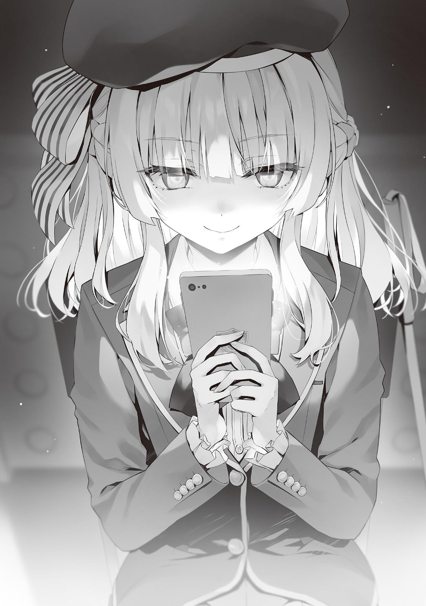
Para Sakayanagi, que estaba a cargo de la Clase A, lo más alarmante no era una clase específica.
Si dos o tres clases se aliaban en secreto... eso era más problemático.
Esa era la única preocupación de Sakayanagi.
Aunque había llevado a cabo algunas investigaciones y vigilancias desde que se anunció el examen especial, no hubo señales ni informes de tales movimientos.
Sin embargo, era fácil formar alianzas en secreto.
Por lo tanto, aunque sólo podía juzgar si existía una alianza durante el examen, pensó que la probabilidad de que se aliaran contra ella en estos momentos era casi nula. No había nada anormal en el ataque y la defensa de las otras clases.
—¿Vamos a reclamar el primer lugar?
Sakayanagi había ganado 29 puntos al final de la primera mitad y estaba a la cabeza.
Estar en primer lugar era agradable, pero justo detrás de ella estaba la clase B, a la zaga por sólo un punto. Hashimoto, que había olvidado levantarse de su asiento, estaba mirando los resultados que aparecían en el monitor y el tiempo que les quedaba para el descanso.
—Masumi-san, ¿te gustaría acompañarme a comer? Ya que fuiste eliminada, no habrá ningún problema, ¿verdad?
—No me molesta, pero realmente no te importan tus oponentes, ¿verdad?
Aunque Sakayanagi no fue elogiada, aún así sonrió alegremente y empezó a caminar con su bastón.
Cuando salieron al pasillo, Kitou se apartó silenciosamente al ver a las dos.
—¿Cuándo la invitaste?
—Por teléfono hace un momento.
—Hmm. ¿Y Hashimoto no necesita ser invitado?
Siempre que Kamuro y Kitou estaban juntos, Hashimoto estaba casi siempre con ellos. Parecía que estaban preocupados por esto.
—Lo invité apropiadamente, pero él declinó. También está en la mira de Ryuuen-kun, y ha cometido dos errores. Es natural que no quiera ser eliminado.
Imaginando a Hashimoto buscando desesperadamente información en su teléfono, Kamuro dejó escapar una risita seca.
PARTE 4
Normalmente, la cafetería se llenaba de estudiantes de todos los grados, pero hoy estaba bastante vacía. No es de extrañar, ya que muchos estudiantes de segundo año seguían en sus aulas, pegados a sus teléfonos al igual que Kei.
Valoraban el ahorro de tiempo y evitar la eliminación.
En otras palabras, los que podían permitirse venir a la cafetería eran o bien líderes sin riesgo de ser eliminados, estudiantes que ya estaban eliminados y no tenían nada que hacer, o los que, como yo, no se lo pensaban mucho.
Decididos por el menú para dos, compramos nuestras comidas y nos sentamos en las mesas utilizadas frecuentemente por los alumnos de segundo año, bandejas de comida en mano, como de costumbre.
—Podemos elegir asiento libremente.
—Así es. Pero es extraño, ¿no? Aunque los alumnos de primero y tercero pueden reservar muchos asientos hoy, los lugares más utilizados por los alumnos de segundo apenas parecen estar ocupados.
No había reglas en la cafetería que determinaran zonas concretas para cada curso.
Los alumnos se limitaban a establecer implícitamente estas divisiones, y la mayoría acataba este acuerdo silencioso.
Por supuesto, también había estudiantes que no le daban importancia.
—Horikita, parece que no te importan los detalles, ¿verdad?
—¿No es lo mismo para ti?
—En mi caso, prefiero leer el ambiente y mezclarme con la mayoría.
—No parece importarte, pero también... Dejaré de pensar en ello por ahora.
No puedo permitirme dedicarte mis recursos cognitivos.
Fue un poco sarcástico, pero me alivió bastante.
—Buenos días, estudiantes de clase B. Si no les importa, ¿puedo unirme a ustedes?
Justo cuando estaba a punto de separar mis palillos, una voz nos llamó.
—Sakayanagi-san, dónde te sientes es cosa tuya. No tengo derecho a negártelo.
Aunque concedió el permiso, debió sorprenderse.
Ella no debe haber esperado ser abordada por la líder de un oponente durante un examen especial.
—A mí tampoco me importa comer juntos, pero ¿dónde está tu comida?
Por lo que pude ver, Sakayanagi llegó sin nada. Si ella iba a comprar ahora, resultaría en un ligero retraso.
—Masumi-san y Kitou-kun están comprando la comida para mí ahora.
Deberían llegar en breve.
Siguiendo su mirada, efectivamente vi a Kamuro y Kitou alineados cansinamente en el mostrador.
—Realmente cuidas de tus amigos, ¿verdad?
—Sí, son realmente serviciales.
A Sakayanagi, que se sentó frente a Horikita y apoyó su bastón, pronto se le unió Kitou con una bandeja en cada mano. Era una clara indicación de su apoyo perpetuo a Sakayanagi.
—Ahora, siéntense los dos, por favor.
—¿Eh? ¿Aquí? ¿Comiendo con Horikita y Ayanokouji? No estoy para eso.
—¿Por qué no? Podría ser una buena experiencia de aprendizaje para ti, Masumi-san.
—¿Planeas meterme en problemas otra vez? Estoy harta de seguir tus juegos.
La que planteó esta pregunta fue Kamuro, que figuraba como eliminada en la clase A, y sin embargo no mostraba ninguna señal de ansiedad.
A pesar de su rebeldía, su actitud sugería que pensaba que era impensable que Sakayanagi terminara en último lugar. El hecho de que hubiera terminado la primera parte en primer lugar debía de ser una inyección de confianza.
Levanté ligeramente la mano para saludar a Kitou.
Kitou no reaccionó particularmente, pero verlo asentir levemente de vuelta fue lo suficientemente satisfactorio.
—Espero que seas amable en la segunda parte, Horikita-san.
—¿Ahora dices esto? Me sentí bastante presionada durante la primera parte, ¿sabes?
—Fui bastante indulgente, ¿verdad? ¿No es evidente por estar en segundo lugar?
—Debes estar bromeando...
Horikita mostró una pizca de molestia ante la descarada afirmación de que Sakayanagi fue indulgente con ella.
Justo entonces, un estudiante masculino apareció por detrás de la irritada Horikita.
—¿Me uno también a la mezcla?
Al sentir su presencia, Kitou se levantó de inmediato, mostrando una abierta hostilidad.
Sin embargo, despreocupado, el estudiante se sentó junto a Horikita sin siquiera pedir permiso.
—Qué manera más brusca de presentarte, Ryuuen-kun.
—¡Kuku! Sólo vine como el lobo a revisar este rebaño de ovejas.
A pesar de ser el único que se había quedado atrás en la primera mitad, tenía un aire de tranquilidad.
Dicho esto, él no iba a mostrar signos de agotamiento aquí, por supuesto, incluso si tenía que fingir.
—Piérdete.
Esas palabras tranquilas pero pesadas vinieron de Kitou.
—¿Oh? ¿Quién te dio el derecho de darme órdenes? La enana de allí no dice una palabra.
—Dame permiso. Lo sacaré ahora mismo.
Declarando su intención, Kitou se puso de pie, listo para enfrentarse a Ryuuen.
Combinado con el insulto que Ryuuen le lanzó a Sakayanagi, parecía totalmente preparado.
—No hay necesidad de preocuparse, Kitou-kun. Está aquí simplemente porque tiene hambre. Después de todo, tenemos que dar la bienvenida a nuestro débil y lastimero lobo.
—Pero parece que no trajo nada. ¿Quizás tiene a alguien como Ishizaki haciendo el trabajo sucio?
—Lo que busca no es comida, sino puntos de este examen especial. Creo que empezó un poco tarde la primera mitad.
—Ya veo. Bueno, es verdad.
Mientras estas tres clases estaban en estrecha competencia, solo la clase de Ryuuen se estaba quedando atrás.
Si era una burla, apenas causo revuelo.
Confirmando que no había movimientos sospechosos, Kitou volvió a tomar asiento en silencio.
—Aun así, Kamuro, pareces bastante tranquila para alguien que podría desaparecer hoy.
Kamuro hizo una pausa, con el jurel frito agarrado entre sus palillos a medio camino de la boca, y le devolvió la mirada.
—Tú también, Kitou. Un error y estás eliminado.
Sakayanagi fue quien replicó al comentario de Ryuuen.
—Mi clase es actualmente la primera, mientras que tú estás en el fondo.
Realmente estás en condiciones de tener esta conversación?
—Aunque quede último, sólo pierdo soldados de infantería. Pero tú, en este momento, estás cerca de que Kamuro o Yamamura sean expulsados. Si Kitou o Hashimoto meten la pata, ese número podría aumentar a cuatro. Tú eres la que sale perjudicada si alguien desaparece. O en la segunda parte, ¿dejarás que Horikita te hiera dolorosamente y aumentarás despreocupadamente el número de eliminaciones como si fueran basura?
Ni siquiera Sakayanagi diría que es probable que se eliminen algunos más.
Si alguien era eliminado, perdías un punto. Eso era algo que esencialmente no querías.
—¿Tienes la intención de eliminar a la gente cercana a mí?
—¿No es obvio a estas alturas?
—Es difícil de creer en este momento. Dado que tu peculiar enfoque en los estudiantes que estaban a tu alcance durante la primera mitad fracasó claramente. Y ahora, sigues persiguiendo implacablemente a estudiantes como Masumi-san y Kitou-kun.
Tenía la fuerte impresión de que la estrategia de Ryuuen se centraba en un máximo de unas ocho personas, centrándose en los estudiantes que apoyaban a Sakayanagi, como Kitou, Kamuro y Hashimoto.
Sin embargo, incluso bajo ataques tan ineficientes y concentrados, Sakayanagi no podía proteger completamente a Kamuro o Yamamura.
Incluso sabiendo quién era el objetivo, no siempre era posible rechazar los ataques.
De hecho, en las cuatro clases, Sakayanagi tenía la tasa más alta de estudiantes protegidos con éxito en la primera mitad.
—Gracias a tu inmadura estrategia, nuestra clase ha podido mantener el primer puesto. Así que aunque estoy agradecida, también estoy preocupada por ti, Ryuuen-kun. Si no cambias tus tácticas en la segunda mitad, sólo estarás repitiendo tu derrota. Seguramente hasta Horikita-san podría ver indirectamente eso, ¿verdad?
—De hecho está muy claro, ¿no? Si fuera yo, y descubriera que Sakayanagi-san rechazaría mis intentos, dispersaría mi atención entre más estudiantes.
Nunca pensé que una evaluación del examen especial comenzaría aquí, pero Ryuuen sonreía mientras escuchaba.
—Te recomiendo encarecidamente que luches de forma más inteligente.
Pero sin embargo, Ryuuen también demostró una actitud desafiante, negándose a huir y sentándose erguido.
—Te entiendo, Sakayanagi. Olvídate por un momento de la diferencia de puntos, piénsalo. Kamuro, si el examen terminara ahora con dos eliminaciones, y tu clase quedara la última, ¿sabes cómo juzgará ella?
Kamuro seguía sin responder, pero seguramente debía tener alguna preocupación. ¿Cómo respondería la líder en esa situación en particular?
Horikita también debía estar interesada en saber qué criterios utilizaría para decidir a quién expulsar.
Pero Sakayanagi siguió comiendo sin parar.
—¿No puedes responder? No, ¿es que no quieres contestar? ¿Qué piensas, Horikita?
—¿Qué es lo que pienso? ¿Por qué tenías como objetivo a Yamamura-san en primer lugar? Parecía que lo habías reducido a unas pocas personas, pero ella no es del tipo de las que se señalan, ¿verdad?
Kamuro fue traída aquí, pero Yamamura no.
Sólo por ese hecho, era natural pensar que Kamuro era más especial.
Aparte de Yamamura, los otros estudiantes que fueron escogidos tenían claramente habilidades distinguidas.
Pero en realidad, había una conexión invisible entre Sakayanagi y Yamamura.
Había estudiantes que eran evaluados por sus habilidades invisibles, no sólo por sus calificaciones OAA visibles.
—Ustedes quizás no lo sepan, así que mejor recuerden esto. Yamamura es tan valiosa para Sakayanagi como lo es Kamuro. La aprecia mucho entre bastidores, ¿verdad?
Sacando a relucir a Yamamura, él se aseguró de que todo el mundo se diera cuenta de esto.
Por primera vez, Sakayanagi hizo una pausa para comer.
—Si así lo crees, entonces interprétalo de esa manera.
En lugar de mostrarse imprecisa, respondió con sinceridad, invitándolo a hacer lo que quisiera.
—Sea cierto o no, no pretendo juzgar a los individuos como alguien ajeno que no sabe nada. Tanto Kamuro como Yamamura son excelentes compañeros de Sakayanagi.
Horikita, al parecer, quería evitar ser utilizada como factor para influir en las consideraciones de Sakayanagi.
—¿Ambos son excelentes? Ja, no me hagas reír. Sakayanagi no evalúa a la gente basándose en sus OAA. Lo fácil que son de usar y lo obedientes que son, ese es el estándar.
—¿Detrás de escena, entonces?
Kamuro miró a Sakayanagi y pidió confirmación en voz baja.
—Kamuro pareció sorprenderse por la mención del nombre de Yamamura.
Ryuuen, que evidentemente no estaba al tanto de todos los entresijos de la Clase A, expresó su observación.
Fuera cual fuera la relación entre Kamuro y Yamamura, era evidente que había cierta tensión o antagonismo entre ambas.
—¿Eras cercana a Yamamura?
—Es sólo una provocación suya sin fundamento.
—No sabía que tuvieras alguna relación con Yamamura. Sólo preguntaba.
Kamuro hizo una pequeña pausa, pero me pregunté cuánta gente lo notó.
—Como dije, es sólo su forma de provocar. No tiene sentido tomárselo en serio.
No estaba evadiendo el tema porque fuera delicado; realmente lo consideraba irrelevante.
Aunque Ryuuen se detuvo, se veía que disfrutaba viendo a Kamuro reaccionar tan sensiblemente a sus palabras, mostrando la confianza de alguien formidable.
—Ahora deberías decidir a quién expulsar.
No parecía que Ryuuen hubiera aparecido para provocar a Sakayanagi.
El objetivo era evitar tener más eliminaciones de la Clase A, y en su lugar, sólo empujar a la expulsión a jugadores clave como Kamuro o Yamamura, así como Kitou o Hashimoto.
—Espero que no te dejes llevar por sus comentarios sin sentido.
Para detenerlo, Sakayanagi le dijo esto a Horikita.
—Lo sé.
Pero Horikita luchaba por ganar.
No llegó al examen con la intención de expulsar a nadie de la clase de Sakayanagi.
Si era efectivo para ganar, eso sería otra historia, pero claro...
Decidiendo que no había más que ganar con sus provocaciones baratas, Ryuuen cambió el tema a las otras clases.
—Hablando de eso, la única que no está aquí es Ichinose, ¿verdad?
—Creo que su clase ha dejado claro que no tienen intención de que nadie sea eliminado. Nadie de su clase está en la cafetería. Es natural, supongo.
Efectivamente, nadie de la clase de Ichinose estaba en la cafetería. Ni siquiera antes de venir aquí los vi en ningún otro sitio, salvo para hacer lo necesario, como ir al baño.
Prepararon la comida desde el principio y lucharon cada minuto y segundo.
—Está dispuesta a perder con tal de evitar que expulsen a alguien de su clase. Es una mujer muy estúpida.
En todo caso, Ichinose seguramente estaba preocupada por las eliminaciones en otras clases. Pero si perdías en una batalla, tu clase se vería inevitablemente perjudicada. Para evitar eso, necesitabas volverte despiadado y eliminar a otros para que no pudieran ganar puntos.
—Es cierto. Nunca flaquea en ningún examen especial. Por eso he podido mantenerla en tercer lugar explotando sus debilidades.
Horikita, que llevaba mucho rato comiendo, detuvo sus palillos y reflexionó sobre la primera mitad del examen.
—La determinación de Ichinose es tan extrema que resulta casi patológica.
Si continúa con esta estrategia en la segunda parte, se arriesgará a agotar sus espacios de protección hasta el límite. Eso debería funcionar a tu favor, Ryuuen.
Al igual que Horikita, Ryuuen estaría atacando la clase de Ichinose.
A menos que él aumentara el número de personas que habían contestado incorrectamente dos veces y estaban al borde de la eliminación a seis o más, había una alta probabilidad de que él fuera capaz de golpear todos los espacios de protección.
Aunque no ganara más puntos eliminando a los alumnos del oponente, era necesario suprimir a la clase de mayor rango para subir su posición.
—Pero a continuación, seré yo quien ataque a tu clase. Aunque la tasa de éxito de protección aumente a medida que aumenta la tasa de eliminación, me pregunto cuántos puntos podré conseguir.
Al igual que su configuración contra Koenji, Sakayanagi leyó lo que el líder del oponente pensaría de antemano.
Dependiendo de cómo Ryuuen usara las ranuras de protección, podría haber momentos en los que no pueda obtener los puntos que debería obtener.
Era especialmente difícil proteger a compañeros de clase que responderían incorrectamente.
—Lo esperaré con ansias.
Ryuuen se levantó bruscamente de su asiento.
—Bueno, ahora que el que estaba revolviendo la olla se ha ido, reanudemos nuestra comida.
Cuando le dio la espalda a Sakayanagi y se alejó, Ryuuen se mesó el pelo en silencio.
Contrario a los pensamientos que lo rodeaban en ese momento, tenía una expresión poderosa que insinuaba que haría un movimiento en la segunda mitad del examen.
No fue una mera coincidencia que sólo momentáneamente me mostrara esta expresión.
Era un mensaje contundente que me decía que observara en silencio.
Era difícil ver más allá de su desesperada situación, pero me preguntaba cómo iba a superarla.
La segunda parte del examen iba a empezar pronto.
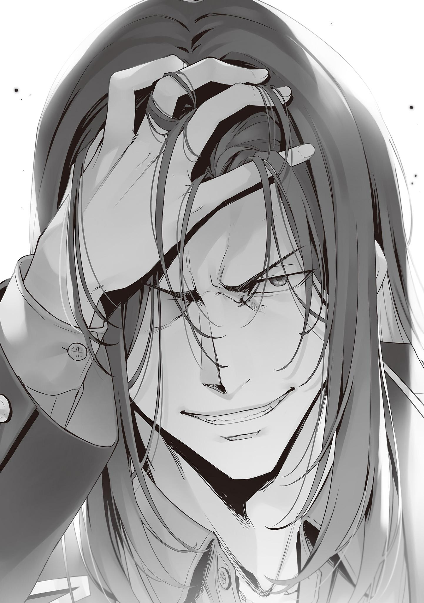
PARTE 5
En unos minutos, Sakagami-sensei señalaría el comienzo del 11º turno, pero Horikita estaba de pie en el podio, atrayendo las miradas de los estudiantes.
—La clase A es realmente un enemigo formidable. Ocuparon el primer puesto durante los 10 turnos de la primera parte. Pero es importante no centrarse demasiado en eso y afrontar el examen especial con seriedad.
Después de todo, la única forma de acumular puntos es que resolvamos las preguntas correctamente.
El objetivo de Horikita para la ofensiva era la clase de Sakayanagi, la más problemática de las tres clases.
Durante la primera mitad, se protegió con éxito contra los ataques de Ryuuen, y los estudiantes lograron un alto índice de respuestas correctas.
—¿Cómo vamos a atacar?
En respuesta a la inocente pregunta de Sudou, Horikita escudriñó a sus compañeros en el salón.
Podía haber alguien aquí que estuviera conectado con Sakayanagi.
Naturalmente, ella no podía anunciar imprudentemente su estrategia.
—¿Recuerdan cuando les pedí sus ideas durante el período de preparación? He organizado esa información y creo que he encontrado un hueco.
La sencillez era lo mejor.
Daba la impresión de que prefería un método que se centrara en las debilidades individuales en lugar de intentar leer al oponente.
Sin embargo, en comparación con la clase de Ichinose, la información parecía escasa, y habría estado muy controlada para evitar cualquier filtración desde el anuncio de este examen especial.
En ese caso, no sería fácil descubrir los puntos fuertes y débiles de cada uno.
Sólo Horikita sabía realmente lo efectiva que era la estrategia que había ideado a partir de toda esta información.
En el undécimo turno, llegó el primer ataque de Horikita contra la clase de Sakayanagi.
Utilizó un punto de inmediato y eligió un problema de "Literatura" con una dificultad de dos.
Desafortunadamente, una persona fue protegida con éxito, pero tres de los cuatro estudiantes que se enfrentaron al problema de dificultad lo hicieron mal, asegurándose una ganancia de dos puntos.
Una vez descontados los puntos utilizados para aumentar la dificultad, conseguir tres puntos nos dejaría igualados, y ganar más de cuatro puntos nos daría un excedente en ese turno.
La siguiente en atacar fue la clase de Sakayanagi, que debió sentir cierta presión.
Y Sakayanagi inesperadamente gastó dos puntos, eligiendo un problema de
"Deportes" con dificultad tres.
Ella mostró su intención de atacar sin piedad contra el último clasificado Ryuuen.
—Ella realmente quiere acorralar a Ryuuen-kun... Que atrevida.
La segunda mitad comenzó diferente, despreocupados por la diferencia de puntos que tenía la Clase B.
Pero inmediatamente después, el resultado en el monitor causó un clamor sorprendido de la clase.
Miembros de la Defensiva protegidos con éxito :
'Katsuragi Kouhei', 'Shiina Hiyori', 'Tokitou Hiroya', 'Nomura Yuuji', 'Ibuki Mio'.
En este examen especial, por primera vez, se consiguió una puntuación perfecta dentro de las franjas de protección, asegurando la enorme cantidad de cinco puntos. Si todo el mundo estaba protegido, un nivel de dificultad tres carecía de sentido. Fue un duro golpe.
Por otro lado, Ryuuen, que se había estado quedando atrás, rápidamente se acercó con 24 puntos y empató temporalmente con Ichinose.
—Tienen cuatro eliminaciones, la mayor cantidad hasta ahora, pero esto es... esto es demasiado bueno para ser verdad.
Dado que muchos anticipaban que se irían quedando atrás, el resultado debió de resultar bastante impactante.
Parecía que el impulso continuaría, pero el ataque de Ryuuen en la clase de Ichinose no fue tan agudo como se esperaba, con tres personas protegidas. Sin embargo, una persona cometió un error en el problema, por lo que se detuvo en cuatro puntos para un total de 28.
Sólo quedaba el turno de esta clase a la defensiva, pero la diferencia se estaba reduciendo rápidamente.
De hecho, me preguntaba qué categoría elegiría Ichinose y a quién elegiría como objetivo.
Categoría 'Deportes' Dificultad 1
Miembros de la Defensiva Protegidos con Éxito: Wang Mei-Yui, Shinohara Satsuki.
Nominados Ofensiva:
'Ayanokouji Kiyotaka,' 'Miyamoto Soushi,' 'Karuizawa Kei'
La primera nominación de ataque de Ichinose incluía mi nombre.
Y ya sea intencionalmente o por coincidencia, el nombre de Kei también fue nombrado al mismo tiempo.
El nivel de dificultad uno de "Deportes" era manejable, no podía decirse que fuera ni un punto fuerte ni un punto débil.
Confiaba en poder conseguirlo si se basaba en la historia o las reglas, pero si se trataba de acontecimientos actuales, me pondría en desventaja.
Por otro lado, Kei podría ser capaz de resolver una pregunta global como la que habría visto en la televisión. Solía hablar de ver partidos de voleibol con regularidad.
¿Cómo llamarías a una situación en la que hay un out o menos, con corredores en primera y segunda base, o en primera, segunda y tercera base, y el bateador golpea una bola fly que un jugador del cuadro puede atrapar con una acción defensiva estándar?
Al parecer, esta pregunta estaba relacionada con las reglas. Afortunadamente, había aprendido las reglas del deporte hasta cierto punto, así que pude responder sin dificultad. La respuesta correcta era "Infield Fly".
Sin embargo, dudo que Kei sea capaz de responder, y mucho menos Miyamoto.
Sólo podía esperar que lo hubiera aprendido en los últimos días de estudio...
Solo dos de nosotros, Miyamoto y yo, acertamos la respuesta.
Por desgracia, Kei se equivocó. Sin embargo, fue su primer error.
La situación aún no era grave, pero Kei parecía llena de ansiedad mientras volvía a su asiento.
Por otro lado, Miyamoto, que acertó la respuesta, chocaba los cinco y compartía la alegría con sus compañeros.
Por la conversación que escuché, aprendió las reglas del béisbol en los partidos, y hoy le estaban ayudando mucho.
Los conocimientos pueden venir muy bien de lugares inesperados.
Con esto sumamos cuatro puntos. Superamos temporalmente la clase de Sakayanagi y nos colocamos en primer lugar.
En el siguiente duodécimo turno, la clase de Sakayanagi consiguió de forma constante cuatro puntos con cuatro respuestas correctas, pero lo que sorprendió a la clase fue una vez más la clase de Ryuuen.
Como si estuvieran viendo una repetición, cinco nombres se alinearon en la lista de protecciones acertadas.
En otras palabras, lograron una puntuación perfecta únicamente con las ranuras de protección por segunda vez consecutiva.
—¿¡Qué clase de probabilidades son esas!? ¿¡Tienen demasiada suerte!?
Ike, habiendo asumido que la clase de Ryuuen estaría en el fondo, gritó mientras se agarraba la cabeza.
—...Me pregunto si podemos descartar esto como buena suerte.
Pude escuchar la sensación de pesadez de Horikita en su voz mientras miraba tranquilamente el monitor a mi lado.
Era comprensible. Habían conseguido una selección perfecta dos veces seguidas, lo cual era un acontecimiento con una probabilidad increíblemente baja.
Si conseguían otra selección perfecta en el siguiente turno...
Durante el incrédulo estado de sorpresa, el siguiente ataque a Ichinose vio a dos personas protegidas y a dos personas que respondieron correctamente.
Ahora era el momento para que Ichinose atacara.
Miembros de la defensiva protegidos con éxito :
'Ishikura Kayoko,' 'Sudou Ken'
Nominados de la Ofensiva:
'Ayanokouji Kiyotaka,' 'Matsushita Chiaki,' 'Karuizawa Kei'
Dijeron mi nombre y el de Kei, nominados por segunda vez consecutiva.
En cuanto vio su nombre, Kei se puso en pie de un salto, alzando la voz de forma obviamente agitada.
—No estoy siendo el blanco, ¿verdad?
—Cálmate. Que nos hayan nominado dos veces seguidas no significa necesariamente que seamos un objetivo especial.
—¡Pero...!
Era comprensible que Kei entrara en pánico.
Hubiera sido mejor si esta nominación se debiera a que Ichinose tuviera como objetivo a oponentes más débiles.
Sin embargo, la oponente era Ichinose. Ella debe haber sospechado que estaba siendo elegida por razones personales.
Dado que yo también estaba incluido, era una nominación indicativa de esa intención...
Tanto si había prejuicios personales como si no, lo mejor era considerarlo una provocación.
Aun así, fue un movimiento sólido.
Horikita no utilizó el valioso espacio de protección conmigo.
Quizás fue porque previó esta estrategia.
Si la categoría hubiera sido académica, Kei podría haber sido protegida. Pero la categoría era "Noticias". Era un campo en el que incluso Kei podría responder
correctamente, de ahí la decisión de dejarla desprotegida. Por otro lado, tenía que ser más cauteloso, puesto que ya había fallado antes una pregunta de la misma categoría.
¿Qué significa "tapiru"[12]?
Al ver la pregunta, me quedé helado al instante.
¿Qué...? ¿Eh...? ¿Qué significa? ¿Tapiru? ¿Tapi...?
Al quedarme congelado, llegó el límite de tiempo y no pude escribir ninguna respuesta.
Las preguntas de la categoría "Noticias" que recibieron otros estudiantes giraban en su mayoría en torno a la política o a acontecimientos anuales.
¿Por qué se lanzan preguntas curvas cuando me toca a mí?
Como resultado de la pregunta desafiante, esta vez fui yo quien se equivocó y Kei quien respondió correctamente.
Aliviados por no haber caído al borde de la derrota, pudimos calmarnos por el momento.
Matsushita, naturalmente, parecía haber acertado la respuesta correcta, asegurándose cuatro puntos. Por otro lado, debido a mis dos errores, de repente era candidato a la eliminación. Por cierto, la respuesta correcta era "beber una bebida con perlas de tapioca".
—¿Tú... sabes aún menos del mundo de lo que yo pensaba?
Nada más volver a mi asiento, soporté el comentario de una Horikita disgustada y no tuve más remedio que encorvar la espalda.
Era el decimotercer turno de ataque de la clase de Horikita.
El género era 'Kanji' con un nivel de dificultad de 1. Sin embargo, para mi sorpresa, inesperadamente las palabras de Horikita se detuvieron.
Aunque estaba nominando sin problemas hasta la cuarta persona, parecía estar perdida en la última.
Clasificar la información en su cabeza en ese momento también era un reto.
Quién era bueno en qué, y quién era débil en qué.
Podría haber agotado prematuramente la valiosa información sobre la Clase A.
Aún quedaba tiempo. Horikita respiró hondo, calmándose.
Entonces, le tendieron una mano.
—¿Por qué no elegir Satonaka?
Murmuró una estudiante aburrida.
Se trataba de Kushida, la persona que no había sido seleccionada ni una sola vez durante el examen especial y tenía demasiado tiempo libre.
—Gracias, Kushida-san. Entonces, Sensei, me gustaría que la última persona fuera Satonaka-kun.
Sin pedir razones, Horikita confió plenamente en su consejo.
Como resultado, Satonaka no estaba protegido, y respondió incorrectamente.
—¿Dónde descubriste que Satonaka tiene problemas con los kanji?
[12]: タピる : Literalmente se traduce como "beber té de burbujas". Es jerga, así que por supuesto Ayanokouji no tiene ni idea de lo que significa.
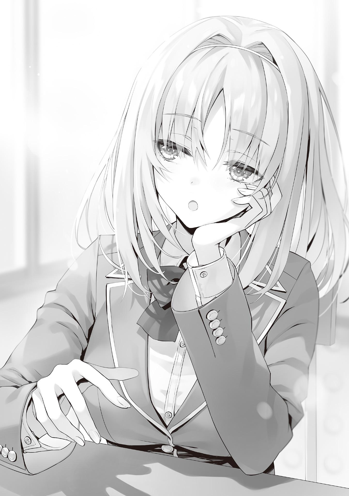
Makida aplaudió, admirándola.
—Ese tipo de información viene de todas partes.
Dijo Kushida como si no fuera para tanto, y su mirada se desvió con indiferencia.
—Fuiste de gran ayuda. Gracias.
—La verdad es que no.
Incluso después de recibir palabras de gratitud de Horikita, Kushida no se veía complacida.
Sin embargo, dado que su posición dentro de la clase no era muy buena, contribuir visiblemente de esta manera no era algo malo.
Por lo visto, ésta era una de las razones por las que Horikita podía afrontar la segunda parte de la batalla con confianza.
La rara red de información que Kushida Kikyou poseía.
No sólo tenía un amplio círculo de amigos, sino que Kushida también recopilaba constantemente información sobre los puntos débiles de sus oponentes. Es por eso que ella se jactaba de una memoria excepcional cuando se trataba de sus debilidades.
Aún no había mostrado todas sus cartas, pero es probable que proporcionara a Horikita mucha información de antemano. Una presencia realmente tranquilizadora.
En el turno 13, llegó el ataque de Ichinose. Era nuestro tercer turno defensivo, y esta vez, Horikita eligió proteger Karuizawa. Quedé atrás sin protección.
Sin embargo, su suposición parecía correcta, y el nombre de Karuizawa Kei apareció como protegido con éxito.
Aunque normalmente estaría encantada de evitar la pregunta, el semblante de Kei estaba claramente apagado.
—¿¡Tienen la intención de eliminarme...!? ¿Me tienen en el punto de mira, no importa cómo lo vea?
—Tal vez... Es un poco excesivo.
Satou respondió en conformidad. Pero esos extraños equívocos sólo llevaban a confusiones innecesarias.
—Ella no es de las que le tienden una trampa a alguien específicamente.
—¡Pero eso es porque...!
Kei estaba a punto de replicar que era porque no conocían las circunstancias, pero se detuvo.
—De todos modos, no sabemos cuál es su objetivo, pero ahora que la protección tuvo éxito, es probable que cambien de objetivo la próxima vez.
—...Sí...
—Pero llama la atención que las nominaciones continuaron tres veces seguidas como cuando Koenji-kun fue el objetivo en la primera mitad. Me pregunto qué estará pensando Ichinose-san.
El ataque de Ichinose llegó de nuevo en el turno 14.
—...¿Qué debemos hacer?
Horikita mostró dudas sobre cómo asignar las ranuras de protección. Pasara lo que pasara, una cuarta nominación consecutiva para Kei era improbable.
¿Debería ella tomar tal decisión? ¿O debería ser cautelosa y no dejarse engañar?
—¿Y si intentamos protegerla una vez más? Creo que podría proponérselo.
Kushida aconsejó a la pensativa Horikita.
—¿Lo crees por lo visto hasta ahora?
—La verdad es que no. Sólo lo juzgué basándome en lo que he visto de Ichinose-san hasta ahora.
Kushida sintió las señales dentro de los pensamientos de Ichinose Honami, no del flujo de selecciones hasta ahora.
— Es cierto. Puede ser que sea mejor protegerse una vez más.
Todavía no estaba a un paso de la eliminación, pero si aspiraban a ello, querrían asegurarse puntos.
Entonces, las protecciones exitosas fueron reveladas, y el nombre de Kei se mostró una vez más. Ella estableció un récord de cuatro selecciones consecutivas en este examen, superando las tres nominaciones consecutivas de Koenji. Había algunos aspectos inexplicables, pero poder competir con otras clases sin perder parecía algo bueno.
Sin embargo, la situación empezaba a empeorar.
Tanto la clase de Horikita como la de Sakayanagi anotaron puntos con un equilibrio de medidas ofensivas y defensivas, pero en la segunda mitad, la clase de Ichinose tuvo un alto índice de protecciones exitosas.
Sin embargo, la clase de Ryuuen mostró aún más ímpetu. Aunque Sakayanagi estaba contraatacando repitiendo categorías y nominaciones irregulares, la situación no mejoraba; habían logrado cuatro resultados consecutivos de protección perfecta.
No había duda de que se estaba produciendo una situación anormal que ya no podía explicarse sólo por la suerte.
Pero en esa situación, Horikita no podía hacer otra cosa.
Sólo ganar puntos con calma, tranquilidad y constancia.
PARTE 6
Para Ryuuen, perder no era doloroso.
Aunque perdiera una vez, estaba bien si ganaba la segunda vez.
Aunque perdiera cien veces, estaba bien mientras ganara al final.
Así es como había vivido su vida, pero un día, un gran obstáculo se puso delante de Ryuuen.
El tipo parecía un tonto que podías encontrar en cualquier parte, pero por dentro, encerraba una bestia.
No, Ryuuen pensó que semejante expresión era demasiado suave.
Cómo describirlo mejor-esa respuesta aún no estaba clara.
Pero era seguro que entre todas las personas que había visto hasta entonces, él era el más poderoso y brutal.
No era una persona que estuviera en un reino alcanzable viviendo una vida ordinaria.
Había pasado más de un año desde que fue derrotado por aquel hombre, Ayanokouji, y su espíritu estaba destrozado.
La abrumadora diferencia en la habilidad, esa era probablemente la razón por la que apenas brotaba ninguna emoción similar al odio.
Cuando interactuaba con Ayanokouji, extrañamente, no había sensación de incomodidad.
Eso era debido quizás a que aunque Ryuuen lo negara en la superficie... No, no era eso.
En el fondo, él estaba reconociendo las habilidades únicas de Ayanokouji.
Pero repetidamente se dijo a sí mismo que no lo malinterpretara.
Ryuuen no tenía la intención de permanecer bajo su mando.
Antes de que Ayanokouji se graduara en esta escuela y desapareciera de su vista, definitivamente le pagaría por su derrota.
Para ello, primero debía deshacerse del desorden.
Decidió que sería necesario suprimir a Sakayanagi, que había estado reinando como líder de la Clase A.
En efecto, Sakayanagi era el único obstáculo.
Y luego, tras lograrlo, derrotaría a Ayanokouji.
Esto se había convertido en la meta a lograr de Ryuuen Kakeru en esta escuela.
Él nunca se detendría hasta entonces.
Justo después de que la segunda mitad del examen comenzara, Ryuuen, quien había estado calmadamente enfocándose en el séquito principal de Sakayanagi durante su turno, se levantó de su asiento.
—Bien entonces-ya es hora de comenzar. Muévete.
—¿¡Espera un minuto!?
Ryuuen hizo a un lado a Hoshinomiya, la profesora a cargo, y se sentó en la plataforma.
—Es la segunda mitad. La diferencia de puntos es de sólo diez. En otras palabras, alcanzarlos es posible si consiguen una puntuación perfecta unas cuantas veces. Puedo contar con ustedes, ¿verdad?
La opresiva exigencia del líder no permitía errores, sin importar las tareas que se les presentaran.
Por supuesto, el trabajo duro no sería necesario si la proporción de respuestas correctas pudiera aumentar basándose únicamente en esa amenaza.
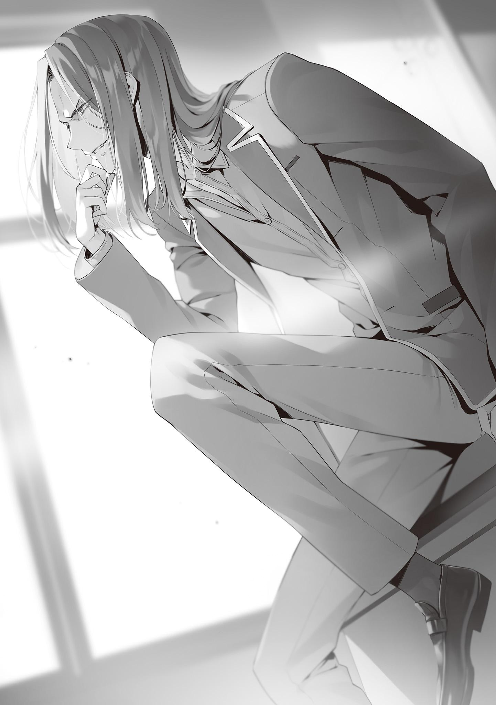
—No bromees. No es sólo problema de la clase. Ryuuen, debes entender que es difícil para otras clases obtener puntajes perfectos también. Como líder, debes usar tu sabiduría para proteger a tanta gente como sea posible.
Entre todos los estudiantes que no respondieron nada, Tokitou expresó sin miedo su descontento.
—¡Kuku! Te equivocaste dos veces y ahora no tienes espacio para más. Si fallas, serás el primero en ser nominado para la expulsión entre los tipos rebeldes como tú.
—¡...!
—Pero no te preocupes. De aquí en adelante, como quieras, te enseñaré cómo se desarrollan las cosas.
—¿Qué quieres decir?
—La parte en la que dije 'puedo contar con ustedes' era mentira.
Ryuuen se dio la vuelta, confirmó que el monitor había cambiado, y le dijeron que el nombramiento de Sakayanagi se había completado. Ahora le tocaba proteger a cinco candidatos.
La categoría que eligió el oponente fue "Deportes". Además, gastaron dos puntos para elevar la dificultad a tres.
Ryuuen no daría ni un solo punto a su clase. Los estudiantes estaban desconcertados por el implacable ataque de la Clase A.
Sin embargo, Ryuuen era el único que parecía imperturbable e incluso un poco complacido.
—Katsuragi, Shiina, Tokitou, Nomura, Ibuki. Adelante —ordenó sin vacilar, sin importarle la categoría o la dificultad.
—Eh, sé respetuoso cuando te dirijas a la profesora —interpuso Hoshinomiya, apresurándose a introducir los nombres que Ryuuen había pronunciado, finalizando así los movimientos del bando defensivo.
Mientras tanto, entre los estudiantes, había especulaciones.
La rápida toma de decisiones de Ryuuen, ¿fue diseñada para evitar quedar atrapado en las tácticas de Sakayanagi?
Esperaron ansiosamente los resultados.
Miembros de la Defensiva Protegidos con Éxito:
'Katsuragi Kouhei', 'Shiina Hiyori', 'Tokitou Hiroya', 'Nomura Yuji', 'Ibuki Mio'.
—¿Q-Qué...?
Tokitou, que había estado de pie mirando fijamente a Ryuuen, se sorprendió al ver el resultado.
Su respuesta decisiva e inmediata tuvo éxito, resultando en una puntuación perfecta.
—Apostar puede ser divertido. Es como lanzar un dado al azar.
En el siguiente duodécimo turno, Ryuuen una vez más continuó anunciando los cinco nombres para las ranuras de protección.
Como resultado, todos los estudiantes fueron protegidos con éxito de nuevo, mostrando un tremendo cambio en sólo dos turnos.
Lo mismo ocurrió en los turnos 13 y 14.
Aunque las nominaciones de Sakayanagi se dispersaron, todas se pegaron como misiles teledirigidos, y las selecciones de Ryuuen fueron todas defendidas con éxito.
—Heh. Parece que no puedes hacer nada, Sakayanagi.
Incluso antes del comienzo de este examen especial, lo que Ryuuen valoraba era completamente diferente de los otros líderes.
Cuanto podía enmascarar el olor de una bestia. Cuánto podía acorralar a la presa sin dejar que sintiera los colmillos acercándose por detrás... Eso era todo.
Habiendo superado la primera mitad, se anotó una victoria, por lo tanto, lanzó un revés a gran escala.
—¡¿Qué está pasando...?!
No había duda de que había un truco.
Pero incluso Hoshinomiya, la profesora a cargo de la clase, no sabía lo que era.
PARTE 7
Desde el primer turno de ataque y defensa, Ichinose había estado hablando continuamente a sus compañeros.
—Evitaremos por todos los medios que expulsen a alguien de nuestra clase, así que no se pongan nerviosos y mantengan la calma.
Por supuesto, todavía había muchos estudiantes que se sentían ansiosos, aunque lo entendían.
Por eso Ichinose había estado tranquilizando a sus compañeros, para que estuvieran tranquilos.
Por supuesto, no eran afirmaciones infundadas, sino la verdad. Sin embargo, si luchaban de la misma manera que antes y acababan a la defensiva, otras clases explotarían sin piedad la apertura.
El objetivo principal era mantener en cero el número de compañeros eliminados para prepararse para el improbable caso de perder.
Si no se eliminaba a ningún alumno, ni siquiera la clase peor clasificada tendría expulsiones. Un enfoque defensivo.
Sin embargo, no renunció a ganar.
Entonces, ¿cómo se lucharía a la defensiva mientras se aspira a ganar?
Arrastrando a los oponentes a tu propio campo de batalla en lugar de al de ellos.
Para evitar eliminaciones, los oponentes que vieran este escenario asumirían que defenderse era su máxima prioridad.
A medida que avanzaba la primera parte, con el segundo y el tercer turno, el objetivo de Horikita se hizo evidente.
Entre un número indeterminado de personas, su objetivo era aumentar el número de personas que cometían errores dos veces y estaban a punto de ser eliminadas.
Cuando este número aumentara a cinco, pretendía probar lo que haría Ichinose.
—Gracias, Horikita-san.
Ichinose expresó su gratitud por las acciones sabias y compasivas de Horikita.
Mientras pudieran ganar puntos, no les importaba si eso resultaba en eliminaciones de la clase enemiga.
Tenía que ser así.
Fue una suerte que el oponente fuera Horikita, quien atacaba de manera sólida y regular, a diferencia de Ryuuen. Ichinose utilizó la función de protección principalmente para aquellos que estaban a punto de ser eliminados.
—No abandonaré a nadie. Me creen, ¿verdad?
Ella no quería herir a sus aliados.
Abrió sus brazos para darles la bienvenida, asegurándoles que no actuaría imprudentemente.
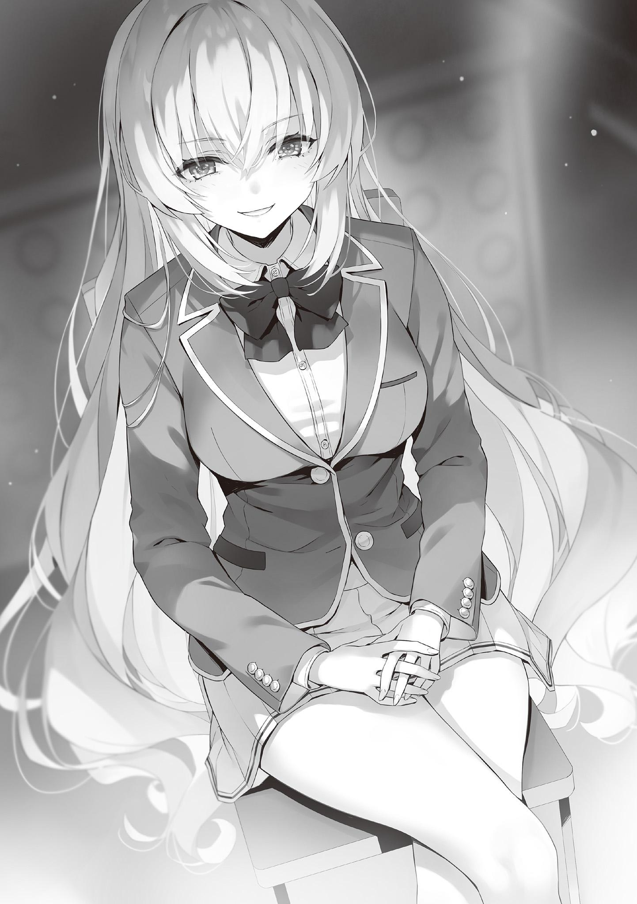
—Espero que nadie en la clase, el año y la escuela... sea expulsado.
Estos sentimientos eran genuinos.
Sin embargo, si significaba crear víctimas dentro de su clase, ellos estaban preparados para los sacrificios necesarios.
Por lo tanto, no vacilaron en eliminar a estudiantes en la clase de Ryuuen.
Para la victoria, tenían que hundir las otras clases.
Como resultado, al final de la primera mitad, cuatro estudiantes de la clase de Ryuuen habían sido eliminados debido a los ataques de Ichinose.
En última instancia, si uno de ellos desapareciera, habrían contribuido inadvertidamente a una expulsión.
Sacrificios inevitables. No tenían más remedio que justificarlo, a pesar del dolor en sus corazones.
...Sin embargo, esto era solo si Ryuuen perdía.
—Comenzaremos la segunda mitad en un minuto. Todos, tomen asiento y prepárense.
Al recibir la señal de Mashima-sensei, Ichinose abrió su teléfono.
Lentamente, miró hacia atrás en el historial de chat en su aplicación.
Un intercambio con cierta persona se hizo justo después del inicio de la primera mitad.
[Ryuuen-kun, esto puede ser repentino, ¿pero harías equipo conmigo? No quiero que nadie sea expulsado de mi clase. Para lograrlo, necesitamos terminar el examen con cero eliminaciones. Así que, quiero que juegues a la defensiva en la segunda parte, para que no haya eliminaciones de mi clase].
Justo después de comenzar el examen especial, Ichinose envió este mensaje a Ryuuen.
Tan pronto como el mensaje fue leído, una respuesta vino de vuelta.
[Ese es un deseo bastante egoísta. ¿Crees que sólo escucharé y obedeceré?]
[Hay lugar para la negociación. Te daré un regalo que te complacerá.]
[Antes de todo eso, ¿puedes aguantar los ataques de Suzune sin un rasguño?]
Para pedirle a Ryuuen que no elimine a nadie, tenía que pasar los primeros diez turnos de la primera mitad sin eliminaciones.
[Puedo manejarlo.]
[Una respuesta inmediata, ¿eh? No has estado negociando con Suzune antes que conmigo, ¿verdad? Si es así, se acabó].
Una torpe mentira no funcionaría contra Ryuuen, quien era altamente cauteloso.
Aún así, desde el principio Ichinose no planeaba negociar con Horikita. Si trataban de negociar, sería difícil establecer un acuerdo y la clase de Sakayanagi comenzaría a moverse. Esa era una situación a evitar.
[Quiero proteger a todos. No quiero ninguna eliminación. El oponente sabe que ese es mi objetivo. Es por eso que Horikita-san debe estar intentando reunir primero a cinco personas al borde de la eliminación. Probablemente quiere ver si seguiré protegiendo a esas cinco personas].
Si se saltara la protección de una de esas cinco personas aunque sólo fuera una vez, se asumiría que estaban preparados para aceptar una eliminación, o incluso una expulsión si acababan últimos.
Pero si podía seguir protegiendo, nada sería más fácil para la Horikita atacante.
Todas las valiosas plazas de protección se asignarían continuamente a esas cinco personas. Por lo tanto, ella cambiaría a atacar a los estudiantes que no han cometido errores sin el incremento de aquellos que estarían al borde de la eliminación.
[A diferencia de ti y Sakayanagi-san, Horikita-san no quiere eliminar a los estudiantes de otras clases. Ella sólo quiere ganar. Ella atacará a las 34
personas que no están protegidas equitativamente].
La estrategia de Ichinose en la primera mitad fue permitir a propósito que aquellos estudiantes que se sentían inseguros acerca de sus respuestas estuvieran al borde de la eliminación usando los espacios de protección inicial que tenían a su disposición. No sería una batalla fácil, pero no era imposible luchar en igualdad de condiciones.
[Si esa estrategia sale bien, y sigo tus instrucciones en la segunda parte, entonces desde luego, no habrá eliminaciones. Pero esa es una idea bastante escandalosa, ¿eh? ¿Qué clase de regalo me vas a dar?]
[25 puntos garantizados. Te diré las personas objetivo en cinco de los diez turnos que atacarán. Por supuesto, los repartiremos inteligentemente para que las otras clases no se den cuenta].
Si sabía quién sería atacado de antemano, tendría ventaja en el examen.
Hubo una recepción de lectura inmediata, pero la respuesta tardó unos tres minutos debido a la reflexión.
[Pasaré. No es un mal trato, pero tengo mis propias ideas.]
[Es una pena.]
Ichinose pensó que ella había hecho una buena oferta, pero no tuvo más remedio que dejarla pasar. Cualquier otro compromiso en la puntuación les haría perder la oportunidad de quedar primeros. Más que nada, ella podía juzgar que las posibilidades eran escasas por el hecho de que Ryuuen ni siquiera negoció para aumentar la puntuación.
—Entonces, tal vez tendré que arriesgarme...
La negociación fracasó. Ella podía pensar en numerosas maneras en las que podría haber sido peor, pero no se molestaría.
Aunque fuera arriesgado, tendría que apuntar a una estrategia de no eliminación ella sola.
Sin embargo-
[Tienes suerte.]
Justo cuando pensaba que toda esperanza estaba perdida, recibió otro mensaje del destinatario.
[¿Qué quieres decir?]
[Si logras evitar eliminaciones en la primera mitad, estaré parcialmente de acuerdo con tu propuesta].
[¿Parcialmente?]
[Estaré de acuerdo en evitar eliminar a cualquiera de tus compañeros, pero tus 25 puntos garantizados son innecesarios. Si actúas de forma extraña en la primera mitad, Sakayanagi se dará cuenta.]
[Entonces, ¿qué estás pidiendo?]
[Después de la inversión de ataque y defensa en la segunda mitad, acepta los puntos de mi parte que sean necesarios. Y sin detalles. Decide si confías o no en mí basándote en eso.]
Una oferta enigmática para convertirse en el receptor en lugar de dar puntos.
Cualquier otro estudiante lo vería como una broma, sugiriendo que desde el principio no había intención de negociar.
—...Ya veo...
Ichinose murmuró en voz baja.
Esta vez, fue Ichinose quien ponderó si confiar o no en Ryuuen.
Sería una mentira decir que no dudó, sólo que le tomó tiempo.
Aún así, Ichinose respondió en menos de un minuto.
[Entiendo. Confiaré en ti.]
La velocidad de su toma de decisiones era algo que otros estudiantes no podían imitar.
No era una decisión tomada sólo por amabilidad.
La lógica de Ichinose, el pensamiento, y la comprensión de lo que Ryuuen estaba buscando condujo a esto.
En el momento en que el primer mensaje fue enviado, fue instantáneamente marcado como leído.
Basado en eso, se podía inferir que Ryuuen también quería contactar a Ichinose.
Esto significaba que tenían algo en común, o algo que ambos querían, aunque no fueran exactamente iguales.
Este intercambio ocurrió antes del comienzo del examen especial.
Durante la segunda mitad, del 11º al 14º turno, la situación cambió significativamente.
El ataque 15 de la clase de Sakayanagi contra la clase de Ryuuen fue anunciado, pero una vez más, se defendieron con éxito perfectamente. Viendo esto, Ichinose sonrió sin dejar que sus alrededores lo notaran.
[Eso es asombroso. Así que este era tu objetivo.]
[Quédate callada y vive.]
[No había necesidad de hacer equipo conmigo desde el principio, pero lo hiciste.
Gracias.]
[¿Crees que accedí por buena voluntad? Ser el último de la fila no me habría beneficiado. Sólo tomé el poder de controlar el puntaje según fuera necesario.]
De hecho, en las negociaciones de Ryuuen, la condición era que Ichinose tenía que estar de acuerdo en aceptar los puntos. Por lo tanto, si su clase perdía frente a la de Sakayanagi, sería sencillo aumentar la puntuación y convertirlos a la fuerza en terceros o superiores.
Anticipando el resultado de este examen especial, Ichinose se sintió aliviada de no tener que perder a ninguno de sus amigos. Durante el examen por votación unánime, Ichinose optó por no distribuir los Puntos de Protección, temiendo que provocara un conflicto de clases en ese examen. Sin embargo, tras el anuncio de este examen especial, casi se había arrepentido de esa decisión.
Karuizawa Kei cometió su primer error. Si se equivocaba una vez más, estaría al borde de la eliminación. Todavía existía la posibilidad de que la Clase B cayera al último lugar. Había estudiantes de un rango inferior al de Karuizawa entre los miembros que ya habían sido eliminados, y había pocas esperanzas de que ella fuera eliminada.
Aún así, había una posibilidad.
Pero para eso, las nominaciones consecutivas tenían que ser interrumpidas una vez.
—No... Esa es una mala jugada...
Se instó a sí misma a actuar por la clase, no por sus sentimientos personales.
Ayanokouji no la rechazaría. Él la aceptaría aunque continuara su relación con Karuizawa.
Entonces, también había una manera de progresar y sobrescribir todo por sí misma.
Se dio cuenta de que era la peor clase de persona, pero no le importó.
—Aunque no podamos conseguir el primer puesto, la forma de ganar en realidad es hacer que Sakayanagi-san quede en último lugar.
En un pequeño período de tiempo, Ichinose reguló su respiración.
Entonces, cambió su mirada a su celular.
La razón por la que Karuizawa era el objetivo incluso después de estar tan protegida.
Ya debería ser obvio.
Ichinose, que logró contenerse, se sentó de nuevo.
—Me gustaría nominar a Karuizawa Kei-san.
El 16º turno no fue diferente, ella nominó el nombre Karuizawa.
Con renovada determinación, Ichinose no dudó.
Esto era suficiente por ahora.
Sólo quedaba repetirlo sin descanso.
—Me gustaría nominar a Karuizawa Kei-san.
Agarrando su teléfono, Ichinose estaba segura de su verdadera victoria en este examen especial.
PARTE 8
Era el inicio del 15º turno.
Las cuatro clases estaban finalmente casi codo con codo. La clase de Ichinose estaba en primer lugar con 42 puntos. Las clases de Horikita y Sakayanagi estaban empatadas en segundo lugar con 40 puntos cada una. En tercer lugar estaba la clase de Ryuuen con 39 puntos.
Su ventaja de la primera mitad de la batalla se había agotado. Todavía no se habían quedado atrás, pero si las cosas seguían así, seguramente se verían hundidos.
Al principio, la clase de Ryuuen les permitió suprimir sus miedos, pero nubes ominosas se estaban reuniendo.
Fueron empujados de nuevo a un lugar donde había una posibilidad muy real de que pudieran terminar en último lugar.
—Es una mentira, ¿verdad? ¡Déjenme en paz!
—¡Odio absolutamente la idea de ser expulsado!
—¡Me siento de la misma manera!
Desde la primera mitad de la batalla, el número de eliminaciones aumentó a cuatro, haciendo que los estudiantes entraran en pánico.
En este punto, no había forma de que el resto pudiera concentrarse en estudiar.
Horikita se levantó de su silla. Era hora de comenzar la nominación, pero ella se abrió paso con calma entre los estudiantes presa del pánico.
—No se asusten.
Horikita, ahora de pie en el atril, se dirigió a sus compañeros.
—Hay que reconocer que la situación es casi desesperada. Nuestra clase tiene cuatro eliminaciones en este momento. Ichinose-san ha tomado la delantera, y la clase de Ryuuen-kun, que estaba en último lugar, nos está alcanzando a un ritmo absurdo con continuas puntuaciones perfectas. Hemos llegado a un punto en el que no puedo garantizar una victoria definitiva.
Si pudieran descubrir la estrategia de Ryuuen y evitar de forma fiable las puntuaciones perfectas a partir de entonces, sería diferente, pero no podían esperar eso. Tampoco podían interferir con las nominaciones de protección de Ichinose, que tuvieron éxito en un alto porcentaje.
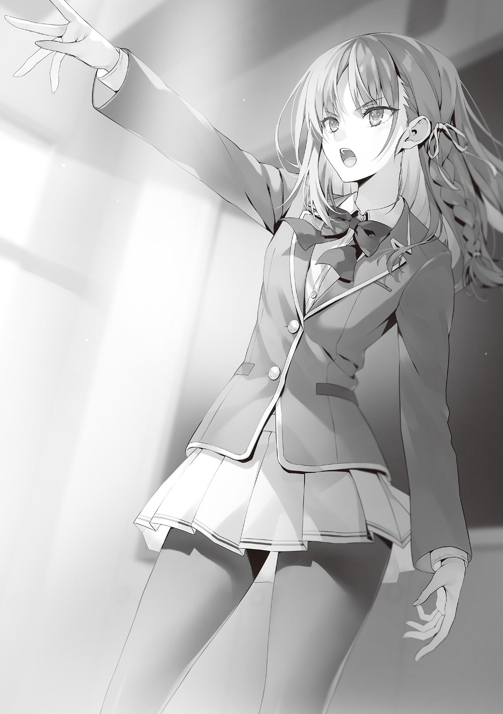
—Todo lo que podemos hacer es luchar juntos hasta el final.
Horikita no podía garantizar la victoria en este momento.
Pero, como se trataba de un examen competitivo, el líder tenía que ofrecer garantías, aunque no hubiera ninguna que dar.
Ser demasiado tímido u optimista sería inútil.
Sólo la verdad detrás de sus palabras resonaría entre sus compañeros.
Horikita creía que podían vencer. Esa creencia llegaría a los estudiantes.
Incluso Yousuke, que normalmente era el que solía seguir, esta vez se limitaba a escuchar las palabras de Horikita.
—Crean en mí.
Seguirían adelante, impulsados por este espíritu. Por supuesto, no había otras opciones disponibles.
Pero mirando a Horikita, parecía haber algo más que eso.
15º turno de ataque de la clase de Ichinose.
Miembros de la defensiva protegidos con éxito: Karuizawa Kei, Satou Maya y Miyake Akito.
Horikita protegió con éxito a tres de sus compañeros de clase.
Además, puntuaron perfectamente ya que los dos restantes respondieron correctamente a la pregunta.
Fue una remontada de cinco puntos. Sin embargo, las implacables nominaciones no se detuvieron.
—¡¿Qu-qué es esto?!
Kei, más abrumada por el miedo que por la alegría, apartó los ojos de la pantalla.
No sólo los compañeros que sólo eran vagamente conscientes de la situación, sino incluso los que eran completamente ajenos, empezaron a sentirse incómodos porque su oponente la señalaba obsesivamente.
Horikita, que había defendido con éxito a sus compañeros, no parecía ser uno de ellos.
Turno 16. Turno de ataque de la clase de Ichinose.
Miembros de la defensiva protegidos con éxito :
'Karuizawa Kei,' 'Nishimura Ryuuko'
Esta vez, fueron dos. Pero de nuevo, el nombre de Kei estaba allí.
—Basta... ¿Qué es esto...?
Ichinose continuó atacando sin cesar a Karuizawa.
No era extraño deducir que si un estudiante específico estaba siendo el objetivo, la intención era eliminar intencionalmente y expulsar a ese estudiante. Este comportamiento destructor de la imagen continuó sin fin.
17º turno: turno de ataque de la clase de Ichinose.
Miembros de la defensiva protegidos con éxito:
'Karuizawa Kei,' 'Hirata Yousuke'
Aún así, no se detuvo.
No se detuvo.
No se detuvo, no importa cuántas veces fue frustrado.
Las nominaciones no se detuvieron.
—¿Por qué sólo me eliges a mí? Eso no es justo...
Turno 18. Turno de ataque de la clase de Ichinose.
Miembros de la Defensiva Protegidos con Éxito: Karuizawa Kei, Hasebe Haruka, Onodera Kayano.
19º Turno de ataque de la clase de Ichinose.
Miembros de la Defensiva Protegidos con Éxito: Karuizawa Kei
20º Turno de ataque de la clase de Ichinose.
Miembros de la Defensiva Protegidos con Éxito: Karuizawa Kei, Sudou Ken.
Hubo un total de 10 turnos en la segunda mitad.
De principio a fin, Ichinose nunca quitó a Kei como su objetivo.
NUEVA EXPULSIÓN
FUE EL PRIMER ataque de SAKAYANAGI en la segunda mitad.
Esta vez, el objetivo cambió de la clase de Horikita a la de Ryuuen.
Antes del examen especial, no se estableció ninguna política específica sobre cómo luchar contra la clase de Ryuuen.
No creían necesario formular un plan meticuloso contra un oponente que hacía lo que le daba la gana.
Sin embargo, Sakayanagi ahora tenía información extraña.
La noche anterior recibió una llamada telefónica en la que su compañero de clase, Hashimoto, le aconsejaba encarecidamente.
Entre las diversas cosas que dijo, hubo algunas que se le quedaron grabadas a Sakayanagi.
Una de ellas fue la conversación sobre eliminar a Shiina Hiyori y explorar la posibilidad de la expulsión.
A Sakayanagi no le interesaban los pensamientos personales de Hashimoto, pero cuando escuchó la razón, sus pensamientos se detuvieron.
La mirada y el trato de Ayanokouji hacia Shiina.
Hashimoto dijo que eran diferentes de los que daba a los estudiantes ordinarios.
Este comentario captó el interés de Sakayanagi.
Se preguntó si Ayanokouji mostraría sus emociones si Shiina fuera expulsada.
—Pero eso ya es un desarrollo imposible, ¿no?
En la primera mitad, la forma de luchar de Ichinose fue más decidida que antes.
Antes, habría vacilado en eliminar a la gente de la clase de su opositor, la clase C de Ryuuen. Sin embargo, Ichinose no tenía ninguna vacilación. Eliminó a cuatro personas simplemente en la primera mitad: Ishizaki, Isoyama, Yano, y Morofuji.
Estaba absolutamente decidida a proteger sólo a su clase. Para ello, decidió ser despiadada con los extraños.
Incluso si Sakayanagi pudiera seleccionar a Shiina y eliminarla, el resto de los estudiantes serían sacrificados.
Apuntar a la improbable posibilidad de la expulsión de Shiina sería menos eficiente.
Shiina sólo había cometido un error hasta ese momento. Incluso si pudiera hacer que respondiera incorrectamente dos veces atacándola directamente con problemas que no pudiera resolver, sería difícil evitar que fuera protegida. La estrategia no era fácil.
—Interesante...
Terminó la primera mitad del examen en primer lugar y empezaba a aburrirse.
Divertirse un poco no sería tan malo.
Cambió de idea y pensó que sería interesante eliminar a un objetivo desafiante.
Por supuesto, superaría el reto, mantendría la ventaja y terminaría el juego.
Para ello, tenía que elaborar una estrategia.
En los pocos minutos que le quedaban hasta que llegara su turno, ultimó su plan.
Y así comenzó su undécimo turno de ataque.
Sin embargo-
En el 11º turno, los cinco estudiantes que Sakayanagi designó estaban protegidos.
Dos puntos fueron desperdiciados contra las ranuras perfectamente protegidas.
Un fracaso total.
Sin embargo, los estudiantes dijeron unánimemente que no era un problema, que la jugada estaba bien.
Pero Sakayanagi lo vio de otra manera.
Era sólo un resultado perfecto, pero ella no lo veía sólo como si hubiera tenido muy mala suerte.
Inmediatamente, reinició en su cabeza el desafío que se había impuesto a sí misma con respecto a Shiina.
Desechó todas las estrategias y la lógica, y eligió todo al azar.
En otras palabras, una combinación de categoría y nombramientos que nadie podía predecir.
El resultado fue igual de perfecto que en el undécimo turno; se produjeron dos milagros consecutivos.
Sus compañeros estaban claramente desconcertados.
Si fuera alguien que pensara con normalidad, no le resultaría extraño creer que le habían leído la mente, lo que la había llevado al fracaso. Sin embargo, tal pensamiento ni siquiera existía en la mente de Sakayanagi.
Después de dos turnos, estaba segura de que sólo podía haber una respuesta.
Alguien estaba interfiriendo.
Ella creía que un traidor, un Judas, se escondía en esta clase.
Claramente, se estaba filtrando información interna.
De lo contrario, acontecimientos inexplicables estaban empezando a ocurrir.
Hasta que llegara su próximo turno, Sakayanagi decidió observar a sus compañeros sin decir palabra.
Algunos suspiraban ante la suerte de Ryuuen, otros se aferraban desesperadamente a sus teléfonos para evitar ser eliminados.
Y entonces llegó el ataque en el decimotercer turno.
La clase, naturalmente, se quedó en silencio.
Sakayanagi permaneció en silencio. Después de una pausa de 30 segundos, hizo una pausa de un minuto entre cada nombre antes de pasárselos al profesor.
No era porque se estuviera devanando los sesos para evitar de nuevo la impecable defensa de Ryuuen.
Este silencio era una orden tácita de Sakayanagi a sus compañeros.
Era un mensaje oculto que expresaba: "Basta de juegos".
Después de mantener su silencio hasta el último minuto, pasó cinco nombres a Chabashira-sensei.
Sin embargo, el resultado siguió siendo el mismo, otra puntuación perfecta.
—Qué desafortunado.
Murmuró Sakayanagi en soledad, su sonrisa menguando después de tres fracasos consecutivos.
Si la información se filtraba en tiempo real, sus métodos serían limitados.
Un método era escribir los estudiantes designados por Sakayanagi en un chat o correo electrónico y enviarlo. Dado que un teléfono se utiliza para recopilar información, teclear no se vería necesariamente como algo sospechoso.
Otro método era la transmisión auditiva a través de una llamada telefónica.
Inmediatamente después de que Sakayanagi transmitiera la información al profesor, ésta podría transmitirse a la otra persona; esto podría ejecutarse sin tener que tocar el teléfono.
Como medida preventiva, podía recibir permiso para transmitir la información al profesor por escrito. Incluso si eso fuera imposible, podría susurrar para evitar cualquier filtración de voz.
Sin embargo-
Sakayanagi miró al gran monitor situado sobre el hombro de la profesora.
Si se empleaba un método que implicara el uso de la cámara de un teléfono, ni siquiera impedir la transmisión de voz garantizaría una resolución.
Quizá la única forma de defenderse fuera impedir físicamente la transmisión de información.
Haría que todos dejaran de usar sus teléfonos y tabletas.
En cuanto a informar al profesor, ella susurraría, y hasta que Ryuuen nombrara a cinco personas, todos se mantendrían de espaldas para cerrar cualquier información.
Si esto resolvía el problema, sería una bendición.
Sólo habían regalado 15 puntos hasta ahora. Todavía podían detener el desenfreno de Ryuuen.
Mientras seguía pensando, el silencio se rompió, pero no fue Sakayanagi quien lo rompió.
—Se está filtrando información.
La que rompió el silencio de la clase fue Morishita Ai.
Ella murmuró esas palabras sin expresión.
—Morishita-san podría tener razón. Quizá deberíamos hacer que todos dejen de tocar sus teléfonos y revisarlos. Ryuuen-kun podría tener un truco bajo la manga.
Sanada, ligeramente retrasado, asintió a las palabras de Morishita, pidiendo una respuesta a Sakayanagi.
Kitou y Hashimoto se levantaron de inmediato.
—No hay necesidad de una respuesta.
—¡Pero...!
—Debemos seguir usando nuestros teléfonos para encontrar pistas y claves para resolver las preguntas.
Bajo estas caóticas circunstancias, sería difícil decir que el hacinamiento fue efectivo.
Inesperadamente, la líder se negó a hacer lo que había que hacer.
—¿Estás de acuerdo con esto, Princesa? También estoy seguro después de ver tres nominaciones perfectas consecutivas. Sin duda creo que se está filtrando información. Tenemos que tomar medidas-
—No hay cambio de planes. Continuemos el examen como está.
Si se les ordenaba, ningún otro estudiante podía cuestionar más.
A nadie se le dio la autoridad para revocar la decisión.
Aunque todos eran obedientes, pensaban: "¿Por qué Sakayanagi no hizo los movimientos necesarios?".
Traicionar a la clase no era algo que pudiera hacerse fácilmente. Si el oponente estaba obviamente protegiendo a los estudiantes objetivo, era solo cuestión de tiempo antes de que la gente se diera cuenta de que se estaba filtrando información durante el examen.
Como seguían ejecutando el plan a pesar de saberlo, surgió la preocupación de que el problema no se resolvería simplemente confiscando teléfonos y bloqueando la visión del monitor.
¿Qué pasaría si se tomaran medidas y no cesaran las filtraciones?
Se dificultaría la recopilación de información y la clase quedaría desconcertada y desorientada.
Aunque alguna prueba saliera a la luz, si Sakayanagi estuviera en la posición de una traidora, nunca dejaría pruebas cerca de ella. Las colocaría en el escritorio o en la mochila de algún estudiante al azar, o en algún lugar de la clase. Entonces, se convertiría en una guerra de palabras. Discutirían entre ellos en el acto, echándose la culpa unos a otros.
Nombrar a un alumno que tenía muchas posibilidades de ser un traidor sin aportar pruebas sólidas era simplemente demasiado arriesgado.
De cualquier manera, era más desventajoso armar un escándalo ahora.
Sakayanagi decidió dar prioridad a evitar el último puesto en lugar de aspirar al primero.
No le afectaba mientras pudiera defenderse y ganar puntos, aunque siguiera filtrándose información.
Intentaron defenderse al máximo de los ataques de Horikita y aspirar al tercer puesto, pero no les fue tan bien como esperaban.
Por el flujo del examen transmitido desde el monitor, se hizo evidente que Ichinose estaba ayudando a Horikita. Se estaba construyendo una estrategia: utilizar a un traidor para hacer que su clase se hundiera hasta el fondo.
El vigésimo turno terminó mientras estaban rezagados, y perdieron su tercer puesto por seis puntos.
—Parece que esta vez perdí.
Compitieron entre las cuatro clases y sufrieron la desgracia de quedar en último lugar.
Aunque las circunstancias se debieran a una traición interna, no se podían aceptar excusas.
Sakayanagi dejó escapar un suspiro.
Como líder, todavía tenía que asumir la responsabilidad de esta derrota.
—Como fuimos derrotados, debemos seleccionar a un compañero eliminado para expulsarlo.
Durante el examen, cinco estudiantes -Kamuro, Yamamura, Sugio, Toba y Machida- fueron eliminados.
—Normalmente, sería apropiado decidir en base a la contribución a la clase, pero no haremos eso. La razón es sencilla. Desde mi punto de vista, los cinco están al mismo nivel.
Sakayanagi afirmó que no habría ningún cambio en la fuerza de la clase independientemente de quién fuera expulsado.
—Entonces, ¿cómo vamos a decidir...?
Uno de los estudiantes eliminados, Machida, preguntó ansiosamente.
—Deberíamos echarlo a suertes y decidir justamente a quién expulsar.
Una propuesta inesperada provocó un grito de los eliminados.
—¿Están descontentos? Desgraciadamente, no habrá gran diferencia en quién sea expulsado.
En la silenciosa aula, Sakayanagi continuó el proceso incansablemente. Los estudiantes eliminados querían desahogar sus frustraciones, pero querían evitar agraviar a Sakayanagi y ser señalados para la expulsión.
—Es inútil protestar. El líder tiene derecho a decidir a quién expulsar.
—Si seguimos los resultados del sorteo, ¿se puede considerar una decisión del líder?
—Por supuesto. Para que sea más fácil evitar un caso en el que un alumno con un OAA bajo asuma la responsabilidad, decidí juzgar a los desafortunados como los que no tienen talento. Y si alguien se niega a participar en el sorteo, lo interpretaré como que abandona la lucha en ese momento, y lo expulsaré.
Para involucrarlos a la fuerza, Sakayanagi eliminó incansablemente cualquier medio de escape.
—Preparé los papeles.
Una estudiante se dirigió a Sakayanagi con voz despreocupada, ajena al pesado ambiente.
—Estás bien preparada, Morishita-san. Gracias por colorearlos cuidadosamente. Tenemos poco tiempo, así que acabemos rápido. La persona que elija el papel coloreado lamentablemente tendrá que abandonar la escuela.
Había un total de cinco papeles preparados, cuatro de los cuales eran seguros.
Eso era todo.
—¿Quién quiere sacar primero? Seas el primero o el último en sacar, tus probabilidades empiezan igual.
¿Demostrarían que pueden evitar la expulsión con sus propias manos, o esperarían a que otro fuera expulsado?
Mientras reprimía su impulso de objetar, Machida fue el primero en sacar.
—¡Claro que sí!
Machida sacó un papel normal y mostró la mayor pose de victoria hasta el momento.
Animados por esto, Sugio y Toba le siguieron.
Uno tras otro, sacaron papeles sin colorear.
Entonces, sólo quedaron dos: Kamuro Masumi y Yamamura Miki.
La primera simplemente se quedó porque no podía molestarse en ir a sacar.
La segunda estaba demasiado asustada para moverse. Se quedaron por razones totalmente distintas. Sakayanagi, que tenía amistad con ambas, no cambió su expresión.
La razón por la que eligió una lotería de igual probabilidad fue que decidió que no importaba quién se quedara fuera.
—Adelante, saca tú.
A pesar de que fue incitada por Kamuro, Yamamura no podía moverse.
Estaba temblando al darse cuenta de que tenía una posibilidad entre dos de ser expulsada y no estaba preparada para ello.
No podía pensar en lo que pasaría después de su expulsión.
Aunque quisiera avanzar, sus pies estaban congelados.
—Yo-yo, yo soy...
—Geez... entonces yo lo sacaré primero. ¿Te parece bien?
Incapaz de hablar, Yamamura asintió repetidamente. Era todo lo que podía hacer.
Kamuro se acercó a Morishita, que sostenía la caja de lotería.
—Espera, por favor.
Justo cuando estaba a punto de extender la mano, Sakayanagi la detuvo.
—Dije que los que no saquen serán expulsados. Eso significa, Yamamura-san, que se negó a sacar, se irá.
—¿Eh...? Pero... ¿Eh...?
—Entonces, ¿no hay objeción?
—¡E-Eh...! E-Eso es...
—¿Qué es esto? ¿Estás intentando ayudarme?
—No, no es eso. Sólo estaba exponiendo los hechos.
—Oh, ya veo. Entonces está decidido. Yamamura y yo sacaremos al mismo tiempo, ¿verdad?
Ansiosa por declarar quién sería expulsada, Sakayanagi se encontró detenida por Kamuro.
Kamuro fácilmente desperdició su oportunidad de evitar la expulsión.
—Ven rápido.
Se dirigió hacia Yamamura, que no podía dar un paso adelante, y la agarró por la fuerza del brazo y la arrastró.
—Esta es tu primera y última oportunidad para decidir cuál de nuestras suertes es superior.
—Eres muy amable, ¿verdad, Masumi-san? ¿Realmente necesitas arriesgarte para ayudar a alguien a quien deberías descartar?
—No, es sólo un capricho.
—¿Es así...? Entonces veamos cómo sacan las dos.
Morishita ofreció dos papeles para que sacaran.
Cuando Kamuro movió a la fuerza la indecisa mano izquierda de Yamamura, ella por reflejo agarró un papel.
Al ver esto, Kamuro también envolvió su mano alrededor de un papel.
—Sin rencores.
Con voz calmada, Kamuro torpemente consoló a la inquieta Yamamura.
—Ahora, suelten sus manos.
Morishita dijo lentamente, y en el mismo momento, abrieron sus manos apretadas.
Los dos trozos de papel ondearon con la ligera brisa.
La persona que sacara el papel de color sería expulsada, esa era la regla.
La persona que sostenía ese papel era Kamuro.
Aparte de la persona en cuestión, los otros estudiantes fueron incapaces de aceptar el resultado y se quedaron en silencio.
—Está decidido. Bien por ti, Yamamura. Sobreviviste.
—Ah, eh...
Le dio unas suaves palmaditas en el hombro a Yamamura, cuya situación, permanecer en la escuela o abandonarla, aún no se había determinado de forma concluyente.
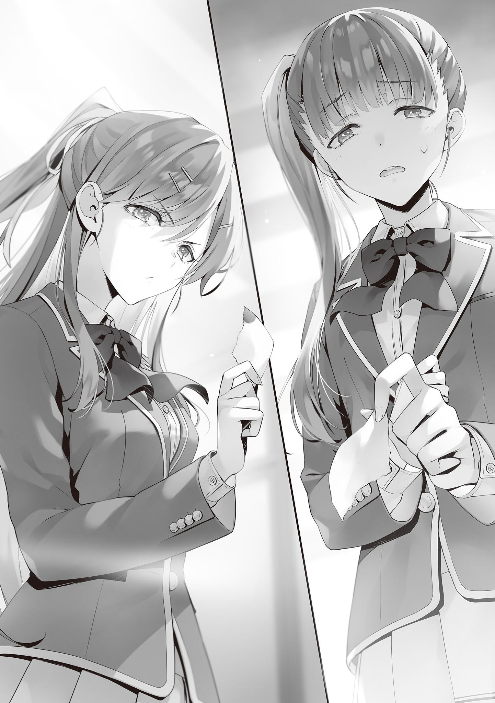
La clase A se sumió en el silencio.
Era una situación completamente diferente a cuando Totsuka fue expulsado anteriormente-los puntos de la clase disminuyeron debido a la derrota y la expulsión fue a través de una selección.
La clase A estaba experimentando realmente la derrota por primera vez.
Lo sorprendente era que Kamuro, el único cordero sacrificado, se mostró tranquila en todo momento.
Al parecer molesta por las miradas de sus compañeras, Kamuro las desvió y volvió a su asiento.
Sakayanagi apartó los ojos de ella e instó a Chabashira, la profesora encargada, a proceder.
—Bien entonces, demos por finalizado este examen especial.
El examen especial de supervivencia y eliminación, que había llevado tanto tiempo, por fin terminó.
PARTE 1
Resultados finales:
1er: Ryuuen【Clase D】69 puntos
2º: Ichinose 【Clase C】62 puntos
3º: Horikita 【Clase B】59 puntos
4to: Sakayanagi 【Clase A】53 puntos
Ryuuen, habiendo defendido perfectamente durante todos los diez turnos de la segunda parte, dio la vuelta a la tortilla y se alzó con la victoria.
Con esta clasificación confirmada, la clase de Ryuuen ganó 100 puntos de clase.
El segundo y tercer clasificados, lamentablemente, perdieron 50 puntos de clase, mientras que Sakayanagi perdió 100 puntos de clase.
El resultado, que era inimaginable basado en la primera mitad, fue totalmente inesperado; todos cayeron de la cima.
La derrota no fue motivo de alegría. Sin embargo, había poco descontento en la clase. Más bien, parecían fuertemente aliviados por haber rozado apenas el tercer puesto.
No era para menos. Los que fueron eliminados pasaron el final del examen con angustia mental.
Chabashira-sensei anunció que la semana siguiente se informarían más detalles, incluida la expulsión de la clase A, y se dio por terminada la clase.
En medio del alboroto, una estudiante abrió de golpe la puerta de la clase desde el pasillo.
—¡Lo siento, Karuizawa-san!
—¿Eh, Ichinose-san...?
Kei, presionada por diez nominaciones consecutivas, se puso rígida ante la aparición de Ichinose.
Protectoramente, Satō se deslizó delante de Kei.
Al ver esto, sentada en el fondo, Horikita se puso de pie.
—Cálmate, Karuizawa-san. Esas misteriosas nominaciones consecutivas eran Ichinose-san intentando lanzarnos un salvavidas.
Ichinose se disculpó mientras estaba de acuerdo con las palabras de Horikita.
—¿Eh? ¿Qué, qué significa eso...?
—Ella estaba tratando, a su manera, de darnos puntos. ¿Verdad?
—Había pensado en contactar contigo a través de un mensaje de texto o una llamada, pero no sería natural decir que te íbamos a dar puntos, así que
decidimos hacer una serie de nominaciones consecutivas para enviar un mensaje directo. Fue entonces cuando Horikita-san sospechó y se puso en contacto conmigo.
Horikita fue quien se puso en contacto con ella, no al revés. Ichinose explicó que éste era el punto importante.
—También pudimos proteger con éxito a algunas personas más tarde gracias a que Ichinose-san nos informó de los nominados con anticipación.
—¿Por qué... ¿Por qué necesitarían hacer eso...?
—Para derrotar a la Clase A, seguramente. Esencialmente, cada clase en segundo lugar y por debajo fue capaz de luchar para que nadie perdiera.
—Sí, nuestra única opción era enfrentarnos a Sakayanagi-san de frente.
Eso es lo que llamamos un regalo del cielo.
Si no fuera por el apoyo de Ichinose, la diferencia de seis puntos podría haber sido un revés.
—Pero, ¿por qué tuve que ser yo?
—Tú, Karuizawa-san, has estado jugando un papel central entre las chicas, y naturalmente, Horikita-san pensaría en protegerte de ser eliminada, ¿no? Por eso planeé seguir nominándote desde el principio. Sin embargo, pensé que debías estar ansiosa, así que vine corriendo. Lo siento mucho.
Al ver el razonamiento justificado y el mensaje de Horikita que lo corroboraba, Kei se sintió algo aliviada.
Ichinose continuó disculpándose con Kei varias veces antes de marcharse ineludiblemente, ya que estaba haciendo esperar a sus compañeros.
Después, mientras miraba la clasificación, Horikita recibió el agradecimiento de sus compañeros mientras empezaban a marcharse.
Yo también llamé a Horikita.
—Esta vez perdimos. En la segunda parte, estaba claro que debía haber algún tipo de acuerdo entre las clases de Ryuuen-kun e Ichinose-san... Por
supuesto, sin ninguna evidencia, es sólo especulación, pero su clase le dio puntos a la clase de Ichinose-san, lo que los elevó al segundo lugar, sin una sola eliminación.
—Exacto, pero ese no es el punto principal.
Horikita asintió y se levantó.
—Si dos clases se coludían, básicamente tenían que empezar a trabajar juntas desde la primera mitad. Sólo ayudándose mutuamente podrían ambas partes beneficiarse y compartir la victoria. Así que me sentí totalmente aliviada cuando no hubo señales de ello ni siquiera después de que terminara la primera mitad.
—No fuiste sólo tú. Sakayanagi no podría haberlo esperado tampoco.
Era incierto cuándo Ryuuen e Ichinose se aliaron, pero debe haber sido después de que los arreglos especiales del examen fueran anunciados. Y sin mostrar sus rostros públicamente, se estaban preparando en silencio.
—Pero el punto de inflexión de todo esto fue que Ryuuen fue capaz de percibir de antemano todos los objetivos de ataque de Sakayanagi.
—Alguien le filtró la información de la Clase A... Esa es la única explicación.
—Ese parece ser el caso.
—Ese estudiante está loco. No puedo imaginarme algo como que traicione descaradamente a la clase. Esto no pasó en la clase D o C, sino en una clase que ha mantenido A desde la inscripción. ¿Qué recibió a cambio de ejecutar esto?
—Podrían traicionar a su clase si les pagaran 20 millones de puntos.
Aparte de eso, probablemente no lo haría.
Pero aún así, era difícil creer que alguien traicionaría a su clase si se le preguntaba directamente.
De hecho, ganar 20 millones de puntos, que te permitían cambiar de clase en cualquier momento, parecía un verdadero objetivo, pero aún quedaba más de un
año para la graduación. Si se transfería una cantidad tan enorme de puntos, la traición pronto saldría a la luz, y el estudiante sería el blanco de la furia de la Clase A. También sería envidiado por otras clases. Si fuera el blanco de los exámenes especiales posteriores, con el consiguiente riesgo de expulsión, no tendría más remedio que desprenderse de sus puntos privados. Si eso ocurriera, estaría equivocando su prioridad.
En otras palabras, era seguro asumir que el traidor quería algo especial pero inusual.
—No estoy encantada con el resultado, pero no puedo quejarme. Aunque es decepcionante no haber quedado en primer lugar, la Clase A acabó siendo cuarta, así que básicamente no hay daños. Sin embargo... sigo sintiéndome frustrada.
Saliendo al pasillo y fuera de la vista de los demás estudiantes, Horikita desahogó sus verdaderos sentimientos sin contenerse.
—Llévate esa frustración al próximo examen especial.
—De acuerdo... Eso haré.
—Voy a revisar la clase de Ryuuen. ¿Qué vas a hacer?
—Me iré a casa por hoy. No tengo la confianza de poder escuchar con madurez su sarcasmo.
De hecho, no se podía negar la posibilidad de que Ryuuen pudiera agitar las cosas.
PARTE 2
Queriendo confirmar el estado de la clase de Ryuuen, que debería estar animada, me acerqué a la clase D y encontré a Hiyori.
Estaba mirando al suelo desde la ventana.
Su expresión no era la amable sonrisa que mostraba habitualmente, sino una expresión severa. Al notar esta incongruencia, me acerqué en silencio y la imité, mirando hacia abajo desde la ventana.
Lo que vi fue a Ryuuen y a algunos de su séquito.
Una figura notable era Ishizaki, que gesticulaba de alegría mientras saltaba de un lado a otro.
También estaba la figura de Katsuragi, caminando majestuosamente hacia el centro comercial Keyaki, incluso con sus llamativos movimientos.
Su perfil lateral que era brevemente visible, como siempre, era severo como es habitual.
—Ya es hora de probar el vino de la victoria, ¿eh?
No me sorprendería que hoy derrocharan en el Centro Comercial Keyaki.
—Eso parece.
Hiyori respondió a mis palabras con su tono natural.
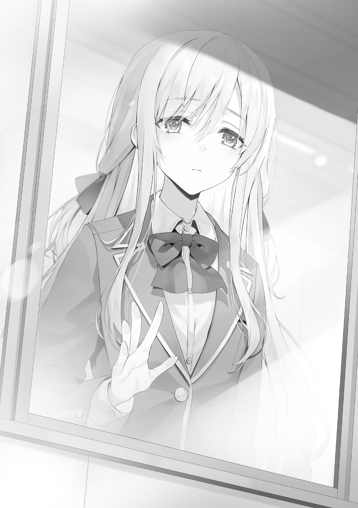
—¿No vas a ir?
—Aunque me invitaron, hoy decliné.
—¿Por qué?
—Quizá porque no me apetecía celebrarlo.
Entre los jubilosos alumnos, la única sin una sonrisa podría haber sido Hiyori.
—Me sentí incómoda al ver la forma de pensar y el enfoque ofensivo de Ryuuen-kun hoy.
—Logró el primer puesto contra todo pronóstico. Creo que fue un excelente resultado.
—Podemos decir eso si sólo miramos el resultado. Sin embargo...
Tras dudar un poco, Hiyori continuó hablando.
—Tengo dudas de que podamos seguir ganando tranquilamente con estos métodos.
—No fue un método convencional. Más bien se trató de ir con cuidado con los puntos fuertes de la clase.
La habilidad de apostar por estrategias únicas era el fuerte de Ryuuen, pero eso era todo.
—De alguna manera nos las arreglamos esta vez, pero no vamos a ser capaces de basarnos en esta victoria la próxima vez. No digo que debamos perder, pero perdimos una valiosa oportunidad de crecimiento.
—Podrías tener razón.
Sin embargo, para lograrlo, quizá necesiten nuevas perspectivas.
—Las piezas necesarias para que ascendamos a la clase A también sirven de obstáculos. Es preocupante.
Hiyori podía ver una clara debilidad en su clase.
La fuerza residía en la existencia de Ryuuen.
Pero por otro lado, las debilidades también se debían a su presencia.
—Si hay algún alumno que se de cuenta de esto, aún hay esperanza para la clase.
Quería escuchar brevemente lo que dirían los ganadores, pero no tenía intención de interrumpir.
Hiyori, que lucía preocupada, se dirigía a la biblioteca y me invitó a acompañarla, pero decidí declinar la invitación.
También quería ver cómo estaban las clases de Ichinose y Sakayanagi.
Sobre la clase de Ichinose, para bien o para mal, era la misma de siempre.
Mientras evitaban la posición más baja, se aseguraron manteniendo el número de eliminaciones en cero. Luchar sin abandonar a nadie conllevaba riesgos, pero al final, acabaron en segunda posición.
Horikita determinó su objetivo y orquestó deliberadamente la estrategia en la primera mitad de la batalla para llevar a cinco estudiantes al borde de la eliminación. En la segunda mitad, se alió con Ryuuen, que parecía haber iniciado las negociaciones al principio, logrando un recuento de eliminación de cero. Además, ayudó a Horikita, relegando la posición de Sakayanagi al último puesto.
Podría decirse que hicieron los mejores movimientos posibles para una clase atrapada en el centro.
PARTE 3
Era después de clases, y ya habían pasado las 5 p.m. Debido al examen especial de segundo año, las actividades de los clubes fueron canceladas, y sólo unos pocos estudiantes permanecían en el campus.
Sakayanagi estaba sentada en el pupitre de Kamuro, que aún no había sido retirado, esperando tranquilamente a que pasara el tiempo.
Cuando se acercaba la hora prometida, se abrió la puerta del aula.
—Te estaba esperando, Hashimoto-kun.
—¿Por qué quisiste reunirte conmigo en un lugar así y sólo nosotros dos?
—Es una reunión de reflexión.
—Bueno, eso da un poco de miedo.
—Este examen especial resultó ser una gran decepción. Fue mi fracaso.
—Estoy de acuerdo. Fue decepcionante, pero no puedo culparte. No importa cómo lo piense, la información de la clase debe haberse filtrado a Ryuuen.
El recién entrado Hashimoto puso suavemente su mano sobre el escritorio de Kamuro y miró alrededor del aula.
—El traidor causó la expulsión de Masumi-chan-Kamuro-chan. Es imperdonable.
—Creía que no te importaba quién fuera expulsado mientras no fueras tú, Hashimoto-kun.
—Fuimos camaradas durante dos años, ¿no? Hasta yo me siento enfadado.
—Sí, supongo. Pero, ¿cómo crees que se filtró la información de la clase?
—preguntó Sakayanagi a Hashimoto, como buscando su opinión.
—Lo normal sería pensar que se filtró a través de un teléfono. Simple y efectivo.
—Pienso lo mismo.
—Si es así, ¿por qué no tomaste contramedidas cuando Morishita habló?
—¿Qué quieres decir con contramedidas? ¿Confiscar los teléfonos de todos?
—Sí, exactamente. ¿No habría minimizado eso el daño?
—El traidor no es estúpido. Supuse que tenían algún tipo de contramedida.
Pensé que si iniciábamos una investigación torpe, sólo crearía confusión.
—Entonces, elegiste esperar y ver como veías más adelante. Una estrategia que sólo tú podrías haber orquestado.
Lentamente, Hashimoto caminó entre las filas de pupitres y avanzó hacia el podio.
—Sin embargo, ¿no te dolió el corazón eliminar a Kamuro-chan, aunque fuera el resultado de las suertes?
—¿Dolerme el corazón?
—Eran buenas amigas. Si hubiera sido yo, habría hecho todo lo posible para que expulsaran a Toba o a los otros en su lugar.
—Eso es imposible. Ella no es una existencia especial para mí.
—No importa, llevan dos años juntas, enfrentando altas y bajas. Es fuerte de tu parte no flaquear. Me gustaba Kamuro-chan, y no creo que pueda superarlo pronto.
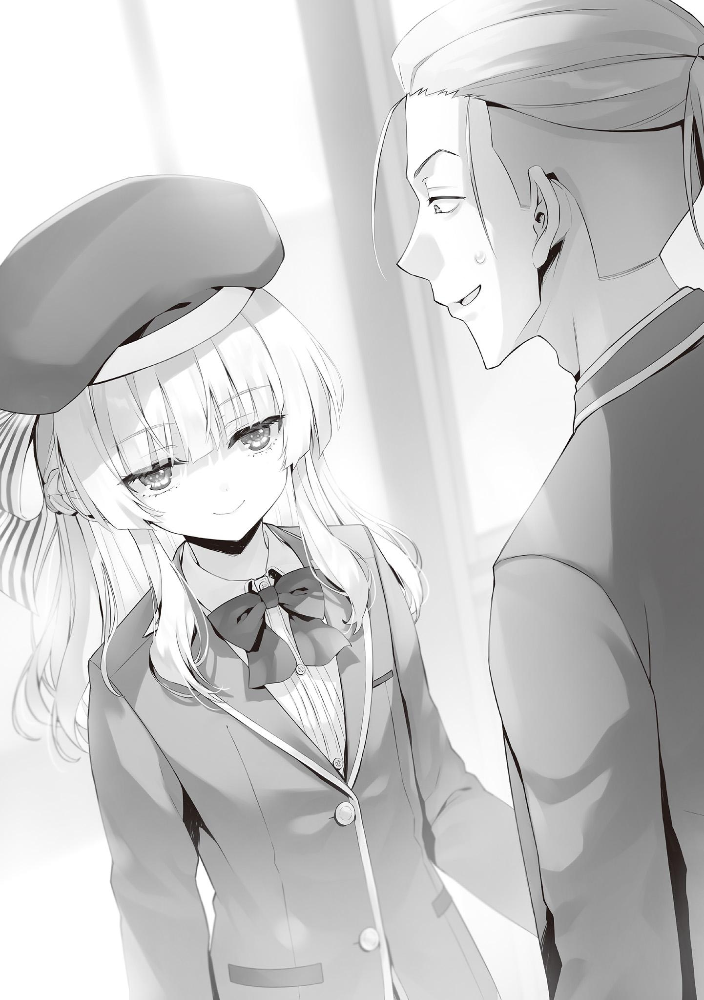
Desde la distancia, Hashimoto respondió con una mirada complicada.
—¿Quién crees que es el traidor que provocó la expulsión de Masumi-san?
—No paras de hacer preguntas. Por desgracia, no tengo ni idea. Pero,
¿tienes alguna pista?
Sakayanagi se rió y luego se levantó lentamente de su silla, apoyándose en su bastón.
Hizo una señal a Hashimoto para que se uniera a ella.
Alejándose del podio, Hashimoto hizo exactamente eso y se dirigió hacia Sakayanagi.
—Hashimoto-kun, tú eres el traidor que filtró nuestra información interna,
¿verdad? —preguntó ella.
Hashimoto se rascó la cabeza y suspiró pesadamente en respuesta.
—Me imaginaba que por eso me llamaste. No es descabellado sospechar de mí. Como seguramente sabes, siempre he estado barajando la posibilidad de cambiarme de clase. Lo admito. Pero piénsalo, ¿pondría en peligro mi puesto en la clase A? No tiene sentido.
Aunque reconoce que la sospecha es inevitable, se rebate enérgicamente contra ella.
—Ésa sería la opinión típica. Yo misma creía que no era probable ninguna traición manifiesta.
Normalmente era difícil imaginar a un estudiante de clase A recurriendo a un curso de acción inexplicablemente arriesgado.
Ni siquiera alguien como Sakayanagi, con una meticulosa atención a los detalles, podría prever y contrarrestar la traición de un camarada.
—No haré nada que ponga en peligro la clase. ¿De qué sirve si la persona que se espera que traicione realmente lo hace?
Plenamente consciente de que era el sospechoso más probable, Hashimoto afirmó que no traicionaría a la clase.
—Colaboraré para encontrar al traidor; entonces, demostraré mi inocencia.
—Entonces, ¿deberíamos hacer que empieces a ayudar inmediatamente?
Sakayanagi sacó su teléfono y lo colocó suavemente sobre el escritorio de Kamuro.
La pantalla mostraba a Hashimoto caminando con Ryuuen en el centro comercial Keyaki.
—Te reuniste con él antes de este examen especial, ¿verdad?
—Ese fue Ryuuen acercándose a mí por su propia voluntad. Simplemente me arrastró —replicó Hashimoto con gran desgana—. ¿Quién demonios tomó esas fotos? Fue tu asistente personal, Yamamura?
Antes de que ella pudiera responder, Hashimoto preguntó con un sentido de anticipación.
—¿Podemos acabar ya con esta farsa?
Dijo Sakayanagi en su típico tono a Hashimoto, que había estado negándolo todo.
—Supongo que no me creerás, diga lo que diga.
—Si insistes en justificarlo con excusas, ¿podrías enseñarme el historial de tu teléfono?
Ella rebatió la defensa de Hashimoto con una refutación. Su sospecha era a todas luces firme.
—¿Supongo que abandonarías tus sospechas si hiciera eso?
—Bueno, merece la pena intentarlo, ¿no crees?
—Efectivamente, si tuvieras que filtrar información durante el examen, lo más rápido sería mantener el teléfono encendido y enviar mensajes de texto y correos electrónicos en secreto. Así, el que dejara rastros sería el traidor. ¿Pero
te parece bien? Si revisas mi teléfono y no encuentras nada, tendrás que disculparte en consecuencia.
Hasta ahora habían sospechado de él, y no lo iba a dejar pasar; tenía la suficiente confianza como para decir esto.
—Si me equivoco, cumpliré tus expectativas. Pero lo que pido no es un historial de llamadas ni de chats. Después de todo, eso se puede borrar fácilmente.
Después de clase, Hashimoto tenía mucho tiempo libre.
Borrar esos historiales sería fácil.
—Entonces, ¿qué historial quieres ver?
—Lo que quiero ver es tu uso de los puntos privados, no el historial de llamadas o chats.
Habiendo dicho esto, ¿lo admitiría?
Ante las palabras de Sakayanagi, a Hashimoto se le hizo un nudo en la garganta.
—Pareces despreocupado, pero en realidad eres precavido. No puedes garantizar que Ryuuen-kun no te tenderá una trampa, aunque se alíen. Si te hubieran eliminado, asumirías el riesgo de ser expulsado. Puedes hacer un contrato con Ryuuen-kun por escrito para protegerte, pero eso deja evidencia física que quieres evitar tanto como sea posible. Por lo tanto, no es de extrañar que hayas tomado una gran cantidad de Puntos Privados como forma de garantizar las cosas. Si la promesa se cumple, se devolvería el importe íntegro.
Si no, se podrían confiscar los Puntos Privados. De esta forma, no habría traición a menos que ocurriera algo muy grave, ¿verdad?
Hashimoto sacó su teléfono e hizo una mueca con una sonrisa amarga.
—Caramba. No será tan sencillo como pensaba. Lo admito. Me he rendido.
La observación de Sakayanagi era correcta. Usando a sus compañeros de clase, Ryuuen reunió una gran cantidad de Puntos Privados para dárselos a Hashimoto.
Era su seguro para no ser eliminado.
—¿Cuánto te compró?
—La cuota de información no fue alta. Unos 500.000.
—Ese es un precio barato por la traición.
—Lo mantuve en ese nivel. Los Puntos Privados no son un problema, pero no te traicioné por eso.
Hashimoto enfatizó que los Puntos Privados no eran el objetivo principal.
Normalmente, no habría sido extraño perseguir inmediatamente sus verdaderas intenciones, pero Sakayanagi no lo hizo.
Ella ya entendía por qué la traicionó.
—¿Debería alabar a Ryuuen-kun, que te llevó a traicionarme esta vez?
—No me hagas reír. Como agente de información, lo elegí a propósito yo solo. Lo elegí porque no odia traicionar a nadie, y si se beneficia, lo aceptará sin dudarlo. Horikita e Ichinose no lo habrían aceptado, ¿verdad?
—Aunque diga que estaba pasando información a otras clases como informante, que los otros líderes de clase lo aceptaran es otra historia. Él es el único que lo aceptaría fácilmente.
—Sí. Así que, para el examen especial de hoy, inicialmente aposté por dos tercios de posibilidades de que nuestra clase se enfrentara a la suya.
Si la clase A se colocaba en una línea diagonal sin ataque ni defensa con la clase de Ryuuen en el examen especial, Hashimoto dijo que iba a observar sin hacer ningún movimiento.
Con esa decisión, la situación habría cambiado dramáticamente.
No hubiera sido extraño que la clasificación de la primera mitad lo decidiera.
—¿No piensas regañarme al menos una vez?
—No soy profesora. No tengo ganas de guiarte correctamente.
Hashimoto se encogió de hombros y se guardó el teléfono en el bolsillo.
—¿No deberías haberme registrado al menos?
—No tiene sentido. No hiciste nada ilegal como filtrar información en tu teléfono, ¿verdad? Es demasiado peligroso espiar tu propio teléfono. En lugar de eso, tomaste prestado un teléfono de un alumno de otra clase con anticipación y lo escondiste en algún lugar del aula, ¿verdad?
—¿Tanto me has escudriñado?
—No ganarás nada poniéndome a prueba.
Hashimoto, que trató de salirse con la suya, fue rápidamente contraatacado.
Si hubiera sido sospechoso, él habría sacado su teléfono sin dudarlo.
No se habría encontrado ninguna prueba aunque se hubieran revisado los celulares de todos durante el examen.
Sakayanagi, que sabía que sólo era una pérdida de tiempo, decidió pronto seguir usándolo para aprovechar los aspectos defensivos en su lugar.
La sensación de que los que la rodeaban tenían prisa no era más que una interpretación errónea.
—El escondite debe estar en el aula, pero lleva tiempo y esfuerzo encontrarlo. Podría haber un espía en el pasillo, alguien haciéndose el ignorante y armando alboroto, y mientras haya oportunidad, sacar el teléfono a la fuerza no sería destruir pruebas.
Sakayanagi, que tenía problemas de movilidad, no podía hacer movimientos ágiles para atraparlos in fraganti.
Si mostraba signos de susurrar a Kamuro o Kitō, Hashimoto habría dudado.
—Cuando el examen especial llegó a su fin y te ibas a casa, saliste del aula con Yoshida-kun, con quien no estabas tan unido. ¿Lo metiste en su mochila?
—Ajá, estás observando bien, princesa. Así que, después de todo, yo era el más sospechoso.
—Hubo elementos en tus recientes comentarios que me hicieron darme cuenta.
—¿Pero por qué? En lugar de pedirme que mostrara mi historial de Puntos Privados nada más llegar al aula, ¿por qué te has tomado la molestia de engatusarme para que confiese?
Sakayanagi no se enfrentó inmediatamente a Hashimoto cuando éste apareció en el aula.
Si aún no se hubiera decidido, sería otra historia, pero Sakayanagi tenía claramente una creencia firme.
—Es un acto de piedad hacia el traidor, incluyendo el hecho de que no hice nada durante el examen.
Por eso Sakayanagi creó dos momentos para que confesara.
Ella le estaba pidiendo que reflexionara sobre sus acciones y se quedara quieto.
—Es lamentable que no te dieras cuenta. Confabularse con otras clases y tramar una transferencia-puedo pasarlos por alto como una broma inofensiva-pero este acto cruza una línea diferente.
—Así es. Se puede decir lo mismo de muchos exámenes especiales: ser traicionado por tus compañeros es un golpe fatal. Una clase funciona como una comunidad que comparte un destino. Aunque puede haber cierta insatisfacción, y puede que no sigan las instrucciones, no traicionarían a la clase. Esto se debe a que afecta directamente a la desventaja de la clase y a la desventaja propia.
Por eso, incluso los alumnos que tenían quejas contenían sus frustraciones y aguantaban el día a día.
—Has cruzado una línea que no deberías haber cruzado.
—No lo negaré.
Hashimoto, de pie frente a Sakayanagi, reconoció la verdad sin inmutarse.
—La gente que me rodea no lo entenderá. Dirán: '¿Qué ganamos derribando a la Clase A? Pero no, eso está mal, esta clase no tenía ninguna
posibilidad de ganar desde el principio. Aunque yo no los traicionara, la clase está destinada a hundirse por debajo de la Clase B en el futuro. Así que tuve que crear una oportunidad de ganar, incluso mediante la traición.
—Así que estás luchando tu propia batalla.
—Fue difícil para mí también. Pero este examen especial fue una buena oportunidad para enviar una advertencia. La pérdida de puntos de clase no es una cuestión de desesperación. Sólo los que carecían de habilidad fueron eliminados. Pensé que era una oportunidad de oro. No traicioné a esta clase porque quisiera. La traición temporal fue porque quería ganar.
—Que te descubrieran formaba parte del plan. Más bien, estaba incluido en tu plan.
—Sin embargo, no pensé que sería hoy.
Pensó que se revelaría en una reunión de clase, o algo parecido.
Hashimoto quería evitar, si era posible, verse forzado a una situación en la que sólo estuvieran ellos dos.
—En el momento en que te diste cuenta de mi traición y descubriste mi plan, probablemente ya sabías el motivo, ¿no?
—Por eso creé este escenario.
Hacer una gran apuesta, aun a riesgo de exponerse al peligro, esa era la razón.
—A menos que hiciera esto, no podría convencerte de que hablo en serio.
Al final de las vacaciones de invierno, volví a sugerirte mi idea. Quiero traer a Ayanokouji a nuestra clase.
—Sí, ya escuché muchos de tus apasionados discursos.
La caza furtiva de Ayanokouji y el acto de traición.
Otros estudiantes podrían ladear la cabeza al no poder relacionar ambas cosas.
Sin embargo, Hashimoto comprendía muy bien la esencia y la naturaleza de Sakayanagi Arisu.
—Aunque esta vez hayamos perdido puntos de clase, aunque yo haya resultado ser el traidor, y aunque tengas que expulsarme, he decidido que no importa. Esa es la decisión que tomé.
Esto no era el final, era el principio.
La amenaza de repetir la traición hasta que Sakayanagi adoptara a Ayanokouji.
—Pareces creer sinceramente que no puedes graduarte como Clase A con mi guía.
—Reconozco que la Princesa es excelente. Pero aun así, estoy convencido de que no podremos detener el rápido progreso de la clase de Ayanokouji en un futuro cercano. Las posiciones de la Clase A y la Clase B
eventualmente se invertirán, y no tendremos oportunidad de superarlos después.
En otras palabras, nuestra posición actual es sólo una ilusión.
Continuó apasionadamente.
—La mejor estrategia para graduarnos como Clase A es que la Princesa y Ayanokouji estén en la misma clase. Con eso, nos convertiremos en una clase sólida e imbatible.
—Supongo que fue la decisión correcta no dejarte decir esto delante de los demás.
—¿No quieres admitirlo? Creo que mi idea es correcta.
—No puedo estar de acuerdo.
—Siento decírtelo, pero Ayanokouji es sin duda el más fuerte de nuestro año-
—¿Qué pretendes saber sobre Ayanokouji-kun?
Con un estruendo, la punta de su bastón golpeó firmemente el suelo.
—¡...!
Una clara ira se filtraba de la antes calmada Sakayanagi.
—Parece que estás muy metido con él. ¿Te has dado cuenta de tus fanáticas declaraciones?
Bajo aquella extraordinaria presión, Hashimoto se sintió intimidado por la pequeña Sakayanagi.
—¿Te enfada que te digan que no eres la mejor?
Efectivamente, ese era el enfado de Sakayanagi.
Pero, no era porque Ayanokouji fuera juzgado superior.
Era insoportable ver a este hombre, que creía ciegamente en Ayanokouji, ante ella.
Qué podía decir de él un hombre que ni siquiera conoce los antecedentes de Ayanokouji?
—Deja tu orgullo y trae a Ayanokouji a tu lado. Será lo peor si Ryuuen lo envuelve.
—La posibilidad de que Ryuuen-kun atraiga a Ayanokouji-kun es cero. Si tiene las capacidades que has evaluado, preferirá persistir como enemigo a derrotarlo directamente.
—Tal vez sea así ahora, pero ¿qué pasará cuando no pueda ganar? Si sigue antagonizando con él, y pierde su oportunidad de llegar a la Clase A, sus pensamientos podrían cambiar-
—Ellos no cambiarán. Ryuuen-kun y yo deseamos luchar contra un adversario digno. La obsesión por graduarse como Clase A es prácticamente inexistente.
Al escuchar estas palabras, Hashimoto cerró los ojos y dejó escapar un suspiro.
Sus propios comentarios se habían demostrado erróneos. La razón de la actitud de Sakayanagi, que hasta entonces había pasado desapercibida, era que había valorado muy positivamente a Ayanokouji durante mucho más tiempo del que Hashimoto se había dado cuenta.
Simultáneamente, se reafirmaba en que la habilidad de Ayanokoujiera, sin duda, genuina.
—Puede que esté cansado de tu comportamiento. Cuando me matriculé en esta escuela, intuí que tú, o Ryuuen, serían los líderes que se graduarían en la Clase A. Sin embargo, siempre tuve una extraña sensación de incomodidad.
Ahora, la razón es clara. Ninguno de ustedes tiene una verdadera pasión por graduarse de la Clase A.
Ganar a los rivales, y posteriormente permanecer en la Clase A.
Si se descubriera algo más importante que ser de la Clase A, sería fácilmente desechado.
—Por otro lado, Horikita e Ichinose poseen pasión. Es extraño. Las clases que no pueden ganar, que carecen de poder, tienen esta pasión, mientras que una clase capaz de ganar no la tiene. Sin embargo, si Ayanokouji y la Princesa forman equipo, la pasión no importará. Sin duda, dará lugar al nacimiento de una clase ganadora.
Mientras miraba a Hashimoto, Sakayanagi habló con indiferencia, ya que estaba satisfecha con su propia comprensión.
—Entiendo que dices que traer a Ayanokouji a nuestra clase es la condición absoluta para la victoria. Sin embargo, ¿no es conseguir un boleto de intercambio de clase y transferirse a la clase en la que él está inscrito el método más simple y seguro? Además de tener a Ayanokouji, la clase de Horikita-san también tiene una fijación por alcanzar la clase A.
—¿Era posible una posición así para mí?
—Por supuesto. Si me hubieras suplicado el billete de intercambio de clase porque deseabas transferirte, te lo habría dado encantada.
—Supongo entonces que tomé una decisión lamentable.
Sakayanagi señaló inmediatamente su comportamiento deliberadamente arrepentido.
—Me estás tomando el pelo. No habrías aceptado el boleto en esa situación.
—...¿Y eso por qué?
—Tus intenciones son transparentes. Aunque el futuro no está claro, no querrías renunciar a esta clase que actualmente ocupa la posición A. Sin embargo, Ayanokouji-kun te asusta. Quieres cambiar de clase, pero no hay garantías después de ir a la clase B. Por eso no usarás un billete. Si no puedes cambiarte tú, la única opción que te queda es cambiar a otro.
Los alumnos que cambiaban frívolamente de clase difícilmente podían ganarse la confianza.
Los obstáculos para conseguir el siguiente billete eran mucho mayores que antes.
Perdieron los medios para escapar del barco que se hundía en caso de emergencia.
—No tenemos intención de mantenerte a ti, traidor, en nuestra clase a partir de ahora. Ya no puedes escapar. Seguro que intentas negociar con tu entorno, pero no vales 20 millones de puntos. Nadie te va a elegir en serio.
Aunque intentes conseguir el billete de transferencia de clase, nunca te dejaré conseguirlo mientras controle la Clase A. Por supuesto, lo mismo se aplica a dejar entrar a Ayanokouji-kun.
En otras palabras, Hashimoto estaba en un punto muerto.
Pero no retrocedió. Desde el momento en que decidió traicionar a su clase, Hashimoto lo afrontó con firme determinación.
—Quería que lo entendieras, pero no se puede evitar. Seguiré haciendo lo mismo. Definitivamente convenceré a la Princesa para que traiga a Ayanokouji.
Esta era la gran apuesta de Hashimoto.
Si ocurría algo que permitiera a toda la clase expulsar a una persona, se encontraría en una situación desesperada.
Pero si tal cosa no llegaba, no sería fácil expulsar a Hashimoto.
—El examen especial no es la única posibilidad de expulsión. Lo entiendes,
¿verdad?
—Insistes en no aceptar mi oferta. Entonces, en el peor de los casos, no tengo más remedio que hacer que te expulsen. Después de eso, controlaré la Clase A y traeré a Ayanokouji.
Ante sus palabras, que podrían describirse como una completa despedida, Sakayanagi aplaudió secamente.
—Bien dicho. Es la frase más brillante que has dicho hoy, Hashimoto-kun.
Si vas a expulsarme, bienvenido sea. Por favor, demuéstramelo.
La ruptura completa dentro de la clase.
Fue el comienzo de una batalla que no terminaría hasta que uno de ellos fuera derrotado.
LA PREMONICIÓN DEL DESPERTAR
CERCA de la Sala de Personal, Sakayanagi esperaba tranquilamente sola.
—¿Estás esperando a que salga Kamuro?
—Por lo visto te enteraste de su situación en alguna parte.
—Kitou me lo dijo cuando fui a ver cómo estaba la clase A.
—No es muy comunicativo, pero nunca se sabe con las amistades.
—Pensé que podría haber sido inapropiado, pero decidí visitarlo. No es que fuéramos especialmente cercanos, pero esta será la última vez que pueda verla. Pensé en saludarla brevemente.
—Oh, ¿en serio?
La verdad era que saludar a Kamuro no importaba.
Pero si lo decía, Sakayanagi no podría negarse a que me quedara allí.
Me puse al lado de Sakayanagi y miré hacia la puerta de la sala de profesores.
—Debes haber comprendido lo que pasó en el examen, Ayanokouji-kun.
—Sí, tengo una idea bastante clara de la razón de tu derrota. Ya pudiste identificar al responsable?
—Sí, terminé esa tarea hace un rato.
—Ya veo.
Si ese era el caso, Sakayanagi se ocuparía de ese asunto más tarde.
Cuando el sol estaba a punto de ponerse, Kamuro salió tranquilamente.
Pensando que no iba a haber nadie, mostró una expresión de asombro que nunca antes habíamos visto.
—¿Qué están haciendo aquí?
—Te estábamos esperando, Masumi-san. ¿No deberíamos haberlo hecho?
—No es eso, pero ¿por qué vinieron?
Evidentemente, Kamuro aceptaba la realidad más de lo esperado.
—Hoy tenemos que despedirnos. Quería hablar contigo por última vez.
—¿No me digas que te sientes culpable? Eso no puede estar bien. ¿Qué pasa con Ayanokouji?
—Está en una excursión de estudios sociales.
—¿Eh...? Eh... Como siempre, eres incomprensible.
—Una estudiante sorprendente tuvo que retirarse. Mentiría si dijera que no siento curiosidad.
—¿Te sorprendo? ¿Aunque soy el tipo de persona que roba sin dudarlo?
—Eso es cosa del pasado. Al menos, en general, no eras de las últimas de la clase. No sé cómo Sakayanagi eligió a quién expulsar, así que es normal que me sorprenda.
Deliberadamente no lo mencioné, pero ella también era alguien cercana a Sakayanagi.
—La expulsión se eligió por sorteo.
—Eso es bastante...
—¿Crees que tomé una decisión inusual?
—No lo sé. Preferiría preguntarle a Kamuro cómo se siente ya que fue elegida para ser expulsada por lotería.
No estaba seguro de que fuera a responder con sinceridad ahora que había sido expulsada, pero pregunté de todos modos.
—¿Puedes preguntarme algo así con una cara perfectamente seria? Qué raro.
Kamuro se puso a pensar, con cara de sorpresa. Quizá no esperaba que le preguntaran por sus sentimientos.
—¿Cómo me siento? Me siento extraña. Hasta esta mañana, llevaba una vida escolar normal. Incluso pensaba en cosas triviales, como cómo pasar mi próximo día libre. Entonces, de repente, me expulsan. Fue completamente inesperado.
Como no era la primera alumna a la que expulsaban, era comprensible que le faltara sentido de la crisis. Seguramente, ni siquiera Sakayanagi pensó que ella perdería.
—Es culpa mía. Te hice algo terrible, ¿no?
—No, está bien...
Kamuro se opuso inmediatamente a las palabras de Sakayanagi, que estaban cerca de una disculpa.
—No te estoy culpando. No espero que hagas nada. Siempre he pensado que no importaría si un día me expulsaran.
Kamuro al principio no se portaba muy bien. Parecía relajada en todo momento, quizá porque se había decidido desde el principio.
No podíamos quedarnos charlando fuera de la sala de profesores para siempre; Kamuro empezó a caminar a su propio ritmo.
Sakayanagi, que tenía mal las piernas, la persiguió un poco más rápido de lo habitual.
No había problema en ir en la misma dirección, ya que de todos modos se dirigían a casa.
—Estaba dispuesta a aceptar una o dos quejas...
—Estás siendo innecesariamente entrometida.
—¿Qué planeas hacer después de dejar la escuela?
—Aunque me expulsen, hay varias preparatorias que me aceptarán como estudiante transferida si apruebo los exámenes. Mis padres me están presionando para que me gradúe de la preparatoria, así que por ahora lo estoy considerando.
Al parecer, Kamuro ya había decidido su camino, incluyendo esas opciones, en un corto espacio de tiempo.
Poco a poco, la distancia entre Kamuro y Sakayanagi se fue ampliando.
Si Sakayanagi no mantenía su ritmo, sería difícil incluso seguirla. Trató de apresurarse para alcanzarla, pero tropezó hacia delante debido al movimiento desconocido y acabó golpeándose contra el suelo.
—¿Qué estás haciendo?
Kamuro, que se dio la vuelta y suspiró, volvió y levantó con cuidado a Sakayanagi.
—A partir de mañana, no estaré aquí, así que encuentra un sustituto rápidamente.
—Entiendo... Masumi-san-
—¿Qué pasa?
Kamuro respondió, sonando molesta.
—No, no es nada.
Sakayanagi empezó a decir algo, pero se detuvo.
Kamuro ladeó la cabeza, le dio a Sakayanagi su bastón después de recogerlo, y comenzó a caminar de nuevo.
Una vez más, Sakayanagi comenzó a cojear, persiguiendo a Kamuro.
—¿No tienes nada que decir? —preguntó Sakayanagi.
Kamuro se giró una vez más cuando se acercaban a la entrada principal.
—¿Eh? ¿Quieres que te culpe? ¿Que te pregunte por qué me echaste?
—No me refiero a eso. Sólo tengo la responsabilidad de escucharte.
—Qué tontería...
Kamuro, a punto de decir algo, cambió de opinión cuando vio los ojos de Sakayanagi.
—Honestamente, tú... aunque eres inteligente, eres algo estúpida. Me estoy dando cuenta de esto ahora.
—No puedes dejarlo así. ¿Qué quieres decir?
—Si tienes la responsabilidad de escuchar, entonces escucha en silencio.
Sakayanagi la superó con éxito.
—Entonces, aquí está. No siento ningún afecto por esta escuela, pero prométeme una cosa.
—¿Una promesa? ¿De qué se trata?
—No se trata de mí. Sólo asegúrate de que el traidor de la clase siga el mismo camino. ¿Puedes prometer eso?
—¿Es ese tu deseo?
—Sí, sólo eso. ¿Puedes hacerlo?
—Lo prometo. No perdonaré al traidor. Prometo deshacerme de él como sea. Por supuesto, no dejaré que la clase pierda como consecuencia.
Kamuro asintió a Sakayanagi, que hizo la promesa, y luego volvió sus ojos hacia mí mientras yo estaba detrás de ellas.
—Tú también eres responsable de comprobar si Sakayanagi ha cumplido su promesa, Ayanokouji.
—Parece una responsabilidad innecesaria, pero la aceptaré.
—Entonces está bien. Lo siento, pero aquí es donde nos separamos. Ya no soy estudiante de esta escuela, y no necesito cuidar de ti, ¿verdad?
Diciendo esto, Kamuro comenzó a alejarse, ignorando por completo a Sakayanagi mientras se tomaba su tiempo para cambiarse los zapatos.
No se detuvo ni una sola vez y desapareció en dirección al dormitorio.
Mañana por la mañana, Kamuro ya no estaría en esta escuela.
No sólo Sakayanagi, sino muchos en la clase no estaban preparados para la retirada de Kamuro.
—Se mantuvo fiel a sí misma hasta el final.
—Cierto.
—Necesitaré algo más de tiempo. Deberías adelantarte.
Siguiendo a Kamuro, yo también salí de la escuela.
Después de todo, parecía que para Sakayanagi, Kamuro no era simplemente una compañera de clase.
PARTE 1
Di un pequeño paseo y finalmente llegué cerca del banco donde me encontré con Morishita hacía una semana.
No había nadie más y tampoco había señales de nadie. Me senté solo en el banco.
Entonces, debieron de pasar unos diez minutos.
Apareció la persona a la que esperaba, caminando a un ritmo mucho más lento de lo habitual.
Normalmente tendría un campo de visión mucho más amplio, pero Sakayanagi no se había fijado en mí.
—Tardaste bastante en prepararte, ¿verdad?
Cuando la llamé, se sorprendió un poco, pero lo disimuló rápidamente.
—¿Podría ser... que me estuvieras esperando?
— Se me olvidó preguntarte también por tus pensamientos actuales.
—Ya veo. Las oportunidades de presenciar la derrota de la Clase A no se presentan a menudo.
—No fuiste superada en el enfrentamiento. Viste las debilidades de las otras clases y las explotaste con precisión; tu defensa fue excelente. Yo diría que superaste claramente a los tres líderes.
—Aunque, no puedo reírme ya que fui yo quien perdió.
—En efecto.
—Pero es lamentable. No creo que mis sentimientos hayan cambiado en lo más mínimo. Si la causa de la derrota fuera mi falta de habilidad, la historia sería diferente.
—Esa puede ser tu conclusión, sin embargo, no es lo mismo cuando se trata de los alumnos expulsados, ¿verdad?
—Si hay eliminaciones en la clase derrotada, alguien es expulsado; lo sabíamos desde el principio.
Sakayanagi se negó obstinadamente a reconocerlo, pero yo continué.
—Aun así, para ti, la derrota... No, la expulsión de Kamuro debe haber sido inesperada.
—Por favor, no me subestimes. Claro que Masumi-san trabajó a mi lado durante dos años, pero no era una alumna extraordinariamente excelente ni especialmente obediente. Su expulsión no tiene prácticamente ningún impacto en la clase.
Ella respondió con una carcajada, indicando un malentendido.
—Esto no parece propio de ti, Sakayanagi. Pareces lejos de tu compostura habitual.
—¿Crees que esto no es propio de mí? No lo creo.
—Deberías haberte dado cuenta ya que estoy aquí interrogándote.
Si la expulsión de Kamuro no hubiera afectado a Sakayanagi para nada, yo no estaría esperando aquí.
No me molestaría en despertarla así como así.
—Desde luego, tienes una perspicacia excepcionalmente alta, ¿pero no eres demasiado confiado?
—No sé.
Demostrando que no cambiaba de opinión, por fin, Sakayanagi también lucía ligeramente preocupada.
—La expulsión de Masumi-san afectó a mis sentimientos, ¿es eso lo que quieres decir?
—Para decirlo claramente, eso es exactamente lo que estoy diciendo.
—No estoy de acuerdo.
—Entiendo tu reticencia a admitirlo. Si lo admites, también tendrías que reconocer que tomaste la decisión equivocada.
Si ella creía que debería haber elegido a alguien que no fuera Kamuro entre las eliminaciones, nace el arrepentimiento.
—Sabes que eres fuerte. Por eso no sientes mucha empatía por las debilidades de los demás. Tiendes a no apoyar sus debilidades.
—Esa es una frase que no quiero oír de ti, Ayanokouji-kun.
—Claro, también se aplica a mí, pero tú eres poco entusiasta y no te comprometes del todo. Como tienes la sensibilidad de una persona normal, inconscientemente entiendes parte de ella.
Aunque teníamos mucho en común, también teníamos muchas diferencias.
—No lo entiendo. Qué estás tratando de decir, Ayanokouji-kun? Estás sugiriendo que sería mejor que yo fuera más débil? Debería haber sido egoísta y haber deseado quedarme con Masumi-san?
—Normalmente, los líderes no pueden ser egoístas. Pero si quieres ganar de aquí en adelante, eso es lo que deberías haber hecho. Para ser fuerte, deberías haberte quedado con Kamuro. Deberías haber compilado razones para expulsar a los otros, ya sea refiriéndote a la OAA o de otra manera.
Pero su orgullo se interpuso.
En su inesperado fracaso, tomó la decisión equivocada, fingiendo estar tranquila y decidiendo que cualquiera de los eliminados podía marcharse.
Una vez perdida, la parte de ella que se marchó no podía volver.
Sakayanagi tendrá que seguir luchando en este estado deficiente de ahora en adelante.
—No te preocupes. Su presencia no afecta a nada. Ya no perderé.
—Probablemente lo harás. Si desafías el examen de fin de año tal como están las cosas, será una repetición de esta vez.
Sakayanagi no quería admitir que la situación estaba cambiando significativamente.
—Ya veo, ahora entiendo tu objetivo. Necesitas que reciba daño. Por eso quieres que piense que estoy debilitada por este suceso. ¿Intentas perturbarme mentalmente? ¿Estoy equivocada?
—¿Por qué necesitaría que estuvieras debilitada?
—No es conveniente que la clase A destaque, ¿verdad? Para crear el desarrollo ideal que deseas, quieres entrar en el tercer año con las cuatro clases en una condición competitiva. Ese es el propósito, ¿verdad?
—No te equivocas, pero eso no es suficiente.
—¿Cómo es incorrecto?
—Que la clase A sea líder en este momento no tiene importancia. Mi objetivo es sacar el máximo potencial de cada clase. Para hacer esto, me entrometeré con Ryuuen, Ichinose, Sakayanagi, quien sea.
—No me gusta. No me gusta la idea de ser asistida por ti.
—Pero por eso estoy aquí. Estoy aquí para ayudarte.
Sakayanagi, que había estado irritantemente verborreica, finalmente dejó de hablar.
Sakayanagi fue astuta desde el principio. Ella lo sabía desde el principio. Sólo fingía no saberlo.
—Tu error de cálculo fue que la presencia de Kamuro era mayor de lo que pensabas a simple vista. Tomaste la decisión de echarlo a suertes porque querías pensar que Kamuro no era diferente del resto.
La retrospectiva siempre es 20/20. Debería haber sido fiel a sí misma, incluso si eso significaba ganarse el resentimiento.
Por supuesto, el orgullo y la negligencia cuando pensó que no perdería podrían ser la causa de esta mala decisión.
—Yo...
Sakayanagi no pudo seguir viéndome a los ojos, su mirada se desvió.
Se quedó mirando a lo lejos, exhalando en silencio.
—No he hecho amigos en toda mi etapa en primaria y secundaria. No podía mezclarme con gente inmadura de un nivel intelectual inferior.
Reflexionó sobre sí misma desde su infancia.
—No ha cambiado ni siquiera en esta escuela. Masumi-san, Hashimoto-kun y Kitou-kun son iguales. Estaban cerca de mí, pero sólo para ser utilizados como herramientas. Nada más y nada menos. Los veía como extraños.
Sakayanagi pasó su vida escolar sin reconocer como amigos a las personas que la rodeaban.
Pero la línea que separa el conocimiento de la amistad a menudo se difumina.
Es imposible para cualquiera determinar exactamente dónde está esa línea.
—Así que pensé que no importaría quién desapareciera...
Sus palabras se detuvieron ahí.
Seguramente a estas alturas, ni siquiera Sakayanagi podría negar la verdadera respuesta que ella podía ver.
—Parece que, en algún momento, Masumi-san se convirtió en mi amiga.
Aunque antes hubiera utilizado el término "amiga", el peso que tenía ahora era muy diferente.
El significado cambiaba mucho dependiendo de si realmente aceptaba este hecho o no.
Simplemente se había engañado a sí misma creyendo que ser inteligente significaba no dejarse influenciar por los demás.
—... De cualquier manera, no es propio de mí, ¿verdad?
—Puede que sí. Al menos ahora te das cuenta de que perder a Kamuro te hizo más débil, pero también puede hacerte más fuerte.
Sería un problema si ella tropezara y no pudiera volver a levantarse con sólo esto.
—Así que siempre has estado en la sombra, dando consejos como este a varias personas. No me extraña que todos estén creciendo.
—Aún están lejos de hacerlo.
Sakayanagi no tenía nada más que decir. Se limitó a inclinar la cabeza lenta y cortésmente.
Sentí que no podía quedarse más tiempo conmigo.
Me despedí de su pequeña figura y volví a sentarme en el banco.
—Al final, la expulsión de Kamuro se convirtió en una bendición.
Ninguna otra variable había influido tanto en las emociones de Sakayanagi como ahora.
Sin necesidad de controlar la situación, sus puntos de clase también se redujeron.
Era una prueba de que cada clase estaba ganando fuerza y volviéndose más capaz de luchar.
De aquí en adelante, la propia Sakayanagi necesitaba pensar mucho, darse cuenta de las cosas y crecer significativamente.
Y así, su viaje para confrontar sus emociones nunca experimentadas comenzó.
Ryuuen se despojó de una capa y comenzó a avanzar.
No cambiando sus tácticas anteriores, sino más bien, refinándolas aún más.
A partir de ahora, expandiría sin piedad su poder en su entorno.
Quedaban unos dos meses para el examen de fin de año.
—Supongo que debería seguir tranquilamente con los preparativos.
Sobre Karuizawa Kei.
Sobre Ichinose Honami.
Y sobre la clase.
Con el tiempo que me queda en la escuela, empecé a tomar medidas para convertirme en una presencia memorable para los que me rodean.
PALABRAS DEL AUTOR
Corona, influenza, huesos rotos y una hernia en el cuello. Sólo este año, yo, Kinugasa, he sido molido a palos por esta increíble avalancha de aflicciones. Sí, sigo vivo. Soy Kinugasa.
Pero el dolor de espalda y el entumecimiento de la hernia han sido graves, y parece que podrían seguir así durante un tiempo. Pude escribir este manuscrito antes de que aparecieran los síntomas, lo cual fue una suerte, pero de aquí en adelante no puedo asegurar que no me afecte... Estos días, estoy luchando, llegando a mi límite después de sólo sentarme en una silla durante una hora.
Bueno, no tiene sentido hablar de todas estas cosas sombrías, así que pasemos a un tema más alegre.
¡¡¡¡¡¡Enhorabuena a los Tigres de Hanshin por ganar el campeonato de liga por primera vez en 18 años!!!!!!
¡Gracias por la inspiración! ¡Gracias por la emoción! ¡¡¡¡¡Un aplauso para los Tigres~!!!!!
Sí. Por favor, déjenme decir esto. Está bien, ¿verdad? Después de todo, han pasado 18 años. Hice bastantes compras. Sombreros y camisas, preguntándome dónde usarlos. Por supuesto, un viejo como yo va a comprar cosas como pegatinas y toallas.
Esta vez, sólo hay una página de texto... lo siento, no parece que quede espacio para hablar del contenido del volumen 10. Lo haré lo mejor que pueda la próxima vez. ¡Espero no perder por el dolor de espalda...!
HISTORIAS CORTAS
MORISHITA AI
EN LA FRÍA BANCA
HOY ESTABA esperando en un lugar determinado para encontrarme con Ayanokouji Kiyotaka.
Era una banca por la que siempre pasabas de regreso de la escuela al centro comercial Keyaki.
Me senté sola y pasé tranquilamente mi tiempo aquí, sin hacer nada en particular.
Entonces, de repente sentí que ya no me gustaba la posición actual de mi cuerpo.
—Mm... No puedo descansar bien.
Aunque apoyara la espalda en la silla, o estirara los músculos de la espalda, no me servía de nada.
¿Qué debía hacer para liberarme de este malestar?
Tras pasar por prueba y error, mis problemas acabaron resolviéndose tumbándome boca abajo en la banca.
—Esto es cómodo...
Fue especialmente bueno que el frío tablón de madera golpeara mi mejilla.
Todo lo que necesitaba hacer ahora era sentarme y esperar su llegada.
Ah, pero ya que no estoy sentada... ¿está bien 'dormir y esperar' en vez de eso?
...Oh no importa.
De todos modos, pasé mi tiempo en esta posición relajante.
—¿Está muerta?
Al oír por fin su voz, me sentí tranquila.
Si hubiera tenido que esperar más, podría haber muerto congelada.
Casi empezaba a dormitar y estaba a punto de dormirme.
—No, no lo está.
—Eso es verdad. No estoy muerta.
Respondí a la certera respuesta de Karuizawa Kei.
—¿Qué haces en un lugar así?
—¿Tienes curiosidad?
—Sería una mentira si dijera que no me interesa pero...
—Entonces, te lo explicaré. Estaba, lo creas o no, esperándote, Ayanokouji Kiyotaka.
Si uno se fijaba en las circunstancias que habían ocurrido hasta el momento, podía entender que él no era un estudiante normal.
Por eso quería observarlo más de cerca y saber más de él.
Quería confirmarlo una y otra vez con mis propios ojos.
Siempre es mejor tener más compañeros con los que compartir información, tratando los hechos como hechos.
Para que la clase A siga siendo la clase A.
SHIINA HIYORI
UNA PEQUEÑA CHISPA
SINCERAMENTE le comuniqué mis ansiedades a Ayanokouji-kun. Normalmente, no discutiría asuntos que pudieran exponer las debilidades de mi clase con alguien de otra clase.
Pero Ayanokouji-kun es diferente.
Él no explotaba esas ansiedades. En cambio, sabía que hablaría por mi bien.
—No era un enfoque convencional. Más bien, era más bien pisar con cuidado cuando se trataba de los puntos fuertes de la clase.
Entendiendo esto, Ayanokouji-kun me aseguró.
La ansiedad que sentía.
Una pequeña chispa.
Era un problema interno al que se enfrentaba mi clase.
Quizás sólo Katsuragi-kun en mi clase entendía esto. Él era mucho más severo que yo, y siempre estaba ahí, vigilando las cosas de cerca.
Compartiendo de cerca tanto lo bueno como lo malo, y dando los consejos apropiados.
—Las partes necesarias para ascender a la Clase A también sirven como obstáculos. Es preocupante.
Dos caras de la misma moneda. Un problema difícil de resolver.
—Si hay un estudiante que se de cuenta de esto, todavía hay esperanza para la clase —dijo Ayanokouji-kun, aparentemente comprendiendo la situación y dispuesto a dar un paso atrás.
—Pensaba ir a la biblioteca más tarde, ¿te gustaría acompañarme?
—No, paso. Tengo otras cosas en la cabeza.
—Tienes muchas cosas en la cabeza, ¿verdad, Ayanokouji-kun?
—Aunque no hay nada realmente serio.
—Entonces vayamos juntos la próxima vez.
Asintiendo, Ayanokouji-kun se separó y yo decidí dirigirme sola a la biblioteca.
—Yo tampoco lo estoy haciendo bien, ¿verdad?
En lugar de centrarme en mi clase, encontrarme con Ayanokouji-kun casi me hizo olvidar porque me lo pasé muy bien.
Después de todo, Ayanokouji-kun tiene una novia a la que debería cuidar.
Es imperdonable siquiera pensar de esta manera, ¿no?
SUZUNE HORIKITA
DESPERTAR INCONSCIENTE
—NO ES ALGO que pueda compartir. Quiero guardarme ciertas cosas para mí.
Aunque estaba extremadamente interesada en el pasado de Ayanokouji-kun, comprendí claramente que indagar más sería de mala educación.
—Será mejor que te tomes un descanso para calmarte.
Eso era cierto. Mi garganta estaba increíblemente seca, y la fatiga estaba empezando a aparecer.
—Sí, tienes razón...
Siguiendo su consejo, levanté la taza de café que había olvidado por completo.
El café que creía aún caliente se había enfriado mucho más de lo que había previsto.
—Se ha enfriado.
—Se ha enfriado, ¿verdad?
Cuando respondí distraídamente, Ayanokouji-kun dijo algo parecido.
—No me copies.
—Por favor, no me copies.
Me disgustó, así que respondí así. Sin embargo, de alguna manera, las mismas palabras volvieron a superponerse casualmente.
En ese momento, la superposición de palabras, de lo que me había quejado hacía un momento, me pareció extrañamente divertido.
Acabé riéndome.
Él, ante mis ojos, también pensó que parecía algo gracioso y se rió un poco.
—¿Eh?
—¿Qué pasa?
La expresión de su cara era la misma de siempre.
Pero la cara que mostró justo antes era, cómo decirlo, demasiado renovada...
Me causó una impresión inolvidable.
No supe cómo responder a su inquisitiva pregunta.
Me limité a transmitir lo que veía tal cual.
—No... eso... Es que... te vi sonreír un poco...
—¿Eh? ¿Y qué tiene eso de malo?
—Es que siento que nunca había visto esa expresión en tu cara en los últimos dos años...
—Qué grosera. No soy un bebé que acaba de aprender a sonreír.
Sonreír, expresar alegría, era algo común en alguien. Pero el que estaba frente a mí no era sólo un "alguien", era Ayanokouji-kun.
Estas expresiones parecen fuera de lugar para él, así que...
—Tienes razón, podría haber sido un momento raro.
En respuesta a mi observación, por alguna razón Ayanokouji-kun reflexionó profundamente.
—Me pregunto por qué sonreí. ¿Lo sabrías si fueras tú quien sonriera?
Lucía una expresión seria.
No podía imaginar que alguien preguntara tan seriamente por algo tan trivial.
En ese momento, brotó en mí un sentimiento de asombro.
Inesperadamente abrumada por el deseo de apartar la mirada de sus ojos francos y su pregunta, sentí el impulso de salir corriendo.
—Yo... yo tampoco lo sabría si me lo preguntas con esa cara tan seria.
Así que salí corriendo. Tuve que seguir mis instintos y salir corriendo, haciendo caso a la orden de mi instinto.
—Entonces, no es que haya pasado algo especialmente gracioso, ¿verdad?
Su insistente interrogatorio continuó. No tuve más remedio que ponerle fin a la fuerza.
—...Como ya dije, no lo sabría aunque me lo preguntaras. Por culpa de tu extraña forma de pensar, yo también me siento como una tonta por reírme...
Decidí irme a casa después de terminar mi insípido café. Sabía a agua.
No sabía la razón, pero me sentía incómoda.
No cabía duda.
SAKAYANAGI ARISU
SENTIMIENTOS DE PREOCUPACIÓN
—NO ME GUSTA. No me gusta la idea de que me ayudes.
—Pero por eso estoy aquí. Estoy aquí para ayudarte.
Sin embargo, ni siquiera se inmutó y simplemente explicó sus razones para estar allí. Desvergonzadamente dijo palabras tan embarazosas que normalmente yo no podría articular.
De hecho, era un movimiento típico de Ayanokouji-kun.
—Tu error de cálculo fue que la presencia de Kamuro era mayor de lo que pensabas a simple vista. Tomaste la decisión de echarlo a suertes porque querías pensar que Kamuro no era diferente al resto.
Sus palabras calaron en mi corazón. Una clara manipulación de los sentimientos de la gente, comentarios obvios que normalmente me parecen repulsivos.
Sin embargo... resuenan profundamente en mi corazón. Palabras de nada menos que Ayanokouji-kun.
—Yo...
Este tipo es verdaderamente malvado. Sin importar si alguien es bueno o malo, él simplemente lo ignora y pasa por encima de sus barreras protectoras.
Encontró la brecha en mi corazón que no le mostré a nadie.
—No he hecho amigos durante toda mi época en la primaria y secundaria.
No podía mezclarme con gente inmadura de un nivel intelectual inferior.
Cosas que sentía. Cosas que sabía y fingía no notar.
Él se introdujo descaradamente en eso.
—No ha cambiado ni siquiera en esta escuela. Masumi-san, Hashimoto-kun y Kitou-kun son iguales. Están cerca de mí, pero sólo para ser utilizados como herramientas. Nada más y nada menos. Los veo como extraños.
Antes de darme cuenta, me encontré hablando. Quería que él lo supiera.
El que audazmente me entendía, el que nadie más podía entender.
—Así que pensé que no importaría quién desapareciera...
En este examen especial, cometí un error, y él me había preparado un lugar para arrepentirme.
—Parece que, en algún momento, Masumi-san se convirtió en mi amiga.
Me sentí aliviada después de confesarlo.
Es verdaderamente... una persona atroz.
Me quedé mirando a Ayanokouji-kun, pensando lo mismo una y otra vez.
CHABASHIRA
UNA LECCIÓN ESPECIAL PARA ADULTOS
EN UN CIERTO RECESO, los alumnos recibimos un mensaje de la escuela. Era sobre un centro de atracciones que se estaba construyendo en el sótano del centro comercial Keyaki. Parecía una fusión entre un pabellón de juegos y un casino, y yo, como me había tocado la lotería, decidí echar un vistazo a la preapertura.
Sólo había algunas personas, pero ya pude distinguir a algunos estudiantes que habían recibido una invitación.
Sin embargo, entre ellos, me fijé en nuestra profesora, que intentaba pasar desapercibida pero destacaba por su extraordinario atuendo: un disfraz de conejita.
—¿Dejó de ser profesora y consiguió un nuevo trabajo?
—¡Ah, Ayanokouji!
Chabashira-sensei, que casi cayó hacia atrás por la sorpresa, no estaba vestida con su traje habitual, sino con un traje de chica conejito.
—¿Qué es todo esto?
—...Esto es... trabajo.
—Bueno, no creía que se convirtiera en conejita sólo por diversión...
Quizá mi tranquila respuesta ayudó a Chabashira-sensei a recuperar parte de su compostura, ya que se aclaró la garganta.
—Un casino dentro de una escuela... ¿no crees que es como el agua y el aceite?
—Claro que sí.
Mirando a su alrededor, había póquer, ruleta y muchos otros juegos que parecían demasiado estimulantes para los estudiantes.
—Ahora mismo, hay un esfuerzo por enseñar el manejo del dinero. Por ejemplo, enseñar la mecánica de las acciones y dejar que los alumnos practiquen el comercio. Este casino es uno de esos experimentos.
—Así, apostando dinero, se enseña su valor. Puede que funcione bien, pero ¿no hay riesgo de que salga mal?
—Por eso han invitado sólo a un grupo selecto de estudiantes. Viendo que tú eres uno de ellos, es seguro que han elegido a los que pueden participar con moderación.
Efectivamente, ahora que lo menciona, puede que sea así.
La mayoría de los participantes eran estudiantes con altas capacidades y aptitudes académicas.
Para decirlo sin rodeos, estudiantes como Ike u Hondō no se veían por ningún lado.
—Entonces, echaré un vistazo.
Estaba interesado, así que decidí probar varias cosas.
Ese era el plan, pero Chabashira-sensei me agarró del hombro.
—¿Qué pasa?
—Me ha salvado tu serena compostura. Como agradecimiento, te enseñaré cómo se hace.
—No, gracias.
Me deshice de su mano y empecé a alejarme.
Chabashira-sensei se apresuró a volver en sí.
—Lo siento, te diré la verdad, así que por favor coopera.
—Ya me lo imaginaba. Por su expresión, está claro que tiene problemas.
Tal vez uno de los profesores debe primero dar una charla a los alumnos de forma individual, ¿no?
Mirando a los otros estudiantes, pude ver que cada uno tenía un profesor a su lado, así que lo había predicho.
—... ¿Entendiste eso y trataste de huir?
—No intentaba huir, pero pensé que no sería necesario que me enseñara.
— Definitivamente quiero enseñarte, Ayanokouji.
—¿Le da vergüenza ser vista por otros estudiantes con ese atuendo? Sólo estoy adivinando.
Recibí una mirada feroz al dar mi respuesta.
—Vamos, Ayanokouji.
Aparentemente, ella no tenía intención de seguir discutiendo el atuendo de conejita y comenzó a caminar.
Siguiéndola a regañadientes, nos detuvimos ante una mesa de póquer.
—Este asiento está libre, perfecto. ¿Conoces las reglas del póquer?
—Sí, hasta cierto punto.
—Aquí usamos póquer cerrado simple.
Comprabas las cinco cartas al principio, y luego podías intercambiar cualquier número de ellas una vez para formar una mano. Ésas eran las reglas del juego.
—Jugaré contra ti.
—No me importa, ¿pero recibo algo?
—Por desgracia, no hay nada. Pero por otro lado, no hay penalización por perder, así que no hay necesidad de desconfiar.
En ese caso, podría limitarme a disfrutar del juego...
A la señal de Chabashira-sensei, el crupier repartió las cartas.
—Ahora, vamos a comprobar tu mano.
—Antes de eso, ¿puedo preguntar algo?
—¿Qué es?
—Es menos interesante sin nada por lo que apostar.
—No voy a negar eso, pero esa es la regla. Por el momento, la escuela no ha fijado ninguna condición para las apuestas.
—Entonces, ¿por qué no llegamos a un acuerdo entre usted y yo, Chabashira-sensei?
—...Bueno, eso es cierto. Pero nada de apostar dinero.
—Entiendo. Si gano, déjeme sacarle una foto con ese traje de conejita.
—¿Qué?
—Si no se trata de dinero, la escuela no debería quejarse. Además, así se añade algo de tensión, ¿no?
Chabashira-sensei, ansiosa por volver a su antigua apariencia, sabía que no podía permitirse perder la inevitable batalla.
—Si gano, tendrás que disfrazarte de algo embarazoso. Te parece bien,
¿verdad?
—Entendido. ¿Empezamos entonces?
—Ah, tan despreocupado... ¡De acuerdo!
Comprobé mis cinco cartas sin dejar que Chabashira-sensei las viera.
Mientras tanto, parecía que la coneja que tenía delante... no, Chabashira-sensei estaba haciendo lo mismo.
Con un rostro algo sombrío, Chabashira-sensei pidió intercambiar tres cartas.
Por mi parte, pedí intercambiar dos.
—Es bueno tener algo en juego.
Pero esta vez, sólo se trataba de intercambiar cartas y revelar las manos. No había estrategia con fichas, así que era justo decir que todo se reducía a la suerte del azar.
—Mi mano es... un par de dos.
Reveló su mano. Las dos cartas que tenía eran una pareja, y las tres que sacó formaban otra pareja.
—Lástima. Mi mano es un trío.
En realidad, había apostado por una escalera de color. Por suerte, pude sacar dos cartas del mismo número, ganándole a Chabashira-sensei.
Mirando a la conejita enfurruñada que golpeaba la mesa, saqué mi teléfono.
—Ahora, como prometimos... lo entiende, ¿verdad?
—Maldita sea... ¡Mátame!
—No, no la mataré...
No sabía qué estaba malinterpretando, pero hice que Chabashira-sensei, que cerraba los ojos humillada, se pusiera contra la pared.
Luego, sin piedad, le tomé una foto con mi teléfono.
—La humillación... ¡La humillación
Durante un rato, Chabashira-sensei siguió murmurando eso.
Después, me desperté en la cama.
—Bueno, tenía que ser un sueño... obviamente.
Pero más tarde, me aterrorizaría la foto guardada en mi teléfono.
Comentarios del autor
Shōgo Kinugasa
Durante el festival escolar, mi familia de cuatro miembros se metió de lleno en una ilustración para descubrir las diferencias. Gané sin contenerme, pensando que había demostrado la dignidad paterna. Pero siento que el afecto de mi hija por mí ha disminuido un poco.
Tomose Shunsaku
Tuve el placer de dibujar a Chabashira-sensei como una conejita. Queda muy bien avergonzada con varios atuendos. Personalmente, disfruto dibujando el traje de conejita con brillos y reflejos.
(Nota: no sé si haya ilustración pero yo no encontré una.)
VOLUMEN 10.25
A PARTIR DE ESE MOMENTO
DESPUÉS DE TERMINAR EL EXAMEN ESPECIAL DE SUPERVIVENCIA Y
ELIMINACIÓN, llegó el primer descanso.
Fui al gimnasio sin que nadie me lo pidiera.
Después de entrenar solo un rato y sudar la gota gorda, me dirigí al área de descanso. Sentado en una silla, en parte para refrescarme, recordé algo y saqué mi teléfono.
Entonces, busqué cierta palabra.
—...Ya veo.
Sólo pude convencerme después de mirar el artículo que apareció.
Mientras admiraba a solas las fotos del artículo, escuché-.
—Buenos días, Ayanokouji-kun.
—Buenos días.
Las que aparecieron en el área de descanso fueron Ichinose y Amikura. Ambas venían del gimnasio.
—Oh, qué foto más tierna. Es un panda rojo, ¿verdad?
preguntó Amikura entrecerrando los ojos, tras ver la pantalla de mi teléfono.
—Sí. Estaba investigando un poco.
Apagué la pantalla como para esquivar la pregunta, pero Ichinose se quedó pensativa.
—¿Está relacionado con la pregunta del examen? Ayanokouji-kun, te equivocaste, ¿verdad?
Era el examen especial del otro día.
Fue un momento memorable, así que no había forma de que lo hubieran olvidado, aunque fuera sobre otra clase.
—Ahora que lo dices, también te equivocaste en la pregunta de la tapioca.
¿Eres sorprendentemente ignorante del mundo?
Al escuchar las palabras de Ichinose, Amikura también pareció entender y preguntó.
—No puedo negarlo. Probablemente porque apenas veo la televisión.
Ofrecí la excusa más común, pero ambas se limitaron a sonreír irónicamente.
—Sinceramente, nunca pensé que no gustarme la tele fuera a ser tan contraproducente.
—¿Ese es realmente el problema? Estas cosas también han dado mucho que hablar en internet, ¿no?
Amikura expresó su duda; quizás mi excusa de no ver la televisión no fue lo suficientemente persuasiva, Amikura expresó su duda.
—Se descubrió una debilidad inesperada, ¿eh?
Ichinose rió ante mi expresión de confusión.
Justo después, Akiyama, un miembro del personal del gimnasio, apareció y llamó a Ichinose.
Por lo visto había un error en unos papeles que había rellenado, y le pidieron que los reescribiera, así que las dos se dirigieron hacia el mostrador.
Probablemente volverían pronto, pero por el momento nos quedamos solos Amikura y yo.
Sintiendo que sería extraño marcharme justo en ese momento, decidí dejar voluntariamente a Amikura o esperar a que Ichinose volviera.
Puesto que venimos juntos al gimnasio, Amikura probablemente también tenía intención de esperar a que volviera Ichinose.
Me senté en una silla, dejando una vacía a mi lado.
—Honami-chan ha cambiado de verdad, ¿eh? Es algo inimaginable desde hace unos meses...
— ¿En serio?
Efectivamente. Recientemente, Ichinose había empezado a mostrar un lado de sí misma que no había mostrado antes.
Pero decir que era cuestión de meses era una exageración.
No era sorprendente, ya que los cambios en Ichinose que Amikura mencionó no tenían que ver con este incidente.
—Fue justo después de que terminara el examen de la isla desierta de segundo año, y el segundo trimestre acababa de empezar, creo.
Amikura empezó a hablar, sonriendo como si recordara algo divertido.
—Por aquel entonces, Honami-chan parecía inestable, o mejor dicho, se perdía a menudo en sus pensamientos.
—El examen de la isla desierta, ¿eh?
Al oír eso, retomé la historia de Amikura.
Fue entonces cuando recibí una confesión inesperada de Ichinose y le hablé de Kei.
Teniendo en cuenta los sentimientos de Ichinose, no era de extrañar que pareciera inestable a los ojos de los demás.
—Justo por aquel entonces, ocurrió un pequeño incidente en clase... Oh, pero mantén esta historia entre nosotros, ¿sí? No se lo digas a Honami-chan.
dijo Amikura, dando a entender un sentido de responsabilidad en el relato.
—No creo que hubiera malicia, pero hubo un momento en que un chico de la clase oyó accidentalmente el rumor de que podrías gustarle a Honami-chan.
Bueno, todo empezó con un mensaje que Honami-chan envió por error...
Las aplicaciones eran muy prácticas, ya que podías enviar mensajes con sólo pulsar un botón. Por lo tanto, no era raro enviar por error un mensaje a alguien
que no era el destinatario previsto debido a un error al teclear. Incluso si había una función de borrado, a veces el mensaje se veía antes de poder ser retirado.
Durante un tiempo después del examen de la isla desierta, Ichinose atravesó un periodo de inestabilidad mental.
No sería sorprendente que cometiera un pequeño error.
—Yo no vi el mensaje, pero creo que era algo así como: 'Quiero calmarme y hablar. ¿Podemos vernos en persona?' Sacado de contexto, suena bastante significativo, ¿verdad?
—Sí, es cierto. Entonces, ¿el compañero de clase al que Ichinose envió su mensaje por error era un chico?
—De otra clase. Pero el problema está en a quién se lo envió por error.
Esa persona era Ishizaki-kun, y durante el receso, vino a nuestra clase y preguntó atrevidamente: "¿Qué significa este mensaje?" mientras mostraba la pantalla.
Al parecer, eso causó revuelo. El hecho de que el destinatario equivocado fuera Ishizaki significaba que el mensaje no se había tomado demasiado en serio, lo cual era un alivio, pero, por otro lado, resultaba problemático que viniera sin pensárselo a comprobar el mensaje con la persona implicada.
Sin embargo, no era inusual para Ichinose estar en términos casuales con Ishizaki.
—Honami-chan —se puso nerviosa, pero enseguida corrigió diciendo que era un mensaje enviado erróneamente. Ishizaki-kun se convenció y volvió a su clase, pero lo difícil fue lo que vino después. El hecho de que fuera un mensaje erróneo significaba que ella pretendía enviar ese importante mensaje a otra persona.
Eso podría haber desatado los rumores entre los chicos de la clase.
—¿Pero por qué eso me lleva a mí?
—Lo entenderías si lo vieras, ¿verdad?
Por alguna razón, me encontré con una sonrisa un tanto forzada.
—Bueno, eso está limitado a los que tienen una intuición aguda... Los chicos empezaron a hacer ruido por una razón diferente. Ayanokouji-kun, quizá sea porque tu 'A' y la 'I' de Ishizaki-kun están cerca en la lista de contactos, que está ordenada por orden alfabético. Hay otros nombres cerca, pero a Honami-chan y a ti se los ve juntos a menudo...
(TL NOTA: El "Alfabeto" japonés está ordenado por el Gojuuon, esto coloca las vocales あ(a) y い(i) directamente una al lado de la otra).
La acumulación de acontecimientos pasados y el mensaje erróneo a Ishizaki llevaron a esa especulación.
—Honami-chan es siempre brillante y serena, pero se pone bastante nerviosa cuando se trata de asuntos que le conciernen. Quizá no se le ocurrió una buena excusa en ese momento y se puso pálida con los ojos clavados en el suelo.
Parecía otra situación difícil.
De alguna manera, podía imaginarme la escena en aquel momento.
No puedo decir la verdad.
Pero tampoco puedo culpar a nadie.
Y como acabo de decir que se lo envié a la persona equivocada, no puedo fingir que nunca ocurrió.
Aunque yo misma me metí en esto, parece que me he acercado a un callejón sin salida.
—Viendo la escena, desde nuestro punto de vista, era muy raro ver a Honami-chan así.
Ichinose era una persona fundamentalmente excelente.
Normalmente superaba la mayoría de las cosas y podía resolver situaciones.
Sin embargo, tal y como describió Amikura, hubo un periodo en el que se encontraba mal.
—Estuvimos velando por ella durante un tiempo, pero poco a poco empezó a sentirse agobiada. Los chicos que no pensaban que fueras tú empezaron a preguntarse si ella planeaba confesarse con alguien.
No pudo resolverlo por sí misma, y la situación no hizo más que empeorar con su silencio.
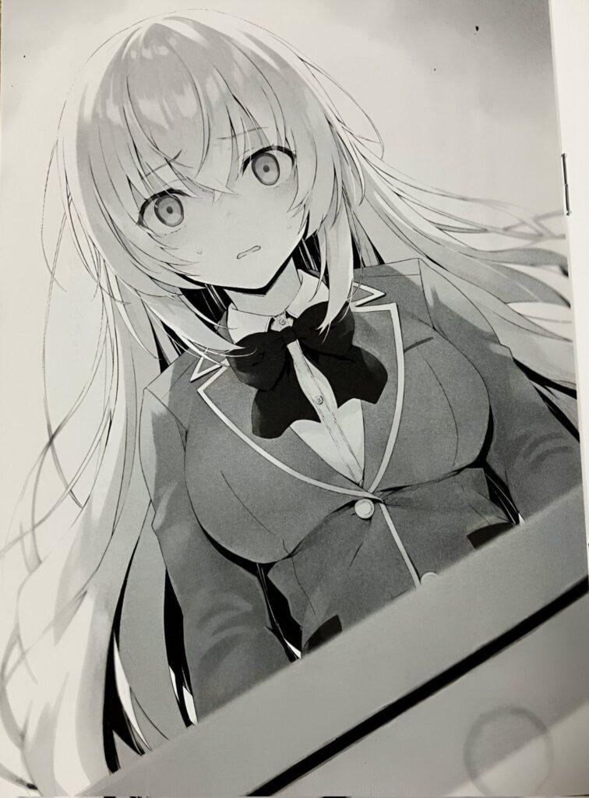
—¿Cómo salió de ese apuro?
No era fácil imaginar a Ichinose recuperándose milagrosamente de esa situación.
—Al igual que yo, las chicas sabían a quién pretendía enviárselo Honami-chan. Discutimos en secreto cómo ayudarla e intervenimos para apoyarla.
Aparentemente, se las arreglaron para salir adelante trabajando juntas.
Había una chica que había pedido consejo amoroso a Ichinose, y ésta había estado pensando en responderle.
El mensaje se envió por error durante aquella conversación.
El silencio fue por consideración a la posibilidad de que condujera de nuevo a esa chica.
Era el resultado de intentar proteger su intimidad.
Con el testimonio de varias personas, la mayoría de los chicos corrigieron inmediatamente su malentendido.
—No había nada que hacer más que aceptarlo, ¿verdad?
—Sí.
Sería diferente si las chicas estuvieran actuando mal, haciendo obvio que la estaban cubriendo, pero a juzgar por su tono, debieron manejarlo bien.
—¿Devolviste a Honami-chan a la normalidad?
—No hice nada especial. Ichinose simplemente se recuperó con su propia fuerza.
—Ya veo... pero aún así, gracias.
—¿Agradecer a alguien que no hizo nada?
—Supongo que estás siendo modesto. Por eso estoy agradecida.
Si lo admito o no, si era verdad, parecía irrelevante.
—¿Pero por qué me dices esto? ¿Porque pensaste que fui yo quien ayudó?
—No, es otra cosa.
Amikura había mantenido la calma en todo momento, pero su expresión se puso ligeramente rígida.
—Puedes darte cuenta si miras, pero incluso ahora, Honami-chan te ve como alguien muy especial. Eres el único en esta escuela que puede ejercer una fuerte influencia sobre ella, por eso.
Me di cuenta de que no se quedaba de brazos cruzados al ser amiga de Ichinose.
Ella entendía su naturaleza; conocía bien a Ichinose Honami.
—Te digo esto porque... no quiero que entristezcas a Honami-chan o la lastimes.
Dijo esto con un poco de dificultad, pero sus palabras fueron claras.
—No pretendo hacerle daño a propósito, pero es una petición bastante difícil.
—Cierto —aceptó Amikura sin negarlo—. Por supuesto, comprendo tu postura. No se trata de si estás saliendo o no. Es sólo que no quiero que se sienta herida innecesariamente.
Tras contestar, Amikura soltó una risita irónica y murmuró:
—Es duro para Honami-chan, enamorarse de un chico que tiene novia.
—Eres bastante directa, ¿verdad?
—Yo también tengo una vaga idea de ti. Me imagino que no estás nervioso,
¿verdad?
—Puede ser.
Aunque no fuera hoy, Amikura debía de estar planeando tener esta conversación conmigo tarde o temprano.
Como compañeros de gimnasio, la oportunidad de estar a solas habría llegado en algún momento.
—Entiendo lo que quieres decir. Lo afrontaré bien.
No podía decir nada con seguridad, así que le pedí comprensión.
—Lo siento, no me corresponde decirte esto como alguien ajeno.
Amikura lo sabía, así que no insistió demasiado.
—No puedes abandonarla como amiga. No es algo malo.
Mostré mi comprensión, e Ichinose volvió.
—Siento haberlos hecho esperar.
—No, en absoluto.
Teniendo en cuenta que era una conversación embarazosa para la persona implicada, Amikura se puso momentáneamente nerviosa.
Ichinose, que había vuelto, no cambió su expresión en absoluto, pero no sería sorprendente que se hubiera dado cuenta de algo con sus agudos ojos.
Pero no preguntó de qué estábamos hablando.
Tal vez era sólo especulación, pero tal vez Ichinose no quería hacer que Amikura dijera una torpe mentira.
—Bueno entonces, me voy a casa pronto. Hasta luego.
Les dije a Ichinose y Amikura y salí del gimnasio.
Me avisaron inesperadamente de una situación en la clase de Ichinose, pero en cuanto salí, recibí un mensaje.
[¿Estabas teniendo otra charla privada con Mako-chan? ¿Sobre mí?]
Sólo quería hablar conmigo para no afectar negativamente a Amikura.
Además, parecía haber adivinado que estábamos hablando de un asunto que le concernía.
Probablemente sentía curiosidad por el contenido de la conversación, pero no podía decírselo debido a la promesa que le hice a Amikura.
[Parece que tienes una buena mejor amiga].
Así que decidí responder con eso.
No había nada de qué preocuparse, y desde luego no rebajaría la posición de Amikura.
Recibí una estampa con una ilustración de la máxima felicidad de Ichinose como respuesta a tener una buena mejor amiga.
—Desde el periodo de exámenes en la isla desierta, sí que ha cambiado mucho.
No se trata sólo de recuperarse, sino de crecer.
Y sus allegados, como Amikura, han notado ese cambio.
—'Ichinose Honami', ¿eh?
Una valiosa existencia que aporta nuevos puntos de vista a un análisis que creía terminado.
VISÍTANOS EN NUESTROS
DIFERENTES SITIOS
http://gladheimtranslations.blogspot.mx/
https://twitter.com/GladheimT
https://mastodon.social/@GladheimT
Si alguien desea hacer una donación
https://ko-fi.com/gladheimtranslation
https://www.buymeacoffee.com/gladheimtls
https://patreon.com/GladheimT